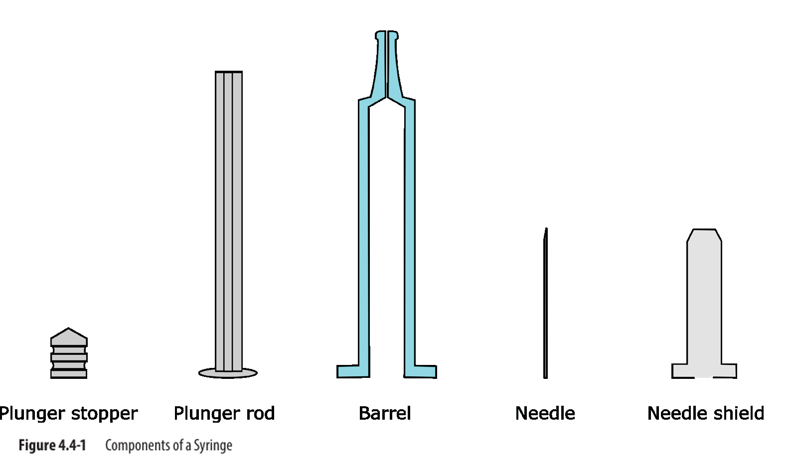
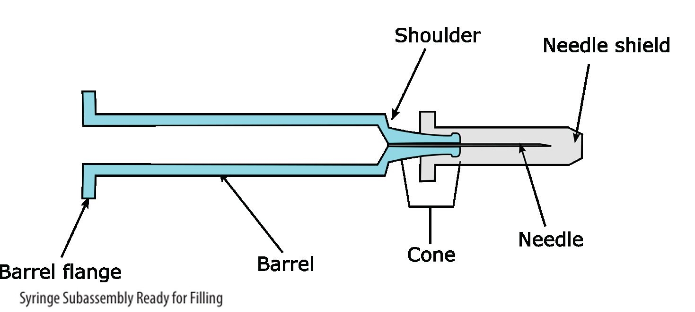
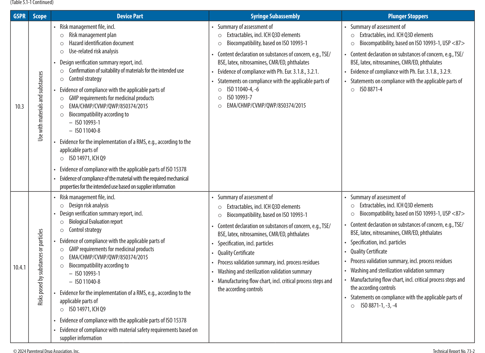
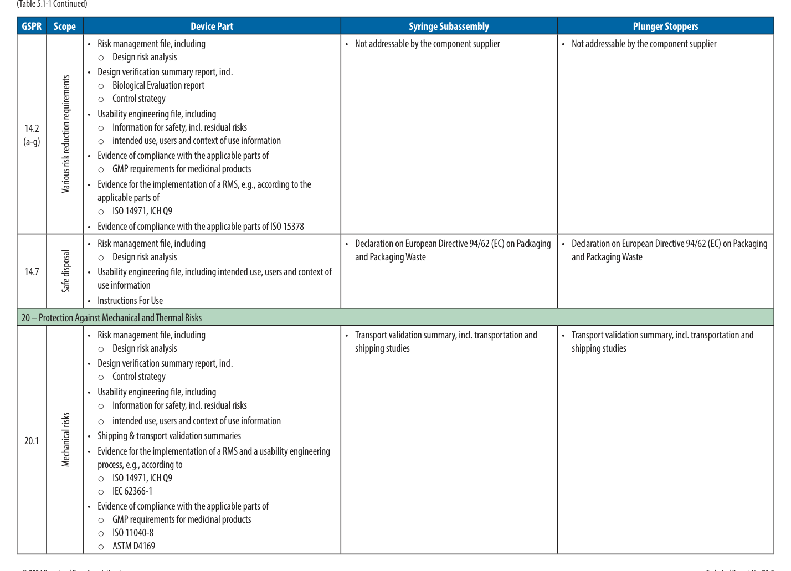
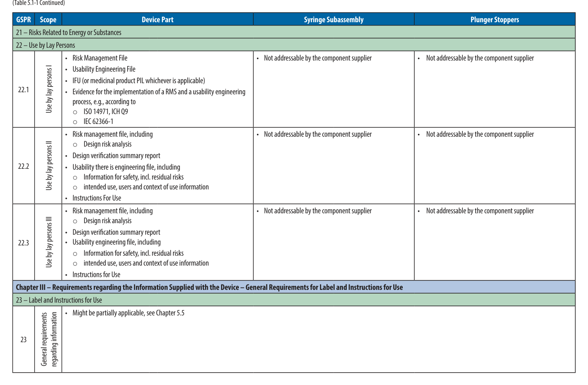
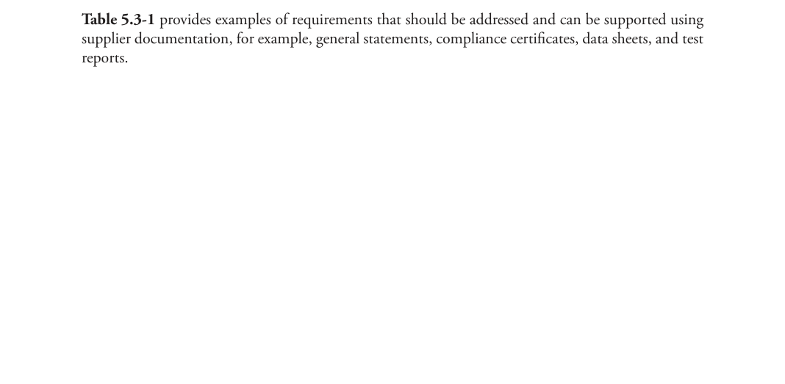
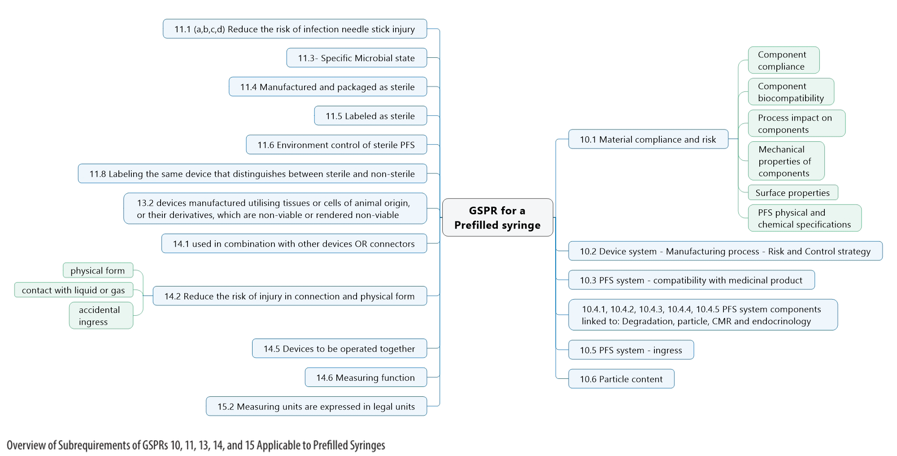
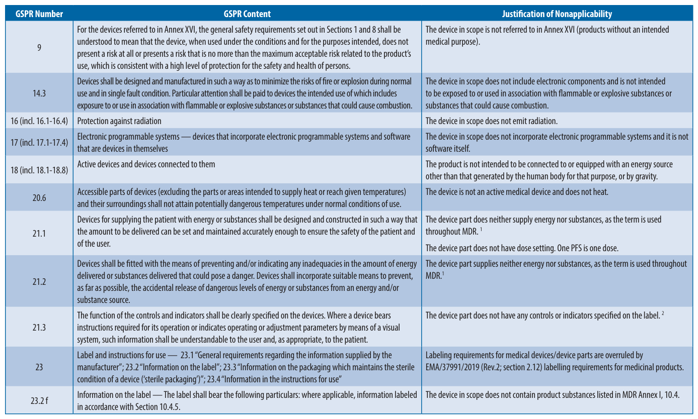

Section 1: Introduction
p1-p2
Learning Objectives
- Understand the core advantages of the prefilled syringe (PFS) over the vial and ampule, including fewer dosing errors, lower risk of microbial contamination and better regulatory compliance
- Grasp the scope of this technical report: 1 mL long glass PFS for biotech large-molecule drug products, with plastic syringes and autoinjectors explicitly excluded
- Understand how terms such as "end user" and "customer" are defined differently at different stages of the product life cycle
- Become familiar with the structure of the report: the chevron diagram (arrow-shaped navigation graphic) as a reading guide for each section, and the standard terminology for PFS components
- Understand how the report, while focused on US/EU regulations, accommodates the qualification and validation expectations of different jurisdictions
Original Text
Since the mid-2000's, a large number of subcutaneously injected biotechnology drug products have been packaged in prefilled syringes (PFSs) because of significant benefits compared to vials or ampules. PFSs reduce medical dosing errors and the risk of microbial contamination by decreasing the number of necessary manipulations prior to injection, and they improve compliance due to ease of use. In addition to the patient benefits, PFSs often have lower overfill regulatory requirements than vials, thereby reducing product waste.
1.1 Purpose/Scope
The purpose of this technical report is to present a discussion of requirements for the 1 mL long glass PFS for biotechnology applications (Figure 1.1-1). Topics covered are material selection and evaluation for suitability, syringe preparation and handling (including human factors), and drug product compatibility (physical and chemical) with the syringe materials and mode of delivery. Plastic syringes and ancillary devices, such as autoinjectors, are not within scope.
The terms "end user," "customer," and "user" are used interchangeably throughout this report. However, the definitions of these terms change according to the topic under discussion as the report progresses through the product life cycle of the PFS. For example, during development, the end user or target population may be the target patient, while the customer or user during production and delivery may be the supplier or manufacturer. Additionally, while this technical report provides more specific information related to the U.S. and European regions, requirements for different regulatory agency jurisdictions may vary, and applicants and manufacturers should be aware of the proper qualification and validation expectations for the intended market.
While the focus of this report is on 1 mL long glass PFSs for biotechnology (large molecule) drug products, the concepts presented may be applied to other products and applications (e.g., small molecule drug products, luer, luer-lock, and plastic syringes). Every attempt has been made to provide comprehensive content, but some particular techniques and technologies may not be included.
The task force that prepared this report consisted of members representing global companies and representatives from regulatory bodies to ensure a consensus on the methods, terminology, and practices described. Experts in PFSs and PFS manufacturing performed technical reviews.
The information in this technical report appears in the general order of operations for developing and manufacturing 1 mL long glass PFSs. Throughout the report, the chevron diagram (below) serves as a guide for the reader and reflects the focus of each chapter.
The glossary contains a list of definitions and acronyms used in this report. When available, same or similar definitions to those included in FDA or ICH guidelines are used.
Figure 1.1-1: Schematic Drawing of a PFS
A typical 1 mL long staked needle syringe consists of a Type I borosilicate glass barrel. For a staked needle syringe, a stainless-steel needle is affixed to the syringe cone with adhesive, and the needle is embedded in an elastomeric needle shield. The inside of the syringe is siliconized to allow the plunger to be easily depressed during administration of the injectable.
PFS Components:
- Thumb pad
- Plunger rod
- Finger flange
- Barrel
- Cone
- Needle
- Needle shield
- Shoulder
- Drug solution for injection
- Plunger stopper
- Plunger
Tutorial Commentary
Key Concepts
Why choose a PFS? Three drivers:
- Sterility assurance first: A PFS reduces the handling steps before injection (such as drawing the product from a vial), directly lowering the window of opportunity for microbial contamination.
- Protection of product CQAs: Fewer handling steps mean a lower risk of dosing errors, protecting the Critical Quality Attributes.
- Commercial flexibility: The regulatory overfill requirement for a PFS is usually lower than for a vial, directly reducing waste of Drug Substance, which matters especially for high-cost biotech large molecules.
Why the scope boundary matters: The report is explicitly limited to the 1 mL long glass PFS and excludes plastic syringes and autoinjectors. This is not arbitrary: the methods for assessing material compatibility differ fundamentally between glass and plastic, and mixing them would blur the regulatory argument.
Analogy
Think of the PFS as a ready-to-eat meal box and the vial as a meal kit you have to cook yourself. The ready meal (PFS) can be eaten directly, reducing the chances of contamination or wrong portions during meal preparation. The meal kit (vial) is flexible, but every opening, measuring and transfer step is a potential point of contamination or error. For a biotech injectable, a "meal-prep mistake" can become a patient safety issue, at a cost far greater than wasted food.
The chevron diagram in this report is like the compartment guide on a meal box: from PFS development and licensing (Section 3) to human factors (Section 4), extractables (Section 5), glass, needle and needle shield (Sections 6-8), then cosmetic imperfections (Section 9), siliconization (Section 10), plunger stopper (Section 11), container closure integrity (Section 12), and finally manufacturing (Section 13) and drug product compatibility (Section 14). Each section focuses on one "compartment".
Key Notes
The definition of "user" changes with the life cycle: This is an important reminder in the report. During development, the "end user" is the target patient; during manufacturing and supply, the "customer" may be a supplier or a manufacturer. As a CDMO, we play different roles at different stages: we are a supplier to the Marketing Authorization Holder (MAH) (manufacturing stage) and also a customer of the component suppliers (purchasing stage). When reading this report, always confirm who "user" refers to in the passage being discussed.
US/EU focus, but watch other markets: The report uses US FDA and European EMA requirements as its main frame of reference, but states clearly that requirements in other jurisdictions (such as Taiwan TFDA and Japan PMDA) may differ. In a Taiwan CDMO setting, you must additionally confirm the specific TFDA requirements for PFS qualification and validation.
Decision hierarchy: The decision hierarchy implicit in the report is: sterility assurance > product CQAs > commercial flexibility. All PFS design and material selection decisions should be based on this hierarchy.
Understanding the Chevron Diagram (Arrow Navigation Graphic)
The report uses a chevron (arrow-shaped) diagram throughout the text to reflect the operational sequence of PFS development and manufacturing. The sections map as follows:
- Section 3: PFS Development & Licensing
- Section 4: Human Factors
- Section 5: Extractables & Leachables
- Sections 6, 7, 8: Glass Barrel, Needle & Needle Shield
- Section 9: Cosmetic Imperfections
- Section 10: Siliconization
- Section 11: Plunger Stopper Suitability
- Section 12: Container Closure Integrity
- Section 13: Manufacturing Requirements
- Section 14: Drug Product Compatibility
Before reading any section, first confirm where you are on the chevron diagram; this helps you understand the context of that section within the whole PFS life cycle.
Figure 1.1-1 PFS Component Terminology
There is no image file for this figure, but the source text lists the 11 components of a standard PFS. As a CDMO engineer, you must use these terms precisely in customer technical documents, supplier specifications and regulatory filings, without mixing them or inventing your own translations:
- Thumb pad: The platform on which the thumb applies force during administration
- Plunger rod: The rod connecting the thumb pad to the plunger
- Finger flange: The wings gripped by the index and middle fingers
- Barrel: The glass tube that holds the drug solution, made of Type I borosilicate glass
- Cone: The front end of the barrel, where the needle is held
- Needle: Made of stainless steel and fixed to the cone with adhesive (staked needle design)
- Needle shield: Made of elastomeric material; protects the needle and maintains sterility
- Shoulder: The transition area between the barrel and the cone
- Drug solution: The filled injectable drug product
- Plunger stopper: The elastomeric sealing element that is in direct contact with the drug solution
- Plunger: The collective term for the whole plunger assembly (stopper + rod); sometimes it refers specifically to the stopper itself
Practice Questions
- Of the three advantages of a PFS over a vial, which one carries the most commercial significance in the CDMO manufacture of biotech large-molecule drugs (such as monoclonal antibodies)? Why?
- This report excludes plastic syringes and autoinjectors from its scope. If your customer wants to use an autoinjector with a biologic product, which sections of this report still apply, and which need additional references?
- The definition of "user" changes with the life cycle. From the perspective of your company (a CDMO), who are your "customer" and your "end user" at the PFS fill-finish manufacturing stage? How does this affect the drafting of the Quality Agreement?
Section Summary
- The core value of a PFS lies in reducing handling steps, and thereby the risk of microbial contamination and dosing errors; sterility assurance is always the first priority
- The scope of the report is clearly limited: 1 mL long glass PFS for biotech large-molecule drug products; plastic syringes and autoinjectors are out of scope
- The definition of "user" varies with the stage of the product life cycle; a CDMO may act as both supplier and customer at different stages
- The chevron diagram is the reading guide for the report and reflects the full operational sequence from PFS development and licensing to drug product compatibility (Sections 3-14)
- The 11 standard PFS component terms (Thumb pad to Plunger) are the basis of technical communication and must be used precisely, without coining your own
Section 2: Glossary of Terms
p3-p5
Learning Objectives
- Master the original English meaning of all core terms used in the PDA TR73 prefilled syringe (PFS) technical report, with their Chinese equivalents
- Distinguish the scope and functional differences between a Primary Component and a Secondary Component
- Understand the essential difference between Extractables and Leachables and what it means for regulatory assessment
- Understand the purpose of, and the difference between, Formative and Summative (validation) usability evaluations
- Become familiar with the list of abbreviations used in this technical report (Section 2.1) to build the vocabulary needed for the later sections
Original Text
The following terms are used throughout PDA Technical Report No. 73 in the context of prefilled syringes (PFS), their components, assembly, and associated testing and human factors considerations. Definitions reflect usage as applied in this report. See Table 2.0-1 below for the complete glossary.
Tutorial Commentary
Why Does the Glossary Matter?
In GMP documents, the precise definition of a term sets the boundary of compliance. The TR73 glossary is especially important because prefilled syringes span three fields: drug regulation (Container Closure Integrity), medical device regulation (Human Factors Engineering) and process engineering (force measurement). The same concept may carry different names in different fields.
Analogy
Reading the glossary before TR73 is like confirming the name of every instrument before entering the operating room. Surgeons and nurses must share exactly the same understanding of "hemostat" and "suture needle", or communication during surgery breaks down. In the same way, a shared understanding of PFS terminology among the QA, production and engineering teams at a CDMO is the foundation of cross-functional collaboration.
Key Notes
The definitions in this glossary apply to the context in which TR73 uses them, and some terms (such as the many synonyms for Plunger Stopper) are called different things across the industry. When communicating with suppliers or regulators, confirm that both sides mean the same concept and, where necessary, define it explicitly in the Technical Agreement.
Practice Questions
- In Amaran's PFS filling operation, which components are Primary Components and which are Secondary Components?
- Why does TR73 list so many synonyms for Plunger Stopper (Piston, Stopper, Plunger, Gasket, Plug, Bung, Closure; seven are listed here, not six)? What are the practical implications for communication with suppliers?
Table 2.0-1: Glossary of Terms (PDA TR73, Section 2.0)
| Term (English) | Chinese Term | Definition / Context |
|---|---|---|
| Backstop (Finger Plate or Thumb Plate) | Back stop (finger flange / thumb flange) | Feature that enhances the area to hold the syringe; usually designed to avoid accidental removal of the plunger from the back. By design, may also serve as a flange extender to facilitate holding during injection. |
| Break-loose Force | Break-loose force | Energy required to initiate plunger movement within the syringe barrel upon injection. |
| Component, Primary | Primary component | Element of the assembled prefilled syringe (needle, plunger stopper and tip closure, or adhesive) directly in contact with the drug. |
| Component, Secondary | Secondary component | Element of the assembled prefilled syringe (plunger rod, backstop, or safety system) that interacts with the primary components and provides functionality to the delivery system. |
| Contextual Inquiry | Contextual inquiry | Ethnographic research method used to observe and analyze behaviors in actual end-use contexts (actual environments and use scenarios). |
| Elastomer | Elastomer | Thermoplastic material formulation (that may or may not contain rubber/natural latex) derived from elastic polymer; often used interchangeably with the term "rubber." |
| Extractable | Extractable | Organic or inorganic chemical entity that is forced out of container closure system materials and components under laboratory experimental conditions. |
| Extrusion Force (Propagation Force, Glide Force, Syringeability) | Extrusion force (propagation force, glide force, syringeability) | Filled syringe delivery force (not including break-loose force) quantified as the highest non-break-loose force to complete the injection stroke. |
| Formative Usability Evaluation | Formative usability evaluation | Observed actual or simulated use of early prototypes to help reliably identify product concept-specific, use-related hazards that may have been missed by other methods. |
| Glide Force | Glide force | Force in Newtons (N) required for plunger movement within an empty syringe. |
| Hold-Up Volume (Residual Volume, Nonexpellable Volume, Dead Volume) | Residual volume (dead volume) | Amount of fluid remaining in the syringe when the plunger has reached the end of travel within the barrel. |
| Leachable | Leachable | Organic or inorganic chemical entity that migrates from pharmaceutical container closure system components into a drug product formulation. |
| Needle (Cannula) | Needle (cannula) | A thin, hollow, metal tube commonly used with a syringe to inject substances into the body. |
| Needle-Safety Device | Needle safety device | A safety feature or mechanism that effectively reduces the risk of an exposure incident (e.g., accidental needlestick). |
| Needle Shield (Needle Cover) | Needle shield (needle cap) | Rigid or flexible polymeric substance used to seal and protect the needle. |
| Nest (Tub Nest) | Nest (barrel nest) | Rigid plastic support placed into a tub to keep syringes upright with sufficient separation to allow for easy manipulation by manual or automated fill-line systems. |
| Plunger | Plunger rod assembly | The combined components of the plunger rod and plunger stopper. |
| Plunger Rod | Plunger rod | Portion of the plunger assembly which provides a thumb pad for depressing the plunger and is attached to the plunger stopper inside the syringe barrel. |
| Plunger Stopper (Piston, Stopper, Plunger, Gasket, Plug, Bung, Closure) | Plunger stopper (piston, stopper, plunger, gasket, plug, bung, closure) | Elastomeric component that acts as a seal to prevent product leakage and also forces expulsion of the syringe contents when depressed. |
| Plunger Stopper-Barrel Interface | Plunger stopper-barrel interface | Circumferential contact points between the ribs of the plunger stopper and the inner diameter of the syringe barrel. |
| Prefillable | Prefillable | Syringes and associated components considered as starting material for the filling and assembling process of a prefilled syringe. |
| Prefilled | Prefilled | Syringe assembly after being filled with pharmaceutical product and being closed. |
| Prefilled Syringe | Prefilled syringe (PFS) | A syringe that has been prefilled to contain a specific dose of medication. |
| Ready for Filling | Ready-to-fill state | Prepared for loading with the pharmaceutical product. |
| Rondo Tray | Rondo tray | Plastic packaging with a horizontal design used to accommodate syringes during the manufacturing process. |
| Schlieren | Schlieren (uneven silicone oil streaks) | Optical inhomogeneities in transparent material not necessarily visible to the human eye. In TR73, Schlieren are due to localized variations in silicone oil thicknesses. |
| Staked Needle | Staked needle | Nonremovable, fixed needle attached to syringe body/cone with adhesive. |
| Steribag | Sterilization pouch | Sealing bag made at least partly of steam-permeable material to wrap and seal containers for sterilization (e.g., tub-nest configurations). |
| Suitability (Machinability) | Machinability | Physical interactions of components with equipment and environment. |
| Summative/Validation Testing | Summative / validation testing | Evaluative testing providing evidence to show that representative users in the expected use conditions can perform all essential and critical tasks required for safe and effective use of the device. |
| Syringeability | Syringeability | The qualities required for delivery of the syringe contents at a given injection rate via a needle of a predetermined gauge and length that enables optimal injection conditions for the drug product, taking into account physical properties, flow rate, injection force, and needle gauge. |
| Thumb Pad | Thumb pad | Disk at end of plunger rod. |
| Tub | Barrel (nest barrel) | Plastic box that contains a vertically oriented syringe nest and is sealed with a lid. |
| Use-related Risk Analysis | Use-related risk analysis | A systematic assessment of all user steps involved in using the device, with particular consideration of potential use errors, their associated clinical consequences, risk-mitigation strategies, and the method of validating those strategies. |
Original Text
Extractable vs. Leachable
Extractable: Organic or inorganic chemical entity that is forced out of container closure system materials and components under laboratory experimental conditions.
Leachable: Organic or inorganic chemical entity that migrates from pharmaceutical container closure system components into a drug product formulation.
The distinction lies in the conditions: extractables are identified under aggressive laboratory conditions; leachables are what actually migrate into the drug product under real-world storage conditions.
Tutorial Commentary
Core Concept: The Essential Difference Between E&L
Extractables are all the potential chemical substances in a material that are deliberately driven out under laboratory conditions (usually strong solvents, high temperature and prolonged soaking), with the aim of building a "worst-case database".
Leachables are the substances that actually migrate into the drug product under normal storage conditions, and they are the real patient safety risk.
Relationship: Leachables are usually a subset of Extractables. Run the extractables study first, then use the results to predict leachables risk, and run a confirmatory leachables study when necessary.
Analogy
Imagine a new plastic water bottle. Boil it in water for an hour and every chemical that comes out is an Extractable (forced out by laboratory conditions). Fill it with room-temperature water every day, and the substances actually found in the water a month later are the Leachables (migration under real-use conditions). Extractables studies tell us the "chemical inventory" of the material; leachables studies determine the patient's actual exposure.
Regulatory Note
The ICH Q3E (Extractables and Leachables) guideline requires a systematic E&L assessment of the drug container closure system. For biologics (such as Amaran's biosimilars), interactions between protein and leachables (such as oxidation and aggregation) are especially critical because they can affect product potency and immunogenicity.
Original Text
Formative vs. Summative/Validation Usability Testing
Formative Usability Evaluation: Observed actual or simulated use of early prototypes to help reliably identify product concept-specific, use-related hazards that may have been missed by other methods.
Summative/Validation Testing: Evaluative testing providing evidence to show that representative users in the expected use conditions can perform all essential and critical tasks required for safe and effective use of the device.
Tutorial Commentary
Core Concept: The Two Stages of Human Factors Testing
Formative: Early in development, prototypes are used to explore risks, find problems and improve the design. It is an iterative process whose aim is to "find problems and improve".
Summative (validation): Late in development, using the final (or near-final) design with representative users in realistic use scenarios. Its aim is to "demonstrate that the design is sufficiently safe and effective". This is key evidence for regulatory submissions (such as an FDA 510(k) or PMA).
Analogy
Formative testing is like the tasting phase for a new dish: the chef invites a few customers to taste, collects comments, revises the recipe and repeats for several rounds until satisfied. Summative testing is the formal Michelin inspection: no more changes are allowed, and the verdict decides whether you can open (launch). Both need "real customers" (representative users), but the purpose and timing are completely different.
CDMO Perspective
As a CDMO taking on PFS filling business, Amaran usually finds that the client (the brand-name drug company) has already completed Formative and Summative testing. However, when the CDMO introduces new equipment or new packaging materials that change the injection force, appearance or handling, it may need to assess whether the Use-related Risk Analysis must be repeated. This is an important consideration in Change Control assessment.
Original Text
Force-related Terms: Break-loose Force, Glide Force, Extrusion Force, Syringeability
Break-loose Force: Energy required to initiate plunger movement within the syringe barrel upon injection.
Glide Force: Force in Newtons (N) required for plunger movement within an empty syringe.
Extrusion Force (Propagation Force, Glide Force, Syringeability): Filled syringe delivery force (that does not include break-loose force) quantified as the highest non-break-loose force to complete the injection stroke.
Syringeability: The qualities required for delivery of the syringe contents at a given injection rate via a needle of a predetermined gauge and length, enabling optimal injection conditions, taking into account physical properties, flow rate, injection force, and needle gauge.
Tutorial Commentary
Hierarchy of Injection Force Terms
These terms describe the mechanical characteristics of different stages of the injection process:
- Break-loose Force: The first step, overcoming static friction so that the stationary plunger starts to move. This is the moment of strongest impact felt by the patient.
- Glide Force: The force needed to keep the plunger moving in an empty syringe (no drug solution). It mainly reflects the lubricating effect of the silicone oil and the hardness of the rubber.
- Extrusion Force: After filling with drug solution, the maximum force needed to complete the whole injection stroke (excluding break-loose force). It is strongly affected by the viscosity of the drug solution.
- Syringeability: An overall concept that integrates all the factors above to assess whether the drug product can be injected smoothly.
Analogy
Imagine pushing a handcart parked on a slope. Break-loose Force is the maximum instantaneous force needed to get it moving from rest; Glide Force is the force to keep the empty cart moving on level ground; Extrusion Force is the maximum force over the whole push once it is loaded with cargo (a high-viscosity drug solution). Syringeability assesses whether the cart (the syringe plus drug product combination) is "easy to use" overall.
Process Control Points
When a filling CDMO accepts a PFS specification, it must confirm the client's specification ranges for Break-loose Force and Extrusion Force. The uniformity of the silicone oil coating is the key to controlling both parameters. Too little silicone oil leads to high force; too much produces Schlieren optical defects, which interfere with Visual Inspection for visible foreign matter.
Practice Questions
- Why does the definition of Extrusion Force explicitly exclude Break-loose Force? What is the practical significance of this distinction when designing test specifications?
- If the viscosity of a PFS product's drug solution rises from 5 cP to 50 cP, which force parameter do you expect to be affected most? How would you adjust the specification?
- How do Schlieren defects and the silicone oil coating affect Amaran's Visible Particulate inspection procedure?
Original Text
Elastomer & Plunger Stopper
Elastomer: Thermoplastic material formulation (that may or may not contain rubber/natural latex) derived from elastic polymer; often used interchangeably with the term "rubber."
Plunger Stopper (Piston, Stopper, Plunger, Gasket, Plug, Bung, Closure): Elastomeric component, which acts as a seal to prevent product leakage and also as the portion of the syringe which forces the expulsion of the contents of the syringe when depressed.
Plunger Stopper-Barrel Interface: Circumferential contact points between the ribs of the plunger stopper and the inner diameter of the syringe barrel.
Tutorial Commentary
The Importance of Elastomer Materials
The Elastomer is one of the most critical primary component materials of a prefilled syringe. Common PFS plunger stopper materials include:
- Bromobutyl: Low Extractables, widely used for protein drug products
- Chlorobutyl: Similar to Bromobutyl, but with a different degree of chlorination
- EPDM: Ethylene propylene diene monomer; this material is also listed in the TR73 abbreviations
- TPV (thermoplastic vulcanizate): A newer material with a more favorable Extractables profile
Regulatory Significance of the Plunger Stopper-Barrel Interface
The plunger stopper-barrel interface is a key control point for Container Closure Integrity (CCI). The sealing performance of this interface is affected by the number and design of the plunger ribs, the barrel inner diameter tolerance, the amount of silicone oil lubricant, and storage temperature and time. Many sections of TR73 (especially Section 12, CCI) refer back to the characteristics of this interface.
Analogy
The plunger stopper-barrel interface is like the relationship between a piston ring and the cylinder wall of an engine. In a car engine, the piston ring must fit tightly against the cylinder wall to seal the combustion gases (sealing function) while still being able to slide (propulsion function). The PFS plunger stopper likewise needs a perfect balance of these two properties: tight enough to prevent leakage (CCI), but not so tight that the injection force becomes too high (syringeability). The silicone oil plays the role of engine oil.
Original Text
The following abbreviations are used throughout PDA Technical Report No. 73. See Table 2.1-1 below for the complete list.
Tutorial Commentary
Framework for Grouping the Abbreviations
The TR73 abbreviations can be sorted into four categories, which helps memorization:
- Analytical methods: AAS, FTIR, GC, HPLC, ICP-MS, ICP-OES (all chemical/spectroscopic analysis techniques)
- Regulatory/application documents: AQL, BLA, DMF, NDA (related to drug applications)
- Materials/components: C/C, EPDM, RNS, TPV (container closure system materials)
- Process/engineering: CCI, FMEA, HFE, LPP, RABS, VHP, WFI (process technology abbreviations)
Notes on Key Abbreviations
AET (Analytical Evaluation Threshold): Used in E&L studies to decide which compounds need further safety assessment. Leachables below the AET are generally considered acceptable.
HFE (Human Factors Engineering): A theme running through TR73, stressing that PFS design must take into account the handling habits and possible use errors of actual users (healthcare professionals and patients).
LPP (Low-pressure Plasma): Used for silicone oil removal or surface modification; a surface treatment technology for certain special PFS components.
Analogy
Mastering this list of abbreviations is like learning the alphabet of a new language: you do not need to memorize everything on day one, but each time you meet an unfamiliar abbreviation, come back and look it up, and gradually it becomes second nature. Bookmark this page and consult it as you read the later sections.
Practice Questions
- AAS and ICP-OES are both elemental analysis methods. In PFS E&L studies, in which situations is each one appropriate?
- What role does a RABS (Restricted Access Barrier System) play in aseptic PFS filling? How does it affect the VHP decontamination strategy?
- How do HFE (Human Factors Engineering) and traditional FMEA complement each other? In PFS design evaluation, what kind of risk does each identify?
Table 2.1-1: Abbreviations (PDA TR73, Section 2.1)
| Abbreviation | Full Term (English) | Description |
|---|---|---|
| AAS | Atomic absorption spectroscopy | Atomic absorption spectrometry (elemental quantification) |
| AET | Analytical evaluation threshold | Analytical evaluation threshold (basis for the reporting/identification/safety thresholds in E&L studies) |
| API | Active pharmaceutical ingredient | Active pharmaceutical ingredient |
| AQL | Acceptable quality level | Acceptable quality level (basis of the sampling plan) |
| BLA | Biologic license application | Biologics license application (US FDA marketing application for biologics) |
| C/C | Container closure | Container closure system |
| CCI | Container closure integrity | Container closure integrity |
| DMF | Drug master file | Drug master file (confidential document submitted to the FDA by raw material/packaging suppliers) |
| EPDM | Ethylenepropylenediene monomer | Ethylene propylene diene monomer (elastomer material used for plunger stoppers) |
| FMEA | Failure mode and effects analysis | Failure mode and effects analysis |
| FTIR | Fourier transform infrared spectroscopy | Fourier-transform infrared spectroscopy (material identification/functional group analysis) |
| GC | Gas chromatography | Gas chromatography (analysis of volatile organic compounds) |
| HFE | Human factors engineering | Human factors engineering (user interface design and risk assessment) |
| HPLC | High-performance liquid chromatography | High-performance liquid chromatography (analysis of non-volatile organic compounds) |
| ICP-MS | Inductively coupled plasma-mass spectrometry | Inductively coupled plasma mass spectrometry (trace metal analysis, ppb-level sensitivity) |
| ICP-OES | Inductively coupled plasma optical emission spectroscopy | Inductively coupled plasma optical emission spectrometry (simultaneous multi-element analysis) |
| ISE | Injection site reaction | Injection site reaction (one of the clinical safety endpoints) |
| LPP | Low-pressure plasma | Low-pressure plasma (surface modification technology that can remove silicone oil or change surface properties) |
| MDD | Medical Devices Directive | Medical Device Directive (EU, replaced by MDR 2017/745) |
| NDA | New drug application | New drug application (US FDA marketing application for chemically synthesized drugs) |
| PFS | Prefilled syringe | Prefilled syringe |
| RABS | Restricted access barrier system | Restricted access barrier system (protection of the aseptic filling area) |
| RNS | Rigid needle shield | Rigid needle shield |
| TPV | Thermoplastic vulcanizate | Thermoplastic vulcanizate (newer low-Extractables plunger material) |
| VHP | Vaporized hydrogen peroxide | Vaporized hydrogen peroxide (sterilant/decontamination agent for RABS/isolators) |
| WFI | Water for injection | Water for injection (the highest-purity water standard for injectable products) |
Section Summary
- PFS terminology spans three fields, drug (CCI, Elastomer), device (HFE, Summative Testing) and process engineering (force measurement), so a unified common language must be established.
- The distinction between Extractables (forced extraction in the laboratory) and Leachables (migration under real-use conditions) is the basis of E&L study design; the former is a superset of the latter.
- Break-loose Force, Glide Force and Extrusion Force correspond to different mechanical stages of the injection process, and the uniformity of the silicone oil coating is the common key to controlling all three parameters.
- Formative testing is used early in development to explore risks and improve iteratively; Summative testing is used to validate the final design, and its results directly support regulatory submissions.
- The TR73 abbreviations fall into four categories: analytical methods (AAS, FTIR, GC, HPLC, ICP-MS/OES), regulatory documents (BLA, NDA, DMF), materials (EPDM, TPV, RNS) and process technologies (CCI, HFE, RABS, VHP, WFI).
Section 3: PFS Development and Licensing
p6-p11
Learning Objectives
- Understand the regulatory positioning of prefilled syringes (PFS) in the US and EU, including the combination product framework and the PMOA principle
- Understand the three key PFS system functions: treating the patient, obtaining approval, and producing and delivering the drug delivery system
- Understand the respective roles and responsibilities of drug manufacturers and suppliers in DMF filings, including when Type III and Type V DMFs apply
- Understand the filing content required for a PFS combination product in CTD Module 3, including design controls, compatibility, stability and CCI requirements
- Become familiar with the main standards and technical references that apply to PFS development
Original Text
This section discusses considerations for planning the development of the PFS and eventual marketing approval.
A developer of a PFS must define its purpose, evaluate the supplier, and adhere to regulatory and marketing requirements. For example, in the United States, a finished PFS is considered a combination product and regulated by the Center for Drug Evaluation and Research (CDER), the Center for Biologics Evaluation and Research (CBER), or the Center for Device and Radiological Health (CDRH) of the U.S. FDA, depending on its primary/principal mode of action (PMOA). Based on the same principle of PMOA, products in the European Union (EU) that incorporate or administer a drug may be regulated as either medical devices or medicinal products as the term combination product per se does not exist yet in EU regulations. A container/closure (C/C) system, such as a PFS used in the packaging of a medicinal product for human use, is approved as part of the medicinal product application.
Tutorial Commentary
Key Concepts
Combination Product: In the US, a PFS is classified as a combination product because it has the characteristics of both a drug and a device. The lead regulatory center depends on the PMOA (primary mode of action):
- CDER: leads for PFS containing small-molecule drugs
- CBER: leads for PFS containing biological products (e.g., monoclonal antibodies, vaccines)
- CDRH: leads when the device function predominates
European Union: The EU currently has no clear definition of a "combination product". A PFS is classified as either a medicinal product or a medical device according to its principal function, and is governed by Directive 2001/83/EC or MDD 93/42/EEC respectively.
Analogy
Imagine you have developed a "pre-filled coffee thermos". The regulator will ask: is the primary function of this product the coffee (the drug) or the thermos (the device)? If the main purpose is to get the coffee safely to the consumer (drug function predominates), the food authority takes charge; if the main selling point is heat retention, the consumer product safety commission takes charge. The PMOA determination for a PFS follows the same logic: whichever function predominates determines who reviews. For a CDMO, this determination must be clarified before accepting a development contract, because it directly affects the regulatory strategy and filing timeline.
Key Notes
Practical impact for a CDMO: As the contract manufacturer, the CDMO must specify in the contract that the license holder (the drug company) is responsible for confirming the PMOA and the lead regulatory authority; the CDMO should not make this assumption on its own. The cGMP requirements of different authorities (21 CFR 820 vs 21 CFR 211) have a major impact on facility certification and the documentation system.
Practice Questions
- How is the PMOA determined for a prefilled syringe containing insulin? Will CDER or CBER take the lead?
- Why is the lack of a formal EU definition of "combination product" a challenge for PFS developers?
Original Text
In order to have a comprehensive understanding of the PFS up to the end of its shelf life, it is necessary to consider the ability of the PFS to provide an integral C/C system and to consider the interaction of the related subsystems. These considerations should support the goal of treating the patient, obtaining market approval for a drug, and producing and supplying the drug delivery system. These three goals holistically comprise the key system functions of the PFS life cycle.
3.1.1 Key System Function: Treating the Patient
The ultimate purpose of the PFS subsystem is to contain the drug and administer the expected dose within the expected timeframe to the patient. Administration of the drug delivery system is achieved through various avenues, such as the following:
- self-administration with a plunger rod PFS or with additional device accessories
- healthcare provider administration with or without safety systems
Subsequently, to ensure proper administration of the drug, it is necessary to address multiple factors when treating the patient. Factors include the following:
- drug dose volume, viscosity, and temperature
- duration of injection
- targeted tissue and route of administration
- injection technique (pinch, angle, or region)
3.1.2 Key System Function: Enabling Market Approval
The license holder must generate a comprehensive data package to ensure the suitability of the PFS for the intended use as prescribed by various regulatory authorities, such as the FDA and European Medicines Agency, and in accordance with applicable guidance documents to receive regulatory approval for the drug product.
Tutorial Commentary
Key Concepts
The three key PFS system functions:
- Treating the patient: ensure the drug reaches the target tissue at the right time, in the right dose, by the right route
- Obtaining approval: provide a complete data package demonstrating that the PFS is suitable for its intended use
- Production and delivery: ensure the system is compatible with the filling, assembly and distribution processes
These three functions do not exist independently; they constrain one another. For example, a high-viscosity formulation chosen to treat the patient may significantly affect the filling process (production function) and the injection force (human factors).
Key Notes
Key variables affecting injection: Drug viscosity directly affects injection time and the plunger force required. For protein drugs such as monoclonal antibodies, the viscosity of high-concentration formulations is often a development challenge, which is reflected in the "duration of injection" and "injection technique" factors mentioned in 3.1.1.
Data responsibilities of the license holder: Section 3.1.2 stresses that the license holder must generate a "comprehensive data package". For a CDMO, the service agreement should state clearly which data the CDMO generates and which the license holder is responsible for compiling and submitting.
Practice Questions
- If a monoclonal antibody PFS product has a very high viscosity (>50 cP), how would this affect all three key system functions at the same time?
- Why must both "self-injection" and "injection by a healthcare professional" be considered? How does this affect PFS design?
Original Text
To produce and distribute the combined drug and delivery system, the system should be:
- compatible with the filling and inspection process, including the plunging process (e.g., Ventube™ or vacuum)
- compatible with the assembly process (plunger rod insertion, labeling, and secondary packaging)
- suitable for delivery to end users, including factors such as cold chain requirements, transport conditions (shock, vibration, and pressure), and protection provided by the secondary and tertiary packaging
Table 3.1.3-1 below provides a high-level view of the interactions between subsystem components or stakeholders in relation to key system functions.

Figure 3.1: PDA TR73 Section Structure — Section 3.0 PFS Development & Licensing within the broader TR73 framework (PDF p14)
Tutorial Commentary
Key Concepts
Ventube™ / vacuum plunging: There are two main methods of plunger insertion (plunging). Vacuum plunging inserts the plunger under reduced pressure, which effectively avoids residual air in the syringe and is essential for certain sensitive drugs (e.g., protein formulations). The choice of method directly affects equipment investment and the process validation strategy.
Cold chain protection through three levels of packaging:
- Primary packaging: glass barrel + plunger stopper + needle shield
- Secondary packaging: blister or tray, providing mechanical protection
- Tertiary packaging: outer carton, used for distribution and transport
Analogy
PFS manufacturing compatibility is like the "packaging line design of a food factory". If you develop a jelly with a special shape that the existing filling machine cannot handle, you face two choices: redesign the jelly (change the product design) or buy new equipment (increase capital investment). For a CDMO assessing a new client product, the first step in the feasibility assessment is to confirm that the existing filling line is compatible with the target PFS specification.
Figure Analysis
The location diagram for Section 3.0 in TR73 (fig-p14-1) shows that this section (3.0 PFS Development & Licensing) is the "starting point" of the whole technical report, surrounded by the topic sections 4.0 Human Factors, 5.0 E&L, 6.0-8.0 Glass/Needle, 9.0 Cosmetic, 10.0 Siliconization, 11.0 Plunger Stopper, 12.0 CCI, 13.0 Manufacturing and 14.0 Drug Compatibility. This structure conveys an important message: development decisions (Section 3) affect the considerations in every subsequent technical section, so planning must take a whole-lifecycle view.
Practice Questions
- If a client requires a vacuum plunging process but the CDMO's existing equipment supports only Ventube™, how should this requirement be assessed at the contract negotiation stage?
- What additional validation requirements must be considered for the secondary and tertiary packaging of cold chain products (e.g., biologics requiring 2-8°C storage)?
Table 3.1.3-1: Overview of Interactions Between Key System Functions & Components in the PFS Life Cycle
Overview of the interactions between each key system function and the relevant components/stakeholders across the PFS lifecycle
| Key System Functions | Contributors and Stakeholders | |||||
|---|---|---|---|---|---|---|
| Drug | PFS Subsystem | Fill/Finish Manufacturing Equipment | Ancillary Devices | Distribution | Patient | |
| Treating the Patient | ||||||
| Allows the transfer of the expected dose within the expected time frame in the targeted tissue | • | • | • | • | ||
| Contains drug | • | • | • | |||
| Obtaining Approval for Drug | ||||||
| Adequately protect the dosage form | • | • | • | • | • | |
| Composed of materials that are considered safe | • | • | • | |||
| Producing and Delivering the Drug Delivery System | ||||||
| Be compatible with the filling and inspection process | • | • | • | |||
| Be compatible with the assembly process | • | • | • | |||
| Be suitable for delivery to end user | • | • | • | |||
- "Drug" refers to the medicine delivered in the PFS.
- The PFS subsystem includes a packaged glass barrel with an attached needle that is protected with a needle shield and a plunger stopper.
- "Manufacturing equipment" refers to the different machines used to process the subsystem to produce a full drug delivery system. Tasks include filling, stoppering, inspecting, or preparing secondary packaging.
- Ancillary devices include autoinjectors, safety devices, plunger rods, backstops, and other assistive devices.
- "Distribution" refers to the outbound distribution channel from the license holder to the patient.
- The patient is the person who ultimately receives the treatment.
Original Text
The following sections provide considerations for manufacturer, supplier, instructions for healthcare provider, regulatory submission/eCTD content format, standards, and technical references applicable to the PFS.
3.2.1 Manufacturer Considerations
A drug product manufacturer must follow the marketing requirements in the country where the product is marketed. In the United States, a PFS is considered to be a combination product as defined by 21 CFR 3.2(e). These combination products are assigned to the lead center based on the PMOA. Both CDER and CBER provide guidance on PFS drugs and biologics.
Drug manufacturers must comply with cGMPs to ensure that the PFS product is safe and efficacious. Each constituent part of the PFS product is subject to its applicable cGMP requirements. The device constituent is subject to the quality system regulations for devices as described in 21 CFR 820, whereas the drug or biological product constituent is subject to the regulations under 21 CFR 211. For biological products, the regulations described in 21 CFR 610 also apply. The cGMP requirements for combination products are codified under the final rule in 21 CFR 4, which provides guidelines on how to achieve compliance under one operating principle with additional provisions under another. These include:
- demonstration of compliance with all cGMP regulations applicable to each of the constituent parts included in the combination product, or
- demonstration of compliance with either the drug cGMP or the quality system regulations for devices, and with provisions that are not shared by both regulations
Products that incorporate a drug or administer a drug may be regulated in the European Union as either medical devices or medicinal products, depending on the principal intended function of the product and the method by which this function is achieved. PFSs are categorized as devices for administering a medicinal product when the device and the medicinal product form a single integral product designed for exclusive use in the given combination, and the device is not reusable or refillable. These products are covered by the regulations for medicinal products, such as Directive 2001/83/EC. However, relevant essential requirements in Annex 1 of Medical Devices Directive (MDD) 93/42/EEC apply to the safety and performance-related features of the device. Guidelines related to drug delivery products regulated as medicinal products, such as PFSs, are provided in medical devices guidance document MEDDEV 2.1/3, Revision 3.
Following standards like ISO 13485 (Medical Devices – Quality Management Systems) and ISO 14971 (Medical Devices – Application of Risk Management to Medical Devices) will allow companies to demonstrate compliance with Annex 1 of the MDD.
Tutorial Commentary
Key Concepts
The "one primary, one supplementary" compliance principle of 21 CFR 4: For a PFS combination product, 21 CFR 4 provides two compliance pathways:
- Full compliance pathway: meet all requirements of both 21 CFR 211 (drugs) and 21 CFR 820 (devices)
- Streamlined pathway: choose one set as the primary basis, then add the non-overlapping requirements of the other
The "additional provisions" specifically required by 21 CFR 820 include management responsibility, design controls, purchasing controls and CAPA (corrective and preventive action).
Analogy
The 21 CFR 4 compliance strategy is like a "multinational work visa". If you work in both Taiwan and Japan, there are two ways: obtain full work permits for both countries (the full compliance pathway: highest cost but safest), or rely mainly on the permit of one country and apply for the specific additional documents the other requires (the streamlined pathway: suited to companies operating mainly in one jurisdiction). Before accepting a combination product contract, the CDMO must confirm with the license holder which compliance strategy will be used, because it directly affects the cost and timeline of building the quality system.
Key Notes
ISO 13485 vs 21 CFR 820: ISO 13485 is the quality management system standard recognized under the EU MDD and is widely accepted in many markets worldwide. 21 CFR 820 is the US FDA quality system regulation for devices. The two are highly similar but not identical. A CDMO that already holds ISO 13485 certification has a clear advantage when entering the EU market.
ISO 14971 risk management: This standard requires manufacturers to manage risk systematically across the whole device lifecycle and to produce a complete Risk Management File. It is highly complementary to the QRM principles of ICH Q9.
Practice Questions
- For a Taiwanese CDMO to accept a contract to manufacture a monoclonal antibody PFS for a US client, which specific requirements of 21 CFR 211 and 21 CFR 820 must be met at the same time?
- How do the scopes of application of EU Directive 2001/83/EC and MDD 93/42/EEC differ for a PFS?
Original Text
Suppliers of PFS components can include information related to the manufacturing of the syringe, needle, and accessory components in the drug master file (DMF) for applications submitted to the FDA in the United States. The manufacturer's supplier agreement should define the roles and responsibilities of each party. In other countries, such information may be submitted in the marketing application dossier to the health authorities. Additionally, filing requirements for different regulatory agency jurisdictions may vary, and applicants should be aware of the proper procedures for the intended market.
Elements to be included in the DMF include:
- overall description of the C/C system, packaging component diagram, dimensional specifications
- information on the manufacturing and processing facility (washing, siliconization, sterilization, and environmental controls)
- component suppliers [of glass barrels, ceramic paint, plunger stoppers, needles, silicone, needle adhesive, needle shields, plunger rods, flange extenders, or backstops]
- suitability (protection from light, compatibility, and sterility) and component safety
- quality controls during syringe barrel manufacture, lubrication, needle assembly, sterilization, and transport
- stability of syringe components without any product, and a list of regulatory requirements fulfilled, plus revalidation plan
- mechanism for communication of quality issues and customer notification
Elastomeric closure components for PFS systems (e.g., tip caps and plunger stoppers) must meet current U.S. and European regulatory requirements for compendial compliance. Component suppliers should ensure that adequate information is provided to the health authorities for proper review of sponsors' drug applications, including:
- elastomer formulation ingredients and appropriate certifications (e.g., BSE/TSE, dry natural rubber latex, and animal-derived raw materials)
- compendial testing results for physicochemical properties
- biological reactivity assessment
In the United States, suppliers typically elect to compile this information in a Type III DMF.
In some instances, post-processing of elastomeric components (e.g., washing or sterilization) may be performed by a third party, such as the component supplier. In such cases, adequate supporting data should be made available to enable proper agency review of these processes. This information can be contained within a Type V DMF in the United States and should include supporting information on process validation, process controls, testing, and packaging qualification.
As DMF owners, suppliers can provide sponsors with letters of authorization to applicable DMFs for use in sponsor applications. Per 21 CFR 314.420(c), suppliers in the United States are required to notify their letter of authorization holders when significant changes are made to the DMFs. Refer to 21 CFR 4 for further guidance on compliance with design control expectations.
Tutorial Commentary
Key Concepts
Comparison of DMF types:
- Type III DMF: packaging materials (e.g., elastomeric closure components) - covers rubber formulation, BSE/TSE certification, physicochemical properties and biological reactivity testing
- Type V DMF: FDA-accepted reference information (specific facilities, processes or articles) - when a supplier performs post-processing of elastomeric components (e.g., washing, sterilization), the related process validation data can be placed in this type
Letter of Authorization: the mechanism by which the DMF holder (the supplier) authorizes a drug company (the sponsor) to reference the DMF in its application. When there is a major change to the DMF, the supplier must proactively notify all holders of letters of authorization.
Analogy
The DMF system is like a "technical specification file that a building materials supplier submits to the building authority". To construct a building, you do not need to test every steel bar yourself; you reference the material certification file the steel manufacturer has already submitted to the authority (the DMF) and obtain the manufacturer's "letter of authorization". If the steel manufacturer later changes the steel formulation (a major DMF change), it must notify every builder holding its letter of authorization, which is the spirit of 21 CFR 314.420(c). For a CDMO, requiring in the supplier contract that "major DMF changes be notified X days in advance" is a basic risk control requirement.
Key Notes
The importance of BSE/TSE certification: Bovine spongiform encephalopathy (BSE) / transmissible spongiform encephalopathy (TSE) certification is a required document for raw materials of biological origin. If the formulation of an elastomeric component (e.g., a rubber plunger) contains animal-derived ingredients, the relevant certification must be provided; this is a common requirement of the EU and FDA.
The CDMO's role in supply chain management: When a CDMO purchases RTU (ready-to-use) washed/sterilized components, it must confirm whether the supplier's DMF covers validation data for the post-processing steps. If the supplier uses a Type V DMF to cover these processes, the CDMO must obtain the corresponding authorization.
Practice Questions
- If a CDMO uses RTU pre-washed plungers and the supplier has submitted a Type V DMF, how should the CDMO reference this DMF in the filing materials?
- If a supplier's DMF undergoes a "major change", how quickly should the CDMO assess the impact on existing client products? What SOP should be established?
Original Text
The license holder must provide healthcare providers with instructions for use and disposal of PFSs. Needlestick injuries have the potential to expose PSF users, such as healthcare providers, to blood-borne pathogens. The Occupational Safety and Health Administration (OSHA) and Centers for Disease Control and Prevention (CDC) guidelines describe the requirements and practices in the United States to prevent such injuries. The disposal requirements for PFSs may vary between countries, and suggested storage conditions for the PFSs should be followed.
Tutorial Commentary
Key Concepts
Regulatory requirements for Instructions for Use (IFU): The license holder is obliged to provide a complete IFU, which must cover correct usage steps, disposal requirements (management of needle waste) and storage conditions. Disposal regulations differ by country, so the IFU must be tailored to each target market.
Needlestick injury prevention: Both OSHA and the CDC have relevant guidance. One purpose of active safety syringes and passive safety systems is to reduce the risk of needlestick injury, which is closely related to Section 4.0 Human Factors.
Key Notes
Points for Taiwanese companies: Medical waste disposal in Taiwan is regulated by the Ministry of Health and Welfare and differs from US OSHA requirements. If a CDMO helps a client develop an IFU for the Taiwan market, it must confirm compliance with local Taiwanese regulations rather than simply applying the US version.
Scope of the CDMO's responsibility: The IFU is normally written by the license holder. The CDMO should make sure the contract clearly defines who is responsible for the IFU, to avoid taking on unexpected regulatory liability.
Practice Questions
- If the same PFS product is to be marketed in the US, EU and Taiwan, how many versions of the IFU are needed? What are the main differences between the versions likely to be?
Original Text
In the United States, the marketing application for PFS combination products could be a new drug application (NDA), or a biologic license application (BLA), depending on whether the product is defined as a drug or biologic. Proprietary information about the device can be submitted in a master file and in letters of authorization to the master file provided in the application. Important considerations for evaluating human factors affecting the use of the PFSs include the intended patient population for the proposed indication and the condition of use, and whether the PFS is self-administered or administered by a healthcare provider.
The application should contain:
- a description of the dosage form, composition, primary C/C system, and any ancillary component/plunger rod information
- manufacturing and processing facility information
- description of all primary packaging components (syringe barrel with staked needle, adhesive used to bond the needle to the glass tip of the barrel, needle shield, and plunger stopper) with drawings, specifications, quality details, and supplier information
- description of the manufacturing process, including lubrication of the primary packaging components and material/components inspection, in-process controls, and release operations (in the supplier's DMF)
- additional details on validation of syringe marking process if syringe markings and fill lines are present
- a summary containing details of the sterilization method and validation providing a sterility assurance level of 10⁻⁶
- evaluation of the integrity and compatibility of the C/C system
- assessment of the potential for leachables and particulates due to interaction of the syringe components with the product
- assessment of the impact of shipping on the C/C system
PFSs have the potential to introduce new impurities or components, such as adhesive, tungsten, and silicone, which can impact product quality. The impact of such components should be carefully assessed. Syringe barrels and plunger stoppers are typically siliconized for use in PFS applications. A thorough assessment of the impact of component variability on product quality and stability is performed. Stability data to demonstrate that the commercial C/C system does not affect product stability is required. Temperature is a general concern given that most protein drugs are quite labile. Moisture is a concern for lyophilized dosage forms in syringes (or vials).
The final finished product after filling and assembling should be tested for performance. Testing of the PFS includes testing of delivered (extractable) volume, break-loose and glide forces, and CCI. In addition, a range of physicochemical and microbiological parameters should be tested.
In Europe, the marketing application could be a medicinal product application. At the time of this writing, the FDA and European Commission have not published guidance on the electronic version of the common technical document (CTD) for devices that are part of a combination product. A template for ICH CTD Module 3 is attached (refer to Appendix I) as a guide for providing information about a drug delivery device in a BLA/NDA. An example of a completed CTD Module 3 of a combination product application is provided in Appendix II.
Tutorial Commentary
Key Concepts
Choosing between NDA and BLA:
- NDA (New Drug Application): applies to PFS containing chemically synthesized drugs; the lead center is usually CDER
- BLA (Biologics License Application): applies to PFS containing biological products (antibodies, vaccines, etc.); the lead center is CBER or CDER (depending on product type)
The significance of tungsten contamination: In needle manufacturing, a tungsten pin is used to form the exit hole of the glass barrel and is removed afterwards. Residual tungsten oxide can react with protein drugs (e.g., antibodies) and induce protein aggregation, a critical quality issue that directly affects product safety.
The SAL 10⁻⁶ regulatory requirement: A Sterility Assurance Level (SAL) of 10⁻⁶ means that the probability of a non-sterile unit is no more than 1 in 1 million units. This is the basic regulatory threshold for PFS sterilization validation.
Analogy
The CTD Module 3 content for a PFS is like the "complete document package at house handover". You have built a house (manufactured the PFS) and, to obtain the occupancy permit (marketing authorization), you must submit: building material specifications (description of packaging components), construction drawings (process diagrams), fire safety acceptance (sterilization validation), waterproofing tests (CCI assessment), environmental safety assessment (E&L studies) and structural safety report (stability data). Each document corresponds to a section of CTD Module 3. For a CDMO, being familiar with this "document map" helps to assess precisely which data must be generated when accepting a contract, and to divide the work clearly in the contract.
Key Notes
Break-loose and glide force testing:
- Break-loose force: the force required to start moving the plunger initially; usually higher than the sustained force
- Glide force: the resistance to the plunger during continuous movement
These two parameters directly affect user experience and dose accuracy, are required items in PFS release testing, and are also affected by the degree of siliconization.
The two sides of siliconization: Silicone oil provides lubrication (lowering glide force), but may also cause silicone oil particles to contaminate the drug solution and trigger immune responses with protein drugs. The amount of silicone must be precisely optimized; see TR73 Section 10.0 for details.
Practice Questions
- For a lyophilized drug in a PFS, which indicators need particular monitoring in stability testing? What are the key points of moisture control?
- If a high tungsten level is found in an E&L study, what solutions are possible? (Consider the design, process and specification levels.)
- What use scenarios should be considered when setting the break-loose force specification? (Self-injection vs autoinjector)
Original Text
A C/C system (constituent parts of a combination product), such as a PFS used in the packaging of a human drug or biologic, is approved as part of the drug application. A successful licensure application requires multiple tests and studies according to various industrial and compendial standards to demonstrate the suitability of the selected C/C system, which can be validated for its intended use based on the target product profile.
Suitability is defined in the United States to cover four aspects: protection, safety, compatibility, and performance, according to the FDA.
Different regulatory bodies may recognize different standards. Appendix III lists the standards, guidance, compendial methods, and technical reports to assist with the development of a PFS combination product. The FDA recognizes consensus standards, and EU harmonized standards are available online. The various testing standards help ensure regulatory compliance. Other PDA technical reports provide useful information related to sterilization, CCI test methods, and glass defects.
Tutorial Commentary
Key Concepts
The four elements of C/C system suitability for a PFS: The four evaluation aspects defined by the FDA:
- Protection: whether the system protects the drug from external contamination (microbial, environmental)
- Safety: the packaging materials themselves do not harm the patient (E&L safety assessment)
- Compatibility: no adverse interaction between the packaging materials and the drug (no adsorption, no catalysis of degradation)
- Performance: the system performs its intended function properly (functional testing, e.g., injection force, CCI)
Target Product Profile (TPP): The target product profile is a document that defines early in development what the ideal product should look like. It drives all subsequent development decisions, including the choice of C/C system and the validation strategy.
Key Notes
Relationship of TR73 to other PDA technical reports: Section 3.2.5 mentions other PDA TRs that provide information on sterilization, CCI and glass defects. The main links are:
- Sterilization: PDA TR1 (radiation sterilization), TR22 (sterilizing filtration), TR26 (steam sterilization)
- CCI: PDA TR27 (microbial CCI testing), TR51 (deterministic CCI testing)
- Glass defects: PDA TR43 (glass container manufacturing)
In the practice of a Taiwanese CDMO, it is advisable to build an internal learning library of these TRs (such as this knowledge platform) so that engineers can quickly find the relevant reference when a specific issue arises.
Practical Application
Recommended standard document matrix for a CDMO: When accepting each new PFS contract, it is advisable to build an "applicable standards matrix" mapped to the four FDA elements:
- Protection: choice of CCI test method → PDA TR51/TR27
- Safety: E&L study plan → ICH Q3C/Q3D + USP <661>
- Compatibility: drug-packaging compatibility study → USP <1664> + PDA TR26
- Performance: functional testing → ISO 11040 series
This matrix can serve as a base document for technical review meetings, ensuring that all necessary tests are identified early in development.
Practice Questions
- Why are "compatibility" and "safety" conceptually different yet closely related in practical studies? What tests support each?
- For a protein biologic PFS, what might the main C/C system requirements in the Target Product Profile include?
Section Summary
- Regulatory positioning: In the US, a PFS is a combination product, and the PMOA determines the lead authority (CDER/CBER/CDRH); 21 CFR 4 provides a dual GMP compliance pathway of "one primary, one supplementary"
- Three key system functions: treating the patient (dose, route of administration), obtaining approval (complete data package), and production and delivery (process compatibility and cold chain) - the three affect one another and must be planned as a whole
- DMF framework: A Type III DMF covers material information for elastomeric components; a Type V DMF covers validation of post-processing; the letter of authorization mechanism keeps information flowing through the supply chain
- Filing content elements: SAL 10⁻⁶ sterilization validation, CCI assessment, E&L studies (with particular attention to tungsten, silicone oil and adhesives) and break-loose/glide force testing are the core data for a PFS filing
- Four elements of C/C suitability: Protection, Safety, Compatibility, Performance - this framework should run through the entire PFS development lifecycle, with each element addressed from TPP definition through release testing
Section 4: PFS Human Factors Engineering
p12-p23
Learning Objectives
- Explain the core purpose of Human Factors Engineering (HFE) and its role in PFS product development
- Identify the main HFE-related regulations, standards and guidances (Section 4.1) and understand the consequences of non-compliance
- Distinguish between a formative study and a summative/validation study (Section 4.2)
- Describe the three dimensions of device-use characterization: user populations, use environment and intended use scenarios (Section 4.3)
- Explain how to collect and define end-user needs as the basis for the User Requirements (Section 4.4)
Original Text
Human factors engineering (HFE) considers a product's design, intended uses, users, and use environments, which can affect the safe and effective use of a product. The intent of HFE is to improve the quality of a product's user interface design to eliminate or minimize errors during use.
This section describes best practices related to the application of HFE and use-related risk management to the development of PFSs, including:
- key principles of HFE as they apply to PFSs (intended to supplement and not to replace the current health authority guidance and approaches described within recognized consensus standards)
- key considerations in understanding the use of PFSs
- typical areas of usability issues (known issues) to consider in the development of PFSs

Figure 4.0: TR73 section relationship diagram — Section 4.0 Human Factors sits alongside 5.0 E&L, 3.0 Development & Licensing, and feeds into downstream sections (glass barrel, needle, siliconization, etc.)
Tutorial Commentary
Core Concepts: What Is HFE?
Human Factors Engineering (HFE): The engineering discipline that studies how people interact with products, systems and environments. For a PFS, the core question is: what errors will real users make when operating this syringe in real-world situations?
User Interface: Not limited to software. The PFS user interface includes the force needed to remove the needle shield, the size of label text, the plunger force, and the tactile/visual feedback at the end of injection.
Use-related risk management: Identifying, evaluating and controlling the risk of patient harm caused by use error. It complements ICH Q9 quality risk management but focuses on the point where a person operates the device.
Analogy
Think of a PFS as a hospital blood pressure monitor: even if the measurement principle is entirely correct, the device is still unacceptable if the display font is too small, the buttons are too hard to press, or the inflation noise is so loud that it distracts the nurse. HFE is the discipline that ensures a correct design is used correctly.
For a CDMO, this is a reminder that passing GMP process validation is not enough: whether the final product can be used correctly by patients or caregivers is an equally important compliance requirement.
Key Note
The HFE content in Section 4 of TR73 supplements, and does not replace, existing regulatory guidance (such as FDA CDRH documents and IEC 62366). When a CDMO prepares an HFE plan, it must also refer to the formal guidance of the competent authorities and cannot rely on TR73 alone.
Practice Questions
- What physical elements make up the PFS user interface? Give three examples.
- What is the difference between a use error and a device defect? Why are both equally important for regulatory submissions?
Original Text
Regulatory bodies may request evidence of acceptable human factors summative/validation testing results and supporting processes during premarket application or submission reviews.
The failure of manufacturers to apply a compliant and adequate HFE process can lead to serious consequences, including:
- product approval delays/nonapprovals
- negative audit and inspection findings
- clinical and market complaints
- ultimately an unsafe, ineffective, and unsuccessful product
Available HFE standards and guidances include those listed in Table 4.1-1 (see below).
Tutorial Commentary
Core Concepts: Regulatory Landscape
Summative/Validation study: A formal study that simulates real-use conditions and uses a representative user population to verify that the product design is safe and effective. It is similar to PQ (Performance Qualification) in being the final confirmation of acceptability.
Premarket submission: FDA 510(k) or PMA, or an EMA MAA, for example. During review, the authority may directly request the HFE summative study report.
Analogy: HFE Studies vs. Validation Stages
From the viewpoint of CDMO validation logic, the tiers of HFE studies correspond closely to facility and equipment qualification:
- Formative study is like OQ (Operational Qualification): during design iteration, testing and correction are repeated to find problems and improve the design.
- Summative/Validation study is like PQ (Performance Qualification): after the final design is frozen, a formal participant population is used to confirm that the product meets use-safety requirements, and the results must be submitted to the authority.
Just as you cannot skip OQ and go straight to PQ, you cannot omit the formative study and go straight to a summative study.
Key Note: Regulatory Consequences
The consequences of a non-compliant HFE process are very concrete: approval delays, inspection findings and market complaints. For a CDMO, this means the client's time-to-market is directly affected, and milestone payments under the contract may also be delayed. HFE is by no means a "soft requirement".
Practice Questions
- If a CDMO client does not plan HFE formative studies early in development, at which development stage might problems be discovered? What are the consequences?
- In Table 4.1-1, which standard most directly governs usability engineering for medical devices? What is its full title?
Table 4.1-1: Human Factors Engineering-related Standards and Guidances
| Standard / Guidance ID | Title |
|---|---|
| ANSI/AAMI/IEC/EN 62366-1:2015 | Medical devices – Application of usability engineering to medical devices |
| AAMI/ANSI HE75:2009 | Human Factors Engineering – Design of Medical Devices |
| ISO 14971:2007/(R) 2012 | Medical Devices – Application of risk management to medical devices |
| IEC 60601-1-6:2010 | Medical electrical equipment – Part 1-6: General requirements for basic safety and essential performance – Collateral standard: Usability |
| IEC 60601-1-8 Edition 2.1 2012-11 | Medical electrical equipment – Part 1-8: General requirements for basic safety and essential performance – Collateral Standard: General requirements, tests and guidance for alarm systems in medical electrical equipment and medical electrical systems |
| IEC 60601-1-11:2010 | Medical electrical equipment – Part 1-11: General requirements for basic safety and essential performance – Collateral Standard: Requirements for medical electrical equipment and medical electrical systems used in the home healthcare environment |
| FDA/CDRH document # 1497 | Medical Device Use – Safety: Incorporating Human Factors Engineering into Risk Management (2000) |
| FDA/CDRH document # 1128 | Guidance on Medical Device Patient Labeling (2001) |
| FDA/CDRH document # 1757 | Applying Human Factors and Usability Engineering to Optimize Medical Devices (2011, draft*) |
| FDA/CDRH document # 1750 | Design Considerations for Devices Intended for Home Use (2014) |
| FDA/CDRH docket # HFA-305 | Safety Considerations for Product Design to Minimize Medication Errors (2012 draft*) |
| 21 CFR 820.30, Subparts A-D | Human Factors Implications of the New GMP Rule Overall Requirements of the New Quality System Regulation |
| EMA/606103/2014 | EMA Guidance – April 2015, Good practice guide on risk minimization and prevention of medication errors. Pharmacovigilance Risk Assessment Committee (PRAC). |
* FDA draft guidance documents marked with * are not intended for implementation until finalized and are subject to change.
Original Text
The application of HFE throughout the product development process can optimize product design and minimize use-related failures and difficulties.
The need to perform a human factors summative/validation study and include human factors data in premarket submissions can be determined based on whether there are potential use errors that could cause harm.
For PFSs, there are known use errors that can result in delayed therapy (overdosing, underdosing, needle-stick injuries) and cause harm, such as reduced efficacy, infection, etc.
A human factors summative/validation study can demonstrate that representative users can use the device under simulated use conditions without producing patterns of failures that could result in negative clinical impact to patients or injury to device users (refer to Section 4.8).
Tutorial Commentary
Core Concepts: Evaluation Framework
Use-related failure: The device itself has not broken; the failure results from a user operating error. Examples: the patient does not push the plunger all the way down (underdosing), or the needle shield is not fully removed (dose blocking).
Trigger for a summative study: One is required whenever there are "potential use errors that could cause harm". PFS already have known harm modes (overdosing / underdosing / needle-stick), so a summative study is almost always necessary.
Analogy
Mapping the whole HFE process onto CDMO development logic:
- Early formative studies = Design Qualification (DQ) + OQ stage: identify problems, correct the design and iterate repeatedly.
- Summative/Validation study = PQ stage: after the design is finally frozen, it is performed with real representative users under simulated conditions, and only after confirming that there are no systematic failure modes can the submission be made.
If the PQ report fails, the product cannot be released. If the summative study fails, the marketing application will be rejected.
Key Note: PFS-specific Known Use Errors
TR73 explicitly identifies three major known use-error risks for PFS:
- Overdosing / Underdosing: The plunger is not pushed all the way down, or is pushed too far.
- Needle-stick injuries: The needle is not safely covered after use.
These three points directly determine whether FDA/EMA require a summative study, and the CDMO must identify and document these risks early in development.
CDMO Application
When providing CDMO services for a PFS product at Amaran, if the client has not provided a complete HFE plan, the CDMO should proactively confirm during tech transfer: "Have the formative studies been completed? When is the summative study scheduled?" Without this documentation, findings may arise during TFDA or FDA inspections.
Practice Questions
- Why does a PFS almost inevitably require a summative/validation study?
- In what ways are the "simulated use conditions" of a summative study similar to and different from real clinical use?
Original Text
The HFE process begins with characterizing device use. This includes consideration of user populations, use environment, and intended use scenarios as discussed below.
Tutorial Commentary
Core Concepts: The Three Dimensions
Device-use characterization is the starting point of the HFE process and must be completed before design begins. All three dimensions are indispensable:
- User populations: Who is using it?
- Use environment: Where is it used? Under what conditions?
- Intended use scenarios: How is it used? For what purpose?
Together these three dimensions form the input to the HFE risk assessment and the basis for designing the subsequent formative and summative studies.
Key Note
The HFE process must "start from the user". This differs from traditional CDMO development logic, which starts from the process. First define who uses it, where and how, and only then work backward to derive the product design specifications.
Original Text
Common users of PFSs are healthcare providers, lay caregivers, and patients. User groups often have unique characteristics that are capable of affecting the user's ability to learn and use the product safely and effectively.
The generally accepted term for a distinct group of users with unique characteristics in HFE is "user population."
Within each user population, individual user characteristics may vary. Key areas of differences between users or user populations include:
- knowledge, skills, abilities, experience
- cognitive functioning, perceptual acuity, and manual dexterity
- user attitudes, emotions, and expectations
- gender, age, disease-related impairments, previous device experience and literacy, and education levels
The design of the device should be evaluated with individual users who are representative of the intended users.
Key considerations for users of injection devices in a home-use environment include:
- Injection-related anxiety/phobia: anxieties and phobias can make the task of self-injection difficult and may cause users to withdraw the needle before the injection is complete.
- Disease-related impairments: the same disease that the injection is intended to treat can impair the ability of users to inject the product by reducing hand and finger strength, impairing sensory abilities, and reducing manual coordination and dexterity.
- Negative transfer of learning between different products: users with prior experience with injection devices that operate in a specific way may incorrectly use a device that operates differently due to the assumption that the devices operate in the same way.
Tutorial Commentary
Core Concepts: Defining the User Population
User population: A group of people who share characteristics that affect their ability to use the device. The three main PFS populations are:
- Healthcare providers: Physicians and nurses. They are formally trained, but may be distracted in high-pressure work environments.
- Lay caregivers: Family members. They are willing to provide care, but their technical ability and psychological readiness vary widely.
- Patients: Self-injection by the patient. They may also be affected by their disease; for example, patients with rheumatoid arthritis may have weak fingers.
Analogy: Operator Population vs. User Population
In a CDMO facility, we design SOPs and training programs for operators of different shifts and levels of experience. The HFE concept of "user population" is similar:
- New operators (analogous to a naive patient): need more intuitive steps and mistake-proofing design.
- Experienced operators (analogous to an experienced HCP): may experience negative transfer of learning through "habitual operation", for example continuing to use old habits after old equipment is replaced with new equipment.
A CDMO's SOP revision (change control) is the tool for managing "negative transfer of learning". Likewise, if a PFS design changes the operating logic, the risk of negative transfer for users must be evaluated.
Key Note: Three Special Risks of Home Use
The HFE challenges of the home-use environment are far greater than those of healthcare facilities:
- Injection anxiety/phobia: A patient may pull back immediately after the needle penetrates, resulting in underdosing. The design needs to consider clear feedback that the injection is complete (tactile click, visual indicator).
- Disease-related impairments: Patients with rheumatoid arthritis or multiple sclerosis are precisely the population that most often needs to self-inject, yet their hand function is already impaired. This is a highly paradoxical situation, and the design must be extremely error-tolerant.
- Negative transfer of learning: After switching from one brand of pen to another, a patient's intuitive way of operating the device may be completely wrong. The post-marketing IFU (Instructions for Use) design and user training program must specifically explain the differences.
CDMO Application
When performing tech transfer, the CDMO should confirm with the client whether the HFE documentation for the target user populations is complete. If the client plans to use the same PFS in two scenarios, "hospital HCP injection" and "home self-injection by patients", the two populations must undergo separate formative and summative studies, which will significantly affect the development timeline and cost.
Practice Questions
- A biologics client's PFS targets "patients with rheumatoid arthritis (self-injection)". Which three HFE risks must be specifically considered in the design?
- How can the risk of negative transfer of learning be reduced through PFS design measures?
Original Text
The use environment can affect the user's ability to use a device safely and effectively. Specific considerations for HFE may include the following:
- Lighting (e.g., ambient, direct, and reflective light) that might affect the user's ability to see the syringe components, markings, and accessories
- Thermal factors (e.g., air temperature, humidity, heat, moisture, and air flow) that might affect how well the user can grip, hold, and inject the syringe
- Auditory factors (e.g., background noise and alarms) that might cause distractions and an inability to hear feedback from the syringe (if present)
- Workload (e.g., distraction and interruptions) that may cause difficulty, especially for users with cognitive, sensory, and/or manual dexterity impairment
Tutorial Commentary
Core Concepts: Four Major Environmental Factors
The use environment is not just "where the injection takes place" but the sum of all the physical, social and cognitive factors that affect the user's perception and ability to operate the device:
- Lighting: Visual recognition. Can the user see the graduations? Can they see air bubbles?
- Thermal factors (heat/humidity): Ability to hold the device. Can a damp palm hold a glass syringe?
- Auditory factors: If the PFS or autoinjector gives audible feedback (such as a click), can it be heard in a noisy environment?
- Workload: Cognitive burden. The error rate of an emergency-room nurse operating while distracted is much higher than in a quiet environment.
Analogy: Environmental Factors vs. Human Factors in a CDMO Facility
Human factors engineering in CDMO facility design shares its origin with PFS HFE:
- Lighting design in grade C/D gowning rooms (can operators see clearly enough to work?)
- Tactile feel through cleanroom gloves (can small parts still be handled while wearing gloves?)
- Can equipment alarms be heard in high background noise?
Facility HFE studies (such as ergonomic assessments) use the same methodology as PFS use-environment evaluation; only the application setting differs.
Key Note: Home vs. Clinic Environment
The environments of a healthcare facility (controlled environment) and home use (uncontrolled environment) differ greatly:
- Hospital: standardized lighting, constant temperature, low noise.
- Home: possibly a dim kitchen, a bathroom, or a moving car; unstable temperature and humidity; interference from pets and children.
If the PFS is intended for the home environment, the HFE evaluation of the use environment must cover the worst-case scenario.
Practice Questions
- A PFS is designed with a "push-and-click" mechanism to confirm the end of injection (relying on audible feedback). What HFE risks does this design pose in a home-use environment?
- How do wet or sweaty palms affect the grip on a glass PFS barrel? How can the design mitigate this?
Original Text
Intended use scenarios describe how the user is expected to use the device. A device may also have multiple reasonably foreseeable use scenarios that may differ by user group.
For example, a healthcare provider may be required to select the appropriate product for a patient; the same healthcare provider may need to visually identify and select a PFS among PFSs containing different drug strengths or different drugs. Alternatively, it may be necessary for the patient to possess the ability to self-administer the drug in the selected PFS.
Use scenarios are determined in part by the intended use of the product, and may include such factors as:
- dosing regimen (e.g., variable dosing or fix dosing)
- dose frequency (e.g., once a day or once a month)
- type of medication (e.g., emergency versus routine)
- extent of training (e.g., naïve or experienced user)
- clinical supervision prior to or during use
Foreseeable scenarios involving misuse or use error (including stress, performing the tasks within a specific time limit, or the need to wear gloves when using the PFS) should be identified and considered part of the application of human factors' techniques during design of the user interface.
Tutorial Commentary
Core Concepts: Intended vs. Foreseeable Use
Intended use scenarios: The way of use that the manufacturer anticipates at the design stage. Example: "injection by a nurse in an outpatient setting".
Reasonably foreseeable use scenarios: Ways of use that go beyond what is intended but may happen in reality. Examples: "a patient self-injecting in an emergency, injecting while wearing thick gloves, or injecting in a dimly lit environment".
HFE requires the manufacturer to consider both. Ignoring foreseeable misuse is equivalent to giving up a large part of risk control.
Analogy: Use Scenarios vs. Batch Record Design
In a CDMO, when designing a batch record, we consider whether "the operator can still operate correctly under the worst conditions", for example writing while wearing double gloves, or verifying labels in a grade C area while wearing full protective gowning.
The design logic for PFS use scenarios is the same: "under the worst-case use scenario, the patient can still complete the injection safely". This includes reduced dexterity from wearing gloves, reduced cognitive ability under stress, and operation under a time limit.
Key Note: HFE Obligations for Foreseeable Misuse
"Reasonably foreseeable misuse" must be included in the HFE evaluation; this is an explicit requirement of FDA and IEC 62366. If a manufacturer could foresee a use-error pattern but took no design measures to prevent it, it will face significant legal liability in product injury litigation.
Example: if the needle shield of a PFS design is easy to put back on after use (recapping), but recapping could cause a needle-stick injury, the manufacturer must evaluate and document this risk and adopt a design countermeasure (such as an anti-recapping mechanism).
Practice Questions
- An oncology drug PFS is designed for the intended scenario of "an oncology nurse giving an intravenous injection in an outpatient clinic". List three reasonably foreseeable but unintended use scenarios.
- Why is "operating the PFS while wearing gloves" a foreseeable scenario that HFE must evaluate? How should the design respond?
Original Text
After characterization of device use and prior to initiation of the design process, manufacturers should investigate and define end-user needs. End-user needs can be documented as user requirements, and as such, validated (i.e., are testable).
Multiple sources exist for defining user needs, such as the following:
- user group-specific needs (Section 4.3.1)
- use environment (Section 4.3.2)
- intended use (Section 4.3.3)
- potential hazardous situations that may arise (Section 4.6.1)
- reviews of relevant published material (Section 4.6.1.1)
- empirical research conducted by interviews or observations of potential users (Section 4.6.1.2)
- known use-related problems with the same or similar products
- health authority guidance(s) and consensus standards (Section 4.1)
User requirements may be further refined as new information is evaluated during device development.
Tutorial Commentary
Core Concepts: User Needs → User Requirements
End-user needs: The capabilities or experiences that users truly need in the use situation. Example: "a patient with arthritis can remove the needle shield with one hand".
User requirements: End-user needs translated into testable engineering specifications. Example: "needle shield removal force does not exceed X newtons, tested under conditions where glove-off dexterity is reduced by Y%".
This translation process is where HFE and QbD (Quality by Design) meet: first define the user requirements, then work backward to derive the design specifications, and finally verify that the specifications truly solve the users' problems.
Analogy: User Needs vs. URS
In CDMO equipment procurement, we first write the URS (User Requirement Specification) and then let the vendor make a proposal. The logic of PFS User Requirements is exactly the same:
- URS (equipment) = User Requirements (PFS)
- FAT/SAT acceptance testing = HFE summative validation study
- Vendor design compliance = PFS design compliance
The difference is that the PFS URS starts from the "patient's capability limitations" rather than from "process requirements".
Key Note: Eight Sources of User Needs
TR73 lists eight data sources for defining user needs, and during tech transfer the CDMO should confirm that the client has covered all relevant sources:
- User-population-specific needs (4.3.1)
- Use environment (4.3.2)
- Intended use (4.3.3)
- Potential hazardous situations (4.6.1)
- Literature review (4.6.1.1)
- Empirical studies from user interviews/observation (4.6.1.2)
- Known use problems of similar or comparable products
- Regulatory agency guidance and consensus standards (4.1)
Omitting any one of them may lead to a request for additional information (deficiency letter) during FDA/EMA review.
CDMO Application
If Amaran takes on a new PFS tech transfer project, the client should provide a "User Requirements Specification (URS)" document in the tech transfer package. The CDMO's responsibility is to confirm that the process can produce a product that meets these user requirements. For example, the plunger force (glide force) specification range must cover the upper limit of the operating capability of the worst-case user (a patient with weak hands).
Practice Questions
- What is the key difference between "user needs" and "user requirements"? Why must the latter be testable?
- When accepting a tech transfer, how should the CDMO use the eight sources in Section 4.4 to check the completeness of the client's HFE documentation?
- If the client's user requirements do not consider the scenario of "hand weakness caused by the user's arthritis", how would you raise this challenge as a CDMO technical staff member?
Section Summary (4.0-4.4)
- Core purpose of HFE: By considering product design, intended use, users and the use environment, eliminate or minimize use errors and ensure patient safety.
- Standards (4.1): IEC 62366-1, AAMI HE75, ISO 14971 and others are the main HFE standards; FDA CDRH documents and 21 CFR 820.30 are regulatory requirements. Consequences of non-compliance include approval delays, inspection findings and market complaints.
- HFE Evaluation (4.2): PFS have known use errors (overdosing, underdosing, needle-stick injury) and almost inevitably require a summative/validation study. Formative study ≈ OQ; summative study ≈ PQ.
- Device-Use Characterization (4.3): Three dimensions: user populations (who uses it), use environment (where it is used) and intended scenarios (how it is used). The home-use environment especially requires consideration of three risks: injection anxiety, disease-related impairment and negative transfer of learning.
- User Needs (4.4): First define end-user needs, then translate them into testable user requirements. The sources cover eight areas and should be continuously refined as development progresses.
Learning Objectives (Part B)
- Understand how design requirements are derived from user needs into quantifiable, verifiable engineering specifications
- Master the complete use-related risk management process: hazard identification, risk analysis, and mitigation strategies
- Distinguish the purpose and methods of formative evaluation from those of summative/validation testing
- Explain the role of labeling in human factors engineering and its impact on safe use
- Distinguish essential tasks from safety-critical tasks and understand their significance in validation testing
Original Text
To enable the product design process, user requirements are translated into engineering design requirements. Design requirements are comprehensive, clear, quantifiable, and verifiable. For example, a user requirement might state, "The user needs to be able to remove the needle cap." This might correspond to a specific design input requirement specifying the use of a suitable cap removal force or cap/syringe geometry. Design requirements related to the user-device interface may be derived from a range of sources, including anthropometric size and strength data or product-specific industry guidelines and standards.
Once a design prototype has been developed, requirements may be further refined through a process of iterative usability evaluation and risk analysis. In most cases, such evaluations should include early formative testing with users (Section 4.7) in which the suitability of the design input requirement may be assessed and adapted as necessary.
Tutorial Commentary
Key Concepts
User Requirements vs. Design Requirements: A user requirement describes "what the user wants to do" (e.g., be able to remove the needle cap), while a design requirement translates it into "what specification the device must meet" (e.g., needle cap removal force ≤ X newtons, geometry that is ergonomically suitable).
Anthropometric data: Statistical data such as hand size and grip strength from the intended user population, used to set the upper and lower limits of design parameters.
Analogy
Translating design requirements is like an architect converting a client's request for "a living room with good natural light" into "south-facing window area ≥ 15% of floor area, glass light transmittance ≥ 70%". A vague need becomes an engineering specification that can be measured and accepted.
Key Notes
Design requirements must be quantifiable and verifiable. In a CDMO setting, this means every design requirement must have a corresponding acceptance method (test method); otherwise it cannot be defended during DMF/MAA review.
Practice Questions
- Give an example of a PFS design requirement, and explain how it is derived from a user requirement and how it is verified.
- If the user population includes elderly patients and healthcare professionals, how should the anthropometric data cover the differences between these two groups?
Original Text
Use-related risk management is an integral part of the HFE process in the development of medical devices and combination products. This includes use-related hazard identification, risk analysis, identification and implementation of mitigation strategies. For further information on risk evaluation, analysis, and management refer to PDA Technical Report No. 54: Implementation of Quality Risk Management for Pharmaceutical and Biotechnology Manufacturing Operations.
Tutorial Commentary
Key Concepts
Use-Related Risk Management: Unlike process risk management (QRM), this focuses on the harm that the "human-device interface" itself may cause. The core framework comes from ISO 14971 (risk management for medical devices).
Three pillars: hazard identification → risk analysis → implementation of mitigation strategies. Each step must be documented.
Key Notes
For a CDMO, a combination product (e.g., a PFS + autoinjector filled under contract for a pharma company) is subject to both 21 CFR Part 4 and HFE requirements. The Risk Management File is a required component of an NDA/BLA submission.
Original Text
A hazard is a potential source of harm. Use errors and difficulties related to the product/user-interface design can lead to hazardous situations. All known and foreseeable use-related hazards associated with products are typically identified and documented within the use-related risk analysis (see Section 4.6.2). Early in the design process, it is best practice to identify and investigate potential hazards based on a systematic review of all known information related to the type of product under development. This information is typically acquired through literature searches, empirical research, and analytical methods.
4.6.1.1 Literature Search
Conduct a literature search to investigate known use-related issues with previous models or similar products. Typical sources of information include the following:
- scientific literature (e.g., study findings published in HFE and clinical journals)
- health authority complaints databases and reports (e.g., Manufacturer and User Facility Device Experience [MAUDE] and Medical Device Reporting [MDR] databases and adverse reporting data files)
- health authority alerts and/or warnings
- postmarketing product complaints for previous variants or similar devices
- clinical experience data, including clinical complaint records
- specialist support organizations (e.g., disease-specific patient support groups and associations)
- published standards and guidance
- previous formative and summative/validation studies of the device or similar device(s)
- support organization websites, social media, and blogs
4.6.1.2 Empirical Research
Empirical research is an approach to identify and specify user needs, identify potential use-related hazards of the device, and analyze behaviors in end-use contexts. Empirical research methods may include the following:
- Contextual inquiry: this ethnographic research method is used to observe and analyze behaviors in actual end-use contexts. Contextual inquiry can reveal important use-related behaviors in actual use that may not be present in a controlled or artificial test environment.
- User or expert interviews and focus groups: eliciting input from users through open-ended and/or semi-structured interviews or conducting focus groups is a valuable means of attaining user insight.
- Formative HFE: simulated use of early prototypes are effective for identifying product use-related hazards and assessing the adequacy of implemented risk controls.
4.6.1.3 Analytical Use Error Identification Methods
Analytical methods are useful in assessing user interfaces and key components of use-related risk analysis. A common analytical method is Hierarchical Task Analysis (HTA). This method systematically decomposes the steps necessary to attain the overall goal of the user into sub-goals and ultimately to the lowest-level tasks deemed appropriate for analysis. HTA suggests how to organize related tasks, identifies sequence of specific tasks, and generates a clear structure for risk analysis.
Tutorial Commentary
Key Concepts
Hazard vs. Harm vs. Risk:
- Hazard = potential source of harm (e.g., a needle cap that is hard to remove)
- Hazardous Situation = circumstance in which people are exposed to the hazard (the user forcibly yanks the needle cap)
- Harm = actual injury or damage (needle damaged, drug solution leaks)
- Risk = severity of harm × probability of occurrence
MAUDE database: The FDA-maintained medical device adverse event reporting system. It is a core resource for literature searches and can identify known use problems with comparable marketed devices.
Key Concepts
Hierarchical Task Analysis (HTA): Breaks the use scenario down into a tree structure of "goal → sub-goal → specific task". For example, "self-injecting a biologic" can be decomposed into levels such as preparation → assembly → administration → disposal, and each end-level task is then assessed for potential use errors.
Analogy
The three routes to hazard identification are like the information sources for hospital infection control: literature search = reviewing publications and CDC reports; empirical studies = observing nurses directly on the ward; analytical methods = using FMEA to systematically break down each nursing step for potential failure points. Only by using all three can all known and foreseeable risks be covered.
Key Notes
Contextual inquiry emphasizes observation in the "real use environment", not in a laboratory. For a CDMO, if the client plans for patients to self-inject at home, field observation (a home-use study) is necessary, rather than only a study on a simulated injection station.
Practice Questions
- How can the findings from a MAUDE database search be used to guide the design requirements of a new PFS?
- For a monoclonal antibody PFS intended for home self-injection, where should contextual inquiry be conducted?
Original Text
Employ a use-related risk analysis to systematically assess all of the steps involved in using the device, the errors that users might commit or the tasks users might fail to perform, potential negative clinical consequences of use errors and task failures, risk-mitigation strategies to reduce any moderate or high risks to acceptable levels, and the method of validating the risk-mitigation strategies.
The potential use errors can be assessed for severity, occurrence, and detectability as described below:
- Severity rating defines the potential impact of the hazardous situation on the user. The severity rating is determined based on product knowledge, customer interface, previous usability test results, and product complaints. When more than one hazard is identified, the most severe rating should be used. ISO 14971 (2012) presents a description of each severity level.
- Occurrence rating is an estimate of the frequency with which the identified harm occurs. Because it is difficult to determine accurately, estimates of severity should be used as the primary indicator of use error criticality.
- Detectability is the ability to detect, discover, or determine the existence, presence, or fact of a hazard. Detectability must be factored in the estimate of overall risks, together with the likelihood of occurrence and severity of harm.
After severity and occurrence are rated, risk mitigation strategies are developed to minimize identified use-related hazards. These may include the following, in order of priority:
- Design the device to remove the hazard, thereby reducing the likelihood that the user will encounter the hazard, or reduce the consequences if hazard occurs
- Make the user interface—including its operating logic—error resistant or error tolerant
- Alert the user to the hazard through the user interface (e.g., labeling/IFU)
- Develop written procedures and training that inform the user of the hazard, and provide steps to avoid the hazard
Formative evaluations and human factors summative/validation testing are methods that demonstrate the effectiveness of the implemented risk mitigation strategies. Justification for residual risks may take into account whether to eliminate these risks, or if eliminating/reducing these risks is highly impractical and the residual risk is clearly outweighed by the benefits of the device.
Tutorial Commentary
Key Concepts
Use-related FMEA (Use-FMEA): The same framework as traditional process FMEA (Severity × Occurrence × Detectability), but the object of analysis is "user actions" rather than "process steps". Items with a high RPN are addressed first.
Key difference: in traditional FMEA, detectability refers to whether manufacturing inspection can find the defect; in Use-FMEA, detectability refers to whether the user can notice that a hazard is occurring.
Formula and Concepts: Risk Priority
Risk Priority Number (RPN) = Severity × Occurrence × Detectability Order of priority for mitigation strategies: 1st: Eliminate the hazard by design 2nd: Error-resistant / error-tolerant design (UI) 3rd: Labeling warning (Labeling / IFU alert) 4th: Training and operating procedures (Training / SOP) Note: Training is the last resort and cannot replace design improvement.
Key Notes
The FDA HFE Guidance (2016) states clearly that severity is the main indicator for judging the criticality of a use error, because occurrence is hard to estimate accurately before marketing. Therefore, use errors with high severity must be addressed first, even if their occurrence seems low.
Practice Questions
- For the hazard of "needle-stick injury to oneself", how should Severity, Occurrence, and Detectability each be assessed?
- If the mitigation strategy is to add a warning to the IFU, why is this ranked third priority rather than first?
Original Text
Employ the use-related risk analysis to identify essential tasks and safety-critical tasks. Essential tasks are those that are necessary for successful use of the device for its intended purposes. Examples of typical essential tasks are removing a PFS from packaging, removing a needle shield or cap, inserting a needle into an injection site, and fully depressing the plunger. Safety-critical tasks are those that, if omitted or the user performs incorrectly, could have a negative clinical impact. A task may be both safety-critical and essential simultaneously. Examples of safety-critical tasks typically include full depression of the syringe plunger rod and activation of the safety needle-device mechanism. In addition, user understanding of all safety-critical warnings and caution statements in the device labeling is essential.
Each task is assessed for device dependency:
- In device-dependent tasks, interaction with the device is required (e.g., removing a cap, depressing a plunger, or activating a needle-safety device). If a user successfully completes a task, then this is an indication that the success of the task completed is reasonably controlled by the design of the device.
- Device-independent ("ancillary") tasks include preparation tasks and are broadly defined as those that support the successful operation of the device (e.g., washing hands or checking the expiration date). These are often highly dependent on compliance with instructions; validation may occur through user comprehension of the labeling materials in summative/validation testing.
Tutorial Commentary
Key Concepts
Essential Task: A task that must be completed for the intended use of the device to be successful. None can be omitted.
Safety-Critical Task: A task that, if omitted or performed incorrectly, would cause a negative clinical impact on the patient. It is the focus of summative testing.
Device-Dependent Task: A task whose success is directly controlled by the device design, and therefore the core object of design validation.
Analogy
Think of an automated teller machine (ATM): "inserting the bank card" is an essential task; "entering the correct PIN" is both safety-critical (a wrong entry is harmful) and essential; "finding the nearest ATM" is a device-independent ancillary task (a preparatory action, not controlled by the ATM itself). The point of HFE is for the ATM interface itself to help users complete device-dependent tasks correctly.
Key Notes
In summative/validation testing, tasks that are both device-dependent and safety-critical must all be included in the test scenarios. Device-independent tasks are usually verified through a labeling comprehension assessment.
Practice Questions
- Is "activating the needle safety device" essential, safety-critical, and device-dependent, all three? Explain your reasoning.
- What type of task is "checking the drug expiry date"? How would it be verified in validation?
Original Text
Table 4.6.2.2-1 offers several examples of common use-related hazards and harm associated with PFS use. The table is not intended to be exhaustive, and certain hazards and harms may not apply to all situations. Once use-related hazards have been comprehensively identified, the risks associated with those hazards are assessed. It is the manufacturer's responsibility to identify, implement, and validate risk mitigation strategies that effectively minimize risk (refer to Section 4.6.2 for the priority order of risk controls).
See Table 4.6.2.2-1 below for a structured list of common PFS use-related hazards.
Tutorial Commentary
Key Concepts
This table presents the most common PFS use-error scenarios and potential harms, and is a starting reference for Use-FMEA. Key points to recognize:
- The same use error may lead to multiple harms (e.g., "incomplete plunger depression" → underdose → reduced efficacy)
- Some hazards arise from reasonable but incorrect user behavior (e.g., recapping the needle)
Key Notes
The manufacturer must evaluate, for every hazard, whether the corresponding risk mitigation strategy has been implemented and verified. This responsibility is not transferred by outsourcing (CDMO manufacturing): the MAH (marketing authorization holder) is ultimately responsible, but the CDMO's design inputs and process controls directly affect whether these risks can be effectively mitigated.

Table 4.6.2.2-1 (PDF p27): original image for reference
Table 4.6.2.2-1: Examples of Common Use-Related Hazards and Harms Associated with PFS
| Use Error | Example of a Hazard | Example of Harm(s) |
|---|---|---|
| Inability to open packaging | Inability to use device | Reduced efficacy |
| Inability to remove needle shield | Incorrect removal of needle shield | Damaged needle; Injury |
| Incomplete plunger depression | Partial injection or no dose administered | Reduced efficacy |
| Premature removal of device from injection site | Failure to engage or activate a needle-safety feature | Exposed used needle; Injury |
| Reuse of a syringe or needle | Contaminated syringe or needle | Infection |
| Inability to attach needle (if applicable to device type) | No dose administered | Reduced efficacy |
| Inability to set an accurate dose for devices requiring dose adjustment | Inaccurate dose set | Overdose; Reduced efficacy (Underdose) |
| Removal of plunger from syringe | Damaged device | Reduced efficacy |
| Failure to clean injection site prior to injection or contamination of injection site after cleaning | Unclean injection site | Infection |
| Touching by needle to other surface (e.g., of a table) prior to injection | Contaminated needle | Infection (implied) |
| Failure to examine the product label | Administration of incorrect drug product or expired drug product | Injury; Reduced efficacy |
| Failure to examine the syringe prior to use | Damaged device | Injury |
| Failure to check the expiration date | Expired product | Reduced efficacy and safety |
| Failure to wait for the PFS to warm up to room temperature | Cold injection | Discomfort or pain |
| Recapping of the needle | Handling of unprotected needle | Injury |
Original Text
After the user and design requirements have been defined and the risk management documentation process has been initiated, the user interface design is integrated into the product design and then implemented. Formative human factors evaluations assess the usability and use safety of the device, its packaging, labeling (including instructions for use), and training programs using product prototypes. The intent of formative usability studies is to optimize the user interface by "designing out" any usability problems or potential use-related hazards during the development of the product. The type and number of formative evaluations varies depending on the development effort and on the use-related risk analyses. The goal of this stage is to reduce use-related risks as much as is reasonably possible before the implementation of the design verification and summative/validation stage of development.
A written study protocol and report provides the necessary documentation for each formative human factors evaluation. Typical content for the protocol includes a description of the scope and objectives of the study, as well as a description of the participants, use environment, and prototype product. In addition, the formative study report provides a description and evaluation of any variants (e.g., different rigid needle shields or different versions of the instructions for use) along with any actionable conclusions from the study noted. Using the results and analyses from the formative study report, the use-related risk analysis is updated accordingly to ensure that any new risks and risk mitigations are appropriately captured.
According to human factors best practices, a formative human factors study typically includes a minimum of five to eight participants.
Tutorial Commentary
Key Concepts
Formative Usability Evaluation: Iterative testing with prototypes in the middle of product development. Its purpose is "design optimization": finding problems and correcting the design.
Key input: high-risk tasks identified by Use-FMEA
Key output: design modification recommendations + updated Use-FMEA
Each formative study requires a written study protocol and a study report.
Analogy: the CDMO Perspective
Formative evaluation vs. summative testing is like a CDMO's pilot run vs. process validation batch (PPQ batch):
- Formative = pilot run: repeated trials and adjustments, with the aim of "finding problems" and improving the design; failure and iteration are allowed. Test articles are prototypes or early samples, with a minimum of 5–8 participants.
- Summative = PPQ batch: formal validation after design freeze, with the aim of "demonstrating the design works"; results must meet predefined acceptance criteria, production-equivalent units are used, and each user group needs ≥ 15 participants.
A failed pilot run can be adjusted; a failed PPQ requires a deviation investigation and revalidation. The cost is entirely different.
Key Notes
Formative studies need a minimum of 5–8 participants (industry practice), but they should cover representative user groups. After each study, the Use-FMEA must be updated to reflect newly identified risks or risks that have been effectively mitigated.
Practice Questions
- If a formative study finds that 60% of participants cannot activate the needle safety device correctly, what action should be taken next?
- What elements should the written protocol of a formative study contain, at a minimum?
Original Text
The summative/validation test is intended to be the culmination of all prior HFE analyses and formative testing. At this point, modifications to the user interface and product design are complete based on the results of iterative testing. The product is ready for validation testing.
With the appropriate design, execution, and acceptable results, the human factors summative/validation test provides evidence that the device is safe and effective for intended use. This decision is based on the following two considerations:
- a representative sample of users satisfactorily completing all essential and critical tasks under expected use conditions, and
- there are no additional patterns of use errors resulting from design deficiencies.
If this study is the first HFE effort (e.g., no formative evaluations were performed), or if the formative evaluations were not sufficiently robust, the summative/validation testing often uncovers user interface design problems that may result in use errors. When this happens, these new errors are evaluated to determine if additional user interface modifications are necessary. If the device is modified as a result of observed use errors, then the modified device is revalidated to demonstrate that the modifications effectively address the observed use errors and do not introduce new use errors.
Since modifications to devices can be made during scale-up, the validation/summative testing is conducted using production equivalent devices (final production units or demonstrable equivalents). The participants and test environment is expected to be representative of intended user populations and use environment. If there will be more than one user population (e.g., caregivers, patients, and/or healthcare professionals), then the summative/validation study should be performed with n ≥ 15 in each distinct user group.
For products intended for submission to the U.S. FDA, study participants are typically representative of the intended user population in the United States. The tasks selected for testing are typically derived from the results of a comprehensive assessment of use-related hazards. Training provided in the study is typically representative of the end-user training for actual use. To account for "training decay," time is allowed to elapse between the training and the test session — at least 30 minutes for daily-use devices, at least one day for less-frequent-use devices.
The testing captures both objective (observational/performance) data and subjective data (narrative responses to open-ended questions). For the purposes of assessing performance, a use error is generally defined as action or lack of action that was different from that expected by the manufacturer and can lead to patient harm. Performance success criteria are typically predefined prior to the summative/validation testing.
Summative/Validation Study Report Elements
- Rationale for the study design, including the data collected, number and description of distinct user populations and test participants, and critical and essential tasks
- Materials used within the study
- Summary of the test methods used
- Summary of both objective task performance and subjective results
- Detailed root-cause analysis for all use errors and difficulties that occurred
- Conclusion about safe and effective use
Tutorial Commentary
Key Concepts
Summative/Validation Testing: The final human factors validation after design freeze, comparable to the PQ concept within IQ/OQ/PQ: confirming under conditions as close as possible to actual use that the device can be used safely and effectively.
Two key criteria:
- Representative users successfully complete all essential tasks and safety-critical tasks
- No use error patterns attributable to design flaws exist
Analogy: Extending the PPQ Comparison
Summative testing uses "production-equivalent devices", just as PPQ batches must use production equipment and processes; laboratory samples cannot be substituted. If a defect is found during testing and the design is modified, revalidation is required, just as a failed PPQ batch requires root cause investigation, process correction, and re-execution of PPQ.
Key Numbers
Minimum sample size: n ≥ 15 for each distinct user group (e.g., patient group ≥ 15 + nurse group ≥ 15) Training decay period (Training Decay): Devices used daily: ≥ 30 minutes Infrequently used devices: ≥ 1 day (or longer, simulating the actual interval between uses) Definition of Use Error: Behavior that differs from what the manufacturer expects and could cause patient harm or "lack of action"
Key Notes
Training decay is an important consideration in summative test design. If actual users begin injecting several weeks after receiving training, testing participants immediately after training will underestimate the true use error rate and distort the validation results.
Objective data = task completion behavior recorded directly by observers; Subjective data = participants' own after-the-fact explanations of their behavior (an important source for root cause analysis).
CDMO Application
For a CDMO, summative testing is usually commissioned by the client (MAH) through an HFE consultant. The CDMO's responsibility is to ensure that the PFS samples supplied for testing are "production equivalent", meaning manufactured on the production line with production components and the production filling process, and having passed all release testing. If the CDMO supplies non-representative samples (such as pilot batch units), the test results become invalid.
Practice Questions
- If 3 of 15 patients in summative testing cannot complete "full plunger depression", how should it be judged whether this result is acceptable?
- What is the significance of the "detailed root cause analysis" in the test report for subsequent regulatory review?
Original Text
Labeling includes device labels, instructions for use, information provided on the device, package inserts, package labels, and any accompanying informational materials. Labeling is considered part of the product user interface. As with the device design, labeling development starts with characterization of the user and use environment. It is important to consider the physical and cognitive abilities of users, as well as the limitations of the environment during label development, especially for self-administered devices. The workload or stress level of the user population should be a consideration because these can limit users' ability to understand and remember complex, multistep instructions.
Consider using several best-practice principles when developing instructional materials to ensure that the layout, content, and organization support safe and effective use of the device. Use short, declarative, active-voice sentences to describe specific tasks for users. Enhance user instructions further with additional graphics or diagrams.
The use of formative evaluations can ensure that product labeling is ready for validation. As previously noted in Section 4.7, this can include expert reviews as well as testing with representative users. Warnings and other risk mitigations implemented as part of labeling can also be evaluated. Finally, labeling represents a part of the user interface and is included in summative/validation testing to confirm safe and effective use. Information such as warnings and precautions are considered critical tasks and tested through assessments of users' ability to read and understand the information.
Tutorial Commentary
Key Concepts
Broad definition of labeling: It is not only the label on the container, but covers every information interface the user can access:
- Device label
- Instructions for Use (IFU)
- Package insert
- Package label (carton label)
- Accompanying information materials (e.g., quick reference card)
Labeling is part of the user interface and likewise needs to be designed and validated using HFE methods.
Analogy
Drug labeling is like an aircraft emergency evacuation card: it must let someone who has never done it before understand and act immediately under stress and confusion. If the instructions are too complex, the font too small, or illustrations absent, users cannot follow them in an emergency; no matter how well designed the device is, it cannot save the user from errors caused by misreading the instructions.
Key Notes
Best practice for writing labeling: short sentences + active voice + concrete action verbs. For example, "Hold the barrel with your thumb and index finger" is better than "Ensure the syringe is held in an appropriate manner".
Warnings and precautions are treated as "critical tasks" in summative testing. They are tested by assessing whether users, after reading, can correctly understand and state their meaning (labeling comprehension assessment).
CDMO Application
When confirming artwork and the IFU, the CDMO should verify that:
- Font size meets legibility requirements (especially for elderly patient groups)
- Step illustrations are clear and correspond to the actual operation
- Warnings are prominently placed and not buried among other information
- The labeling content has passed formative evaluation or labeling comprehension testing
These requirements should be incorporated into the Technical Agreement between the CDMO and the client with clearly defined responsibilities.
Practice Questions
- For a rheumatoid arthritis patient self-injecting at home, what cognitive and physical limitations must the labeling design specifically take into account?
- If a participant in summative testing fails to notice a key warning, what does this imply for the labeling design?
Section 4 (Part B) Summary
- 4.5 Design Requirements: User requirements must be translated into quantifiable, verifiable engineering design requirements; data sources include anthropometric data and product standards.
- 4.6 Risk Management: Use-related risk analysis (Use-FMEA) covers hazard identification (three routes: literature / empirical / analytical), assessment of severity / occurrence / detectability, and selection of mitigation strategies in order of priority.
- 4.6.2.1 Task Classification: Essential tasks and safety-critical tasks are the core objects of summative testing; device-dependent tasks are directly controlled by design.
- 4.7 Formative Evaluation: Uses prototypes, iterates repeatedly, minimum 5–8 participants; the purpose is "design optimization", analogous to a CDMO pilot run.
- 4.8 Summative Testing: Formal validation with production-equivalent units after design freeze; n ≥ 15 per user group; results drive the final version of the Use-FMEA, analogous to a CDMO PPQ.
- 4.9 Labeling: Labeling is a component of the user interface and must be designed using HFE methods; comprehension of warnings is a critical task in summative testing.
Section 5: Extractables and Leachables Evaluation
p24-p33
Contents (Part A)
Learning Objectives
- Distinguish the definitions of extractables and leachables, and understand how one is contained within the other.
- Describe the four steps in manufacturing prefilled syringe (PFS) barrels and the potential E&L contribution of each step.
- Identify the effects of EO and gamma sterilization on the extractables/leachables profile of packaging materials.
- Compare the three types of extraction study (controlled, simulated, leachables) and understand when each applies.
- Link the design of an E&L evaluation to the PIC/S Annex 1 container closure integrity (CCI) requirements and to the methodological logic of cleaning validation.

Figure 5.0-1: TR73 chapter relationship map (position of Section 5.0) - TR73 Chapter Relationship Wheel showing Section 5.0 context (PDF p31)
Original Text
The characterization of extractables and leachables presents an important component in drug product development. Extractables are compounds that are forced out of a respective material or component under laboratory experimental conditions (i.e., high extraction power of the solvent, increased extraction temperature, but shorter exposure time than during normal use). Leachables are those compounds that actually migrate from the respective material or component (e.g., the pharmaceutical C/C system) into the drug product formulation during its intended storage and use conditions.
Typically, leachables represent a subset of the amount of extractables (3). The following questions are essential to consider in the course of characterization:
- Which compounds can migrate out of the C/C materials (extractables)?
- Which compounds and how much of each compound do in fact migrate into the drug product solution (leachables)?
- What is the impact of these compounds on patient safety?
- Do any of these compounds have a direct critical impact on the quality of the drug product?
Resolution of these questions requires knowledge of materials science, the component manufacturing process, analytical chemistry, and drug product manufacturing processes. The quantity and frequency of dosing are critical factors required for a thorough, expert review of the quality and safety implications, and requires a toxicologist to provide input into the evaluation.
This section describes considerations for evaluating extractables and leachables that may migrate from a PFS. Although this section may provide useful information to the pharmaceutical manufacturer, this technical report is not a regulatory guidance document, and manufacturers should be prepared to justify their evaluation approach to regulatory reviewers/inspectors.
Tutorial Commentary
Core Concept: The Two-Tier E&L Definition
Extractables: compounds drawn out under forced laboratory conditions (strong solvents, high temperature, short duration) - the worst-case "pool of potential" substances.
Leachables: compounds that actually migrate into the drug product solution under real use/storage conditions - the substances to which the patient is actually exposed.
Relationship: Leachables ⊆ Extractables. Extractables are the upper-bound estimate; leachables are the actual risk.
Analogy
Think of extractables as a cleaning validation swab sample (worst-case swabbing): you deliberately recover surface residue in the most aggressive way to obtain a theoretical maximum. Leachables are like the product residue measured in an actual production batch: the real amount transferred under real conditions, always less than or equal to the former. The logic of E&L studies is the same as a cleaning validation coupon study: first establish the worst-case upper bound, then confirm whether the actual conditions meet the criteria.
Regulatory Context
TR73 explicitly states that this report is not a regulatory guidance document, and manufacturers must justify their evaluation approach to the regulators themselves. This means a complete, science-based risk assessment rationale must be ready for inspection, rather than simply citing this TR as the basis.
Toxicologist involvement is indispensable: dose and frequency are the core inputs to the safety assessment, and a toxicologist must provide the TTC (Threshold of Toxicological Concern) judgment.
Practice Questions
- Why are leachables normally a "subset" of extractables? Under what circumstances might the two be close in number?
- If a compound is detected in an extractables study but not in the leachables study, what does it mean? Can the safety risk be ruled out directly?

Figure 5.1-1: Overview of syringe barrel manufacturing steps (PDF p32) - Syringe barrel manufacturing process overview
Original Text
The choice of the glass raw material is the first driver for controlling potential leachables in drug products. The pharmaceutical industry uses Borosilicate Type 1 glass tubes as raw material for manufacturing syringe barrels. Type 1 glass has the highest hydrolytic resistance and chemical stability of available glass formulations, and therefore limits migration of glass component raw materials into the drug product. Glass quality for hydrolytic resistance must meet the testing requirements in the relevant pharmacopeias (e.g., European Pharmacopoeia, USP, or Japanese Pharmacopoeia).
Delamination (the scaling off of very thin, visible-to-subvisible glass flakes) of glass surfaces contacting the product has been reported for some products packaged in glass vials, whereas delamination has not been reported in glass syringes so far. However, this possibility cannot be fully excluded during the storage of certain formulations. USP <1660> Evaluation of the Inner Surface Durability of Glass Containers addresses delamination and contributing factors in more detail (49).
The syringe barrel manufacturing process consists of four main steps, each of which can generate or introduce compounds that may later become extractables and/or leachables.
Tutorial Commentary
Core Concept: Why Type 1 Borosilicate Glass Is Chosen
Type 1 glass (borosilicate glass) is the only choice for pharmaceutical syringes. Its key advantage is the highest hydrolytic resistance, meaning the glass surface releases few ions on contact with water for injection (WFI) or liquid formulations. Compared with Type 2 (soda-lime glass with surface treatment) or Type 3 (ordinary soda-lime glass), Type 1 is markedly more chemically inert.
The hydrolytic resistance test requirements of the pharmacopoeias (Ph. Eur., USP, JP) are the minimum threshold; suppliers usually need to provide tighter in-house specifications on top of them.
Key Point: The Risk of Delamination Cannot Be Fully Excluded
Glass delamination has been reported in vials; it has not yet been reported in syringes, but TR73 explicitly states that it "cannot be fully excluded". Certain formulations (high pH, chelating agents, buffer salts) may induce the phenomenon. USP <1660> provides an evaluation framework.
Practical implication for a CDMO: if a client uses a high-pH or EDTA-containing formulation, the delamination risk assessment should be included in the compatibility study.
Analogy: Four Manufacturing Steps = Four Contamination Entry Points
Think of syringe barrel manufacturing as four kitchen operations: cutting (no heat impact, lowest risk) → forming (high-temperature processing, chemical changes at the surface) → needle assembly (adhesive introduced) → washing/siliconization/sterilization (final cleaning, but silicone oil is also introduced). Each step is a potential E&L contribution point and must be evaluated individually.
Practice Questions
- If a client asks to use a Type 2 glass syringe, how would you evaluate and respond?
- How does delamination differ from ordinary glass ion leaching in terms of clinical risk?
Original Text
In the first step of the syringe barrel manufacturing process, glass tubing is cut to the appropriate size. The cut tubing pieces are then washed to remove glass particles and transferred to a forming machine. During this step, the glass does not undergo any treatment that could affect its physicochemical stability. This step has little impact on the generation of extractable or leachable substances.
Tutorial Commentary
Core Concept: The Low Risk of the Cutting Step
Cutting is a purely mechanical operation with no heat treatment and does not change the chemical composition of the glass surface. The rinse after cutting removes glass particles, further lowering the contamination risk. This step scores lowest in the E&L risk matrix and does not require a dedicated extractables/leachables evaluation study.
Key Point
Although the cutting step is low risk, glass particles generated by cutting that are not fully removed can still become a source of visible/subvisible particles, with a direct impact on injectable quality. This is a quality attribute of concern in addition to CCI.

Figure 5.1.2-1: Detail of the syringe forming step (PDF p33) - Syringe barrel forming step detail
Original Text
In the second step, the syringe tip and flange are sequentially formed by local heating of the glass cut/tube. Annealing and forming steps can locally modify the surface composition of the glass, and consequently, influence the leachable chemical profile. Some manufacturers may use tooling lubricants during the manufacturing process, which could subsequently be viewed as a process leachable.
Tungsten pins are commonly used to form the tip channel. Tungsten residuals have received attention due to some cases of product incompatibility reported in the literature (50). Such sensitivity must be evaluated through testing and compatibility studies (e.g., spiking studies as appropriate). Residual tungsten levels may be controlled or minimized during the formation step by use of process parameters and washing, and possibly eliminated through use of substitute pin materials if a drug has significant sensitivity to tungsten.
In addition to sensitivity to tungsten, some drugs may possibly exhibit sensitivity to other metals. Therefore, if pins made out of substitute metals—such as iridium or platinum—are employed, then give consideration to employing the same control or minimization processes as those used for tungsten to reduce possible interactions between the drug and pin residues on the inner surface of the syringe.
It is known that in areas where formation occurs (such as the tip area), a higher concentration of pin-derived compounds may occur than in the areas that are not in direct contact with heat (i.e., hot flames) (51). Once formed, the syringe barrel passes through an annealing oven to release stress in the glass; then the needle is affixed.
Tutorial Commentary
Core Concept: The High Risk of the Forming Step
The forming step is the highest E&L risk of the four steps:
- Localized high temperature changes the chemical composition of the glass surface (sodium ion enrichment), affecting later leachables behavior
- Tungsten pin residues and their incompatibility with protein drugs (aggregation) are documented in the literature
- Tool lubricants may become process leachables
- The annealing furnace relieves stress, but the process still takes place under heat treatment conditions
Key Point: The Clinical Significance of Tungsten Residue
The risk of tungsten residue inducing protein aggregation is especially critical for biologics (monoclonal antibodies, insulin, etc.). FDA has issued warnings on this topic. Control strategies include process parameter optimization, enhanced washing, or replacing the pin with iridium/platinum; however, the replacement material also needs its residue risk evaluated, and you cannot assume that "removing tungsten solves the problem".
Analogy: Localized Contamination from the Forming Step
Just as metal components become locally enriched near the weld spot after a welding operation, the syringe tip area is in direct contact with the tungsten pin at high temperature, so the tungsten concentration around the bore is far higher than elsewhere on the barrel. This shows why the choice of sampling location is critical in an E&L study: sampling only the middle of the barrel would greatly underestimate the true risk.
Practice Questions
- A client's IgG formulation is sensitive to tungsten. What control measures would you recommend, and what are the pros and cons of each?
- After switching to a platinum pin, is a compatibility evaluation of platinum residue no longer needed? Explain your reasoning.
Original Text
In the third step, the glass barrel and needle are assembled. Some manufacturing operations conduct this step in line with the formation process. The needle is mechanically placed into the tip to a predefined depth; then adhesive is added and polymerized by ultraviolet (UV) light exposure.
The adhesive used to bond the needle into the glass syringe is a possible source of extractables and leachables, such as photoinitiator byproducts, residual monomers, and adhesion promoters (52, 53). After needle assembly, the syringes are packed into trays or other support/containers for further processing.
Tutorial Commentary
Core Concept: The E&L Contribution of UV-Cured Adhesive
The needle is fixed with a UV light-curing adhesive (acrylate-based), whose potential E&L contributors include:
- Photoinitiator byproducts: remain if UV curing is incomplete and can migrate into the formulation
- Residual monomers: low molecular weight, highly mobile
- Adhesion promoters: silane compounds that may interact with proteins
This step means the E&L study must include the needle adhesive as an independently evaluated component.
Key Point: UV Curing Conditions Must Be Validated
The degree of cure of the adhesive directly determines the amount of residual monomer. Curing parameters (energy dose, wavelength, time) must be validated and brought under in-process control (IPC). For a CDMO, if the adhesive supplier is changed, the E&L profile should be re-evaluated.
Original Text
The syringe supplier, pharmaceutical company, or contract fillers for bulk syringes perform the final step of the syringe barrel manufacturing process, which includes washing, siliconization, and sterilization. In this step, the bulk syringes are packaged into trays and cartoned.
Whether processed by the supplier or the pharmaceutical company, the syringes are washed in a controlled environment with hot WFI. After the syringes are dried and lubricated with medical-grade silicone oil, the needle shield is assembled. The washing process significantly reduces residual levels of process impurities.
Silicone oil is not formally considered to be extractable or leachable, but it is known to emulsify or migrate as very small droplets into liquid drug formulations. It is possible to analytically assess silicone oil migration using particulate counting systems that can discriminate silicone oil droplets from other particulate impurities (e.g., microflow imaging), or quantified (e.g., atomic absorption spectroscopy). Compatibility of the drug molecule and the formulation with the siliconized syringe should be evaluated as part of long-term compatibility testing.
After siliconization, the syringe barrels are nested (tip downward) and visually inspected. The nest is placed into a tub and packaged prior to sterilization. Refer to Section 11.8 for additional details related to secondary packaging in the packaging process.
Tutorial Commentary
Core Concept: The Special Status of Silicone Oil
Silicone oil (mainly polydimethylsiloxane, PDMS) is a special case in the E&L classification:
- Formally, it is not classified as an extractable or a leachable
- But it is known to migrate into the formulation as tiny droplets (silicone oil droplets)
- It can potentially affect the stability of protein formulations (inducing aggregation)
Analytical methods: microflow imaging (MFI) can distinguish silicone oil droplets from other particles; AAS can quantify elemental silicon.
Analogy: The Role of the Washing Step
Syringe washing (hot WFI wash) is equivalent to the "rinse step" after cleaning validation: it markedly reduces process residues but cannot bring them to zero. The residue level after washing sets the starting background for later leachables studies. This corresponds exactly to the logic of residual acceptance criteria in cleaning validation: washing does not eliminate, it reduces to an acceptable level.
Key Point: The Two Sides of the Siliconization Level
The amount of silicone oil must balance "sufficient lubrication (lower plunger force)" against "minimal silicone oil migration (lower risk of protein aggregation)". PIC/S Annex 1 requires that all components of the container closure system be evaluated for suitability for their intended use, and validation of the siliconization level falls within this scope.
Practice Questions
- Why is silicone oil not classified as an extractable/leachable, yet still needs to be evaluated in the compatibility study?
- A client asks to reduce the siliconization level of the syringe to lower the risk of protein aggregation. What operational consequences might this bring?
Original Text
As described in Section 13.0, several sterile barrier systems in one or two bag(s) are used in the final packaging of the washed and siliconized syringes (e.g., cardboard or plastic cases), depending on the customer requirements. These packages are placed on a pallet and undergo a sterilization cycle or a suitable alternative process.
The needle shield elastomer formulations are designed to allow sufficient gas penetration to achieve gas sterilization (e.g., ethylene oxide), especially at the material interfaces. The drawback of this property is the retention via absorption of ethylene oxide (EO) and its potential desorption over time.
Ethylene oxide and ethylene chlorohydrin residuals must comply with ISO 10993-7, Biological Evaluation of Medical Devices, and with the limits of 1 µg/mL residual EO and 50 µg/mL ethylene chlorohydrin per container established in EMA CPMP/QWP 159/01 (54–56). These are acceptance criteria for the batch release of empty syringes.
Clean, lubricated plunger stoppers packaged in nests or in bulk are frequently sterilized by gamma irradiation in plastic bags at validated doses. Moist heat may also be used for sterilization depending upon the requirements of the pharmaceutical company.
The sterilization process may affect extractables and leachables (e.g., depletion of volatile compounds by autoclaving, generation of new compounds by radiolysis during irradiation). Therefore, the method used to sterilize the component for evaluation is important and should represent the intended conditions of use.
Tutorial Commentary
Core Concept: The Different Effects of Sterilization Methods on E&L Profiles
Different sterilization methods have fundamentally different effects on the E&L profile of packaging materials:
- EO sterilization: EO and its byproduct (ethylene chlorohydrin) are absorbed by elastomers, so desorption time must be monitored. Limits: EO <1 µg/mL, ethylene chlorohydrin <50 µg/mL (EMA CPMP/QWP 159/01).
- Gamma irradiation: radiolysis may generate new organic compounds that are absent from non-irradiated samples, so E&L studies must use post-irradiation samples.
- Autoclaving: high-temperature steam can volatilize and deplete certain volatile compounds, changing the extractables profile.
Key Point: Study Samples Must Match Actual Use Conditions
This is the golden rule of E&L study design: components used in extractables studies must be sterilized in the same way as the final product (same sterilization method, same dose). If non-sterilized samples, or samples sterilized by a different method, are used, the data are not representative and cannot support a marketing application.
This principle is consistent with the PIC/S Annex 1 §4.3 requirement for qualification of the container closure system: evaluation conditions must be representative of the intended conditions of use.
Analogy: Sterilization Changes the E&L Profile
Think of a rubber stopper as a sponge: after EO sterilization, the sponge is saturated with EO gas and needs "aeration time" for the EO to dissipate; irradiation is like high-energy rays breaking some of the sponge's molecular chains, generating fragment compounds that were not there before. Both methods change the "composition of the sponge", so before the study you must first decide "which state of the sponge" you are studying.
Practice Questions
- Why must the sterilization method in extractables study sample preparation match that of the final product?
- A supplier's E&L data for a rubber stopper were obtained with gamma-sterilized samples, but your plant plans to switch to EO sterilization. Can this data be used directly?
Original Text
Possible extractables and leachables from a 1 mL long ready-to-fill syringe are chemicals introduced by various components and processes, including:
- glass tubing composition
- glass converting process
- injection needle
- adhesive used for needle bonding
- elastomeric components
- labeling inks or adhesives
- residual ethylene oxide
- other process residuals
The primary sources of packaging component extractables and leachables for 1 mL long staked needle PFSs are glass and elastomeric components (plunger stopper and needle shield).
Tutorial Commentary
Core Concept: Prioritizing E&L Sources
TR73 explicitly states that the main E&L sources for a 1 mL long staked-needle PFS are:
- Glass: metal ions (boron, sodium, potassium, aluminum, tungsten)
- Elastomeric components: the plunger stopper and the needle shield
Other sources (adhesive, label ink, EO residues, etc.) are secondary but non-negligible contributors.
Key Point: Where CCI and E&L Intersect
Container closure integrity (CCI, PIC/S Annex 1 §8.89-8.92) and E&L are in tension in the choice of elastomer: a highly gas-permeable elastomer helps EO sterilization penetrate, but is also more prone to absorbing and releasing EO and its byproducts. This means material selection must make a systematic trade-off between CCI performance and E&L risk.
Analogy: Multi-Source E&L Study = Wastewater Source Tracing
Identifying sources in an E&L study is like a factory wastewater source-tracing investigation: faced with several possible discharge sources (glass, rubber, adhesive, etc.), you must sample and analyze each one to determine which "pipeline" is the main contributor and which are minor. The "individual component extraction" strategy follows exactly this logic.
Original Text
The majority of elastomeric components are made from rubber materials that are composed of several different ingredients and are subjected to chemical cross-linking (curing) in a process that takes place at an elevated temperature (thermoset rubber). The primary ingredients in pharmaceutical rubber are the elastomer (high-molecular-weight polymer), filler (inorganic mineral-based material), pigment (inorganic or organic), and curing system for cross-linking. Other frequently used ingredients are antioxidants, plasticizers, waxes, and accelerators that help accelerate the curing reaction.
Examples of potential extractables are polymer stabilizers, antioxidants and their degradation products, low-molecular-weight fractions of elastomers and plasticizers, metal ions, accelerators, and side products generated during the curing reaction.
Some thermoplastic rubber formulations used in manufacturing needle shields do not require a curing step; thus, extractables related to curing are avoided. However, the extractables not related to curing remain.
Plunger stopper formulations typically use a bromobutyl or chlorobutyl polymer as the elastomer. Plunger stoppers typically have a higher level of chemical cleanliness than needle-shield formulations. This is because needle-shield formulations typically made of polyisoprene or styrene-butadiene rubber have more complicated curing systems.
Another design parameter to investigate is whether using polymeric coatings that act as barriers between the plunger stopper and the drug product solution can further reduce the levels of potential leachables from the plunger stopper.
Suppliers of elastomeric components can provide packages of extractables information ranging from potential extractables lists to qualitative and quantitative determinations of extractables after extraction with model solvents under model conditions. The extractable information provided by the supplier may supplement the pharmaceutical company's evaluation but cannot replace drug compatibility studies for which the pharmaceutical company remains responsible.
Tutorial Commentary
Core Concept: How Rubber Components Contribute to E&L
The hierarchy of E&L sources in thermoset rubber:
- The raw materials themselves (elastomer backbone, fillers, pigments)
- Curing agents/accelerators and their curing reaction byproducts
- Antioxidants and their degradation products
- Low molecular weight plasticizers
- Metal ions (from mineral fillers)
Thermoplastic elastomers have no curing step, which eliminates the cure-related extractables, but the other categories remain.
Key Point: Supplier Data Cannot Replace the Drug Manufacturer's Own Compatibility Study
TR73 explicitly states that E&L data provided by suppliers are "supplementary only and cannot replace" the drug manufacturer's compatibility study of its own formulation. This is consistent with the FDA/EMA regulatory position: the drug manufacturer is the party ultimately responsible (the MAH) and cannot outsource that responsibility to the supplier.
In practice, the supplier's extractables data package is the starting point of the study, not the end point. The drug manufacturer must confirm through leachables studies under actual formulation conditions (pH, solvent, temperature, time).
Core Concept: The Barrier Function of Polymeric Coatings
A polymeric coating (such as Flurotec® B2 coating) can form a physical barrier between the rubber stopper and the drug solution, markedly reducing leachables migration. It is an important option for high-risk formulations (such as proteins and formulations with pH > 8). Note that the coating itself also needs E&L evaluation, and coating integrity must be maintained throughout the shelf life.
Practice Questions
- Why is the chemical cleanliness of a needle shield usually lower than that of a plunger stopper?
- If a supplier provides a complete quantitative extractables data package, does the drug manufacturer still need to conduct leachables studies? Why?
Original Text
Extractables related to glass are primarily metallic ions from mineral materials in the glass raw materials. The glass typically used for syringes consists mainly of silicon oxide, aluminum oxide, and boron oxide as network-forming components (e.g., borosilicate glasses) spiked with network-modifying components, such as sodium or potassium oxides.
High concentrations of leachable glass components, such as sodium or potassium, may cause the pH shift in unbuffered solution formulations, and thus become critical and affect the quality and stability of the drug product, and/or the stability of the glass surface.
Some glass also contains calcium, barium, magnesium, titanium, iron, or cerium to provide certain characteristics, such as color, strength, or formability (melting temperature). Potential contaminators during glass production or forming are refining agents, such as arsenic oxide, antimony oxide, alkali halides, and alkaline earth halides.
During syringe formation, tungsten contamination may occur when using tungsten pins to form the syringe cone (see Sections 5.1.2 and 14.6.2.1). Trace elements may also be present as contaminants from the added compounds listed above.
Within siliconized syringes, silicone may be present as polydimethylsiloxanes (PDMS). Silicone and tungsten species have the potential to interact with protein-based active pharmaceutical ingredients, and therefore need to be assessed (50).
Tutorial Commentary
Core Concept: The Chemical Nature of Glass E&L
The network structure of borosilicate glass is made up of SiO2, Al2O3 and B2O3 (network formers), with Na2O/K2O as network modifiers filling the gaps. Na+ and K+ are the ions most easily leached:
- pH effect: Na+/K+ leaching raises the pH of unbuffered formulations, which may compromise protein or API stability
- Fining agent residues: As2O3 and Sb2O3 are highly toxic impurities used in glass manufacturing, and their residues must be tightly controlled
- Tungsten contamination: comes from the forming step and is highest at the tip area
Key Point: Combined Risk of Silicone Oil and Tungsten to Proteins
TR73 (citing reference 50) notes that both silicone oil (PDMS) and tungsten ions can interact with protein drugs and induce aggregation. For a CDMO filling biologics, this means the compatibility study must consider the combined effect of the two, rather than evaluating each independently.
Analogy: Glass E&L Compared with Cleaning Validation Residues
Metal ion leaching from glass components is similar to API residue monitoring in cleaning validation: both require identifying "which substance migrates, how much, under what conditions" and setting scientifically sound acceptance criteria. The difference is that cleaning validation residues come from the previous batch of product, whereas the "residue" in glass E&L comes from the container material itself.
Practice Questions
- A formulation is an unbuffered aqueous solution (pH 6.0). Why does sodium ion leaching from glass need special attention? How would you reflect this risk in the design of the leachables study?
- How can analytical methods distinguish tungsten contamination in glass components (from the process) from the contribution of the tungsten alloy needle itself?

Figure 5.4-1: Overview of extraction study design (PDF p35) - Extraction study design overview
Original Text
An important step for the evaluation of potential leachable substances is the choice of adequate extraction techniques and conditions. The current practice is to generate separate extraction profiles on each PFS device component (e.g., rubber stopper, syringe barrel, needle shield, and staked needle adhesive), and the assembled PFS device system.
The extractables profiles of each PFS device component help to identify issues related to individual components and the source of the extractables. An alternative approach involves extraction on the assembled syringe system. By exposing solvents only to the product contact surfaces of the PFS device, this technique provides a truly accurate extraction profile representative of the PFS device system.
A risk-based approach should be used to ensure detection of all critical substances that might migrate into a pharmaceutical formulation from the packaging material. Various extraction strategies may be used to force the migration of substances out of the packaging material, including different solvents, sample preparation, accelerated temperatures, and time. The most commonly accepted practices include a series of studies: the controlled extraction study, simulated extraction study, and leachable study. These studies are useful for defining the set of target leachables needed to develop the appropriate quantitative analytical methods.
Before being tested, components must be prepared (washed, siliconized, and/or sterilized) in a manner representative of expected usage. In addition, the extraction time should be optimized at least once for each basic material, such as for the elastomeric rubber or adhesive. USP <381> Elastomeric Closures for Injections (21) details such evaluation parameters.
Tables 5.4-1 and 5.4-2 outline considerations for proper extractables study design. Complete information on how to conduct these studies is available in other guidances and publications (21,22,49–52).
Tutorial Commentary
Core Concept: The Three-Tier Extraction Study Architecture
E&L studies use a progressive three-tier design:
- Controlled Extraction Study: aggressive conditions (organic solvents, high temperature) → identify all potential extractables (maximize extraction)
- Simulated Extraction Study: solvent close to the formulation, accelerated stability conditions → screen the most likely leachable candidates
- Leachable Study: actual formulation or placebo, normal storage conditions → confirm real migration levels and patient exposure
The three tiers are sequential: the earlier tier identifies target compounds, and the later tier quantifies the actual risk.
Analogy: The Three Tiers Compared with a Cleaning Validation Coupon Study
Controlled extraction = worst-case swab (coupon) sampling: the strongest solvent and highest temperature, to find "the most that could remain". Simulated extraction = extraction with a rinse solvent that simulates the actual cleaning solution. Leachable study = measuring residues in actual product batches. The logic corresponds exactly to the three steps of cleaning validation: worst-case identification → representative conditions → actual batch verification.
Key Point: Choosing Between Individual Component and Assembled System Extraction
The two extraction strategies each have advantages and drawbacks:
- Individual component extraction: allows the E&L contribution of each component to be traced, which helps troubleshooting, but may miss interactions between components
- Assembled system extraction: exposes only the product-contact surfaces and is more representative of actual use, but cannot distinguish the contribution of individual components
TR73 recommends using both strategies together. PIC/S Annex 1 §2.5 requires the container closure system to be considered as a whole (holistic approach), which supports the need for assembled system extraction.
Practical Application
CDMO scenario: a client commissions you to fill an anti-VEGF mAb in a 1 mL PFS, planned for the EU market. You need to design the E&L study plan. Points to consider: (1) which components need individual extraction? (2) EO- or gamma-sterilized samples? (3) which solvent conditions for each of the three tiers? (4) when should the toxicologist be involved in the evaluation?
Practice Questions
- Why is extraction time optimization a necessary preliminary step in E&L study design?
- If the controlled extraction study finds 10 potential extractables, must a quantitative method be developed for all 10? What is the basis for the decision?
Table 5.4-1: Extraction Study Types
Source: PDA TR73 Table 5.4-1 (PDF p35-p36) | See original figure/table tbl-p36-1
| Study Type | Extraction Medium | Temperature / Storage Time | Purpose |
|---|---|---|---|
| Controlled Extraction | Model solvents, including organic solvents and/or aqueous/organic mixtures | Exaggerated high temperatures | Identify all potential extractables (maximize extraction) and establish the full extractables picture |
| Simulated Extraction | Solvent representative of the intended formulation | Similar to accelerated stability study | Screen the compounds most likely to migrate into the formulation and define the target leachables list |
| Leachables Study | Intended drug product or a buffer without the active component | Typical stability study values | Quantify actual patient exposure to support the safety assessment and the marketing application |

Table 5.4-2: Potential Extraction Study Considerations (PDF p36)
Table 5.4-2: Potential Extraction Study Considerations (reconstructed)
| Category | Items | Commentary |
|---|---|---|
| Materials to Evaluate | Syringe glass Silicone Needle Needle adhesive Plunger stopper and needle shield elastomers |
Components should be evaluated separately to identify individual E&L sources; assembled system extraction supplements this to confirm the overall profile |
| Extraction Techniques | Reflux Soxhlet extraction Ultrasonication Maceration / soaking |
Different techniques have different extraction efficiencies. Soxhlet is the most efficient (suited to controlled studies); soaking is closest to actual conditions (suited to simulated/leachable studies) |
| Parameters to Modify | Time Temperature Solvent composition: pH / Polarity / Ionic strength / Surfactant concentration / Aqueous:organic ratio |
Each parameter should be optimized systematically. Time optimization should be performed at least once for each base material to confirm that extraction reaches equilibrium (plateau). The pH selection should span the pH range of the formulation, to ensure that both polar and non-polar compounds are extracted |
Section 5A Summary
- E&L definitions: extractables are compounds drawn out under forced laboratory conditions (upper bound); leachables are compounds that migrate into the formulation in actual use (true exposure). The latter is a subset of the former.
- E&L risk across the four barrel manufacturing steps: cutting (low) → forming (high: tungsten residue, heat-altered surface) → needle assembly (medium: adhesive) → washing and siliconization (silicone oil migration).
- Sterilization method affects the E&L profile: EO residues (must meet ISO 10993-7 limits), radiolysis products, and heat-related volatile losses. Study samples must match the intended conditions of use.
- Main E&L sources: glass (metal ions, pH effect) and elastomers (curing agents, antioxidants, plasticizers and their degradation products) are the main sources in a PFS.
- Three-tier extraction studies: controlled (aggressive conditions for identification) → simulated (formulation-like screening) → leachables (quantification in the actual formulation). The design logic is the same as a cleaning validation coupon study.
- Supplier data supplements but does not replace: the drug manufacturer bears final responsibility for the compatibility study of its own formulation and cannot rely on the supplier's E&L data package alone for a marketing application.
Learning Objectives (Part B)
- Understand the method suitability requirements for semiquantitative evaluation in extractables studies (Section 5.6)
- Master the classification framework for leachable identification: unknown, tentative, confirmed (Section 5.6)
- Understand the definition of the AET (Analytical Evaluation Threshold) and how it parallels the ICH Q3D elemental impurities threshold framework (Section 5.7)
- Distinguish the three threshold levels that correspond to the three classes of compounds, and understand the conceptual link between the SCT and the TTC (Section 5.7)
- Master the elements of a complete E&L evaluation conclusion and the application of continued process verification in E&L management (Section 5.8)
Original Text
For extractables studies, a semiquantitative evaluation of substances compared to suitable internal reference substances or relative response factors is considered appropriate. Even so, for each analytical technique, method suitability tests should be conducted during the analysis using a suitable mix of test substances (e.g., stabilizers, antioxidants, filling materials, and element standards). Even for screening studies, an analysis of appropriate spiking samples is recommended to confirm method performance in the given sample matrix.
For evaluation of leachable substances, (e.g., long-term exposure studies), methods should be developed and validated according to suitable guidelines or compendia, such as ICH Q2 (R1). The current recommendation is to pay particular attention to product and method interference, especially during leachable determinations.
Additional leachable substances may also be identified that were not detected during extractables studies. This may be due to an interaction of leached substances with components of the pharmaceutical matrix (e.g., oxidation/reduction processes, degradation, or formation of drug-extractable complexes). The structure elucidation of such interaction products can sometimes be difficult. Since the compound structure of these substances is sometimes difficult to identify, a threshold approach (Section 5.7) should be considered to balance resource requirements in a risk-based approach to compound identification.
The use of mass spectrometry (MS) instrumentation with high resolution, different ionization techniques (e.g., chemical or electrospray ionization), or capability to perform multiple MS experiments is sometimes helpful for identification challenges. For example, signals with low molecular masses are often connected to oxidation of polymer additives, such as antioxidants [e.g., BHT or Tris (2,4-di-tert-butylphenyl) phosphite]. In some cases, adequate analytical reference materials for substances like these are not commercially available. If reference materials are unavailable, then consider using a component with a similar structure (e.g., original antioxidant) or additional breakdown products to quantify the leachable substances.
If it is not possible to identify the compound, then it is suggested to report MS spectra or other important facts, such as UV/visible spectrometry data (if available). In addition, it is possible to report the chemical substance class of an unknown signal to the extent possible through MS interpretation. A classification of extracted compounds can be proposed based on the level of knowledge collected from the analytical work; compounds can be classified as unknown, tentative, or confirmed structures.
Once leachable substances are identified and quantified, the impact of the leachable substance(s) on the drug molecule must be evaluated. This can be done on an overall basis through long-term stability studies using the PFS components as they are intended to be used. Furthermore, it is possible for leachable substances to interact with the drug molecules in such a way as to cause the drug molecules to oxidize, aggregate, or even form drug-leachable adducts, all of which have the potential to cause an immunogenic response.
Tutorial Commentary
Key Concepts
Semiquantitative Evaluation: An extractables study does not require every peak to be quantified precisely against a reference standard. Instead, amounts are estimated using relative response factors or an internal standard. This is sufficient for the "detect the full picture" stage and reduces the analytical resources required.
Three tiers of leachable identification:
- Unknown: The structure cannot be confirmed; only the MS signature or the chemical class is known
- Tentative: A reasonable structural assignment exists but has not been confirmed with a reference standard
- Confirmed: Identity is confirmed by both a reference standard and retention time
These three tiers determine the path and priority of the subsequent toxicological evaluation.
Analogy
Think of leachable analysis as crime scene forensics:
- Extractables study = collecting every possible suspect (controlled conditions, exaggerated but comprehensive)
- MS detection = lifting fingerprints (detecting the signal)
- Standard comparison = matching against the fingerprint database (confirmed)
- No standard available = a suspect description (tentative/unknown)
A compound whose identity has not been fully established is not necessarily safe; the threshold approach (Section 5.7) must be used to decide whether further investigation is needed.
Key Notes
Leachables can include new substances that were not detected as extractables! The chemical environment of the drug product matrix can induce oxidation, degradation or the formation of drug-leachable adducts. If such interaction products trigger an immunogenic response, they are among the most serious safety risks for biologics.
Method validation must comply with ICH Q2(R1), with particular attention to product and method interference: in biologics, the protein itself may mask or amplify the signal.
Practical Application
In Amaran's CDMO setting, when a client provides a supplier's extractables data package for an elastomeric component, confirm the following:
- Was method suitability testing performed in a representative matrix?
- Is the identification tier of every peak in the report stated as unknown, tentative or confirmed?
- Has drug-leachable adduct formation been evaluated (especially for antibody drugs)?
These are the three questions a regulatory reviewer will ask.
Practice Questions
- Why is semiquantitation acceptable for extractables studies, whereas leachables studies require full method validation (ICH Q2(R1))?
- If a leachable is identified only as "tentative" and its concentration is above the threshold, how should it be handled next?
- What is the mechanism by which a drug-leachable adduct could pose an immunogenicity risk for a protein drug?
Original Text
In 2006, the Product Quality Research Institute (PQRI) working group developed the threshold concept for safety considerations of extractables and leachable compounds for the primary packaging of orally inhaled and nasal drug products. Subsequently, a new PQRI working group, the Parenteral and Ophthalmic Drug Products (PODP) Leachables and Extractables Working Group was formed to extrapolate these conclusions to the packaging/delivery systems of parenteral and ophthalmic drug product applications. Although the PQRI-PODP toxicology team's recommendations have not yet been finalized, the group's intermediate recommendations were published in the PDA Journal of Pharmaceutical Science and Technology.
The potential approach for the threshold evaluation of the extractables and leachable evaluation for a PFS system (Appendix IV) is based on the preliminary conclusions of the PQRI-PODP team. However, the following should not be construed as an endorsement by regulatory agencies, and each manufacturer must apply a sound scientific approach (including expertise from a toxicologist) to evaluate leachables in their products to ensure appropriate thresholds are established prior to seeking regulatory approval.
There are two different levels in which to use the threshold approach to evaluate the safety qualification of pharmaceutical containers and closures. First, a threshold evaluation of the analytical results of a controlled extraction study will facilitate the safety qualification of the constituent parts of the C/C system. Extractables studies on different parts of a PFS often result in long lists of impurities present in a material used in the manufacture of a packaging component. The identification status of a compound can range from confirmed identity with a high level of confidence to only tentative identification and some remaining unknowns. Applying the threshold approach to the results of a controlled extraction study also helps determine the subsequent steps to take in the leachable study (e.g., target leachables to study, additional identification efforts to make, and concentration ranges to consider when performing quantitative leachable studies).
Second, applying the threshold approach to the results of a leachable study could substantially reduce the level of effort in the leachable risk evaluation; leachable compounds present at less than their respective thresholds may not require any further individual safety assessment. Only the leachable compounds present at a concentration level that is higher than their respective threshold may need to be considered for further chemical and risk assessment.
For compounds that have been identified, the PQRI-PODP has defined in its preliminary conclusions three different classes of compounds with three different associated threshold levels outlined in Appendix IV. These three classes of compounds can be converted into analytical evaluation thresholds (AETs) that allow direct assessment of analytical results in relation to their respective toxicological thresholds. The AET is the threshold at or above which a particular extractable and/or leachable should be identified, quantified, and reported for further toxicological assessment.
Tutorial Commentary
Key Concepts
Two applications of thresholds:
- Level 1 (extractables study): Use thresholds to screen out the compounds that need further identification and toxicological evaluation, reducing unnecessary detailed identification work
- Level 2 (leachables study): Leachables below the threshold do not need individual toxicological evaluation, which greatly reduces the evaluation workload
AET (Analytical Evaluation Threshold): Converts a toxicological threshold into a concentration limit that can be compared directly with analytical data. Compounds at or above the AET (≥ AET) must be identified, quantified and submitted for toxicological assessment.
Analogy: AET versus the ICH Q3D framework
The design logic of the AET closely resembles the threshold framework for ICH Q3D elemental impurities:
- ICH Q3D sets a PDE (Permitted Daily Exposure) for each element (for example lead, cadmium, nickel) and then converts it, using the dose, into a concentration limit in the drug product (the J3 value)
- The AET works the same way: start from the PQRI-PODP toxicological threshold, divide by the daily dose and exposure volume, and obtain an analytical concentration limit that can be compared directly with LC/GC data
Both are risk-based frameworks that "start from patient safety and work backwards to the sensitivity required of the analytical method."
The concept of the SCT (Safety Concern Threshold) is similar to that of the TTC (Threshold of Toxicological Concern): when no compound-specific toxicological data are available, a conservative generic exposure value is used as the acceptable safety floor, and unknown compounds below that threshold are assumed not to pose a safety concern.
Key Notes
The PQRI-PODP conclusions are not yet final! When TR73 (2015) was published, the PODP threshold recommendations were still intermediate and had not been formally endorsed by the FDA or EMA. Manufacturers must establish their own scientifically justified threshold approach, incorporating input from toxicology experts, and must not cite PQRI-PODP values directly as a regulatory basis.
The three threshold levels corresponding to the three classes of compounds are described in Appendix IV of the original report. The AET calculation must also take into account the route of administration, dosing frequency and exposure volume; see Appendix IV for the calculation methodology.
Formula / Framework
PQRI-PODP threshold classification framework (conceptual illustration): Class 1 (identified, toxicological data available) → Calculate an individual AET from the compound-specific TDI / ADI Class 2 (identified, insufficient toxicological data) → Use the SCT (similar to the TTC) as the safety floor and calculate the AET Class 3 (unidentified / unknown) → Apply the most conservative threshold, or require further identification Conceptual AET conversion: AET (μg/mL) = toxicological threshold (μg/day) ÷ daily dose volume (mL/day) Analogy with ICH Q3D: J3 (μg/g) = PDE (μg/day) ÷ maximum daily dose (g/day)
Practice Questions
- If the concentration of a leachable is below its AET, does that mean it is absolutely safe? Explain the limitations of the threshold approach.
- What are the similarities in logic between the AET and the ICH Q3D PDE/J3 framework? What are the differences (types of compounds, source of data)?
- The SCT and the TTC are both "conservative generic limits." Under what circumstances should they be replaced with compound-specific toxicological data?
Original Text
Extractable and leachable substances in the C/C system must be evaluated to provide an acceptable level of safety to the patient. This can be determined once the leachable substances have been identified and quantified, the safety of the compounds has been established, and the impact on drug product quality and safety has been evaluated (via regular stability studies). If it is determined that lower levels of leachable substances are required, then the drug company may ask its vendor for another component or work with the vendor to develop a process that has decreased levels of the undesirable leachable substance.
It must be noted, however, that a change in a component or manufacturing process will necessitate additional assessments to ensure that the desired outcome (i.e., decreased quantities of leachable substances or of a particular substance) has been achieved. When materials or processes are changed, it is necessary to ensure that no additional, unintended leachable substances have been introduced because of that change.
Leachables testing should be conducted along with drug product stability testing. Periodic review of the extractables/leachables package is suggested due to changes in manufacturing processes and analytical technology. The continued process validation concept may be integrated into this approach and aligned with applicable regulatory guidance.
The goal of this section was to provide a description of how the extractables and leachables profile can be established for a PFS, plunger stopper, needle shield, and assembled PFS syringe device. This effort is required for a drug company to demonstrate the appropriate controls and knowledge of the C/C system expected by regulatory agencies.
Even after the initial evaluation of the extractable and leachable substances profile has been completed, the drug company must maintain a system of change controls with the component vendor and drug product manufacturing site to ensure that all changes to the manufacturing and/or processing steps are evaluated for their potential to affect the extractable and leachable substances.
Tutorial Commentary
Key Concepts
A complete E&L evaluation loop must include three elements:
- Identify & Quantify: Confirm the chemical identity and concentration of all relevant leachables
- Safety Establishment: Confirm patient safety through threshold-based or compound-specific toxicological evaluation
- Quality Impact: Confirm through long-term stability studies that leachables do not affect drug product efficacy or CQAs
Change management is the central pitfall of E&L management: Any change in container, supplier or process may introduce new leachables or alter the concentration levels of existing ones.
Analogy
Ongoing E&L management is like supplier management for a restaurant's ingredients:
- Initial assessment = a full food safety test of every ingredient (comprehensive detection of extractables)
- Stability studies = long-term tracking of safety after cooking (leachables in the real formulation)
- Supplier changes an ingredient = must be reassessed (change control → reassessment)
- Periodic review = when food safety standards are updated (new technology, new regulations → periodic review)
A restaurant cannot "assume the ingredients have not changed"; in a CDMO, any process fine-tuning by a supplier must trigger reassessment through the change management system.
Key Notes
Integrating E&L into Continued Process Verification: This is TR73 (2015)'s forward-looking guidance on later regulatory trends. The FDA 2011 Process Validation Guidance extended validation from a one-time activity to continuous monitoring (Stage 3: Continued Process Verification). Periodic E&L review fits naturally into this framework: it is not performed just once before marketing, but is an ongoing quality assurance activity across the commercial life cycle.
This is fully consistent with the spirit of the ICH Q10 Pharmaceutical Quality System (PQS): Change Management + Continual Improvement.
Practical Application
In Amaran's CDMO operations, the key operating points for E&L management are:
- Vendor Audit: Establish a Change Notification Agreement with suppliers so that any formulation or process fine-tuning immediately triggers an E&L reassessment
- Stability program integration: Explicitly include leachables testing time points in the client's stability testing plan (typically T=0, 6M, 12M, 24M, 36M)
- Periodic review of the E&L package: A comprehensive review is recommended every 3 years or whenever there is a major process or regulatory change
- GMP document control: E&L assessment reports are controlled documents; any update must follow the change control procedure and be traceable in the batch record
Practice Questions
- When an elastomer supplier switches from Formulation A to Formulation B (claimed to be equivalent), does the E&L evaluation need to be redone from scratch? Why?
- What are the benefits of integrating leachables testing with stability testing? What are the limitations of each?
- How can the concept of "continued process verification" be applied specifically to E&L life cycle management? Design a simple monitoring plan framework.
Section Summary (5.6–5.8)
- 5.6 Data Evaluation: Extractables may be evaluated semiquantitatively; leachables require full ICH Q2(R1) validation; compound identification has three tiers (unknown / tentative / confirmed); leachables may form new species in the drug product matrix (drug-leachable adducts), so immunogenicity risk must be evaluated
- 5.7 Threshold Evaluation: PQRI-PODP established a three-class threshold framework (not yet formal regulation); the AET is the analytical conversion of a toxicological threshold, with logic similar to the ICH Q3D elemental impurities PDE framework; the SCT is similar to the TTC and serves as a conservative generic floor when compound-specific toxicological data are lacking; applying thresholds can greatly reduce unnecessary individual toxicological evaluation work
- 5.8 Conclusion: A complete E&L evaluation must cover four elements: identification, quantification, safety assessment and quality impact; change management is the core mechanism for sustained E&L compliance; periodic E&L review can be integrated into the Continued Process Verification framework
- Regulatory takeaway: E&L is not a one-time pre-marketing activity but an ongoing responsibility across the product life cycle, reflecting the continual improvement spirit of ICH Q10
Section 6: Glass Barrel Requirements
p34-p36
Learning Objectives
- Understand the ISO 11040-4 framework for the dimensions of prefilled syringe glass barrels, and the limits of customized modifications.
- Grasp how finger flange geometry and strength affect the filling/packaging process and autoinjector applications.
- Explain how the barrel geometry parameters (inner diameter, outer diameter, wall thickness) relate to dose accuracy.
- Understand how shoulder design affects hold-up volume, and the strategies used to compensate for it.
- Identify the additional testing considerations for different use scenarios (manual vs. autoinjector).
Original Text
The dimensions of a 1 mL long syringe are defined in ISO 11040-4, Prefilled Syringes, but may be modified as necessary by the manufacturer or customer. Variations in dimensions are not uncommon since most syringes are used for "platform" purposes and originally designed for a specific use. Different areas of the syringe, including the finger flange, barrel, shoulder, and cone are defined, but can be changed due to handling requirements for use and overall customer requirements. The syringe can be used by manual application or device application (using autoinjectors, safety devices, or other devices).
In most cases, the barrel dimensions are as defined in ISO 11040-4. Changes are not common in these dimensions because most suppliers of glass tubes use this dimension of tubing only for their product. The dimension with the greatest influence is the inner diameter. This parameter affects the filling height, dose accuracy, graduation or dose markings, and dead or hold-up volumes.
ISO 11040-4 can be used as a guideline to define the dimensions; the design of the finger flange and the diameter of the bore inside the cone (related to the use of the specified needle type) should be aligned between customer and manufacturer.
Tutorial Commentary
Key Concepts
ISO 11040-4: The international dimensional standard for prefilled syringes. It defines the dimensions and tolerances of each component of a 1 mL long syringe. It is the common language between manufacturers and customers, but it is not a mandatory, unchangeable specification: customers and manufacturers can negotiate modifications.
Platform Syringe: A syringe design shared across multiple drug products and multiple customers. This gives a high degree of specification stability, but it also means there is limited room to customize some dimensions.
Inner Diameter: The most influential of all the geometric parameters. It directly determines the fill height, dose accuracy, graduation mark position and dead (hold-up) volume. When accepting a new product, the CDMO must confirm whether the inner diameter in the customer specification is consistent with the standard.
Analogy
The glass barrel of a syringe is like a precision measuring cylinder. If the inner diameter is off by 0.1 mm, the fill height of the liquid shifts noticeably and the dose graduations become inaccurate. It is like measuring medicine with a cup whose markings were printed wrongly: the error is built in from the start.
Key Notes
ISO 11040-4 is a guideline, not a mandatory regulation. In a GMP environment, however, any design that deviates from the standard dimensions needs a technical justification documented in the product specification, and it must go through design qualification.
Practice Questions
- Why do glass tubing suppliers rarely change barrel dimensions? What does this mean for a CDMO's supply chain management?
- How much effect would a 0.2 mm change in inner diameter have on the dose accuracy of a 1 mL syringe?
Original Text
Flange dimensions and tolerances should be defined in the technical portion of the product specification. Flange dimensions and tolerances can influence the main design parameters, including handling, combination with devices, and strength of the flange. ISO 11040-4 describes two types of flanges (cut and round finger flanges) that can be used as guidelines.
ISO 11040-4 provides descriptions for Dimensions and Tolerances, but these may differ according to customer requirements. Dimensions should be verified according to product specifications by inspection controls during manufacturing.
6.1.1 Finger Flange Thickness
ISO 11040-4 describes a flange thickness of 1.9 mm with a tolerance of ± 0.5 mm. Different dimensions may be used based on the definitions and application requirements of the customer and intended use of the syringe. Flange thicknesses in use range between 1.65 mm and 2.2 mm; the most common tolerance is ± 0.25 mm. These should be provided as part of the product specification.
Tutorial Commentary
Key Concepts
Cut Flange vs. Round Flange: A cut flange is formed directly when the glass tube is cut, and its edge is sharper. A round flange goes through an additional forming step and has higher symmetry and flatness. Each has its own use cases and must be clearly specified in the product specification.
Flange Thickness: The ISO standard value is 1.9 mm with a tolerance of ±0.5 mm, but the range actually used in industry is 1.65–2.2 mm, and the tolerance is commonly tightened to ±0.25 mm. In autoinjector applications, flange thickness directly affects assembly reliability.
Specification Range
ISO standard flange thickness: Nominal: 1.9 mm ISO tolerance: ± 0.5 mm → range: 1.4 – 2.4 mm Range actually used in industry: Minimum: 1.65 mm Maximum: 2.20 mm Common tolerance: ± 0.25 mm → range at a nominal 1.9 mm: 1.65 – 2.15 mm CDMO recommendation: clearly specify the flange thickness nominal value + tolerance in the product specification, and confirm with the glass supplier.
Key Notes
Flange dimensions must be written into the technical section of the product specification and verified during manufacturing through inspection controls. If the customer uses an autoinjector, the flange tolerance requirements are usually stricter than for manual use.
Practice Questions
- What are the main differences in appearance and structure between a cut flange and a round flange? Which applications is each suited to?
- Why has industry generally tightened the flange thickness tolerance from ±0.5 mm to ±0.25 mm?
Original Text
The process to define the flange strength, which is dependent on the final use of the syringe, should align with the customer and manufacturer requirements. The required flange strength depends on the mechanical load that the syringes are subjected to during the filling and packaging process. Flange breakage can result in problems, such as equipment downtime, glass particle contamination of the equipment, and additional cleaning steps during the filling and packaging process.
Additionally, it is necessary to consider the application and use requirements of the syringe (manual versus autoinjector application) when determining the appropriate design to use.
For autoinjectors, shoulder-oriented (in which finger flange strength is less important) and finger flange-oriented systems (in which finger flange strength is more important) are often used. For either configuration, detailed tests are commonly performed to investigate the range of force required for the assembly and application phase (time of use of the syringe).
Round (noncut) finger flanges have a high degree of planarity and symmetry of form. However, the cutting process can negatively affect the finger flange. To control for this possibility, the technical drawings must specify the tolerances of form, orientation, location, and run-out, in addition to dimensional tolerances.
The measurements and use of devices should be representative of the real impact of the insertion or assembly process.
It is not uncommon to experience differences in test results due to the occurrence of flange cracks, shoulder cracks, and burst syringe bodies—possibly in combination—rather than on an individual structural basis. Therefore, only specifically trained individuals should conduct an evaluation of the breakage (e.g., to determine its origin).
Tutorial Commentary
Key Concepts
Flange Strength: The ability of the flange to withstand mechanical loads, which are tested on the filling line, on the packaging line and in final use. Insufficient strength can cause flange breakage, leading to equipment downtime and contamination with glass fragments.
Shoulder-oriented vs. Finger flange-oriented systems: The two main types of autoinjector design. Shoulder-oriented systems use the syringe shoulder as the support point for the drive, so the flange strength requirement is relatively low; finger flange-oriented systems use the flange as the support, so flange strength becomes a critical design parameter.
Failure mode analysis: Flange cracks, shoulder cracks and burst body failures can occur individually or together, and specially trained personnel are needed to correctly determine where the failure originated.
Analogy
Flange strength testing is like load-testing a bridge: you need to know not only how many tons the bridge can bear, but also its fatigue failure mode under repeated vibration (filling line vibration) and extreme conditions (the ejection force of an autoinjector). Glass failure is often not isolated: weakening at one point can trigger a chain of failures.
Key Notes
GMP focus: glass particles generated by flange breakage are visible particulate contamination, which directly threatens the sterility assurance of the injectable and patient safety. When designing the filling line and selecting equipment, the CDMO must evaluate the mechanical forces the syringe experiences at each step and require the glass supplier to provide corresponding strength data.
In addition to dimensional tolerances, the technical drawing must also specify form tolerances, orientation tolerances, location tolerances and run-out.
Practical Application
When a CDMO customer switches a product from manual injection to an autoinjector platform, it must re-evaluate whether the flange strength of the existing glass syringe meets the assembly and use forces of the new device. This usually requires design qualification to be repeated, and the flange strength test method and acceptance criteria in the product specification to be updated.
Practice Questions
- Why does root cause analysis of flange breakage need to be performed by specially trained personnel?
- What is the core design difference between shoulder-oriented and finger flange-oriented autoinjector systems?
Original Text
ISO 11040-4 defines the glass barrel geometry and describes the inner diameter, outer diameter, wall thickness, inner length, and total length with dimensions and tolerances. Glass with tighter tolerances is available for all dimensions and may be used if required for dose accuracy or small injection volumes.
Both dimensions (cylindrical length and total length to the top of the barrel-glass) must be verified during manufacturing because both influence other parameters and the functionality of the syringe when implemented into a device. The customer and manufacturer agree on precise dimensions based upon capabilities and intended uses.
Tutorial Commentary
Key Concepts
The five key barrel geometry parameters:
- Inner Diameter: The parameter with the greatest effect on fill height and dose accuracy
- Outer Diameter: Affects device compatibility and handling comfort
- Wall Thickness: Affects mechanical strength and pressure resistance
- Inner Length (effective): Affects plunger stroke and maximum fill volume
- Total Length: Affects the overall dimensions for device integration
Tighter Tolerance Glass: When standard tolerances cannot meet the requirements of small volumes or high-precision dosing, glass tubing with tighter tolerances can be ordered from the glass supplier, but this usually increases cost and procurement lead time.
Key Notes
During manufacturing, both the cylindrical length and the total length (to the top of the barrel glass) must be verified, because both affect the functionality of the syringe in the device. These two parameters are key measurement points for design qualification and process control, and must be included in the in-process control (IPC) plan.
Analogy
Barrel geometry is like the dimensions of a cartridge case: every parameter is interlinked. The inner diameter determines whether the "bullet" (the plunger) can slide smoothly; the wall thickness determines whether the barrel can withstand the filling pressure; and the total length determines whether the "gun barrel" (the device) can accommodate it. If any one parameter falls outside tolerance, the whole system cannot function reliably.
Practice Questions
- Under what circumstances should a CDMO consider purchasing "tighter tolerance" glass tubing from the glass supplier?
- Which aspects of syringe function are affected by the cylindrical length and the total length, respectively?
Original Text
Shoulder design is not described in ISO 11040-4 and is generally based on manufacturers' procedures. Shoulder and cone formation often involve different steps. The shoulder forming operation is only an outside forming step; the inside shape of the shoulder area is not established by a forming tool. Therefore, variations in tolerances and shapes are accounted for in production processes at the converting sites. The effect on hold-up volume should be evaluated and measured in accordance with the existing guidelines and international standards, such as Chapter 2.9.17 of European Pharmacopeia (EP).
An adequate overfill can compensate for the hold-up volume of the syringe system. However, product viscosity and the needle itself affect this volume, and the hold-up volume should be verified during design qualification. ISO documents do not provide cone dimensions; however, all manufacturers use the same base for the cone design. Some variation in certain dimensions is possible.
The cone bore design depends on the type of needle used and the specific manufacturing and needle assembly process. The outside dimensions are the same in all cone bores. Dimensions and tolerances for the shoulder can vary by customer need (Figure 6.4-1).
Figure 6.4-1: Glass Syringe Cone with Needle Inserted
Tutorial Commentary
Key Concepts
Hold-up Volume: The volume of drug solution that remains in the syringe system (mainly in the shoulder and the needle) after injection and cannot be delivered to the patient. An excessive hold-up volume causes the dose actually delivered to be lower than the labeled dose.
Overfill: The extra volume of drug solution filled to compensate for the hold-up volume. Formula: labeled dose + hold-up volume + filling process loss = target fill volume. Excessive overfill wastes expensive drug product; insufficient overfill violates the labeled dose.
Shoulder Forming: Only the outside is formed; the inner shape cannot be precisely controlled, so shoulder dimensions are usually more variable than the barrel, and their effect on the range of hold-up volume must be fully evaluated during design qualification.
EP 2.9.17: The European Pharmacopoeia chapter on determining the hold-up volume of syringes, which provides the standard procedure for measuring hold-up volume.
Hold-up Volume Compensation
Target fill volume calculation (conceptual illustration): Target Fill Volume = Labeled Dose Volume + Hold-up Volume (shoulder + needle) + Process Variation Buffer Factors affecting hold-up volume: 1. Shoulder geometry (variation in the inner cavity shape) 2. Product viscosity: the higher the viscosity, the greater the hold-up 3. Needle type and lumen dimensions 4. Injection speed and patient technique When to verify: design qualification stage Measurement standard: EP 2.9.17
Key Notes
Shoulder design is outside the scope of ISO 11040-4. This means there are reasonable differences in shoulder shape between glass manufacturers, and there is no single "standard shape". When switching glass suppliers, the CDMO must re-evaluate whether the hold-up volume has changed significantly, which may require adjusting the fill volume setting and updating the batch record.
Practical Application
When a CDMO develops a filling method for a new customer, the hold-up volume should be measured at the design qualification stage, using the customer's actual product (or a representative simulated solution), because viscosity directly affects the amount retained. This value becomes the basis for the filling equipment parameter settings and for the overfill specification in the product specification.
Practice Questions
- Why is the hold-up volume of high-viscosity biologics (such as monoclonal antibodies) usually larger than that of low-viscosity small-molecule drugs?
- If a CDMO changes the glass supplier from A to B, which qualification activities must be repeated to confirm that the hold-up volume has not changed significantly?
Original Text
Depending on the product's presentation and fill/finish process, other attributes to consider include barrel compression strength related to the labeling processes, cone tip strength during manual use, and flange compression testing for specific add-on assembly processes. These considerations must align between the producer and the customer based on the application requirements (e.g., manual versus autoinjector application).
Tutorial Commentary
Key Concepts
Barrel Compression Strength: During the labeling process, the rollers or grippers of the labeling machine apply pressure to the glass barrel. If the strength is insufficient, the glass can break or show cosmetic defects, reducing the yield of the whole filling line.
Cone Tip Strength: In manual use, the operator may apply a lateral force to the needle, and this force is transmitted to the glass cone tip. Insufficient strength can cause the cone tip to break and generate glass particles, which directly endangers patient safety.
Flange Compression Testing: A dedicated test required for specific additional assembly processes (such as installing a safety device), to confirm that the flange will not break under the assembly pressure.
Key Notes
The additional considerations listed in Section 6.5 are all process-related mechanical strength tests, as distinct from purely dimensional specifications. The need for these tests depends on (1) the design of the filling/packaging process, and (2) how the final product is used (manual vs. device). The CDMO should confirm with the customer early in product development (for example, at the feasibility study stage) which tests are necessary, and include them in the development plan.
Analogy
It is like choosing a suitcase: besides looking at the capacity (inner diameter) and the weight (wall thickness), you also need to test whether it can withstand the pressure of the checked-baggage conveyor (barrel compression), whether the handle can be extended and retracted repeatedly (flange compression), and its corner impact strength (cone tip). Different use scenarios (carry-on vs. checked) determine which tests are necessary.
Practice Questions
- Why is "barrel compression strength" related to the labeling process? What mechanical forces act on the glass during labeling?
- At which development stage should a CDMO confirm which additional mechanical strength tests are required when developing a filling method for a new product?
Section Summary
- ISO 11040-4 is the baseline standard for glass barrel dimensions, but customers and manufacturers can negotiate modifications based on application needs. The inner diameter is the single most influential parameter and directly determines dose accuracy.
- Flange geometry comes in two types, cut and round. Flange thickness in industry is commonly 1.65–2.2 mm with the tolerance tightened to ±0.25 mm, and it must be clearly defined in the product specification and verified during manufacturing.
- Flange strength affects filling line reliability and patient safety. For autoinjector applications, shoulder-oriented and finger flange-oriented systems should be clearly distinguished, and detailed testing performed according to the assembly force requirements.
- All five barrel geometry parameters (inner diameter, outer diameter, wall thickness, inner length, total length) must be verified during manufacturing; tighter tolerance glass can be used for small volumes or high-precision dosing requirements.
- Shoulder design is outside the ISO standard, and its variability directly affects hold-up volume. An appropriate overfill should be designed into the fill, and hold-up volume measured per EP 2.9.17 during design qualification.
- Depending on the product and process, additional mechanical strength tests may also be needed: barrel compression strength (labeling process), cone tip strength (manual use) and flange compression testing (additional assembly processes).
Section 7: Needle Requirements
p37-p41
Learning Objectives
- Understand the material specifications and applicable ISO standards (ISO 7864, ISO 11608-2, ISO 9626) for prefilled syringe (PFS) needles
- Master the needle parameters that affect the injection site experience (ISE): geometry, lubrication, surface smoothness and defects
- Be able to explain the trade-offs between needle specification (gauge, wall thickness, exposed length) and injection force, flow rate and pain
- Understand how silicone oil lubrication and manufacturing defects (hook, axial deviation) affect CCI and patient safety
- Recognize the risks that needle-related substances (metal ions, silicone oil, adhesive, tungsten) pose to drug product purity and compatibility
Original Text
The staked needle used in a PFS for a biotechnology product is made from AISI 304 or AISI 304L stainless steel and covered with a needle shield (Figure 7.0-1). The needle is manufactured from an elongated stainless steel tube consistent with applicable requirements in ISO 7864, Sterile Hypodermic Needles for Single Use, ISO 11608-2, Needle-Based Injection Systems for Medical Use—Requirements and Test Methods, and ISO 9626, Stainless Steel Needle Tubing for the Manufacture of Medical Devices.
The tip is made by grinding the tube, and the bevels are made by changing the angles of the needle to the equipment. The bevel is the slanted surface of the needle tip and can have varying numbers and angularities of tip facets (Figure 7.1.1-1). The needle tip is beveled to create a sharp, pointed tip, which facilitates skin penetration.
The bonding of the needles in the finished syringe barrels is performed in suitable assembling automats. The needles are affixed by a UV-cured adhesive.
Factors to consider when selecting a needle for a 1 mL long PFS include:
- minimizing injection site experiences or reactions (ISEs)
- needle material compatibility with drug product
These factors are the topic of discussion for this section of the report.
Tutorial Commentary
Key Concepts
Staked needle: The needle is permanently fixed to the syringe barrel before the syringe leaves the manufacturer and cannot be removed. This is the standard design for biologic PFS. Unlike a Luer-type needle, a staked needle is bonded during assembly with a UV-cured adhesive, which keeps the needle secure throughout transport, storage and use.
AISI 304 / 304L: Medical-grade stainless steel. 304L has a lower carbon content, better weldability and better corrosion resistance, which makes it suitable for needle cannulas that contact the injected solution directly.
Bevel: The ground, slanted face of the needle tip. A three-bevel or five-bevel design directly affects penetration force and patient pain, and is a core process parameter in needle design.
Analogy
A staked needle is like the blade of a chef's knife: it is fixed to the handle at the factory and cannot be replaced. The UV-cured adhesive acts like a high-strength epoxy, ensuring the needle does not loosen under injection pressure. The bevel grinding angle is like the sharpening angle of a blade: the sharper the angle (for example five-bevel), the lower the cutting resistance.
Key Notes
Needle selection must balance two main axes: (1) minimizing ISE (injection experience) and (2) drug product compatibility. These two factors run through the whole of Section 7, and when Amaran evaluates needle specifications for biotech clients, both need to be captured in the Design History File.
Practice Questions
- Why do biologic PFS use AISI 304L rather than 304? What is the potential significance of the carbon content difference for drug product compatibility?
- What are the respective risks to CCI and to drug product compatibility if the UV-cured adhesive is incompletely cured?
Original Text
Injection site experiences (ISEs) are characterized by pain, redness, or inflammation, and can affect the patient's adherence to a treatment regimen. As a result, many studies have focused on evaluating needle designs that could decrease ISEs.
Several parameters may play a role in ISEs, including:
- needle geometry
- needle lubrication
- needle surface smoothness
- needle defects
Sections 7.1.1, 7.1.2, and 7.1.3 provide a discussion of these parameters.
Tutorial Commentary
Key Concepts
ISE (Injection Site Experience): The subjective and objective reactions at the injection site after injection, including pain, redness and inflammation. The severity of ISE directly affects patient adherence to long-term therapy, and it is an important CQA indicator in the clinical development of biologics.
Analogy
ISE is like the bruise a needle leaves after a blood draw: even if the drug works perfectly, if every injection leaves noticeable pain, patients may stop treatment on their own. For chronic-disease biologics that require weekly or monthly self-injection, ISE control is a key factor in commercial success, not just a quality issue.
Key Notes
ISE is influenced by the interplay of four parameters: geometry (§7.1.1), lubrication (§7.1.2), and surface smoothness and defects (§7.1.3). When Amaran manufactures under contract for a client, the client's needle specification should explicitly cover acceptance criteria for all four aspects.
Practice Questions
- At which stage of PFS development (Phase I/II/III) should ISE, as a CQA, be formally quantified?
- If a client finds a high ISE during the clinical phase, which needle parameters can Amaran, as a CDMO, look at to help improve it?
Original Text
Injection needles are identified by their bevel, outer diameter or gauge, and length. Needles using thin-walled technology where the inner diameter of the needles is larger than that of standard needles are also available. This technology is included in ISO 11608-2 and allows patients to use smaller-diameter needles without a negative impact on flow rate, speed of injection, or penetration force.
Multiple studies in models and patients have shown a positive relationship between ISE, needle gauge and bevel, as well as a positive relationship between penetration force and pain.
Needles for 1 mL long PFSs typically have a three- or five-bevel tip (Figure 7.1.1-1). Various studies have compared the designs of three- and five-bevel needles.
A number of factors determine needle diameter and length, including desired penetration length (route of administration), drug product formulation characteristics (e.g., pH and viscosity), and patient population. ISO 7864 and ISO 9626 cover needle dimensions and materials. The dimensions of most needles used for 1 mL long PFSs are 27G 1/2 inch and 29G 1/2 inch.
The abbreviations "27G" and "29G" describe the outer diameter of the needle. For example, a 27G needle has a nominal outside diameter of 0.40 mm, whereas a 29G needle has a nominal outside diameter of 0.33 mm. The outer diameter does not indicate the inside diameter of the needle.
In cases where the manufacturer selects a needle with dimensions that deviate from ISO standards to improve product performance, the manufacturer should demonstrate the needle's fitness for its intended use through design control activities. The manufacturer should also identify designs that deviate from ISO standards in product designation and customer technical documentation.
The 1/2 inch in the needle descriptor refers to the exposed needle length or the part of the needle outside the needle channel (Figure 7.1.1-2). Half-inch-long needles are commonly used for subcutaneous application. However, needles of other lengths may also be available.
Needle diameter and length may affect the injectability (ability to inject the product) of the syringe; injectability is mainly characterized by the time, pressure, and force required for completion of an injection at a constant flow.
A needle with a smaller outside diameter may require lower penetration force. Such a needle, however, may also result in longer injection times and higher extrusion forces. Therefore, the inner diameter of a needle or its wall thickness is a factor for consideration. Currently, some 27G needles have a larger inside diameter. A 27G normal-walled needle has a nominal inside diameter of 0.20 mm; a 27G thin-walled needle has a nominal inside diameter of 0.26 mm. Therefore, the inside diameter of a 27G thin-walled needle is 30% larger than that of a 27G normal-walled needle. In a study that compared pen needles of similar outer diameters but different inner diameters, a 49% reduction in flow resistance was observed with the needles that had larger inner diameters.
The drug product formulation, including volume and viscosity, also becomes critical in selecting needle diameter and length to minimize ISE risk (Figure 7.1.1-3). For the rapid delivery of large volumes or high-viscosity products, larger needles may be required or the injection time may increase if a small-diameter needle is chosen. If the needle's outer diameter is increased to decrease injection time and force, then ISE risk could increase.
Using first principles of engineering, a model has been developed to predict the potential impact of critical parameters, such as needle length and inner diameter, on extrusion force or injection time. Based on the Hagen-Poiseuille equation, the authors of this model predicted that the injection forces would decrease as the inside radius of the needle increased. The model has been evaluated using different syringe types and vendors by measuring the pressure drop for a liquid flowing across the syringe barrel and the needle at a constant rate to determine the impact of several parameters on injectability. The researchers found that the inner diameters of the needles can greatly affect injection times and forces.
Thin-walled technology may be used to maintain the functionality of the needle with respect to flow rate, speed of injection, and the force applied on the syringe and drug solution. When designing a needle, a balance must be achieved between the drug product formulation, desired penetration length, injection time, and needle dimensions to minimize ISE risk and increase patient physical comfort and adherence to the treatment.
Tutorial Commentary
Key Concepts
Gauge: The standardized expression of needle outer diameter. The higher the number, the thinner the needle. 27G (0.40 mm OD) and 29G (0.33 mm OD) are the most common sizes for 1 mL long PFS, used for subcutaneous injection.
Thin-walled (TW) vs Normal-walled (NW): Wall thickness design affects inner diameter. At the same outer diameter, a TW needle has a larger inner diameter and lower flow resistance. The 27G TW inner diameter is 0.26 mm vs 0.20 mm for 27G NW, a 30% difference, and the difference in flow resistance can reach 49%.
Injectability: A composite measure of the time, pressure and force required to complete one constant-rate injection. It is a key test item for PFS design acceptance.
Exposed needle length: 1/2 inch (12.7 mm) is the standard length for subcutaneous injection. It refers to the portion of the needle that protrudes from the needle hub, and is different from the "total needle length".
Analogy
The gauge versus wall thickness trade-off is like choosing a water pipe: for pipes with the same outer diameter, a thin-walled pipe (TW) lets more water through with less resistance, but the pipe wall is weaker and more prone to deformation. The same applies to needle design: a TW needle has low flow resistance, but its wall is thinner, so the risk of needle bending during penetration needs to be evaluated.
Formula and Calculation: Hagen-Poiseuille Equation
ΔP = (8 × η × L × Q) / (π × r⁴) Where: ΔP = pressure drop (Pa) η = drug solution viscosity (Pa·s) L = needle length (m) Q = volumetric flow rate (m³/s) r = needle inner radius (m) Key insight: Flow resistance is inversely proportional to the fourth power of the inner radius. A 30% increase in inner diameter (0.20→0.26 mm) theoretically reduces flow resistance by ~58%, and the measured reduction is about 49%, consistent with the model.
Key Notes
Design control obligations for non-ISO specifications: If a client selects a needle specification that deviates from ISO standards (for example a finer 31G TW), the manufacturer must formally demonstrate its suitability through Design Control, and clearly state the deviation in the product specification and technical documentation. This is a direct requirement of 21 CFR Part 820, and Amaran must confirm this point when reviewing client technical agreements.
Needle selection challenges for high-viscosity drug products: The viscosity of high-concentration monoclonal antibodies (mAb) can reach 50–200 cP, and with a fine needle the injection force may exceed what patients can accept (typically <25 N). Selection should be pre-calculated with the Hagen-Poiseuille model.
Practical Application: Amaran CDMO Scenario
When Amaran takes on a subcutaneous PFS for a high-concentration mAb, the client proposes a 27G NW needle to reduce penetration pain. The engineer should first calculate with the Hagen-Poiseuille model: with a drug viscosity of 80 cP, a volume of 1 mL and an injection time target of <10 seconds, does the 27G NW meet the injection force specification? If the injection force is exceeded, a 27G TW can be recommended (inner diameter increased from 0.20 to 0.26 mm, flow resistance reduced by ~49%), which solves the problem while keeping the penetration outer diameter unchanged. This analysis should be included in the Design Review record.
Practice Questions
- If the drug viscosity increases from 10 cP to 40 cP, how does the injection force change with the same needle specification? Explain qualitatively using Hagen-Poiseuille.
- A client asks to change from 27G to 29G to reduce ISE. Explain the direction of the effect of this change on injection time and injection force, and identify which additional verification tests are needed.
- What differences in penetration force are expected between three-bevel and five-bevel needles? How does the manufacturing complexity of the five-bevel design affect cost?
Table 7.1.1-A: Needle Gauge vs. Inner Diameter Comparison
Source: ISO 9626:1991/Amd. 1:2001 (as cited in TR73 Figure 7.1.1-3)
| Gauge / Wall | Nominal OD (mm) | Nominal ID — min (mm) | Comparable needle ID | Typical use in PFS |
|---|---|---|---|---|
| 23G NW | 0.64 | ~0.34 | ≈ 25G or 26G TW | IM, high-viscosity |
| 25G / 26G TW | ~0.50 | ~0.34 | ≈ 23G NW | SC, mid-viscosity |
| 25G / 26G NW | ~0.50 | ~0.26 | ≈ 27G TW | SC standard |
| 27G TW | 0.40 | 0.26 | ≈ 25G or 26G NW | SC preferred (biotech PFS) |
| 27G NW | 0.40 | 0.20 | ≈ 29G TW | SC standard |
| 29G TW | 0.33 | ~0.20 | ≈ 27G NW | SC, low pain priority |
| 29G NW | 0.33 | ~0.15 | — | SC, low-viscosity only |
NW = Normal-walled; TW = Thin-walled; SC = Subcutaneous; IM = Intramuscular
Original Text
Staked needles are treated to reduce penetration force during insertion. This treatment takes place after washing and immediately prior to mounting of the needle shield. Penetration force may be assessed following the requirements of Deutsches Institut für Normung (DIN) 13097-4.
The typical lubricant is medical-grade silicone oil with a viscosity of 12,500 cSt. Applying the silicone occurs by wiping the needle with a sponge carrying silicone oil before assembling the rubber needle shield. The needle tip may pierce the needle shield during the process resulting in removal of silicone oil from the needle tip or compromising CCI. Removal of the silicone from the needle tip can be mitigated with the use of alternative silicone formulations and application methods (i.e., humidity-cured and heat-cured formulations). Proper design of the components is required to avoid breaches in CCI. Intelligent (advanced) needle-shield systems in which the needle tip is free inside the needle shield are available.
For bulk syringes, the pharmaceutical company or the contract filler applies the silicone to the needles (Section 10.0). Needles are attached to the barrel prior to siliconization and checked for plugs or clogs. For presterilized syringes, the syringe manufacturer applies the silicone to the needles after the assembled syringes are washed and before the needle shield is mounted onto the syringe. An evaluation to ensure that lubrication is present and effective is necessary. Syringes are then packed into nests and tubs, and subjected to sterilization.
Tutorial Commentary
Key Concepts
Purpose of needle lubrication: To reduce the penetration force at the moment the needle enters the skin, and thereby reduce pain. Medical-grade silicone oil of 12,500 cSt is the industry standard and forms a uniform film on the needle surface.
Differences in silicone oil application between bulk and presterilized syringes:
- Bulk: The silicone oil is applied by the pharmaceutical company or filling site (such as Amaran) before filling, which falls within Amaran's process control scope.
- Presterilized: The silicone oil is applied by the syringe manufacturer before shipment. The RTU syringes Amaran receives already contain silicone oil, so the effectiveness of the lubrication must be confirmed at acceptance.
DIN 13097-4: A German standard for evaluating needle penetration force, equivalent to ISO test methods and often used for needle incoming QC.
Analogy
Needle silicone lubrication is like the surface coating on a surgical suture needle: a fine coating applied before shipment ensures every penetration is equally smooth, but if the needle scrapes off the silicone oil while piercing the needle shield, it is like a suture needle losing its lubrication, and the next patient's injection experience will be noticeably worse. The intelligent needle shield is designed so that the needle tip hangs in the shield cavity without touching the stopper wall at all, which solves the problem of silicone oil being scraped off at its root.
Key Notes
Silicone oil scraping: a double risk: (1) Loss of silicone oil at the needle tip increases penetration force and ISE; (2) the needle tip penetrates the side wall of the needle shield, causing CCI failure and breach of the sterile barrier. Both are serious quality defects.
Key points for Amaran incoming QC: For RTU presterilized syringes, penetration force should be sampled and tested at acceptance per DIN 13097-4 or an equivalent method to confirm that the silicone oil is effective. If penetration force is abnormally high, a deviation investigation must be initiated to determine whether the cause is an insufficient amount of silicone oil or a needle shield design problem.
Alternative silicone curing technologies: Humidity-cured and heat-cured silicone oils form a more stable bond on the needle surface and are less easily scraped off, but they demand tighter process control and must be included in the needle acceptance specification agreement.
Practical Application: Amaran CDMO Scenario
Amaran receives a batch of RTU PFS, and incoming penetration force testing (DIN 13097-4) finds that some samples exceed the upper specification limit (e.g., >15 N). Investigation path: (1) confirm that the silicone oil application records are complete; (2) visually / AVI inspect the needle shield assembly status to rule out a deflected needle tip penetrating the needle shield; (3) compare against the technical agreement with the syringe supplier to confirm that the silicone oil specification meets contractual requirements. If this deviation is not handled in time, it may affect the CCI pass rate of the entire batch and in turn delay batch release.
Practice Questions
- Responsibility for silicone oil application differs between bulk and presterilized PFS. Under which supply format does Amaran, as the filling site, need to manage the silicone oil application process itself?
- After an intelligent needle shield is used, the silicone oil scraping problem is solved, but what is the impact on the CCI test plan? Can the CCI testing frequency therefore be reduced?
Original Text
Typical needle defects are axial deviations (from the longitudinal axis of the syringe), damage or dulling at the tip, and clogs. If the needle has an axial deviation and is therefore positioned at an angle in the needle shield, then there is a risk of formation of rubber particles from the needle shield (fragmentation). In the worst case, the needle penetrates the needle shield sideways resulting in a loss of sterility of the entire system. Damage to needle tips (so-called "hooks"), dull needle tips, and burs can result in painful injections (Figure 7.1.3-1).
Needle polishing is an important step in needle manufacturing because it removes burs generated during cutting and grinding.
The needle-shield material may be important in the protection of the needle by decreasing the likelihood of needle bending. The creation of a "hook" due to needle bending is a known defect and can increase ISE risk.
Section 14.3 provides a discussion on clogs—another defect caused by several factors. This type of defect affects the injectability of the drug product.
The construction material of the needle shield—whether rigid or nonrigid—should be evaluated during needle design. Additional factors to consider should include the smoothness of the needle and any possible blockage of the needle. Needle, needle shield, and syringe manufacturers must ensure that processes are in place to control the potential for defects (Section 9.2).
Tutorial Commentary
Key Concepts
Three main types of needle defects:
- Axial deviation: The needle deviates from the central axis of the syringe. At a minor level it rubs the needle shield and generates rubber particles (fragmentation); at a severe level it penetrates the side of the needle shield, causing CCI failure and loss of sterility.
- Needle tip damage (hook / bur): Barbs or hooks produced during grinding and cutting. During penetration, like a fish hook, it drags on skin tissue and markedly increases pain.
- Clog: Blockage of the needle lumen, which affects injectability; see Section 14.3 for details.
Needle polishing: A necessary step in needle manufacturing to remove burrs, and the key process step for controlling hook/bur defects.
Analogy
A needle with axial deviation is like a crooked door hinge: the door (needle) cannot enter the door frame (needle shield) correctly, and every opening and closing (insertion and withdrawal) scratches the frame (rubber needle shield), producing rubber particles (fragmentation) over time until the frame (needle shield) is eventually scratched through. A hook is like the barb of a fish hook: it goes in easily in the forward direction but tears tissue on withdrawal, causing injury.
Key Notes
Dual hazard pathways of defects:
- Axial deviation → rubber particles (visible foreign matter) → patient safety risk
- Axial deviation → needle shield side penetration → CCI failure → loss of sterility
- Hook/Bur → increased penetration force → higher ISE → reduced patient adherence
- Clog → injectability failure → drug cannot be administered
Defect control responsibility chain: TR73 clearly states that needle manufacturers, needle shield manufacturers and syringe manufacturers all have a responsibility to establish process controls (Section 9.2 cosmetic inspection). As the filling site, Amaran needs to explicitly require suppliers in the acceptance specification to provide evidence of defect control.
Rigid vs. non-rigid needle shields: A rigid needle shield (such as PP) gives the needle better mechanical protection and reduces the risk of needle bending and forming a hook during transport; a non-rigid shield (such as rubber) usually gives better CCI sealing but weaker needle protection. Design selection needs to balance the two.
Practical Application: Amaran CDMO Scenario
When setting needle defect rejection criteria on AVI (automated visual inspection) equipment, Amaran should clearly define: (1) the acceptable angle range for axial deviation (typically <1°–2°); (2) SEM or optical image reference samples for hook / bur; (3) the AVI image judgment logic for needle shield integrity. These criteria should be written into the Inspection SOP, and the AVI detection sensitivity should be confirmed in Process Validation.
Practice Questions
- At which station on the filling line is needle axial deviation most likely to occur? At which step should Amaran place a control point?
- If AVI cannot reliably detect hook defects (because the needle tip is too fine), what alternative IPC methods can control this risk?
Original Text
There are several needle-related compounds that can affect the purity, efficacy, and safety of the drug product as discussed in Section 5.0. These compounds include:
- metal ions
- silicone oil
- the adhesive used to connect the staked needle to the barrel
- tungsten (W salts residues)
The compatibility between these compounds and the drug product is assessed during long-term stability studies.
Tutorial Commentary
Key Concepts
Four types of needle-related leachables:
- Metal ions: Ions such as Cr, Ni and Fe from stainless steel may dissolve into acidic or chelating drug solutions and affect protein stability.
- Silicone oil: The silicone oil used for needle lubrication can contact the drug solution and may cause protein aggregation, an important compatibility risk for biologics.
- Adhesive: If the UV-cured adhesive is incompletely cured, unreacted monomers or photoinitiators may be released into the drug solution.
- Tungsten residue (W salts): Syringe barrels are formed using tungsten pins during manufacturing (tungsten-pin forming), and residual tungsten ions are a known trigger of protein aggregation, with literature documenting an association with loss of activity in biologics.
Analogy
Needle compatibility assessment is like a restaurant choosing cookware materials: a stainless steel pot (needle) in a hot, acidic environment (drug solution) may release trace metals and affect the quality of the food (drug product). Silicone oil is like cooking oil left on the pot wall: a small amount may change the flavor of the next dish (protein stability). Assessing compatibility means confirming that these "residues" do not exceed safe thresholds throughout the shelf life.
Key Notes
Long-term stability studies are the only formal assessment route: Final confirmation of compatibility must come from long-term stability studies (typically ICH Q1A conditions: 25°C/60%RH and 40°C/75%RH, up to 36 months) and cannot be inferred from material specification sheets alone.
Regulatory attention on tungsten residue: Both FDA and EMA have clear concerns about tungsten ions in PFS, and FDA issued a related letter in 2013. When accepting biologic PFS, Amaran should require the syringe supplier to provide a tungsten residue specification and batch data (typically measured by ICP-MS, with a limit typically <1 ppb).
Cross-reference to Section 5.0: Detailed Extractables & Leachables (E&L) test methods and acceptance criteria are discussed in TR73 Section 5.0; this section only flags the sources of risk.
Practice Questions
- A client with a high-concentration IgG4 mAb (150 mg/mL) asks Amaran about the effect of silicone oil on aggregation of its product. Describe the test strategy for evaluating silicone oil compatibility.
- What test items should the compatibility assessment of a UV-cured adhesive include? How does an insufficient degree of cure affect the leachable profile?
Original Text
There are multiple factors to consider when selecting a needle for a 1 mL long PFS, including minimizing ISE risk to increase patient comfort based on the desired penetration length, injection time, injection force required, and compatibility with the drug product. A careful balance between all of these factors should be evaluated for each drug application.
Tutorial Commentary
Key Concepts
The core logic of Section 7 is "multi-factor balance": there is no one-size-fits-all answer to needle selection, and every drug application requires the best trade-off among the following dimensions:
- Penetration length → route of administration
- Injection time → patient comfort
- Injection force → patient usability
- Drug compatibility → stability and safety
- Manufacturability → production cost and yield
Key Notes
In Amaran's CDMO business, clients often focus on a single dimension when proposing a needle specification (such as "the finer the better") and overlook other factors. The technical assessment should systematically cover the three aspects of ISE, injectability and compatibility, and a written consensus should be reached at the Feasibility Study or Technical Agreement stage, to avoid clinical trials being held up later by needle specification problems.
Capstone Scenario
A client commissions Amaran to fill a subcutaneous PFS with a drug viscosity of 120 cP, a volume of 1 mL and elderly patients (weak hand grip strength). The client wants to minimize penetration pain. Drawing on Sections 7.1.1, 7.1.2, 7.1.3 and 7.2, propose a needle specification for the client and describe the list of assessment tests that must be completed.
Section 7 Summary
- The staked needle is made of AISI 304/304L stainless steel, conforms to ISO 7864, ISO 11608-2 and ISO 9626, and is fixed to the barrel with a UV-cured adhesive.
- ISE (injection site experience) is influenced by four parameters: needle geometry, lubrication, surface smoothness and defects, and directly affects patient adherence to therapy.
- The core needle selection trade-off: a finer needle has lower penetration force but higher flow resistance; a TW design enlarges the inner diameter while keeping the outer diameter, reducing flow resistance by up to 49% (predicted by the Hagen-Poiseuille model).
- Silicone oil must be applied before the needle shield is assembled, and an assessment is needed of whether the needle tip piercing the needle shield strips the silicone oil and leads to CCI failure.
- Main needle defects: axial deviation (→fragmentation/CCI failure), Hook/Bur (→increased ISE), clog (→injectability failure).
- Needle-related leachables (metal ions, silicone oil, adhesive, tungsten residue) must be formally evaluated for compatibility through long-term stability studies.
- A needle specification that deviates from ISO standards must be formally shown to be suitable through design control, and clearly stated in the technical documentation.
Section 8: Needle-Shield Requirements
p42-p46
Learning Objectives
- Understand the two types of needle shield (non-rigid and rigid needle shield, RNS) and their sealing function in a PFS
- Understand how thermoset rubber and thermoplastic elastomer (TPE/TPV) formulations affect sterilization compatibility, extractables and drug product compatibility
- Understand the regulatory expectations for extractables and leachables (USP <381>, EP 3.2.9, ISO 10993)
- Be able to explain the principles for setting the needle-shield pull-off force specification and how it relates to CCI and autoinjector compatibility
- Identify the different requirements that EO, steam and e-beam sterilization place on needle-shield material selection
- Recognize the differences in CCI verification strategy between empty and filled syringes
- Understand why needle-shield dimensional compatibility matters for combination product development
Original Text
This section describes the functions, materials, and formulations used by manufacturers and suppliers to develop the needle shield.
Tutorial Commentary
Key Concepts
The needle shield is the first line of defense for PFS safety and directly affects: (1) the microbial barrier (preventing contamination), (2) needle tip protection (preventing damage), (3) product sealing (CCI), and (4) user handling (pull-off force). Section 8 covers four main themes: function, materials, mechanical performance and CCI.
Analogy
A needle shield is like the protective sheath on a surgical scalpel blade: it must keep the blade free from contamination, let the surgeon remove it easily with one hand, and stay in place during transport vibration. These three requirements pull against one another, which is the core design challenge of Section 8.
Key Notes
This section is heavily cross-referenced with other parts of TR73: §14.3 (compatibility), §12.0 (CCI), §11.1.1 (elastomer formulation) and §5.3 (E&L). When Amaran takes on a PFS project that includes a needle shield, these sections must be reviewed in parallel and not assessed in isolation.
Original Text
The function of the needle shield is to cover the needle, protect the needle mechanically, minimize risk of needle contamination from the external environment, and keep the sharpness of the needle from being compromised. Because the sharp end of the needle is embedded in the elastomeric needle shield, the needle shield serves as a seal that prevents leakage or microbial ingress through the needle opening. In addition, the interference fit between the elastomeric needle shield and the glass cone provides a seal against microbial ingress into the external surface of the needle. This interference fit also provides resistance to separation of the needle shield from the syringe tip during normal handling and distribution. Furthermore, the seal isolates the needle from external contaminants.
In the market, two versions of the needle shield are in use: the soft or flexible needle shield, which consists only of the elastomer, and the rigid needle shield (RNS), which has a plastic cover over the elastomer. The RNS has higher impact resistance, and pulling it off is more intuitive for the user. Some RNS designs offer additional mechanical resistance to needle shield separation from the needle tip or to provide tamper evidence.
In many cases, the syringe is provided ready-for-filling. The nonrigid needle shield or RNS material and design must be compatible with the EO sterilization process typically used for sterilization. In situations where empty syringes are supplied in bulk, the pharmaceutical company washes, assembles (siliconized) with a needle shield, and sterilizes the syringes. The needle-shield materials must be compatible with the sterilization process, which typically consists of autoclaving by steam.
The elastomeric part of the needle shield can make contact with the product after filling. Therefore, the manufacturer must demonstrate that any needle shield elastomer material is compliant with safety regulations and compatible with the drug product. The design and installation of the elastomer needle shield must be confirmed to ensure satisfactory CCI of the needle end of the filled assembled product throughout the life cycle of the drug product.
Often, a PFS product is attached to an add-on device, such as a safety device or autoinjector. The dimensions of nonrigid needle shields and RNSs should be compatible with the devices and machines that assemble them.
Tutorial Commentary
Key Concepts
Interference fit: The inner diameter of the elastomeric needle shield is slightly smaller than the outer diameter of the glass tip (cone), so press-fitting creates a pre-load that forms a physical seal. This is the main CCI mechanism at the needle end of a PFS and works on the same "cork-in-bottle" principle as a rubber stopper.
Non-rigid shield vs rigid needle shield (RNS):
- Non-rigid (soft): Pure elastomer; low cost; commonly used for manually injected PFS
- RNS: Elastomer with an added plastic outer shell; higher impact resistance and more intuitive handling; suited to autoinjectors and safety devices; can incorporate tamper-evidence features
Analogy
A non-rigid shield is like a cork: flexible and good at sealing, but easily damaged. An RNS is like a champagne stopper with a metal cage: the shell provides rigid protection while the cork inside still does the sealing. Autoinjectors need a precise pull-off force profile, so the predictability of an RNS is preferred.
Key Notes
Sterilization compatibility requirements fall into two scenarios:
- Supplier provides Ready-for-Filling (RFF) syringes with pre-assembled needle shields: usually sterilized by EO, so the elastomer must allow EO gas to penetrate
- Drug manufacturer purchases bulk components and assembles them in-house: usually steam sterilization (autoclaving), so the elastomer must withstand high temperature and pressure
Practice Questions
- If the plastic shell of an RNS blocks EO gas penetration, how should the manufacturer solve this at the design level?
- What effect does an interference-fit force that is too high or too low have on CCI and on needle-shield pull-off force?
Original Text
Needle shields and the elastomeric parts of RNSs are typically made from thermoset rubber or thermoplastic rubber formulations. A thermoset rubber formulation is a polymer system in which the basic elastomeric properties are derived from covalent bonds between adjacent polymer chains. These chemical bonds are referred to as "cross-links" and are typically created through a high-temperature molding process. Chemical cross-links are considered to be irreversible following the molding step.
The industry uses two families of thermoplastic elastomer formulations: materials from the styrene block copolymer and thermoplastic vulcanizate (TPV) families. Thermoplastic elastomers based on the styrene block copolymer family derive their elastic properties from hard polystyrene domains that act as physical cross-links. Following the molding step, this kind of TPR can be reprocessed if necessary.
TPRs from the TPV family are made of a thermoset rubber/thermoplastic polymer mixture, such as EPDM and polypropylene. Within TPV polymer systems, the rubber phase is highly cross-linked by means of traditional thermoset-curing systems, such as peroxide or sulfur.
Elastomer formulations are unique to the component and manufacturer. The formulations are trade secrets of the manufacturer. Switching from one formulation to another typically requires requalification efforts, including drug product stability and regulatory filing.
Some needle shield materials have been known to be susceptible to embrittlement or cracking (e.g., through ozone attack). The selection of needle shield material should account for such aging properties. Additionally, consideration of needle shield and needle interactions that may result in corrosion should also be included when selecting the needle shield materials.
The material of the elastomer needle shield must be compatible with the EO or steam sterilization process. Ethylene oxide or steam must be able to permeate the wall of the elastomer needle shield in order to sterilize the surface of the needle and the interface between the needle shield and glass cone. Moreover, residual EO must be able to move out of the elastomer needle shield at the end of the sterilizing cycle. Therefore, the elastomer needle shield material must have sufficiently high permeability for steam and gas. Needle shield elastomer formulations suitable for this process are dedicated polyisoprene and styrene-butadiene formulations, as well as certain thermoplastic elastomer formulations.
For the RNS, the plastic part must be designed in such a way as not to interfere with the accessibility of EO or steam to its elastomeric part.
Tutorial Commentary
Key Concepts
Thermoset rubber: Cross-linked by covalent bonds and cannot be reprocessed after molding. The cross-links are permanent chemical bonds, similar to vulcanized rubber. Advantages: high mechanical strength and good aging resistance; disadvantage: scrap cannot be recycled.
Thermoplastic elastomer (TPE/TPV): Elasticity is provided by physical cross-linking (styrenic block copolymers) or by dynamic vulcanization (TPV). TPE can be recycled and reprocessed; TPV contains an already cross-linked rubber phase and combines the processability of a TPE with the durability of a thermoset rubber.
Formulation confidentiality (trade secret): Elastomer formulations from different suppliers are not chemically equivalent. Any supplier change requires revalidation (including stability studies and regulatory filings), which makes it a high-risk change item in PFS supplier management.
Analogy
Thermoset rubber is like a baked cake: once shaped by heat it cannot be reverted, only cut, and it cannot be melted again. A thermoplastic elastomer is like hot-melt glue: it flows and can be reshaped when heated, and regains its elasticity on cooling. A TPV is "half-baked": the rubber phase is cross-linked while the matrix is thermoplastic, giving the benefits of both.
Key Notes
Sterilant permeability is a core requirement for needle-shield materials: EO or steam must be able to penetrate the elastomer wall to sterilize the needle surface, and residual EO must also be able to escape. This calls for high permeability, which is the opposite of the low-permeability requirement for traditional vial closures and syringe plunger stoppers. Therefore needle-shield formulations (polyisoprene, SBR) and plunger-stopper formulations are not interchangeable.
Aging risk: Ozone attack can make elastomers brittle or cause cracking, compromising CCI. Long-term storage conditions (temperature, humidity, UV exposure) should be included in the needle-shield material selection criteria.
Practice Questions
- Why is a high-permeability elastomer (suitable for needle shields) unsuitable as a syringe plunger stopper? Analyze from a CCI perspective.
- If a customer asks to switch from Supplier A's elastomer formulation to Supplier B's, what technical documents should Amaran require from the customer, and what validation activities should be triggered?
Original Text
Elastomeric needle shield formulations are chosen to comply, at a minimum, with the requirements of USP <381> Elastomeric Closures for Injections, and European Pharmacopeia 3.2.9, Rubber Closures for Containers for Aqueous Parenteral Preparations for Powders and for Freeze-Dried Powders. USP <381> requires conformity of the closures as they are shipped by the closure supplier and in their final ready-to-use state. Materials used for the "rigid" portion of the needle shield should be compliant with USP <381> and ISO 10993, Biological Evaluation of Medical Devices.
To minimize the risk of a negative impact of leachables from the needle shield elastomer on the quality of the drug product, the customer and the syringe supplier should collaborate to obtain the potential extractables profile for the elastomer. The customer should then examine the list with the toxicology group and complete the necessary studies. Refer to Sections 5.3 and 14.0 for details on compatibility requirements.
Tutorial Commentary
Key Concepts
Extractables: Chemical substances that can be extracted from the elastomer under aggressive solvent conditions, used to predict potential leachables risk. This is the supplier's responsibility and should be included in the DMF or CoA.
USP <381> dual compliance points: There are two test points: (1) the supplier's as-shipped state and (2) the final ready-to-use state; compliance is required at both. This is especially important for shields that have been washed and siliconized.
Key Notes
The plastic shell (rigid portion) of an RNS must comply with both USP <381> and ISO 10993 (biological evaluation of medical devices). ISO 10993 is a key standard for combination product regulation; when reviewing RNS supplier data, Amaran must confirm that both are covered.
The toxicological evaluation should be completed by the customer's toxicology function, with a documented conclusion filed in the PFS technical file (Technical File / CTD Module 3.2.P.2).
Practice Questions
- What should be done when the USP <381> results for the "as-shipped" and "ready-to-use" states are inconsistent? Analyze from a regulatory filing perspective.
- If the customer's toxicological evaluation finds that an extractable exceeds the safety threshold (TTC), what control measures can Amaran, as a CDMO, take?
Original Text
While the contact area between the elastomeric part of the nonrigid needle shield or RNS is small, this does not preclude migration of extractables from the elastomer needle shield into the pharmaceutical product once the syringe is filled. A number of such migration cases have been reported as leachable cases in PFS drug formulations. This possibility must be taken into account during drug product development. Refer to Sections 5.3 and 14.3.1 for additional details.
Tutorial Commentary
Key Concepts
Leachables vs extractables: Extractables are predictive (worst-case) data from stress testing; leachables are the substances that actually migrate into the drug solution under real product storage conditions. Although the contact area is small, the microscopic quality of the contact once the needle is inserted into the elastomer (tightness of the fit, time, temperature) all influence the leaching rate.
Analogy
Leachables are like the tea pigment released when tea leaves are steeped in water: the contact area is only the surface of the leaves, yet given enough time the color of the tea changes noticeably. The contact area at the needle end looks tiny, but the amount that migrates over a 24-month shelf life can still reach the drug safety threshold.
Key Notes
TR73 explicitly notes that several actual cases of leachables have been reported in PFS drug products. This is an area that regulators (FDA, EMA) pay particular attention to in PFS CMC review. In the technical agreement, Amaran should require the customer to provide a needle-end leachables study protocol and confirm the completion timeline.
Original Text
When e-beam surface sterilization is employed at the form/finish line, the manufacturer should select needle shield (nonrigid or RNS) materials that have been confirmed to be compatible with the equipment and process. Some aging evaluation may be warranted because the impact of radiation on elastomers could be delayed. Similar considerations should be taken into account if another "surface sterilization" approach is used.
Tutorial Commentary
Key Concepts
E-beam surface sterilization: Surface decontamination of filled and sealed PFS on the filling line; an emerging aseptic manufacturing technology in recent years. The radiation dose (kGy) is a critical parameter and must be confirmed by dose mapping.
Delayed aging effect: Oxidative degradation of elastomers by radiation may only appear weeks to months after irradiation (post-irradiation aging). Material compatibility assessment therefore needs to include accelerated aging studies, not just immediate testing.
Key Notes
If Amaran evaluates introducing e-beam surface sterilization, it should require the needle-shield supplier to provide validated radiation compatibility data (including accelerated aging) and confirm in engineering batches whether CCI is affected. This falls under the container closure compatibility sub-study within process validation.
Original Text
The elastomer needle shield should not contaminate the needle. Prior to assembly of the barrel, the elastomer should be appropriately cleaned so that fibers or other contaminants are not introduced.
Tutorial Commentary
Key Concepts
Elastomer cleanliness: After molding, the elastomer surface may carry residual fibers, particulates or mold release agents. During needle assembly these contaminants may be carried into the aseptic space and become a potential source of subvisible particles. Cleaning methods (water washing, ultrasonic cleaning, etc.) and cleanliness acceptance criteria should be clearly specified in supplier qualification.
Key Notes
USP <789> (subvisible particulate matter in injectable liquids) is the particulate control standard for filled PFS. Needle-shield cleanliness directly affects particle counts in the filled product. In supplier audits, Amaran should confirm the elastomer cleaning SOP and batch cleanliness release data.
Original Text
Section 8.3 covers the mechanical properties required for proper needle shield performance, encompassing pull-off force specifications and the influence on needle sharpness.
Tutorial Commentary
Key Concepts
Mechanical property requirements cover two core attributes: (1) pull-off force, which ensures the shield does not come off before use and can be removed smoothly at use; and (2) needle sharpness, which ensures needle-tip penetration force is not compromised after shield assembly. Both directly affect patient safety and the product CQAs.
Original Text
Before injection, the needle shield (nonrigid or RNS) must be removed manually or in a semiautomated or automated fashion (i.e., using an autoinjector). The force to remove the needle shield from the syringe tip is known as the "needle-shield pull-off force."
Depending on the type of elastomer formulation, sterilization treatment, design and other characteristics, the pull-off forces can vary from type-to-type. Therefore, it is recommended that the system supplier and customer agree on the minimum and maximum pull-off forces for the needle shield. The customer can use incoming inspection of the needle shield pull-off force in empty syringes at appropriate frequency to check the robustness of the supplier's process. For further details, refer to ISO 11040-4.
A specification for final product performance must consider the end user's therapeutic area and any requirements associated with combination product devices, if applicable. The specified pull-off force range for the empty syringe should guarantee the tightness on the syringe during the filling process, downstream processes, and storage throughout the product's shelf life.
It should be cautioned that sometimes test results from empty syringes do not necessarily correlate with the results for the final filled syringe system. It is also important to establish agreement among the suppliers and pharmaceutical companies on a control strategy to minimize risk.
For RNSs, the separation force of the plastic cap from the elastomer shield must be higher than the pull-off force of the complete RNS assembly from the syringe barrel to ensure proper functionality and avoid detachment of the plastic cap from the elastomeric needle shield during preparation for injection.
Tutorial Commentary
Key Concepts
The pull-off force specification has a dual purpose:
- Minimum value: ensures the shield does not come off accidentally during storage, transport and filling-line handling (a CCI requirement)
- Maximum value: ensures that patients (especially the elderly and those with arthritis) or the autoinjector mechanism can remove it smoothly
Force hierarchy for an RNS:
Force to separate the plastic shell from the elastomer > force to pull the whole RNS off the syringe
This ensures that the RNS is removed as a single unit, rather than the shell detaching first and leaving the elastomer on the needle tip.
Analogy
Pull-off force is like the latch force of a car door: too loose and the door pops open on its own (a safety risk); too tight and the elderly and children cannot open it (a usability problem). The RNS force hierarchy is like "the whole door vs the window": when you open the door, the entire door must open together, not the window flying out first.
Key Notes
Pull-off force differences between empty and filled syringes: TR73 explicitly warns that test results on empty syringes do not necessarily predict results after filling. Drug solution pressure, silicone oil migration and long-term storage can all change the elastomer's coefficient of friction and dimensions, causing pull-off force drift. Amaran should include filled-syringe pull-off force time points in the stability study design (T0, T6, T12, T24 months).
ISO 11040-4 is the main reference standard for the pull-off force test method and should be formally cited as the test method basis in the Quality Agreement.
Practice Questions
- If a stability study shows that the pull-off force of filled syringes increases significantly over time, what are the possible causes? What corrective actions should be taken?
- For a PFS product compatible with an autoinjector, how should the pull-off force specification be coordinated and confirmed with the autoinjector drive mechanism design? Which party should lead?
Original Text
The sharpness of the needle tip is not likely to be reduced by assembly of the needle shield (nonrigid or RNS), although the sharp end of the needle is embedded into the elastomeric needle shield. Testing the sharpness of the needle should be in accordance with ISO Method 11040-4 and confirmed by the syringe supplier or customer/filler during incoming inspection. The quality agreement between the syringe supplier and the customer should include additional controls, if desired.
Tutorial Commentary
Key Concepts
Needle sharpness: Quantified by penetration force, with the test method performed per ISO 11040-4. Although the needle-shield elastomer encloses the needle tip, normal rubber hardness should not blunt the tip. Abnormal blunting usually arises from: (1) the needle tip hitting the mold wall during assembly, (2) an overly hard elastomer bending the tip, or (3) tip corrosion during storage (incompatibility with the shield material).
Key Notes
Sharpness testing is usually performed at incoming inspection using a statistical sampling plan (AQL plan), with acceptance criteria clearly specified in the supplier quality agreement. If sharpness is found nonconforming, a deviation investigation must be initiated and traced back to the supplier's process.
Original Text
Section 8.4 addresses CCI requirements for both empty and filled syringes at the needle-shield end.
Tutorial Commentary
Key Concepts
CCI assessment at the needle-shield end has two dimensions: (1) empty-syringe CCI (supplier / incoming acceptance stage) and (2) filled-syringe CCI throughout the life cycle (drug manufacturer's responsibility). The test strategy, methods and acceptance criteria differ between the two; see §12.4 for detailed methods.
Original Text
During validation of the syringe manufacturing process by the system supplier, an appropriate statistical sampling plan should be used to assess the seal of the needle shield (nonrigid or RNS) and maintenance of sterility during transportation and storage of the sterilized syringe. A statistical sampling plan may be used during both the supplier's outgoing inspection and the customer's incoming inspection to evaluate empty assembled syringes for critical defects, such as:
- tears or cracks of the needle shield
- needle protrusion through the needle shield
- dimensional nonconformities that could jeopardize CCI
Tutorial Commentary
Key Concepts
Three categories of critical defects:
- Tears/cracks: Directly breach the microbial barrier; any occurrence is rejected
- Needle protrusion: The needle tip penetrates the shield, creating a safety risk and loss of CCI
- Dimensional nonconformity: Insufficient or excessive shield fitting depth, affecting the interference-fit seal
Two-sided sampling plans: Supplier outgoing inspection (OQC) and customer incoming inspection (IQC) are each performed; the sampling plans and AQL settings of the two should be aligned in the quality agreement to avoid duplicate testing or coverage gaps.
Key Notes
The Quality Agreement is the formal document by which the CDMO and the customer confirm the division of CCI control responsibilities (see FDA Guidance on Pharmaceutical Quality Agreement, 2016). As the filler, Amaran's responsibility for incoming visual CCI inspection of supplier empty syringes must be clearly defined in the agreement and must not be assumed to rest entirely with the supplier.
Practice Questions
- If incoming inspection finds slight tears in the needle shields of 0.5% of empty syringes, what level of quality event (Minor / Major / Critical) should be triggered? On what basis?
- When the supplier's OQC releases a lot but the customer's IQC finds defects, how should the AQL settings of the two sampling plans be reconciled?
Original Text
The needle shield (nonrigid or RNS) must not exhibit surface cracks or other surface imperfections visible to the naked eye. Application of suitable methods should ensure the CCI of the PFS throughout the product's life cycle. Refer to Sections 12.4 for requirements related to filled and finished syringes, and common methods for CCI testing and assurance.
Tutorial Commentary
Key Concepts
Life cycle CCI: Filled PFS must maintain CCI throughout the following stages: filling, lyophilization (if applicable) → visual inspection → packaging → accelerated stability → real-time stability (through end of shelf life) → distribution simulation. Each stage may subject the needle shield to a different mechanical stress.
Key Notes
Visible surface cracks are a rejection criterion (critical defect) in 100% visual inspection of all filled batches. A crack visible to the naked eye means CCI has failed, and no such product may be released. See §12.4 for CCI confirmation methods, including deterministic methods such as microbial ingress, pressure decay and HPLC.
Original Text
A PFS can be used without additional attachments, such as a safety device or an autoinjector. However, a PFS is often further assembled with add-on devices to meet various customer needs. Compatibility among the dimensions of the assembled syringe, including the needle shield (nonrigid or RNS) and the add-on devices is, therefore, a critical requirement for successful assembly and proper functioning of the final combination product. This subject is outside the scope of this technical report, but it should be noted that such alignment of the various dimensions should occur during the development program before the design of the add-on device or the needle shield is finalized.
Tutorial Commentary
Key Concepts
Dimensional compatibility of the combination product: When a PFS is combined with an autoinjector or safety device, the needle-shield outer diameter, length and hardness (Shore A) all affect the activation force and function of the combination product. These dimensions must be confirmed through cross-component compatibility (interface design verification) before design freeze.
Up-front coordination during development: TR73 stresses that this coordination must be completed during development, not corrected after commercial production begins. This echoes the quality by design (QbD) principle of ICH Q8: the design space of the combination product must include a tolerance stack-up analysis of all interface dimensions.
Analogy
Dimensional compatibility is like standardizing USB connectors: USB-A and USB-C are not compatible, and if a connector mismatch is found only after mass production, the cost of re-tooling far exceeds the cost of evaluating it during design. If a dimensional incompatibility between a PFS and an autoinjector is found late, the resulting design change will trigger full revalidation, costing time and money.
Key Notes
TR73 states that detailed design specifications for combination products are beyond the scope of this technical report, but still notes their importance. In actual development, the ISO 11608 series (especially ISO 11608-1 and ISO 11608-5) provides a framework of functional requirements for needle-based injection systems and combination devices. When accepting a combination product development project that includes an autoinjector, Amaran should explicitly list the needle-shield dimensional interface specifications in the Design Input Requirements.
Practice Questions
- If, during Phase III clinical trials, the customer decides to change the needle shield from non-rigid to RNS to improve autoinjector compatibility, what level does this change fall under for regulatory filing (Major / Moderate / Minor)? What supporting data are required?
- How is tolerance stack-up analysis applied to confirm interface compatibility between a PFS and an autoinjector? Who should perform it: the PFS supplier, the autoinjector manufacturer or the drug product holder?
Table 8-A: Needle Shield — Key Requirements Summary
| Subsection | Topic | Key Requirement | Reference Standard | Amaran Relevance |
|---|---|---|---|---|
| 8.1 | Functions | Interference fit CCI; EO or steam sterilization compatibility | TR73 §12.0, §14.3 | Confirm the supplier's sterilization scenario (RFF / bulk) |
| 8.2 | Material | High gas/vapor permeability; thermoset or TPE/TPV; trade-secret formulation | TR73 §11.1.1 | Supplier change requires revalidation and triggers a regulatory filing |
| 8.2.1 | Extractables | USP <381> (shipped + RTU); ISO 10993 for rigid part | USP <381>, EP 3.2.9, ISO 10993 | Toxicological evaluation is the customer's responsibility; include in the technical agreement |
| 8.2.2 | Leachables | Small contact area does not preclude migration; multiple cases reported | TR73 §5.3, §14.3.1 | Stability studies must include needle-end leachables testing |
| 8.2.3 | E-beam | Material compatibility + delayed aging evaluation required | — | Needle-shield aging compatibility data required before introducing e-beam |
| 8.2.4 | Cleanliness | No fiber/particulate introduction during assembly | USP <789> | Confirm the cleaning SOP and release data through supplier audit |
| 8.3.1 | Pull-off Force | Min/max range agreed; ISO 11040-4 test method; empty ≠ filled | ISO 11040-4 | Stability studies include filled-syringe pull-off force time points |
| 8.3.2 | Needle Sharpness | Assembly should not reduce sharpness; ISO 11040-4 testing | ISO 11040-4 | Statistical sampling at incoming inspection; abnormal results trigger a supplier deviation |
| 8.4.1 | Empty Syringe CCI | Statistical sampling; critical defects: tears, protrusion, dimensional | TR73 §12.0 | Quality agreement clearly defines the division of incoming CCI responsibilities |
| 8.4.2 | Filled Syringe CCI | No visible cracks; CCI throughout life cycle | TR73 §12.4 | Visible cracks are a critical defect; 100% rejection |
| 8.5 | Dimensions | Compatibility with add-on devices; align in development phase | ISO 11608-1, ISO 11608-5 | Design input must include interface specifications; tolerance stack-up analysis |
Section 9: Cosmetic Imperfections
p47-p50
Learning Objectives
- Understand the scope of PFS cosmetic imperfections: visual defects of unfilled syringes only, excluding dimensional, printing or packaging defects.
- Master the basic framework of PDA TR43 defect classification (Critical / Major A / Major B / Minor / N/A) and its link to AQL.
- Explain how the ICH Q9 quality risk management approach is applied to defect classification and validation.
- Distinguish manual visual inspection from automated visual inspection in terms of methods, limitations and application scenarios.
- Understand how cosmetic imperfections affect the visual inspection defect rate of the final filled container, and their potential impact on patient safety.
Original Text
The focus of this section is on visual imperfections in unfilled glass syringes with staked needles and other components (i.e., needle shields, plunger stoppers, and plunger rods). Dimensional nonconformities, printing imperfections, and defects in packaging are out of scope for this section. Visual inspection to detect imperfections on filled glass syringes is described in Section 13.4.
Cosmetic imperfections in PFS components may increase the defect rate detected in the final visual inspection of the filled containers, so each component contributes to the overall cosmetic result of the filled syringe at the end. Imperfections not detected during the final inspection (i.e., imperfections with a direct impact on container integrity or drug integrity and delivery) may lead to severe issues in the market, including risk to the patient during use.
Each part of the process outlined in Figure 9.0-1 can create specific defects, but all processes can have a common list of identified and classified defects.
The PFS system can be divided into two subassembly parts:
- Primary components in contact with the drug (glass barrel, plunger stopper, and tip closure)
- Secondary components (plunger rod, backstop, and safety system in the combination product) interacting with the primary components and providing complete functionality to the healthcare provider
The defect evaluation list should be available and comprehensible to all stakeholders (manufacturers and suppliers). Different approaches to classify various imperfections exist, and companies should have the capability and applicable methods in place for inspection.
A final visual inspection should be included in the process to ensure adequate quality output at the completion of syringe manufacturing. Any defective syringes found will result in a nonconformance requiring root-cause investigations of the unexpected event.
As noted above, imperfections not detected during the final inspection may lead to severe issues in the market linked to risk to the patient during use. To minimize this risk, pharmaceutical companies and producers of PFSs should implement agreed-on processes and methods to minimize cosmetic imperfections.
Tutorial Commentary
Key Concepts
Scope: This section covers only visual defects of "unfilled" glass syringes, including the glass barrel, needle, needle shield, plunger stopper and plunger rod. Dimensional deviations, printing defects and packaging defects are outside its scope. Visual inspection of filled syringes is covered in Section 13.4.
Cumulative effect of defects: Cosmetic imperfections of the individual PFS components accumulate and are ultimately reflected in the visual inspection defect rate of the filled syringe. Undetected serious defects (those affecting container integrity or product integrity) can lead to patient safety events in the market. This is why cosmetic defect management must start at the empty syringe (component) stage.
Two subcomponent categories:
- Primary components: in direct contact with the drug product: glass barrel, plunger stopper, tip closure
- Secondary components: interact with the primary components and provide usability functions: plunger rod, backstop, safety device
Analogy
Think of a PFS as a precision fountain pen: a cosmetic flaw in the ink cartridge (glass barrel), plus a bent nib (needle), plus a deformed cap (needle shield) together determine whether the pen is finally "cosmetically acceptable". No component's quality control can be taken lightly, because they jointly make up the final cosmetic result of the product.
Key Notes: Taiwan CDMO Perspective
Under PIC/S Annex 1 (2022) paragraph 8.87, a CDMO performs 100% visual inspection of filled syringes, and the "empty syringe cosmetic defect management" discussed in this section is the foundation of the upstream controls. If the supplier's AQL incoming inspection and in-process control effectively intercept cosmetic defects, the defect rate at final inspection after filling can be reduced, lowering the risk of batch rejection.
Practice Questions
- Why does the management of cosmetic imperfections of unfilled syringes directly affect the yield of final visual inspection after filling? Explain the logic chain.
- Is the potential patient safety risk of cosmetic imperfections the same for primary and secondary components? Explain with examples.
| Material | Guidance/Reference | Comments | Supplier | Incoming Inspection | In-Process Control | Final Control |
|---|---|---|---|---|---|---|
| Glass tube | Not Available | Defect evaluation list agreed on by glass tube producers and glass converters Defect evaluation list agreed on by glass tube producers and glass converters |
✓ | ✓ | ✓ | ✓ |
| Bulk Syringes | PDA Technical Report No. 43 | Defect evaluation list agreed on by glass converters and pharmaceutical company Defect evaluation list agreed on by glass converters and pharmaceutical company |
✓ | ✓ | ✓ | ✓ |
| Ready-to-use Syringes | PDA Technical Report No. 43 | Defect evaluation list agreed on by glass converters and pharmaceutical company Defect evaluation list agreed on by glass converters and pharmaceutical company |
✓ | ✓ | ✓ | ✓ |
| Rubber component | Not Available | Adaptation required due to the specific criticality of pharmaceutical use Adaptation required due to the specific criticality of pharmaceutical use |
✓ | ✓ | ✓ | |
| Plastic component | Not Available | Applicability of industrial standard Applicability of industrial standard |
✓ | ✓ |
Table Commentary
For glass components (glass tube, bulk syringes, ready-to-use syringes), PDA TR43 serves as the basis for defect evaluation and applies at all four control points. For rubber and plastic components there is currently no pharmaceutical-specific standard, so industrial standards for rubber technology must be borrowed and adapted to the criticality of pharmaceutical use. This means the CDMO must define and agree acceptance criteria jointly with the supplier rather than applying an industrial standard directly.
Original Text
To ensure defective syringes with cosmetic imperfections relevant to the quality of the drug product are identified and addressed, imperfections need to be classified and robust processes implemented to ensure that such syringes are not used for patient medication. To accomplish this, PDA Technical Report No. 43: Identification and Classification of Nonconformities in Molded and Tubular Glass Containers for Pharmaceutical Manufacturing provides basic guidelines on the definition of the imperfections.
Currently, there is no pharmaceutical guidance concerning elastomeric parts defects or plastic components. However, some basics can be found in rubber technology standards.
The supplier of the PFS components and the pharmaceutical company should determine specifications that reflect agreement on the acceptance levels for individual cosmetic imperfections. To reach agreement on acceptance levels, the PFS supplier and the pharmaceutical company should define and agree on the limit samples that may be required.
Pharmaceutical companies and suppliers of PFSs should align their methods for identification of cosmetic imperfections. Visual inspections can be performed manually or by automatic camera systems.
Tutorial Commentary
Key Concepts
Role of PDA TR43: Currently the only PDA technical report on defect identification and classification for glass syringes, providing the basic framework for defect definitions. For rubber and plastic components there is no pharmaceutical-specific guidance yet; industrial standards must be borrowed and adapted to the criticality of pharmaceutical use.
Limit samples: Physical samples showing the maximum acceptable degree of a given defect type. They are an important tool for building consensus between supplier and pharmaceutical company, similar to a color reference chart: a written description can sometimes not replace a physical reference.
Importance of aligned methods: Supplier and pharmaceutical company must use the same identification method (manual or automated). Otherwise, a batch that passes at the supplier but fails at the pharmaceutical company's incoming inspection will cause supply chain friction and disputes.
Analogy
A limit sample is like the "standard dish sample" in a cooking competition: the judges (pharmaceutical company) and the contestants (supplier) must both see the standard sample first to reach a consistent judgement on what is "just acceptable". Without this physical reference, different people may reach very different judgements on the same defect.
Key Notes: GMP Quality Agreement Perspective
Under PIC/S GMP Part I Chapter 7 (Outsourced Activities), the Quality Agreement between the CDMO and glass/rubber/plastic suppliers must clearly state: (1) the defect classification method, (2) the AQL acceptance criteria, and (3) how limit samples are managed (version control, storage location, update cycle). This is a common checkpoint in GMP audits.
Practice Questions
- Why can the cosmetic defect criteria for rubber components (plunger stoppers) not simply adopt industrial rubber standards? What special considerations apply in the pharmaceutical setting?
- What role do limit samples play in supplier audits? How should the situation be handled if a limit sample is lost or damaged?
Original Text
Currently, the defect evaluation list may not be supported by pharmaceutical standards or requirements. However, the industrial production references can be a source of defect definition and help define a common language for suppliers and users.
Based on PDA Technical Report No. 43, each nonconformance is judged using the criteria of critical, major A, major B, minor, and not applicable (N/A). The following list provides the definition for each category of nonconformance:
- Critical: Likely to result in personal injury or potential hazard to the patient; assigned to any nonconformity that compromises the integrity of the container and could lead to microbiological contamination of a sterile product
- Major A: Leads to serious impairments, such as a malfunction that makes the packaging unusable
- Major B: Leads to impairments of a lesser degree, such as reduced efficiency in production
- Minor: Does not affect product quality or process capability
- N/A: Of minimum size, and therefore acceptable
- Limit sample: Actual physical unit that shows the nonconformance and represents the maximum degree of acceptability
N/A could be applied to nonconformities that may arise out of a glass manufacturer's process-related or a non-process-related error that is not sampled or estimated statistically, and therefore should not be assigned an AQL.
Nonconformities could be reviewed and classified (with a rationale) using an ICH Q9 quality risk management approach for risk assessment. Verification of nonconformity classifications may warrant additional testing to establish their rationale.
Tutorial Commentary
Key Concepts
PDA TR43 five-level classification system:
- Critical: May cause patient injury or hazard; any defect that compromises container integrity and could lead to microbial contamination of a sterile product falls into this category. This is the highest level, usually with AQL = 0 (zero acceptance).
- Major A: Serious impairment, for example a functional failure that renders the package unusable.
- Major B: Less serious impairment, for example one that reduces production efficiency.
- Minor: Does not affect product quality or process capability.
- N/A (not applicable / acceptable): Extremely small in size and within the acceptable range; no AQL value should be assigned.
Integration of ICH Q9 risk assessment: Defect classification should not rely on subjective judgement alone but should have a documented risk assessment rationale. ICH Q9(R1) provides tools such as FMEA and risk matrices that can be used to systematically assess the severity, occurrence and detectability of each defect type.
Key Notes: Link to AQL Sampling
AQL (Acceptable Quality Level) applies only to the four levels Critical, Major A, Major B and Minor; the N/A category is not assigned an AQL. In incoming inspection practice at Taiwan CDMOs, typically: Critical = AQL 0 (reject on any single unit); Major A = AQL 0.65; Major B = AQL 1.0; Minor = AQL 2.5 or 4.0. The specific values should be clearly agreed with the supplier in the Quality Agreement and comply with the ISO 2859-1 sampling procedure requirements.
Analogy
This classification system is like graded penalties for traffic violations: running a red light (Critical) may cause a fatal accident and leads to immediate license revocation; speeding by 10 km/h (Major B) is a violation but still manageable; a minor scratch (Minor) is recorded but does not affect driving; a slightly off parking position (N/A) is simply accepted with no ticket. The purpose of grading is to focus enforcement resources where the real risk lies.
Practice Questions
- Under the PDA TR43 framework, which defect level should a tiny crack (microfissure) in a plunger stopper be assigned to? Explain your reasoning (hint: consider container integrity and sterility).
- When ICH Q9 risk assessment tools are used to verify defect classification, how does the "Detectability" dimension affect the classification result?
| Level | Definition | Commentary | Container Integrity | Typical AQL | Example |
|---|---|---|---|---|---|
| Critical | Likely to result in personal injury or potential hazard; compromises container integrity | May cause patient injury; compromises container integrity and could lead to sterile contamination | Direct impact | AQL = 0 (zero acceptance) | Glass cracks, through-wall defects, needle breakage |
| Major A | Leads to serious impairments; malfunction making packaging unusable | Serious impairment; functional failure that renders the package unusable | Indirect impact or functional failure | AQL 0.65 | Severely bent needle, shield cannot be fitted |
| Major B | Leads to impairments of a lesser degree; reduced efficiency in production | Less serious impairment; reduces production efficiency | No direct impact but possible indirect impact | AQL 1.0 | Slightly bent needle affecting assembly, obvious stains on the outer surface |
| Minor | Does not affect product quality or process capability | Does not affect product quality or process capability | No impact | AQL 2.5 – 4.0 | Slight cosmetic scratches, tiny bubbles (within size limits) |
| N/A | Of minimum size, therefore acceptable; no AQL assigned | Extremely small and acceptable; no AQL assigned | No effect | Not applicable | Extremely minor process marks from glass tube manufacturing |
Original Text
9.3.1 Manual Visual Inspection
Two methods for performing a manual visual inspection are inspection by means of the naked eye or through use of magnifying optical systems. In both cases, the ability to identify the defect correctly is influenced by the qualifications and experience of the personnel performing the manual inspection. Personnel must be periodically trained to meet the constantly increasing demands of productivity and product quality.
Additionally, a suitable support capable of rotating the syringes in order to view all sides provides a suitable method to inspect the syringes without creating additional defects. This can be managed by avoiding direct contact with the sample by means of manipulation using a suitable device or by direct use of the support in which the sample is contained (e.g., rondo tray or nest).
The apparatus usually includes a suitable white light source, and the illuminated field permits inspection of the entire surface of the syringe. The use of a dark panel and the ability to vary the intensity of light enable detection of some defects that would be difficult to identify if illuminated by white light only. Other detection devices include magnifying systems, such as lenses or magnifying optical microscopes. Operators should promptly classify and record the fault when identified.
9.3.2 Automated Visual Inspection
The rapid development of modern manufacturing processes has led to an increase in automation and production rates, and fostered the development and adoption of increasingly sophisticated detection systems. These systems reduce human error during visual inspection. Automated inspection systems are able to identify and recognize syringe defects normally identified through manual inspection by an operator. A new detection system should undergo a thorough analysis first to determine under what situations the system fails to detect the various types of defects.
The most commonly used automated detection system is equipped with high-intensity focused lights designed to highlight a specific area of the container and is supported by software. The software uses image algorithms to identify defects without contacting the samples, which reduces the inspection work required of operators. Multiple areas of inspection (lateral surface, bottom, and front surface) allow the acquisition of different images in different areas of a syringe, permitting easier identification of specific types of defects.
Configurable detection criteria levels for each inspection area permit optimal identification of defects on the barrel and the needle in relation to the requirements agreed by the supplier and pharmaceutical company. The automatic camera system should record all statistical parameters for later use in specific reports, certificates for internal use, or to share with the customer.
Tutorial Commentary
9.3.1 Manual Visual Inspection: Key Concepts
Two methods:
1. Naked eye: fast and low-cost, but strongly affected by the operator's condition (fatigue, eyesight, experience)
2. Magnifying optical systems: can detect smaller defects, but slower; suited to high-risk parts or sample confirmation
Need for a rotating support: Syringes must be viewed from all angles, but holding them directly by hand may create additional defects (fingerprints, pressure damage). Using a rondo tray or nest holder for rotation is the standard practice for ensuring full inspection while avoiding the introduction of new defects.
Lighting setup: A combination of white light and a dark panel is the standard configuration. Against a dark panel, differences in reflection on the container surface more readily reveal subtle defects (such as microcracks and bubbles). A variable light intensity function lets the operator identify defects of different natures under different lighting conditions.
9.3.2 Automated Visual Inspection: Key Concepts
Advantages of automation: Reduces human error and suits high-speed production lines. The system uses high-intensity focused light sources and image algorithms to detect defects without touching the sample.
Multi-zone scanning: The lateral surface, bottom and front surface of the syringe are scanned separately, with different detection sensitivities set for each zone (configurable detection criteria) to optimize detection performance.
Requirements for qualifying new systems: A new automated detection system must first undergo a "failure mode analysis" to find the situations in which the system fails to detect (false negatives), rather than only confirming what it can detect. This is the core logic of equipment qualification.
Recording of statistical data: The automated system should record all statistical parameters for later reporting, sharing with the supplier or quality trend analysis. This directly supports the data needs of the APQR (Annual Product Quality Review).
Key Notes: Analogy with PIC/S Annex 1
PIC/S Annex 1 (2022) sets out detailed requirements for 100% visual inspection of filled sterile products (Sections 8.87-8.91), including light intensity, background color, rotation speed and operator qualification. The visual inspection principles for "unfilled syringes" in this Section 9.3 are highly consistent with them. The difference is that visual inspection of empty syringes is a component incoming control and does not need to meet the full requirements of Annex 1, but the same basic principles (adequate illumination, multiple viewing angles, operator training) should be observed.
Analogy
An automated visual inspection system is like an X-ray baggage scanner at an airport: it can quickly scan large volumes of luggage, but the system designers must first confirm "which knives would the scanner fail to see?" (false negative analysis). Knowing only what the system can see is not enough; it is more important to know where its blind spots are, and to fill those blind spots with supplementary measures (manual re-inspection, sampling confirmation).
Practical Application: Taiwan CDMO
When evaluating a new glass supplier, a sterile fill-finish CDMO such as Amaran should ask the supplier for the qualification report of its automated visual inspection system (AVI Qualification Report) and confirm that: (1) the defect types detected by the system cover all TR43 classifications; (2) worst-case challenge testing has been performed and the false negative rate is within an acceptable range; (3) the statistical output format can be integrated with the CDMO's quality system to support trend analysis.
Practice Questions
- In manual visual inspection, what types of defects does the dark panel background help detect? Which defect types cannot be effectively detected against a white background?
- When qualifying an automated visual inspection system, why is "false negative (missed detection) analysis" more critical than "true positive (correct detection) confirmation"? Explain from the patient safety perspective.
- If the supplier uses automated visual inspection while the pharmaceutical company uses manual visual inspection for incoming sampling, what disputes may arise? How can they be prevented in the Quality Agreement?
Section Summary
- Scope: Section 9 focuses on the management of visual defects of unfilled PFS, excluding dimensional, printing and packaging defects. The cumulative effect of cosmetic imperfections directly affects the yield of final visual inspection after filling, and undetected serious defects can endanger patient safety.
- Defect identification (Section 9.1): PDA TR43 provides the defect identification framework for glass parts; there is currently no pharmaceutical-specific standard for rubber and plastic components. Supplier and pharmaceutical company must agree acceptance criteria, establish limit samples and align the identification method (manual vs. automated).
- Defect classification (Section 9.2): The PDA TR43 five levels: Critical / Major A / Major B / Minor / N/A. Critical defects affect container integrity, and the AQL is usually zero. N/A is not assigned an AQL. ICH Q9 risk assessment methods are applied to verify the classification and ensure a documented rationale.
- Manual visual inspection (Section 9.3.1): Naked eye or magnifying optical systems, combined with a rotating support, white light source and dark panel; operators require regular training. Operator qualification and experience are the key variables for the quality of manual inspection.
- Automated visual inspection (Section 9.3.2): High-intensity focused light source + image algorithms, multi-zone scanning (lateral surface, bottom, front), with configurable detection sensitivity per zone. A new system must first be analyzed for its "failure to detect" scenarios (false negative analysis). The system should record all statistical parameters to support quality trend analysis.
Section 10: Siliconization
p51-p59
Learning Objectives
- Understand the functional roles of siliconization in PFS glass syringes: lubrication, barrier and functional assurance
- Distinguish fixed-nozzle from diving-nozzle siliconization in terms of distribution uniformity and mechanical performance
- Understand the measurement principles of break-loose force and gliding force and the logic of balancing their specifications
- Understand how the amount of silicone on the plunger stopper relates to sub-visible particle counts (USP <788>)
- Become familiar with methods for characterizing silicone oil: FTIR, powder test, reflectometry and Schlieren effect analysis
- Assess the potential impact of silicone oil on drug product stability, including protein/silicone interactions and ICP-OES quantitation
- Understand the multiple trade-offs between siliconization and CCI, shelf life and functionality
Original Text
Major suppliers of glass syringes have advanced capabilities now to provide a wide variety of siliconization solutions for lubrication purposes. The reader is advised to work closely with the supplier to identify the appropriate solution. This section provides a collection of best practices for siliconization from industry leaders. Alternative methods for achieving lubrication and silicone oil-free systems are not discussed here.
Current standard glass syringe systems rely on lubrication for syringe functionality. Lubrication enables the plunger stopper to move in the glass barrel when the plunger is depressed. The standard method of lubrication is to apply (liquid) silicone oil to the plunger stopper and barrel. In some functional cases, the silicone oil layer acts as a barrier to prevent interactions or side reactions with the glass. In addition to the plunger stopper and barrel, the supplier lubricates the needle to facilitate needle insertion and retraction.
Overall, the goal of lubricating glass syringe systems is to apply the optimal quantity of oil without exposing the patient to unnecessary processing aids, and yet apply enough oil to guarantee process functionality throughout the product's shelf life. Additionally, potential interactions of silicone oil with rubber compounds and the drug product must be assessed as part of the stability and functional studies.
Tutorial Commentary
Key Concepts
Siliconization is the key lubrication step in PFS manufacturing and has three main functions:
- Functional lubrication: ensures the plunger moves smoothly within the glass barrel and achieves acceptable break-loose force and gliding force
- Barrier effect: the silicone film separates the drug solution from direct contact with the glass, reducing the risk of glass leachables
- Needle lubrication: reduces the friction of needle insertion and improves the injection experience
The core challenge of Section 10 is that too little silicone oil causes loss of function, while too much causes drug product compatibility problems (sub-visible particles, protein aggregation).
Analogy
A silicone film is like the pharmaceutical version of a film-forming agent: at too low a dose the film is discontinuous and cannot lubricate; at too high a dose the film sheds and creates "foreign particles". This is the same logic as optimizing the amount of base in a topical ointment: find the minimum effective quantity, that is, the principle of using the least amount that is sufficient.
Key Notes
This section does not cover silicone oil-free systems. If Amaran takes on a biologic with zero tolerance for silicone oil (such as certain monoclonal antibodies), alternative lubrication or pre-coated solutions must be sought elsewhere; TR73 does not provide this content.
Original Text
The silicone oil (polydimethylsiloxane) used for lubrication must be of medical grade and appropriate viscosity. Application of the silicone oil can occur in various viscosity ranges (typically 1,000 and 12,500 cSt) in compliance with monographs from the USP, European Pharmacopeia, Japanese Pharmacopeia, and the regulations of other countries as required.
10.1.1 Empty Staked Needle Syringe Barrel
Processing to date involves spraying silicone oil, either with a static spraying nozzle (spraying into the barrel from the finger flange), or by means of a more advanced, dynamic-diving nozzle that enters the syringe barrel and distributes silicone oil more evenly. Spraying with dynamic nozzles results in a very even distribution of the silicone oil, an overall reduction in the quantity of the silicone oil used, precision dosing, and maintains low and consistent break-loose and gliding forces. Diving nozzle systems improve the control of siliconization, which can be tailored to improve not only the syringe's functional performance, but also its suitability for filling and finishing processes.
To optimize the filling process, it is possible to program the silicone oil application system to apply the silicone oil in specific patterns. For example, vacuum plunger stopper placement may require more silicone near the flange than in the product area. The specific profile for this requirement can be programmed with a diving nozzle system. Similarly, for mechanical placement (e.g., vent tube placement), the profile can be optimized to deliver more silicone oil where the plunger stopper is placed.
Tutorial Commentary
Key Concepts
Silicone oil chemistry: polydimethylsiloxane (PDMS) is the standard silicone oil and must be of medical/pharmaceutical grade. The viscosity is chosen according to the application:
- 1,000 cSt: low viscosity, suited to spraying the barrel; good flowability and more uniform distribution
- 12,500 cSt: high viscosity, suited to wiping the needle; strong adhesion and not easily lost
Regulatory compliance: must meet the monograph requirements of the USP, Ph. Eur. and JP; this is the regulatory basis for the silicone oil specification in the CMC documentation.
Analogy
A fixed nozzle is like spraying paint downward from the mouth of a can: the paint is thick near the nozzle and thin at the far end, so the distribution is highly non-uniform. A diving nozzle is like a paint roller working evenly from the bottom upward: the amount of silicone at every segment of the barrel can be precisely controlled, and the distribution profile (silicone dose distribution map) can be designed according to where the plunger is placed.
Key Notes
Strategic advantage of the diving nozzle: beyond uniform distribution, the silicone distribution profile can be programmed. For example, vacuum stoppering processes need more silicone at the flange end, while vent-tube stoppering processes need more silicone in the plunger placement zone. This flexibility has made the diving nozzle the mainstream choice for modern PFS filling lines.
Original Text
Figure 10.1.2-1 depicts a siliconization profile based on a fixed-nozzle system. The different sections (based on the setup of the ZebraSci® system) show the uneven silicone profile inside the syringe. Sections 1, 2 and 3 have the most silicone as evidenced by the "Schlieren" patterns. Section 4 is the first section covered with only a small amount of silicone oil. Single droplets are detectable in this area. The single droplets in sections 5 and 6 cannot spread all over and build up a homogeneous silicone layer inside. Section 7 demonstrates the major disadvantage of a fixed-nozzle system because only single droplets are located in this area.
Figure 10.1.2-2 reflects a typical break-loose and gliding force profile of a syringe siliconized with a fixed-nozzle system. Break-loose force and the first millimeter of the path have good gliding force results. Section 3, which represents approximately the area of a 25 mm path, shows the increase in gliding force due to the reduced silicone overlay in this area and worsens through the end of Section 7.
Tutorial Commentary
Key Concepts
Schlieren effect: where the silicone thickness is locally non-uniform, light refracts differently against a specific background pattern and produces visible interference fringes. This is an optical method for visualizing silicone distribution and is one of the working principles of commercial systems such as ZebraSci®.
Mechanical consequences of a fixed nozzle: non-uniform silicone distribution directly causes the gliding force curve to rise sharply in the later part of the stroke. Resistance increases in the second half of the injection, which is especially unfavorable for autoinjectors and can lead to inaccurate dosing or device stalling.
Key Notes
Typical failure mode of a fixed nozzle: excess silicone in Sections 1-3 (Schlieren pattern obvious) → severe silicone deficiency in Sections 5-7 (only isolated droplets) → gliding force rises markedly after 25 mm of travel. In assessing the completeness of the injection stroke of an autoinjector this is a high-risk failure point, so Amaran should confirm the nozzle type when receiving siliconized barrels from suppliers.
Practice Questions
- Under what filling process conditions might a fixed-nozzle system still be acceptable? Analyze from the perspective of plunger stroke length and injection speed.
- If break-loose force is acceptable but gliding force exceeds specification late in the stroke, what corrective actions should be taken?
Original Text
Figure 10.1.3-1 shows a siliconization profile based on a diving/movable nozzle system. The different sections show the even silicone profile inside the syringe. All sections show the same profile of silicone distribution (e.g., spraying parameters and velocity) and diving parameters based on a special design of parameters for this type of syringe.
Figure 10.1.3-2 shows the optimal break-loose and gliding force profile of a syringe siliconized with a diving/movable nozzle system. There is a more homogenous distribution of silicone within this syringe than the one depicted in Figure 10.1.2-1, resulting in a constant gliding force.
Tutorial Commentary
Key Concepts
Key performance indicators of a diving nozzle:
- Uniform gliding force: force is stable across the whole injection stroke (0–50 mm), with no sudden rise late in the stroke
- Low break-loose force: a low initial force meets usability/human factors requirements (especially for elderly users and arthritis patients)
- Reduced total silicone amount: uniform distribution means less silicone is needed for the same functional effect, lowering the risk of sub-visible particles
Analogy
The gliding force curve is like the resistance of opening and closing a drawer: with a fixed-nozzle system the drawer gets heavier as you pull it (resistance surges late in the stroke), whereas with a diving-nozzle system the resistance is even throughout. For autoinjectors, uniform force is the basic prerequisite for device reliability.
Practice Questions
- In autoinjector validation, how is the acceptable range of gliding force linked to the spring force design?
- If break-loose force falls by 30% when the same syringe is switched to a diving nozzle, is there a potential impact on CCI?
| Parameter | Fixed Nozzle | Diving Nozzle |
|---|---|---|
| Distribution Uniformity | Non-uniform (more at the flange end, less at the end of the barrel) | Uniform (programmable over the whole barrel) |
| Gliding force consistency | Increases markedly late in the stroke | Stable and uniform over the whole stroke |
| Break-loose Force | Acceptable (sufficient silicone at the flange end) | Low and consistent |
| Total silicone amount | Higher (to compensate for uneven distribution) | Lower (precise dosing) |
| Sub-visible particle risk | Higher | Lower |
| Process flexibility (profile programming) | None | High (distribution profile can be designed to suit the process) |
Original Text
The combination of a well-lubricated barrel and plunger stopper as defined in the user requirement ensures consistent force for delivering the drug product during injection and easy assembly of the plunger into the syringe barrel.
Typically, plunger stoppers are lubricated with silicone oil. The lubrication serves multiple purposes by ensuring machinability (in vibrator bowls and tracks), lubrication of insertion tubes, and plunger stopper functionality in the syringe.
The oil for the plunger stoppers is commonly added during the final washing steps of component preparation. Studies are necessary to establish suitable siliconization levels that balance machinability and break-loose/extrusion force. Silicone oil can also contribute to the level of subvisible particles in the drug product solution and may affect subvisible particle test results. Subvisible particles are routinely monitored during drug product release and stability studies for PFS products. Additional characterization techniques that differentiate silicone particles from other particles may enhance product characterization. The reader is encouraged to start with the highest level of silicone oil and slowly reduce the amount applied to find the optimum level that achieves this required balance.
An alternative solution is precoated plunger stoppers that do not require the addition of silicone oil. The coating applied is cross-linked silicone oil with or without polytetrafluoroethylene coating.
Tutorial Commentary
Key Concepts
Dual function of plunger stopper siliconization:
- Machinability: automatic feeding of plungers in the vibrator bowl and track requires silicone lubrication; otherwise the jam rate rises and production efficiency suffers
- Functionality: after the plunger is inserted into the barrel, break-loose force and gliding force must meet the URS specification
Optimization strategy - the "start high, then reduce" principle: start from the highest silicone amount and reduce it step by step until the optimal amount is found that ensures machinability, meets the force specifications and gives the lowest sub-visible particle counts.
Analogy
Optimizing the silicone amount on the plunger is like adjusting the engine oil level: too much oil (silicone) causes the oil seal to leak (sub-visible particles enter the drug solution); too little oil makes the engine stall (poor machinability, excessive break-loose force). Using "start high, then reduce" to find the optimal lubrication amount is the core task of the engineer.
Relationship to sub-visible particles, USP <788>
When silicone oil is released from the plunger stopper into the drug solution, it forms tiny silicone oil droplets. These droplets are counted by light obscuration and contribute to the ≥10 μm and ≥25 μm particle counts of USP <788>. Because light obscuration cannot distinguish silicone oil droplets from other particle types, particle counts for PFS products are often higher, and more variable, than for the same drug solution in vials. Amaran should pay particular attention to this when performing PFS release testing, and should establish PFS-specific acceptance criteria for particle counts.
Alternative: pre-coated plungers
Pre-coated plunger stopper: replaces liquid silicone oil with cross-linked silicone ± PTFE (polytetrafluoroethylene) coating, which greatly reduces the release of silicone oil droplets. It is suitable for silicone-sensitive protein drugs, but is more costly and requires compatibility to be re-validated.
Practice Questions
- If the USP <788> ≥10 μm particle count of a customer's product is markedly high in the PFS format, how would you design a study to reduce the silicone contribution?
- Compared with a liquid-silicone plunger, what additional differences must be considered for a pre-coated plunger stopper in CCI and E&L assessments?
Original Text
The combination of a barrel and needle shield ensures an appropriate pull-off force for the patient or healthcare provider to remove the needle shield and allow the injection. Care must be taken not to overlubricate the plunger stopper, which could compromise CCI during shipping and throughout shelf life.
For an RNS, additional balancing of siliconization and the force required for plastic overcap removal must be considered. If the deshielding or separation force is lower than the pull-off force, the rigid plastic cover may separate from the rubber needle shield. Typically, the syringe suppliers have already optimized this careful balance of siliconization with other requirements.
Tutorial Commentary
Key Concepts
Three-way mechanical balance of siliconization (needle shield end):
- Pull-off force: the force the patient/HCP needs to remove the shield must be within the range acceptable for human factors
- CCI assurance: over-lubricating the plunger can let it slide forward during transport vibration and compromise the integrity of the seal at the needle end
- RNS separation force vs pull-off force: the pull-off force of the plastic outer shell of the RNS must be lower than the pull-off force of the elastomeric shield as a whole; otherwise the cap comes off but the shield stays on the needle, injuring the user
Key Notes
Suppliers have usually already optimized this three-way balance, but when Amaran changes siliconization parameters (for example, increasing the plunger silicone amount to improve machinability), the impact on needle shield pull-off force and CCI must be re-evaluated. This is a typical change cascade risk and should be included in the change control procedure.
Practice Questions
- If the plunger silicone amount is increased by 20%, what effect on needle shield pull-off force is expected? Explain the mechanism.
- How does the design ensure that the cap-removal force of the plastic outer shell of the RNS is always lower than the pull-off force of the elastomer?
Original Text
The injection needle is often siliconized to manage the friction during needle insertion and removal during drug administration. Typically, 12,500 cSt (high viscosity) silicone oil is applied using a wiping process. However, the wiping process requires frequent replenishing of silicone oil.
Tutorial Commentary
Key Concepts
Technical features of needle siliconization:
- High-viscosity silicone oil (12,500 cSt): strong adhesion, not easily lost from the needle surface; low-viscosity silicone oil on fine needles (such as 29G and 30G) tends to flow toward the needle tip during storage and may even block the needle
- Wiping process: the mainstream process, but silicone consumption is fast and frequent replenishment is needed. This is a GMP control point in the process, and a standard operating procedure (SOP) for the replenishment frequency should be established
Key Notes
Needle siliconization directly affects penetration force, an important evaluation parameter in human factors studies. When Amaran performs PFS functional validation, the consistency of the needle silicone amount should be included as an in-process control (IPC) parameter. Alert and action limits should be established for the silicone consumption rate of the wiping process.
Original Text
The PFS with all its components (including siliconization) is—like any primary packaging—an integral part of the drug product. Therefore, development (including stability testing of the drug product) should be performed in packaging systems representative of the final commercial configuration. This should include assessing the compatibility of primary container components and associated process-related impurities with the active ingredient in its formulation. Interaction may also affect the functionality of the syringe system. Therefore, it is necessary to assess functionality during development (extended characterization) and in the final drug product configuration to determine the effects of such factors as manufacturing operations, storage, and transportation. Appropriate testing for functionality can include break-loose forces, gliding forces, and injection time (e.g., for autoinjectors).
Tutorial Commentary
Key Concepts
Siliconization is part of the drug product: the siliconization conditions of the PFS are part of the primary packaging system specification, and stability studies must be completed with packaging representing the final commercial configuration. This means:
- The type, amount and distribution of silicone oil in stability samples must be consistent with commercial batches
- If the siliconization supplier or process is changed during development, the impact on the representativeness of the stability studies must be assessed
Trigger points for functionality assessment: functionality must be assessed during development (extended characterization), after manufacturing operations, after storage and after transport. Amaran should define the functional testing plan for each of these points in the technical agreement.
Key Notes
The interaction between silicone oil and the active ingredient (drug/silicone interaction) is a key topic of Section 14.0 (drug product compatibility). Protein drugs (such as mAbs) may undergo protein aggregation induced by silicone oil interfaces, an item that regulators always check in the CMC review of biologic PFS. As a CDMO, Amaran must require customers to provide technical documentation of drug product/silicone oil compatibility studies.
Original Text
Filled syringe stability programs should consider all endpoints routinely assessed for parenteral products, such as CCI, visible and subvisible particles, physicochemical stability, and microbiological quality (e.g., sterility and endotoxins). Control of the orientation of empty syringes during storage and shipment is a relevant factor. Empty syringes are typically stored and shipped with the needle pointing up to prevent the silicone from accumulating in the needle opening.
Tutorial Commentary
Key Concepts
GMP control points for syringe storage orientation:
- Store needle up: prevents silicone oil from accumulating at the needle opening under gravity, which can cause needle blockage or silicone plugs
- Stability test list: CCI, visible particles, sub-visible particles (USP <788>), physicochemical stability and microbiological quality (sterility test, endotoxin) must all be included
Key Notes
Redistribution of silicone oil during storage is a key risk. Section 10.7.3 (reflectometry) shows that in syringes stored horizontally the amount of silicone at the bottom can be more than 10 times that at the top. Amaran's SOPs for syringe receipt and intermediate storage must specify and record the storage orientation to ensure that the consistency of the silicone distribution is maintained up to filling.
Original Text
This section provides a discussion on available analytical methods suited for characterizing/assessing the silicone content of an empty syringe.
10.7.1 Fourier Transform Infrared Spectroscopy
Fourier Transform Infrared Spectroscopy is one method used to identify the silicone oil content of an empty syringe. In this method, silicone oil identification occurs through organic extraction from the glass and elastomer surfaces of the syringe followed by solvent evaporation under vacuum. In some applications, it is also possible to measure the silicone oil directly on the rubber surface with an infrared probe.
It is possible to measure break-loose and gliding forces in empty syringe barrels indirectly using mechanical force systems. This method is advantageous because it is quick and also suitable for in-process controls.
10.7.2 Powder Tests
Other methods described add glass powder or flour to the siliconized syringe, and the dry powder's adherence to siliconized surfaces provides an approximate visualization of the silicone oil distribution. The images show the powder distribution within syringes sprayed with silicone oil via fixed nozzles and diving nozzles.
10.7.3 Reflectometry Measurements
Reflectometry is based upon the different refractive indices of the syringe glass and the silicone. Reflectometry measurements can determine the distribution and thickness of the silicone oil layer. Figure 10.7.3-1 shows the radial silicone oil distribution on the barrel of the empty syringe when stored horizontally — on the lower part of the barrel, more than 10 times the amount of silicone is visible due to redistribution. This method is used primarily for silicone layer characterization during research and development, but not for batch release or incoming goods control.
10.7.4 Schlieren Effect Analysis
This method uses high-resolution cameras, special lighting, and software to visualize oil droplets that form at the interface of glass and product solution. This method is qualitative, fast, and mainly used for R&D characterization, but not for batch release or incoming goods control. Key considerations include plunger stopper selection, age, sterilization, placement, position, timing after placement, and velocity.
Measuring break-loose force and gliding force in an empty syringe requires different test procedures. It is possible to measure gliding force results directly after siliconization of the barrel, whereas break-loose force measurement requires preparation time — the plunger stopper must be placed in the correct/defined position using vent tube equipment, and the syringe must be stored for at least 24 hours up to 72 hours in real-time conditions, or undergo accelerated aging in a climate chamber. A common setup for the measuring devices is 100 mm/min up to 150 mm/min speed.
10.7.5 Break-loose and Extrusion Force
It is possible to measure break-loose and gliding forces in empty syringe barrels indirectly using mechanical force measurement systems. Advantages to this method are that it is fast and suitable for in-process controls. Major disadvantages are that the test is performed into air (not into tissue or any material more closely representing tissue), and test conditions are artificial and often do not reflect actual product use conditions (e.g., injection force, speed, and time).
Tutorial Commentary
Key Concepts - Overview of Five Methods
- FTIR (Fourier-transform infrared spectroscopy): quantifies the silicone content and can measure directly on the rubber surface; the extraction method is more accurate but time-consuming
- Powder test: the most intuitive visualization method, low cost, suitable for R&D screening; not quantitative
- Reflectometry: measures silicone layer thickness and radial distribution, used in R&D; not suitable for batch release
- Schlieren effect analysis: rapid and qualitative, visualizes the silicone droplet interface; for R&D only
- Break-loose / gliding force measurement: the most direct method of functional assessment; break-loose requires 24–72 hr of equilibration time
The timing trap in break-loose force measurement
Break-loose force must not be measured immediately after plunger placement; one must wait 24–72 hours (real-time conditions) or use accelerated aging in a climatic chamber. The reason is that after placement the plunger continues to "settle" into the silicone film and glass barrel, and the force keeps changing in the early period. If measurement time points are inconsistent, the data cannot be compared. When establishing IPC methods, Amaran must specify the measurement time window in the SOP.
Limitations of measuring in air
Break-loose/gliding force tests are performed on empty syringes (injecting air), not into tissue or a medium approximating tissue. In actual injection, resistance is affected by fluid viscosity, injection speed and subcutaneous tissue resistance, so there is a systematic bias against the air test results. This is a key point requiring engineering judgment when setting specifications.
Practice Questions
- Which method should Amaran choose for incoming goods control when receiving siliconized barrels from suppliers? Assess the suitability of each method.
- If reflectometry shows that the silicone amount at the bottom of a horizontally stored barrel is 10 times that at the top, what does this imply for the measurement orientation of break-loose force? How should the measurement position be specified in the test SOP?
| Method | Quantitative/Qualitative | Applicable stage | Batch Release | Main limitations |
|---|---|---|---|---|
| FTIR | Quantitative | R&D, routine | Yes | Requires an extraction step; time-consuming |
| Powder Test | Qualitative (visualization) | R&D | No | Not quantitative; only approximate visualization |
| Reflectometry | Quantitative (thickness/distribution) | R&D | No | Expensive equipment; not suitable for routine control |
| Schlieren Effect Analysis | Qualitative (rapid) | R&D | No | Affected by plunger conditions; not suitable for batch release |
| Break-loose / Gliding Force | Quantitative (functional) | R&D, IPC, release | Yes (IPC) | Requires 24–72 hr equilibration; measurement in air differs from actual injection |
Original Text
Silicone oil can mechanically detach from the wall during filling operations, storage through vibration, or as a result of plunger movement during injection. This last scenario occurs because the plunger stopper not only glides upon a silicone layer, but also pushes silicone oil toward the needle upon injection. In water-based drug product formulations, the partitioned silicone oil may enter the solution as dispersed microscopic silicone oil droplets. The droplets may be stabilized in the aqueous dispersion aided by surface-active drug product formulation ingredients, such as proteins and surfactants. In many parenteral drug product formulations, especially in therapeutic protein drug products, surfactants are used as stabilizers. This silicone oil partitioning effect, observed in systems lubricated by free silicone oil and to a lesser extent, in systems lubricated by baked on silicone oil, must be evaluated carefully for product interactions.
One method for determining the amount of silicone oil dispersed in the drug product solution is inductively coupled plasma optical emission spectrometry (ICP-OES). The amount of silicone oil in the drug solution may be of interest from a patient safety perspective because one must assume that the dispersed silicone oil—together with the drug solution—will be injected into the patient. However, the potential amount of silicone oil that could be injected using siliconized syringe presentations—even with repeated applications—is typically much lower than any toxicologically relevant doses.
Another area of interest is the potential interaction of silicone oil with the active ingredient or stabilizing formulation excipients. Drug/silicone oil or excipient/silicone oil interactions are very product specific and the drug product development program of any PFS presentation should address this (see Section 14.0).
Tutorial Commentary
Key Concepts
Three routes by which silicone oil enters the drug solution:
- Mechanical shedding during filling operations: impact of the filling needle and pump pulses cause local stripping of the silicone film from the barrel wall
- Shedding during vibration in storage: transport vibration breaks the silicone film and releases droplets
- Displacement by plunger advancement: during injection the plunger pushes the silicone film toward the needle, and some enters the drug solution
ICP-OES quantitation of silicone oil: silicon (Si) is the characteristic element of silicone oil, and ICP-OES can detect dissolved silicon in the drug solution, indirectly reflecting the amount of dispersed silicone oil. It is highly sensitive and is currently the mainstream method for quantifying silicone oil in drug solutions.
Analogy
Silicone oil entering the drug solution is like the non-stick coating of a frying pan flaking off locally during high-heat stir-frying: the more vigorous the stir-frying (vibration, impact), the more coating particles flake off and end up in the food (drug solution). ICP-OES is like using a chemical method to test the Teflon content of food to decide whether it exceeds the limit.
Key Notes
Safety assessment from a toxicological perspective: even if silicone oil droplets enter the drug solution and are injected into the patient, at normal PFS siliconization levels the amount of silicone oil is far below a toxicologically relevant dose. Regulators nevertheless require an assessment and documentation in the CTD.
Three-way interaction of protein / surfactant / silicone oil: therapeutic proteins (mAbs, fusion proteins) and the surfactants in their formulations (such as PS80) can stabilize the dispersed state of silicone oil droplets, making them harder to settle (harder to remove by filtration or detection). This stabilizing effect is a risk specific to PFS protein formulations and must be assessed during formulation development.
Original Text
Subvisible particle analysis of particles larger than 10 µm and 25 µm by light obscuration is a mandatory compendial test method for any injectable drug. In recent years, testing of particles smaller than 10 µm has also gained interest from regulatory bodies. Silicone oil droplets dispersed in solution typically contribute to these subvisible particle counts because the droplets are often in the relevant size ranges, and the light-obscuration technique cannot differentiate particle counts by particle composition. As a result, subvisible particle counts by compendial methods for PFS products are often higher and more variable than counts in corresponding presentations using less or no silicone oil (e.g., vial presentations).
To gain insight into particle type, particle number, size distribution, and particle variability, it may be useful to apply extended characterization techniques that help differentiate silicone oil droplets from other particles. For particles and silicone oil droplets in the micrometer size range, flow-microscopy techniques are useful and commercially available from several vendors. The differentiation of particle types is based on morphological differences between spherical silicone oil droplets and oddly shaped or amorphous other particles. A visual assessment of images provides an estimate of particle type and distribution. This technique is time consuming and not suitable for routine operations. A higher degree of automation may be achievable with software filters for automated counting of different particle types.
Other exploratory techniques (such as resonant mass measurement) for studying particles in submicron size ranges are under development. However, these methods are currently in the research and feasibility stage and are far from routine use.
Tutorial Commentary
Key Concepts
Mandatory requirement of USP <788>: all injectable drug products must undergo sub-visible particle testing by light obscuration (≥10 µm and ≥25 µm counts). Because of the contribution of silicone oil droplets, counts for PFS products are usually higher than for the same drug solution in vials, with greater batch-to-batch variability.
Discriminating advantage of flow microscopy (flow imaging / MFI): silicone oil droplets are spherical, whereas other particles (protein aggregates, glass fragments) are irregular (amorphous). The morphological analysis of MFI can distinguish the two and provides a breakdown into "silicone oil droplet counts" vs "other particle counts", making it an important tool for the extended characterization of PFS products.
Analogy
Light obscuration is like shining a flashlight at a car exhaust: it can only sense that "there are particles" but cannot tell whether they are soot (protein aggregates) or oil droplets (silicone oil droplets). Flow microscopy is like a high-definition camera: it shows the shape of each particle so they can be classified and counted. For PFS regulatory submissions, regulators increasingly require this kind of extended "morphological discrimination" data.
Practical points for Taiwan CDMOs
When accepting PFS filling projects, Amaran should require the customer to provide the following in the technical agreement:
- Acceptance criteria for sub-visible particles (PFS-specific criteria that take the silicone oil droplet contribution into account)
- Extended characterization plan by flow microscopy (MFI/flow imaging) (for protein formulations)
- Breakdown counts of silicone oil droplets vs other particles as a monitoring item in stability studies
Out-of-specification sub-visible particle results are a common cause of PFS batch rejection, and the high variability of silicone oil droplet counts makes setting specifications challenging; sufficient data should be accumulated before process validation.
Practice Questions
- If MFI analysis shows that spherical particles (silicone oil droplets) make up 80% of the total sub-visible particles of a PFS batch and the light obscuration count is out of specification, how should this be handled? Does this necessarily lead to batch rejection?
- What advantage does a baked-on silicone system have over a free silicone oil system in the amount of silicone oil droplets released? What is the effect on sub-visible particle counts?
- When setting USP <788> acceptance criteria for a PFS product, what baseline data should be collected? How do they correspond to the criteria for the same drug solution in vials?
Section Summary
- The goal of siliconization is to ensure functionality throughout the shelf life with the least amount of silicone oil while minimizing the impact on the drug product. Fixed-nozzle systems, because of their uneven distribution, have been gradually replaced by diving-nozzle systems.
- Break-loose force and gliding force are the core functional indicators of siliconization quality. A diving nozzle can achieve a uniform force curve, which is a necessary condition for autoinjectors. Break-loose force measurement requires 24–72 hr of equilibration time, which must not be skipped.
- The plunger silicone amount must balance machinability, functionality (force) and sub-visible particles (USP <788>). The optimization strategy is "start high, then reduce": reduce step by step from the highest amount to the optimal amount.
- Silicone distribution redistributes with storage orientation and time: syringes must be stored needle up; horizontal storage can make the silicone amount at the bottom more than 10 times that at the top.
- The impact of silicone oil in the drug solution has two dimensions: (1) elevated sub-visible particle counts (USP <788> compliance risk); (2) protein/silicone interactions (aggregation risk). MFI flow microscopy is the key extended characterization tool for distinguishing silicone oil droplets from other particles.
- The choice of analytical method depends on the purpose: FTIR and mechanical testing can be used for batch release; reflectometry and Schlieren analysis are limited to R&D; ICP-OES is used to quantify silicone oil in the drug solution.
Section 11: Plunger Stopper Suitability
p60-p70
Learning Objectives
- Describe the core functions of the elastomeric plunger stopper: primary CCI seal, maintenance of drug product purity, and the delivery mechanism (Section 11.0)
- Identify the components of an elastomer formulation and their functions, and understand the regulatory impact of formulation changes (Section 11.1.1)
- Distinguish the four coating/laminate film types, and explain how silicone oil coatings differ from fluoropolymer laminate films and how this affects break-loose force (Section 11.1.2)
- Describe the processing differences among the bulk, ready-to-sterilize, and presterilized supply formats (Section 11.2)
- Explain the multiple-sealing-rib mechanism of seal integrity, and the physical meaning of break-loose force and extrusion force (Section 11.3)
- Describe the design requirements for the plunger rod/plunger stopper combination (Section 11.4)
Original Text
After the syringe body is filled with the drug substance, the plunger stopper is inserted to complete the seal and provide the mechanism for dispensing the drug product. This chapter focuses on the design and selection of the plunger rod and plunger stopper combination.
Tutorial Commentary
Key Concept: The Three Roles of the Plunger Stopper
The plunger stopper is a critical component of the prefilled syringe (PFS) and performs three functions at the same time:
- Seal: after filling, it acts as the primary container closure seal (CCI primary seal), preventing microbial ingress and product leakage.
- Protection: throughout shelf life, it isolates the drug product from the external environment and maintains product purity.
- Delivery: driven by manual injection or a secondary device such as an autoinjector, it delivers the drug product into the patient.
Analogy: The CDMO Perspective
For a Taiwan CDMO fill-finish operation, stopper selection is not just a purchasing decision. It directly determines filling machine compatibility, the pass rate for USP <381> elastomer testing, and the extractables risk in stability studies. Each of these involves GMP documentation and the technical specifications in customer contracts.
Key Point: Section Map
Section 11 (Part A) covers 11.0 to 11.4: materials/coatings/laminate films, processing and sterilization, functional properties, and plunger rod interaction. Part B continues with 11.5 onward (test methods and selection guidance).
Original Text
An elastomeric plunger is a critical element of the syringe system because it serves as the primary seal for CCI, maintains purity of drugs throughout shelf life, and delivers the contents of the barrel to the patient, either by means of a manual injection or by means of a secondary device, such as an autoinjector.
11.1.1 Formulations
Typically, manufacturers/suppliers use thermoset halobutyl to make plunger stoppers. A thermoset elastomer is a polymer system in which the elastomeric properties are derived from chemical cross-links that are irreversibly created when the polymer is heated. Elastomer formulation technology is unique, and the components are manufacturer specific.
The formulations are trade secrets, and the formulations of different manufacturers are not chemically equivalent. Changes to these formulations typically require requalification efforts, repeated testing of drug product stability, and new regulatory filings.
Each formulation has a common list of raw materials. A typical elastomer formula with associated ingredient functions contains components outlined in Table 11.1.1-1 with consideration toward the application's targeted elastomer properties. (See table below.)
11.1.2 Laminates and Coatings
Most elastomeric plunger stopper components contain either a coating or a combination of coating and laminate film. These components ensure that proper mechanical feeding on fill-finish equipment adequately expels the drug from the syringe and reduces the level of extractables that migrate from the elastomer formulation.
Manufacturers use direct spraying, mechanical tumbling, or addition during washing of components to apply coatings onto plunger stoppers surfaces. Laminate films, which are applied during heat forming (molding) of the plunger stopper, are bound physically and chemically to the component surface.
Plunger stoppers typically fall into four main coating and laminate film categories with different associated benefits, as summarized in Table 11.1.2-1. (See table below.)
Silicone oil-based coatings, fluoropolymer coatings, and fluoropolymer laminate films increase lubricity during machining of plunger stopper feeder bowls, tracks, and placement tubes. They also improve syringe functionality (e.g., break-loose and extrusion forces), and serve as barriers between the drug and the elastomer, reducing the potential for movement of extractables inherent in all elastomer formulations.
Polydimethylsiloxane coatings do not have barrier characteristics. Silicone oil coatings applied to plunger stoppers can be classified as non-cross-linked or cross-linked. Non-cross-linked coatings typically have a single viscosity (e.g., 1,000 cSt); they are added in a pharmaceutical wash process and considered loose on the plunger stopper surface. Cross-linked coatings are blends of several silicone oil viscosities mixed with a chemical bonding agent. These coatings are sprayed on plunger stopper areas at a controlled spray level and bonded with UV light.
Development of new and innovative coatings and films for plunger stopper components is ongoing. Therefore, it is important to discuss all plunger stopper product specifications and associated attributes with manufacturers.
Tutorial Commentary
Key Concept: Thermoset vs. Thermoplastic
Thermoset elastomers: once cross-linked by heat, the network structure is irreversible and the material cannot be melt-processed again. This is why halobutyl is widely used for pharmaceutical stoppers: high dimensional stability and no deformation at sterilization temperatures.
Halobutyl rubber: includes chlorobutyl and bromobutyl. Both have very low permeability to gases (O₂, CO₂, water vapor) and are the materials of choice for oxygen-sensitive biologics.
Key Point: Regulatory Impact of Formulation Changes
TR73 states clearly that formulations from different suppliers are not interchangeable (not chemically equivalent) and are trade secrets. For a CDMO this means that if a customer changes stopper supplier midway, a full compatibility requalification must be performed, including USP <661>/<381>, E&L studies, and stability studies. This is not a quick decision.
Analogy: Coating vs. Laminate Film
Think of a coating as a "protective paint sprayed onto the surface": thin and possibly able to flake off. Think of a laminate film as a "protective film pressed onto the surface": it is heat-formed in the mold and bonded physically and chemically, so it does not easily detach.
CDMO operational point: a fluoropolymer laminate film provides "barrier properties" and is the strongest option for blocking extractables migration. However, its dimensions fall outside the scope of ISO 11040-5, so the interference fit specifications must be confirmed directly with the supplier.
Relationship between Break-loose Force and Coatings
Break-loose force is one of the test parameters in USP <381> and ISO 11040. The coating type directly affects this value:
- Non-cross-linked silicone oil (loose): good lubrication, but it may migrate into the drug solution during long-term storage.
- Cross-linked silicone oil (UV bonded): more stable, with slightly lower lubricating effect.
- Fluoropolymer laminate film: the most stable barrier, but break-loose force may be higher and must be compensated by barrel siliconization.
When a break-loose force OOS occurs at a Taiwan CDMO fill-finish site, first check the amount of silicone oil on the barrel (Section 10.0), then evaluate the condition of the stopper coating.
Practice Questions
- Why is the elastomer formulation a trade secret? Can another manufacturer not simply "copy" it? What is the regulatory challenge?
- How do cross-linked silicone oil coatings and fluoropolymer laminate films differ in "barrier properties"? What does this mean for highly oxygen-sensitive biologics?
- If the break-loose force of a lot of stoppers exceeds the specification, what would you check first? List your investigation logic.
Table 11.1.1-1: Elastomer Components and Target Properties
| Elastomer Component | Component Properties | Overall Elastomer Target Properties |
|---|---|---|
| Polymer | Elastic properties |
|
| Curative | Cross-linking for elasticity and strength | |
| Filler | Hardness, modulus, strength, and reinforcement | |
| Processing Aides | Enhance flexibility, fatigue resistance, and mold release | |
| Antioxidants / Antidegradants | Stabilization for UV light, oxygen, and ozone | |
| Plasticizer | Processing aide and promotes flexibility |
Table 11.1.2-1: Typical 1 mL Long Syringe Plunger Stopper Coatings and Laminate Films
| Category | Material Class | Benefits |
|---|---|---|
| Coating | Non-cross-linked surface silicone oil (multiple viscosities, e.g., 1,000 or 10,000 cSt) |
|
| Coating | Cross-linked silicone oil |
|
| Coating | Fluoropolymer coating |
|
| Laminate Film | Fluoropolymer laminate film |
|
Note: Table 11.1.2-2 (plunger stopper coating options schematic) is available in the printed TR73 report — schematic diagrams are referenced but not reproduced here.
Original Text
The choice of plunger stopper formats is dependent upon the planned manufacturing process for bulk, ready-to-sterilize, and presterilized applications. Presterilized glass syringes and presterilized plunger stoppers, which are the standard benchmark, are typical choices for current and new market applications.
11.2.1 Bulk
In some applications, the drug manufacturer or a contract manufacturing organization manages pharmaceutical washing, post-treatment, siliconization, sterilization, and final sterile component packaging control. In these cases, after molding and trimming of plunger stoppers, the plunger stopper manufacturer applies a general wash process to remove processing aids. The plunger stoppers are then packaged using standard methods. Plunger stopper manufactures may also add silicone oil to non-fluoropolymer-coated or laminated plunger stoppers.
11.2.2 Presterilized Plunger Stoppers
Prior to delivery to the drug manufacturer, presterilized plunger stoppers are washed and sterilized in conjunction with validated processes aligned with specifications for particulates and endotoxin levels. After molding, trimming, and in-process treatments, presterilized plunger stoppers are washed using a pharmaceutical-quality washing process. This process reduces the levels of loose particulate matter and endotoxins/bioburden by using multiple rinse and agitation cycles of WFI for the rinse portions.
In addition, washing and sterilization of components may have an impact on the potential extractables profile of elastomeric plunger stoppers. This impact must be understood and considered for drug compatibility and long-term stability.
11.2.3 Sterilization
In most applications—and the industry standard—manufacturers supply plunger stoppers in a presterilized format (gamma or steam) for direct entry to a fill-finish line. Plunger stoppers may also be supplied in bulk or ready-to-sterilize formats that require pharmaceutical companies to complete the additional post-processing steps (e.g., pharmaceutical wash, siliconization, and sterilization) on plunger stoppers before drug filling.
Manufacturers typically develop plunger stoppers and elastomer formulations to withstand validated radiation sterilization ranges (typically gamma) and validated steam autoclave sterilization cycles. Certain formulations and coatings are known to be sensitive to the effects of irradiation. Therefore, applying radiation or steam can minimize the impact on chemical and functional stability.
ISO 11137, Sterilization of Health Care Products – Radiation, is used to validate radiation-sterilized plunger stoppers. Autoclave steam sterilization cycles are developed and validated to comply with a sterility assurance level (SAL) of 10-6. Component and syringe manufacturers can provide guidelines, validation summaries, general technical information, and studies in support of component claims.
Tutorial Commentary
Comparison of the Three Supply Formats
TR73 defines three stopper supply formats, which assign manufacturing control responsibilities differently:
- Bulk: the stopper manufacturer is responsible only for molding and basic washing. The CDMO then has to perform washing, siliconization, and sterilization itself. There are many control points and the risk is high, but flexibility is greatest.
- Ready-to-sterilize: the supplier completes washing and some of the processing, and the CDMO still performs the final sterilization.
- Presterilized: the industry standard. The supplier completes all washing and sterilization and delivers in sealed bag-on-valve packaging, so the CDMO can go directly to the aseptic filling line. This carries the lowest risk.
Key Point: QC Requirements for Presterilized Stoppers
Even when presterilized stoppers are used, the CDMO must still verify the following at receipt:
- Particulates: conform to the supplier CoA and internal specifications
- Endotoxin: meets the USP <85> or EP 2.6.14 limit
- Sterility: reviewed against the supplier's sterilization validation summary; each lot need not be tested in-house (based on SAL 10-6)
All of these must be built into the incoming inspection procedure (SOP) for component qualification, and the division of responsibilities must be specified clearly in the quality agreement.
Analogy: Choice of Sterilization: Gamma vs. Steam
Viewing stopper sterilization from the CDMO's perspective:
- Gamma irradiation: strong penetration and no temperature rise, suitable for heat-sensitive formulations. However, some coatings (such as certain fluoropolymers) may degrade through accumulated radiation dose, so the validated dose range must be confirmed with the supplier.
- Steam autoclave: high temperature and pressure (typically 121°C), suitable for most thermoset elastomers; SAL = 10-6 must be validated.
Note: "over-processing" (sterilization conditions that are too severe) may degrade the elastomer and affect subsequent break-loose force test results. This is why the supplier must provide validation data.
CDMO Operational Risks of the Bulk Format
If a CDMO accepts stoppers in bulk format, it must establish complete:
- Pharmaceutical wash validation
- Siliconization validation (see Section 10.0)
- Sterilization cycle development and validation (per ISO 11137 or SAL 10-6)
- Assessment of the impact of washing and sterilization on extractables (E&L impact study)
This is a large additional GMP documentation burden, and a CDMO is generally advised not to choose the bulk format without sufficient justification.
Practice Questions
- If a customer asks to switch to bulk-format stoppers to reduce cost, what additional SOPs and validation activities does the CDMO need? List at least three.
- Do gamma sterilization and steam sterilization affect the stopper extractables profile in the same direction? Why?
- How does "over-processing" show up in break-loose force test results?
Original Text
11.3.1 Seal Integrity
The plunger stopper provides a seal on the interior of the barrel between filling and drug administration. This seal—along with the needle cover—reduces the likelihood that microbes will enter the syringe, thereby preserving the sterility of the syringe contents. At the same time, the seal prevents the syringe contents from leaking.
The plunger stopper may have more than one sealing rib. The function of the sealing rib(s) is to preserve sterility. To enter the syringe, microbes must pass all barriers formed by the sealing ribs, starting with the rib that is farthest from the drug product and ending with the rib that is closest to the drug product. Each rib acts independently as a seal, and the redundancy of ribs increases the robustness of the system.
Care must be taken with respect to transitional movement of the plunger resulting from pressure fluctuations such as those that can occur during air transport. In this case, the plunger first moves in the direction of the lower pressure (the cargo space), and then in the opposite direction when pressure is equalized again. Movement must be controlled to protect the syringe from microbial contamination.
To prevent any loss of content through leakage, the order of ribs that the drug product must pass is reversed. Drug product must first pass the innermost sealing-rib to enter the space between the first and second sealing-ribs. Redundancy of ribs, in this respect, also increases the robustness of the system. Liquid trapped between the ribs closest and second closest to the syringe contents, but not progressed to the next rib may be considered a cosmetic but not functional defect.
To preserve sterility and syringe content, the plunger stopper and barrel must have an appropriate interference fit. This implies that the sealing-rib diameters [of the plunger stopper] before assembly into the barrel are sufficiently large compared to the internal diameter of the barrel. At placement of the plunger stopper into the barrel, the sealing ribs are compressed and forced to adopt the dimension of the inside of the glass barrel, thereby forming sealing "rings" on the barrel.
A higher number of sealing ribs and a higher interference fit not only leads to a greater system robustness in terms of seal integrity, but also entails less favorable gliding behavior. For uncoated plunger stoppers, ISO 11040-4 and ISO 11040-5 list barrel and plunger stopper dimensions that lead to an acceptable interference fit. Fluoropolymer-laminated/coated plunger stoppers are currently outside the scope of ISO 11040-5.
The plunger stopper provides a dynamic seal when the syringe is activated. It prevents loss of any syringe contents due to leakage through the ribs of the plunger stopper, which is in dynamic contact with the interior of the barrel. The rib-barrel interfaces must be protected from defects in materials or coatings. Refer to Section 12.0 of this report for more information on CCI requirements.
11.3.2 Extrusion Behavior
The plunger must move at the time of activation. The force required to start the plunger moving is—in the majority of cases—greater than the force required to sustain the movement of the plunger. The starting force is usually referred to as the "break-loose force" or "activation force."
Break-loose and extrusion force is a property that is a complex function of many factors, including the plunger stopper, barrel, drug solution, needle and injection device (if one is used), and test conditions—especially the propagation speed imposed on the plunger. Extrusion behavior assessed in empty syringes can be substantially different from gliding behavior assessed in filled syringes.
Measurements of extrusion behavior in empty syringes are valuable for assessing the surface state of the syringe barrel—especially its siliconization, whereas measurement in the filled syringe is relevant to the intended use of the syringe. The material properties of the plunger stopper (such as hardness and permanent deformation), its dimensions (especially its rib diameters), and its surface state (siliconization or presence of a polymer coating), are the main parameters to control. See Section 10.0 for a more in-depth discussion of siliconization.
Tutorial Commentary
Key Concept: The Two-Way Protection Logic of Multiple Sealing Ribs
The sealing ribs provide "redundant barriers acting in opposite directions" against microbial ingress and product leakage:
- Against microbial ingress: microorganisms break through the ribs one by one from the outside (the end farthest from the drug product), and the redundant ribs block them layer by layer.
- Against product leakage: the drug product passes through the ribs one by one from the inside (the end closest to the drug product), and the redundant ribs likewise block it layer by layer.
Therefore: more ribs and a larger interference fit mean a stronger seal, but also a higher break-loose force, so the two must be balanced in the system design.
Key Point: Stopper Movement Caused by Air Transport Pressure Changes
TR73 specifically cautions that cabin pressure changes during air transport (depressurization followed by repressurization) can cause the stopper to move back and forth. For a CDMO this means:
- Air transport simulation (ASTM D4169) should be included in the stability study design.
- If the amount of stopper movement exceeds the specification, it may be regarded as a potential CCI failure, so an acceptance limit for stopper displacement needs to be set in the release specifications.
- Section 12.0 (CCI) provides more detailed testing requirements.
Analogy: Interference Fit and a Bathtub Drain Plug
An interference fit is like the rubber plug in a bathtub drain: the plug's outer diameter is slightly larger than the opening, so when it is pressed in the rubber is compressed and forms a sealing ring. The larger the plug (the greater the interference), the better the seal, but the harder it is to pull out.
The logic is the same for a PFS: the outer diameter of the sealing ribs is greater than the barrel inner diameter, so compression forms a sealing "ring". ISO 11040-4/-5 specify acceptable dimensional ranges, but fluoropolymer laminate film models fall outside these ranges and must be confirmed with the supplier case by case.
Significance of Testing Break-loose Force vs. Gliding Force
Break-loose force (also called activation force): the peak force required to move a stationary stopper, usually greater than the force needed to keep it moving afterward (gliding force).
Differences in test conditions:
- Empty syringe test: mainly reflects the barrel siliconization status and the stopper coating surface properties. Suitable for process control.
- Filled syringe test: reflects real-use conditions, where drug solution viscosity and fill volume both have an effect. Suitable for overall system evaluation and for data in regulatory submissions.
Recommendation for Taiwan CDMO operations: use empty syringe tests during IQ/OQ to quickly confirm the siliconization effect; use filled syringe tests for PQ and stability validation, in line with the test conditions of USP <381>.
Key Point: Cosmetic Defects vs. Functional Defects
TR73 clearly distinguishes that inter-rib liquid (liquid retained between the first and second ribs without passing the second rib) is a "cosmetic defect, not a functional defect". However, this defect may trigger customer complaints.
In the CDMO's AQL defect classification plan, this type of defect should be classified as a major cosmetic defect rather than critical, to avoid excessive lot rejection. A documented rationale for the defect classification is required, recorded in the quality agreement or product standard.
Practice Questions
- Why does break-loose force also rise as the number of sealing ribs increases? What challenge does this create for autoinjector design?
- If the empty syringe break-loose force test passes but the filled syringe test is OOS, what is the most likely cause?
- In AQL classification, which category (critical / major / minor) should the inter-rib liquid defect be defined as? Explain your reasoning and cite the basis in TR73.
Original Text
To ensure proper force transmission from the plunger rod to the plunger stopper at the time of administration, the plunger rod should be designed so that the plunger rod matches the threads of the plunger stopper and meets the length and diameter requirements dictated by the glass barrel.
Plunger rods are available in different polymeric materials, colors, and thumb-pad designs. These characteristics should be included in the evaluation of the assembled syringe. The plunger rod does not have any specific processing or sterilization requirements. Thumb-pad design may vary according to specific human factor needs.
Tutorial Commentary
Key Concept: Functional Role of the Plunger Rod
The plunger rod is the mechanical component that transmits the injection force, and its key connection point is the thread connection with the stopper:
- Poor thread fit leads to incomplete force transmission and inaccurate dosing (under-dose or delivery failure).
- A length/diameter that does not match the barrel specification causes the stopper position to shift after assembly, affecting the effective volume (fill volume).
TR73 notes that the plunger rod does not require special processing or sterilization, because it does not contact the drug solution (the solution is sealed in front of the stopper). However, the choice of polymer material must consider compatibility with the secondary device (autoinjector, pen injector).
Analogy: Thread Engagement as the Last Link in the Drive Chain
Think of the force transmission path of a PFS as a drive chain: patient's finger → thumb pad → plunger rod → thread engagement → stopper → drug solution → needle outlet. If any link disconnects, force transmission fails. The thread engagement depth and friction are the least intuitive but most critical design points in this chain.
Key Point: Link to Human Factors Engineering (HFE)
Thumb pad design varies with "specific human factors needs", which links directly to the HFE principles in Section 4.0:
- Elderly patients: the thumb contact area must be large enough (grip force consideration)
- For autoinjectors: a thumb pad may not need to be designed at all, as the device trigger mechanism replaces it
- Color design: can serve as a visual cue for dose identification or brand differentiation (but color-vision-deficient users must be considered)
When evaluating the assembled syringe, the CDMO must include the plunger rod characteristics in the functional test matrix, rather than testing the stopper alone.
Practice Questions
- If a customer asks to change the plunger rod material (e.g., from PP to ABS), which validation activities must be repeated?
- Why does the plunger rod not need to be sterilized? How is this design logic reflected in GMP documents (such as the batch record)?
- In an autoinjector system, how does the role of the thumb pad change? What is the impact on HFE validation?
Learning Objectives
- Explain the geometric causes of hold-up volume and how a conical stopper tip design minimizes dead volume, and therefore affects dose accuracy (Section 11.5)
- Identify how critical stopper dimensions are determined (QFD, QbD, stacked tolerance analysis) and understand how loss of dimensional control affects C/C system-level attributes (Section 11.6.1)
- Describe the evidence of dimensional control capability that the component manufacturer should provide for its process, including a mold wear monitoring program (Section 11.6.2)
- Distinguish the use cases for AQL sampling plans and process capability indices (Cpk), and identify the commonly used standards (ANSI/ASQ Z1.4, ISO 2859-1, ISO 3951-1) (Section 11.6.3)
- Explain why noncontact measurement tools (CMM + vision systems) should be preferred for elastomer measurement, and the limitations of contact measurement (Section 11.6.4)
- Describe the types of interaction between drug product and stopper (adsorption, absorption, extractables-induced degradation, discoloration, pH shift) and link them to the compatibility assessment framework in Section 14.3.2 (Section 11.7)
- Identify the five presterilized secondary packaging formats and describe the packaging validation standards (ISO 11607-1, ASTM D4169, ASTM F1980) (Section 11.8)
- Explain the main factors affecting stopper shelf life (temperature, humidity, light, sterilization method) and distinguish the concepts of shelf life and useful life (Section 11.9)
Original Text
The geometric design of the inner syringe shoulder area mainly defines the hold-up volume (or dead volume). However, it is possible for an optimized plunger-stopper design (light taper/cone instead of a flat top of the plunger stopper, as shown in Figure 11.5-1) to affect accurate delivery of the syringe contents by minimizing the hold-up volume.
Figure 11.5-1: Plunger Stopper with Lightly Tapered Tip — schematic available in printed TR73 report.
Tutorial Commentary
Core Concept: The Physical Meaning of Hold-up Volume
Hold-up volume (residual volume / dead volume) is the volume of drug solution that cannot be expelled from the shoulder region of the syringe once the plunger has been pushed all the way down. It is determined mainly by two factors:
- Barrel shoulder geometry (primary factor): the curvature of the tapered transition region of the barrel directly determines the minimum achievable volume.
- Stopper tip shape (secondary factor, but can be optimized by design): a flat-top stopper leaves a dead corner against the barrel shoulder; a light taper/cone design "fills" that corner and minimizes the residual volume.
Analogy: Hold-up Volume and Its Link to Fill Weight Error
For a Taiwan CDMO doing fill-finish, the clinical significance of hold-up volume shows up directly in dose accuracy: if the target dose is 1 mL and the dead volume is 0.05 mL, the patient actually receives only 0.95 mL. For a high-potency biologic dosage form this may be clinically meaningful.
Think of the groove at the bottom of a measuring cup: even if you pour out to the 1 mL mark, a little liquid stays in the groove. Choosing the cup with the shallowest groove (= a conical stopper tip) is the simplest engineering fix.
CDMO practice note: when calculating the Cpk of fill weight variation, differences in hold-up volume between stopper designs can cause a systematic shift. This should be included in the evaluation matrix for fill process validation (PQ).
Key Point: When to Make the Design Choice
Hold-up volume optimization is a decision made at the container closure system (C/C system) design stage; once the design has entered stability studies, changing it is extremely difficult. Discuss it with the stopper supplier during Phase I clinical presentation design, rather than discovering the problem at PQ or after commercial filing.
Practice Questions
- If a customer reports that the last dose from an autoinjector is under-delivered, would you first suspect a hold-up volume problem or a break-loose force problem? How would you tell them apart?
- Does a conical stopper tip design affect break-loose force testing? In which direction?
Original Text
11.6.1 Defining Critical Plunger Stopper Dimensions
Since the dimensions of the plunger stopper affect seal integrity, functional performance, and manufacturability/machinability of the PFS, the pharmaceutical company should collaborate with the component manufacturer to determine the critical plunger stopper dimensions. Several methodologies, such as quality function deployment, quality by design, and stacked tolerance analysis, serve as useful tools, and may be employed to identify and define the critical plunger stopper dimensions.
These methodologies may be used to correlate the system-level C/C attributes (e.g., functionality, CCI, drug-product formulation interface, and manufacturability) with the component-level attributes (e.g., material properties, dimensions, and cosmetics). Such tools aid in determining the impact of out-of-specification components and specification changes on the C/C system, and may serve as a basis for risk assessments to define commercial control strategies.
11.6.2 Plunger Stopper Dimensional Control at Component Manufacturer Site
The end user should establish specifications with the manufacturer of the plunger stopper component to ensure critical dimensions, tolerances, and any other features that are critical to the function of the plunger stopper are adequately controlled. The component manufacturer must demonstrate that the appropriate in-process controls are in place to monitor and control the plunger stopper dimensions, qualified or validated methods are used, and appropriate mold monitoring and maintenance programs are implemented.
To understand and evaluate the dimensional control capability of the plunger stopper, the component manufacturer should provide and discuss historical data for the critical plunger stopper dimensions, and if applicable, discuss dimensions measured as part of a mold wear and control-monitoring program with the end user.
11.6.3 Sampling Plans and Acceptance Sampling System for End User Incoming Inspection Site
The component manufacturer and the end user should discuss and agree on the sampling plan and the acceptance sampling system (e.g., AQL or process capability index) criteria. Commonly used standards for sampling procedures for inspection by variables or attributes and corresponding quality levels or limits include ANSI/ASQ Z1.4, ISO 2859-1, and ISO 3951-1.
11.6.4 Dimensional Measurement Methods and Harmonization
In defining user geometric requirements, special attention must be given to the nonrigid behavior of the material. Due to the inherent compressive nature of the elastomer, the use of noncontact measurement tools, such as a coordinate measuring machine with vision system capability, is highly recommended as an alternative to the use of contact measurement tools. Contact measurement tools (such as calipers) used to measure plunger stopper dimensions should be employed with extreme care and avoided if possible to minimize elastomer deformation resulting from the contact measurement tool. The selected measurement system must be properly qualified.
Tutorial Commentary
Core Concept: Three Methodologies for Identifying Critical Dimensions
TR73 presents three methods for determining critical dimensions, each with a different emphasis:
- QFD (Quality Function Deployment): starts from "customer needs" and cascades down to product/process characteristics, ensuring that the choice of critical dimensions is based on clinical and user needs rather than engineering intuition alone.
- QbD (Quality by Design): aligned with the ICH Q8/Q9/Q10 framework; by establishing a design space, it identifies which dimensional variations affect CQAs.
- Stacked Tolerance Analysis: analysis of the accumulation of geometric tolerances at system level. Each component may be within specification individually, but does the assembly still meet system functional requirements (such as interference fit and break-loose force)?
Key Point: Regulatory Significance of the Mold Wear Monitoring Program
Stoppers are injection-molded products, and mold wear accumulates over production batches and causes a systematic dimensional shift. This is a classic example of slow process drift.
TR73 expects the supplier to provide mold wear monitoring data. In practical terms for a CDMO:
- A supplier audit should request review of mold maintenance records and SPC charts.
- Long-term contracts should include a "mold change notification clause", because any mold change may trigger a reassessment in the CDMO's annual product quality review (APR/PQR).
- GMP documentation should record the "component supplier process capability confirmation", citing the supplier's Cpk data as the basis for ongoing qualification.
Analogy: AQL vs. Cpk, Two Quality Languages
AQL (Acceptable Quality Level) is the language of "lot sampling acceptance": based on ISO 2859-1, it asks "can this lot be released?" An AQL of 0.65 means fewer than 0.65 defects per hundred units are tolerated.
Cpk (process capability index) is the language of "process stability": it asks "is this factory's process capable of consistently producing conforming product?" A Cpk >1.33 is generally the baseline requirement for pharmaceutical components.
The two are complementary, not substitutes: AQL is used for lot-by-lot incoming decisions; Cpk is used for annual supplier evaluation and ongoing qualification. The CDMO's Quality Agreement should state the criteria and responsibilities for both clearly.
Noncontact vs. Contact Measurement
The "nonrigid" nature of elastomers poses a fundamental challenge to traditional contact measurement (calipers, micrometers): the measuring force itself compresses the object and gives readings that are too low. The gauge affects the thing being measured.
Recommended approach: CMM + vision system (noncontact):
- Laser scanning or image-based measurement: no contact with the surface, so the original geometry is preserved.
- The measurement system itself must pass Gauge R&R (gauge repeatability and reproducibility) validation.
Practical considerations for CDMO incoming inspection: if incoming inspection has only calipers, the SOP should state the "force limit" and "operator training requirements" explicitly, and the supplier audit should confirm whether the supplier's measurement method is consistent with the CDMO's specification measurement conditions (measurement method harmonization).
Practice Questions
- A supplier reports a Cpk = 1.20 for sealing rib diameter. Do you consider this sufficient? How should the CDMO respond (accept / require improvement / conditional acceptance)?
- What is a typical application of stacked tolerance analysis in a PFS system? Give a specific example of how it affects interference fit.
- If a supplier replaces an injection mold without notifying the CDMO, in which batch quality indicators would the first signals most likely appear?
Original Text
FDA industry guidance on C/C systems for human drugs and biologics requires packaging components that are compatible with a dosage form not to interact in a way that causes unacceptable changes in the quality of either the dosage form or the packaging component.
In addition, the materials used to construct packaging components must not leach harmful or undesirable amounts of substances to the patient. The plunger stopper material must, at a minimum, meet the appropriate compendial standards to demonstrate material safety for its intended use.
Certain buffer solutions, solution concentrations, high temperatures, and sensitivities of the drug product to the plunger stopper formulation may cause interactions between the drug product and the plunger stopper when in contact for extended periods of time. Examples of such interactions include:
- Discoloration of the drug product or the plunger stopper
- pH shifts
- Reductions in the concentration of any of the drug product components due to adsorption, absorption, or leachable-induced degradation
- Loss of potency of the active drug substance induced by a chemical entity or a degradation product leached from the plunger stopper
Section 14.3.2 describes considerations for assessing the compatibility of the drug product formulation with the plunger stopper material. Results from such studies may be used to aid in choosing the lead C/C component and in designing the formulation stability studies to further characterize the chemical, physical, and functional interactions between the drug product and the plunger stopper.
Tutorial Commentary
Core Concept: Four Types of Interaction
The interactions listed in TR73 can be grouped into four types, each with different detection methods:
- Adsorption: drug molecules attach to the stopper surface (reversible) → shows up as a decrease in drug concentration, especially for protein biologics. Detection: protein content quantitation (SEC-HPLC, BCA).
- Absorption: drug molecules enter the elastomer matrix (irreversible) → shows up as a continuing decrease in concentration that is difficult to reverse. Detection: concentration difference before and after contact.
- Leachable-induced degradation: chemicals from the stopper migrate into the drug product and trigger degradation → shows up as increased impurity peaks and reduced activity. Detection: E&L studies (ICH Q3E framework).
- Appearance/physical changes: discoloration of the drug product or stopper, pH shift → usually the easiest to spot visually, but the cause still has to be confirmed.
Key Point: Regulatory Basis and CDMO Responsibilities
FDA requires that the C/C system must not have an unacceptable effect on the quality of the dosage form (citing the FDA C/C Guidance, 1999); stopper materials must at least meet pharmacopeial standards (USP <381> Elastomeric Closures, USP <661> Plastic Packaging Systems).
What this means for a Taiwan CDMO:
- The compatibility study should be completed before the end of Phase II and included in the packaging materials section of the CMC filing (TFDA drug registration).
- The compatibility assessment results described in Section 14.3.2 fall within the scope where the CDMO and the customer must define responsibilities clearly in the technical agreement: does the CDMO perform the testing, or does the customer evaluate it themselves?
Analogy: The Difference Between Extractables and Leachables
Extractables: all potential substances actively "forced out" using aggressive solvents (strong acid/base, high-temperature organic solvents). This is the "upper bound" for risk assessment.
Leachables: substances that actually migrate into the drug product under real product contact conditions (normal pH, temperature, time). This is the "actual exposure" for safety assessment.
TR73 Section 5.0 describes the E&L study framework in detail. For a CDMO: compatibility studies should use the actual formulation and actual contact conditions (temperature, pH, storage time); water or buffer cannot be substituted.
Practice Questions
- A customer's mAb biologic shows new unknown degradation peaks after a 6-month stability study. How would you distinguish "degradation of the drug product itself" from "extractables-induced degradation"? Design an investigation plan.
- If a stopper discolors after contact with a particular buffer, is this an "unacceptable drug product quality" issue or an "appearance" issue? What are the criteria?
- How do the compatibility assessment results in Section 14.3.2 feed back into the stopper selection decision? Describe the decision flow.
Original Text
When the pharmaceutical/biotechnology company or the contract manufacturing organization chooses to process bulk plunger stoppers, typically these components are supplied in a basic package configuration of fibrous corrugated cartons and non-cleanroom-quality polyethylene bags intended only for pre-handling and not for sterilization. Plunger stoppers must be removed and placed in suitable containers for any additional post-processing, including washing, treatment (e.g., siliconization), and sterilization.
Because of the different sterilization techniques and multiple technologies in use to fill and seal syringes (e.g., aseptic transfer, isolators, or RABS), different construction materials and packaging design formats are available. The drug manufacturer must select the appropriate sterile package to meet the filling technology hardware requirements. Some examples of sterile package formats (see Figure 11.8-1) readily available to drug manufacturers are given below:
- 10×10 nest plunger stoppers in sealed multilayer polymer film bags (radiation sterilized)
- Bulk plunger stoppers in sealed multilayer polymer film bags (radiation sterilized)
- Bulk plunger stoppers in sealed multilayer polymer film bags with an attached rapid transfer port (RTP) (radiation sterilized)
- Bulk plunger stoppers in sealed Tyvek®/multilayer polymer film bags (steam sterilized)
- Bulk plunger stoppers in sealed Tyvek®/multilayer polymer film bags with an attached rapid transfer port (steam sterilized)
The packaging material used to maintain the physical and sterile barrier for presterilized plunger stoppers must also be qualified for integrity following the gamma or steam autoclave sterilization process, transportation simulation, and aging performance. The packaging material may also be evaluated for any potential extractable or leachable components (Section 5.0). The product is typically packaged with at least three sealed layers (a primary layer for the plunger stopper and two secondary layers for protection) to ensure product integrity during transportation and handling. This design also allows cleanroom decontamination wipe down and shedding of layers as the product is staged for aseptic filling. Care must be taken to avoid particle contamination. Validation and qualification of the packaging are typically performed according to the following standards:
- ISO 11607-1
- ASTM D4169
- ASTM F1980
- Center for Devices and Radiological Health consensus standards (see Section 18.0)
Tutorial Commentary
Core Concept: Comparison of Five Presterilized Packaging Formats
For the packaging formats listed in TR73, the choice depends mainly on the needs of the fill-finish equipment:
- 10×10 Nest: oriented arrangement, suited to automated placement equipment; reduces operator handling and contact.
- Bulk sealed bag (without RTP): low cost, suited to a conventional aseptic transfer corridor.
- Bulk sealed bag + RTP (rapid transfer port): suited to isolator or RABS systems; aseptic transfer is completed through the alpha/beta RTP interface without open-environment handling.
- Tyvek bag (steam sterilization): Tyvek is breathable and allows steam to penetrate; bags for radiation sterilization use multilayer polymer film instead.
Key Point: The Cleanroom De-layering Logic of Three-Layer Packaging
TR73 explicitly describes the design logic of at least three sealed layers:
- First layer (Primary layer): in direct contact with the stopper; the sterile barrier.
- Second layer (Secondary layer): protects the first layer from contamination during storage/transport.
- Third layer (Tertiary layer): allows wipe-down disinfection in the corridor outside the cleanroom; the third layer is removed on entering the gowning room, and the second layer is removed before going further into the aseptic area.
This "decontamination shedding" operation must be supported by an SOP, and it must be shown in the aseptic process simulation (APS/media fill) that it does not introduce contamination. PIC/S Annex 1 (2022), Section 8.6 requires a written control procedure for this operation.
Analogy: What the Packaging Validation Standards Mean
The three validation standards each cover a different risk dimension:
- ISO 11607-1: evaluation of the design, materials, forming and sealing of the sterile barrier system; it answers "is the packaging design suitable?"
- ASTM D4169: transport simulation testing (vibration, shock, pressure change); it answers "does the packaging stay intact during transport?"
- ASTM F1980: accelerated aging testing; it answers "does the packaging remain intact throughout the claimed shelf life?" (comparable to the accelerated conditions concept in ICH Q1A stability testing).
For a CDMO: these three validations are usually completed by the supplier. The CDMO's responsibility is to confirm during the supplier audit that these validation reports exist and are valid, and to define the obligation to provide the documents in the Quality Agreement.
Practice Questions
- A CDMO plans to add an isolator filling line. What format must the bulk sealed-bag stopper packaging currently in use be changed to? Does changing the packaging format require a new compatibility assessment?
- The supplier's stopper packaging comes without ASTM F1980 aging data. How should the CDMO handle this: reject use, request supplementary data, or perform the testing itself?
- If decontamination shedding is not included in the media fill program, what is the impact on GMP compliance?
Table 11.8: Sterile Package Formats for Presterilized Plunger Stoppers
| Format | Sterilization | Compatible Technology | Key Feature |
|---|---|---|---|
| 10×10 Nest in multilayer polymer bag |
Gamma radiation | Automated nest placement equipment |
Oriented arrangement, minimal operator handling; suited to high-speed automated lines |
| Bulk in multilayer polymer bag |
Gamma radiation | Traditional aseptic transfer |
Low cost; requires an effective bowl/track feeding mechanism |
| Bulk in multilayer polymer bag + RTP |
Gamma radiation | Isolator / RABS |
Aseptic transfer via alpha/beta interface; avoids open-environment handling |
| Bulk in Tyvek®/multilayer bag |
Steam | Traditional aseptic transfer |
Tyvek is breathable and allows steam penetration; higher cost than radiation options |
| Bulk in Tyvek®/multilayer bag + RTP |
Steam | Isolator / RABS |
Steam sterilization + isolator combination; suited to radiation-sensitive formulations |
Original Text
Plunger stopper shelf life or storage time is often specified in conjunction with a specific product and packaging conformation. The total period, from the date of manufacture to the date by which an item must be used (expiration date), must be determined. Plunger stopper shelf life is influenced by several factors, such as exposure to temperature, moisture, and light, as well as any processing. Elastomers that are stored in a bulk format with no additional processing, such as sterilization, typically have a longer shelf life than those that have been sterilized. The type of sterilization used can also alter the shelf life of the plunger stopper. Temperature is one of the most important factors in determining shelf life. A general rule is that as component storage temperature drops, shelf life increases. The component manufacturer considers these factors when assigning the shelf-life values to their product.
The customer must consider the useful life of the plunger stopper, which includes the shelf-life date, as well as the duration of the actual use of the component. The useful lifetime is based on the ability of the component to perform its intended function, compatibility of the drug after any post-processing that the customer performs, and the duration of use. The useful life can only be determined during the component's contact with the drug product by means of accelerated or real-time stability studies.
Tutorial Commentary
Core Concept: Distinguishing Shelf Life from Useful Life
TR73 deliberately distinguishes two easily confused concepts:
- Shelf Life (component shelf life): the total time from the stopper's manufacture date to its "use-by" date, specified by the component manufacturer based on material characteristics, packaging form and storage conditions. This is the limit for the stopper "as a component in its own right".
- Useful Life: the total period over which the stopper can continue to perform its function after contact with the drug product, determined by the drug product manufacturer (CDMO/customer) through accelerated or real-time stability studies. This is the limit for the stopper "as part of the filled drug product".
Useful Life ≤ Shelf Life, but the influencing factors differ. A stopper past its shelf life cannot be used; a stopper still within shelf life but whose useful life study shows functional degradation is likewise unacceptable.
Analogy: Useful Life and the ICH Q1A Stability Testing Framework
The logic for determining useful life corresponds directly to the ICH Q1A(R2) stability testing framework:
- Accelerated Stability Studies: typically 40°C/75% RH or as required by the ICH climatic zone, used for early prediction and to support a provisional expiry period.
- Real-time Stability Studies: conducted under the recommended storage conditions, and the basis for confirming the final expiry period.
What this means for a CDMO: the stability protocol must include "stopper functionality tests" (break-loose force, CCI, appearance). These are not tests of the drug product alone but of the whole PFS system. A stability protocol that ignores stopper functionality testing may be challenged during TFDA / FDA inspections.
Key Point: Four Main Factors Affecting Shelf Life
TR73 explicitly lists the main factors affecting stopper shelf life, along with the CDMO's control strategy:
- Temperature (most critical): lower storage temperature gives a longer shelf life. The CDMO should establish temperature monitoring (including deviation records) in the component storage area to ensure compliance with the storage conditions specified by the supplier.
- Humidity: high humidity accelerates aging. Sealed packaging is the main barrier; packaging integrity should be confirmed periodically.
- Light: ultraviolet light accelerates rubber aging. Storage areas should be protected from light.
- Processing (sterilization): the shelf life of sterilized stoppers is usually shorter than that of non-sterilized bulk stoppers. Radiation and steam sterilization affect shelf life in different ways; confirm the specific data with the supplier.
Practice Questions
- The CDMO warehouse temperature record shows that a lot of stoppers was briefly exposed to an out-of-specification temperature (+5°C for 8 hours). How do you assess the impact of this deviation on shelf life? What data would you cite?
- A customer requires a 24-month expiry for the PFS product, but the stopper supplier provides shelf life data for only 18 months. How should the CDMO handle this gap?
- In an accelerated stability study, stopper break-loose force shows an upward trend after 6 months at 40°C/75%RH. What does this mean? What is the impact on confirming useful life?
Table 11.9: Factors Affecting Plunger Stopper Shelf Life
| Factor | Effect on Shelf Life | CDMO Control Strategy |
|---|---|---|
| Temperature | Lower temperature gives longer shelf life (most critical factor) | Storage area temperature monitoring (continuous recording); immediate alarms for temperature excursions and deviation investigation |
| Moisture | High humidity accelerates aging | Periodic confirmation of sealed packaging integrity; warehouse relative humidity monitoring |
| Light | UV exposure accelerates rubber aging | Store protected from light; opaque outer packaging |
| Processing: Sterilization | Sterilized stoppers usually have a shorter shelf life than non-sterilized bulk; radiation and steam have different effects | Confirm the specific shelf life for each sterilization format with the supplier; define it in the contract |
| Useful Life: Contact Conditions | Drug formulation, pH, temperature and contact time all have an effect | ICH Q1A(R2) accelerated + real-time stability studies; include stopper functionality test items |
Section 12: Container Closure Integrity
p71-p76
Learning Objectives
- Understand the central role of CCI in the overall sterility assurance strategy, and master a risk-based, lifecycle approach to CCI control
- Understand global regulatory expectations for CCI of sterile products, and the three-layer structure of the holistic approach to sterility assurance
- Understand the CCI function and design considerations of the three PFS sealing interfaces (plunger stopper/barrel, barrel/needle shield, needle/needle shield)
- Master the key elements of supplier management, incoming material control and CCI assessment of semifinished syringes
- Gain a full picture of the CCI test method toolbox, including the detection limits and pros and cons of the five main technologies, the USP <1207> deterministic vs probabilistic classification, and the integrity expectations of PIC/S Annex 1
- Learn how to select, develop and validate a suitable CCI test method according to product characteristics (conductivity, protein content)
Original Text
Container closure integrity is an important element of the overall sterility assurance program for sterile products. Various layers of controls, including design verification, stacked tolerance, qualification, manufacturing process controls, inspection and handling, process simulation (media fills), microbial challenge testing, and physical challenge testing ensure the integrity of the C/C system. CCI testing should ultimately demonstrate that the PFS can maintain the integrity of its microbial barrier, which is typically a product design criterion.
Consideration should be given to CCI testing for the PFS during C/C design, development, and qualification phases, in addition to routine product manufacturing and product shelf-life stability programs. A risk-based, phase-appropriate approach should be used to identify the suitable application of CCI testing.
This section addresses best-practice approaches and considerations for control-strategy development related to CCI and the application of CCI testing to the PFS. The scope spans the temporal continuum, including component manufacturing at suppliers, through the pharmaceutical process of receipt, inspection, primary packaging assembly, secondary packaging, and distribution. It also presents a toolbox approach with the most useful available test methods and approaches to method selection, development, and validation.
Tutorial Commentary
Core Concept: The Position of CCI in Sterility Assurance
Container closure integrity (CCI) is an important component of the overall sterility assurance program for sterile drug products. It is not an isolated test but works together with the following layers of control:
- Design verification and stacked tolerance
- Qualification
- Manufacturing process controls
- Media fill / process simulation
- Microbial challenge testing and physical challenge testing
The ultimate goal of CCI: to demonstrate that the PFS maintains the integrity of its microbial barrier.
Analogy
CCI is like the waterproofing system of a building: a leak test at the very end is not enough. You need to choose the right waterproofing materials at the design stage (design verification), build each waterproofing layer properly during construction (process controls), and run an overall leak test after completion (CCI testing). The same applies to PFS CCI: control it layer by layer, then confirm with testing at the end.
Key Point: Risk-Based, Phase-Appropriate
The phase-appropriate approach is the key principle of this section. CCI testing requirements progress with the stage of product development:
- Design/development stage: assess the CCI feasibility of the C/C system design
- Qualification stage: establish and validate the CCI test method
- Routine production: continuously monitor CCI compliance
- Stability studies: evaluate the maintenance of CCI over the shelf life
This is consistent with the requirement of PIC/S Annex 1 (2022) for the continued integrity of the sterile barrier system.
Practice Questions
- What roles do CCI and media fill each play in the sterility assurance program? Can one replace the other?
- What does a "phase-appropriate approach" specifically mean for CCI testing? Give examples of the differences between the development stage and the commercial stage.
Original Text
A variety of global regulatory guidance documents address expectations for CCI of sterile products at the time of manufacturing and throughout a drug product's shelf life. A C/C system—such as a PFS—used in the packaging of a drug or biologic is a critical part of the submission to gain regulatory approval. A successful licensure application requires substantial testing to demonstrate the suitability of the selected C/C system, which can be qualified for its intended use based on the quality target product profile.
Suitability has four aspects: protection, safety, compatibility, and performance (12). In particular, protection from microbial contamination is critical for a parenteral product that purports to be sterile as required by regulations to ensure product safety (38).
Demonstrating absolute sterility of a lot requires testing every filled finished article in the entire lot, which is not practical (95,96). Therefore, a holistic approach provides the best means to accomplish sterility assurance:
- First, pharmaceutical companies must adequately validate products manufactured by terminal sterilization and/or aseptic processing under cGMP.
- Second, manufacturers/suppliers must demonstrate that the CCI for the primary packaging configuration can provide assurance and maintain microbiological quality throughout the raw material and product shelf life (5).
- Third, for each product lot purporting to be sterile, conformance to sterility requirements must be determined by a validated sterility testing method in accordance with compendial guidelines prior to release (97).
This holistic approach is consistent with EU Guideline 10, Annex 1, which emphasizes that demonstration of sterility or other quality aspects of the product must not rely solely on any terminal process or finished product test (98).
In summary, protection of the drug product from microbial contamination by the C/C system throughout the product's shelf life is an essential element of the holistic approach to sterility assurance for patient safety as required by regulations. Sterility testing must be performed during product lot release unless parametric release has been approved. It is also essential to demonstrate the ability of the C/C system to maintain the integrity of its microbial barrier, and therefore, the sterility of a drug product throughout its shelf life.
Tutorial Commentary
Four Aspects of C/C System Suitability
The four-aspect suitability framework cited in PDA TR73 (reference 12) is the core structure for regulatory submissions and system qualification:
- Protection: prevents microbial contamination and leakage; this is the core of CCI
- Safety: the packaging materials do not cause harm to the patient or the drug product
- Compatibility: the packaging materials do not interact adversely with the drug product (see Section 14, E&L)
- Performance: the packaging system functions properly under the intended conditions of use
The Three-Layer Structure of Holistic Sterility Assurance
Because sterility testing of every unit is not possible, the industry uses a three-layer holistic approach:
- Layer 1: process validation (terminal sterilization or aseptic processing in compliance with cGMP)
- Layer 2: CCI assurance (the primary package maintains the microbial barrier throughout the shelf life)
- Layer 3: release sterility testing (a validated method that complies with pharmacopoeial guidance)
This three-layer structure is consistent with the sterility assurance principles of PIC/S Annex 1 (2022) Section 8, and also echoes the requirement of EU Guideline 10, Annex 1 not to rely solely on any terminal process or finished product test.
Key Point: Regulatory Link
Practical focus for a Taiwan CDMO: TFDA requirements are aligned with PIC/S GMP. PIC/S Annex 1 (2022) explicitly requires manufacturers to establish an integrated assurance strategy for the container closure system and not to rely solely on finished product sterility testing. A complete CCI testing program (from design confirmation to routine commercial monitoring) is therefore a necessary condition for regulatory compliance, and is also one of the focus areas of TFDA inspections.
Parametric release: in specific cases, with approval from the competent authority, release can be based on process parameters (such as compliance with sterilization parameters) instead of sterility testing, but this requires a rigorous validation basis.
Practice Questions
- Why is "complete sterility testing (testing every unit)" not practically feasible? How is this related to statistics and regulations?
- EU Guideline 10, Annex 1 stresses that a firm must not rely solely on terminal processes or finished product testing. What practical impact does this have on developing a CCI strategy at your CDMO?
- What specific expectations does PIC/S Annex 1 (2022) have for container closure integrity? How can these expectations be translated into an actionable control strategy?
Original Text
Component selection for the PFS is based on a variety of design requirements, including the assurance of CCI. In its role of protecting the dosage form, the syringe must prevent product contamination and leakage. The syringe components that prevent contamination and leakage are the barrel, the plunger stopper, and the needle shield and their interfaces.
Figure 12.2-1 shows the component interfaces of relevance to CCI: the plunger stopper–barrel interface, the barrel–needle shield interface, and the needle–needle shield interface.
12.2.1 Plunger Stopper/Barrel Interface
The plunger stopper/barrel interface is the circumferential contact between the plunger stopper and the inner diameter of the syringe barrel, typically in the presence of a silicone lubricating fluid. The primary functions of this interface are to protect the dosage form from leakage and solvent loss over the shelf life of the product and to prevent contamination by microbial agents or foreign material.
Plunger stopper designs vary from supplier to supplier. Plunger stopper designs typically include a leading sealing surface closest to the drug product, followed by one or more secondary sealing ribs that also provide stability during travel in the barrel. An additional consideration of the design of these sealing interfaces is functionality, including break-loose and extrusion forces.
12.2.2 Barrel/Needle-Shield Interface
The barrel/needle-shield interface is composed of the tip of the syringe and the corresponding sealing surface of the needle shield. The primary function of this interface is to protect the needle from contamination by microbial agents or foreign material. Understanding the specific needle-shield designs is necessary because different needle-shield designs respond differently to changes in environmental conditions (e.g., during sterilization cycles or CCI test method cycles). Additional considerations for this interface include performance requirements, such as permeability to sterilizing agents, removal forces, and device compatibility, if applicable.
12.2.3 Needle-shield/Needle Interface
The needle shield/needle interface protects the dosage form from contamination by microbial agents or foreign material, leakage, and solvent loss over the shelf life of the product.
Tutorial Commentary
The Three Critical CCI Interfaces of a PFS
The sealing integrity of a PFS is maintained jointly by three interfaces, each with its own CCI function and potential failure modes:
- Plunger stopper/barrel interface: prevents drug leakage and loss of solvent; the main sealing mechanism is the circumferential contact pressure of the rubber plunger stopper
- Barrel/needle-shield interface: prevents microbial contamination of the needle and needle tip; sealing performance is influenced by the material and design of the needle shield
- Needle/needle-shield interface: prevents the drug from contacting the external environment and maintains the sterile barrier
Analogy
Think of a PFS as a vacuum flask with a triple seal: the gasket under the lid (plunger stopper/barrel interface), the rubber stopper at the mouth (barrel/needle-shield interface), and the drinking-straw hole as the third seal (needle/needle-shield interface). None of the three seals can be missing: if any one fails, contamination can get in or the drug can leak out.
Plunger Design and CCI
Leading sealing surface: contacts the drug product directly and is the first line of defense against drug leakage. Its geometry and hardness directly affect CCI performance.
Secondary sealing ribs: provide additional sealing redundancy and travel stability; they must be designed to ensure sealing without unduly increasing sliding resistance (break-loose force / extrusion force).
Silicone lubricating fluid: reduces friction, but excessive amounts may affect sealing performance. This is the key intersection between siliconization (Section 10) and CCI.
Key Point: Environmental Sensitivity of the Needle Shield
Needle shields of different designs (for example natural rubber vs thermoplastic elastomer, TPE) deform differently when exposed to sterilization cycles (EO sterilization, irradiation) or to CCI test cycles (vacuum conditions). This means that CCI evaluation must use sterilized components identical to those used in actual production, and must take into account differences between suppliers and lots.
Practice Questions
- How does the geometric design of the leading sealing surface of the plunger stopper affect CCI performance? What happens if the contact pressure is insufficient?
- Why does the CCI evaluation of the barrel/needle-shield interface need to give special consideration to the effect of the sterilization cycle? Use EO sterilization as an example.
- In CCI test design, how can you ensure that all three interfaces are adequately evaluated? Can a single test method cover all interfaces?
Original Text
Factors that ultimately ensure CCI for the PFS are many, spanning the manufacture of components and subassemblies through filling, closing assembly, inspection, final packaging, and transport.
12.3.1 Supplier Components, Subassembled Components, and Component Packaging and Distribution
The supplier is responsible for establishing design requirements for performance and compatibility among system elements during product development, including requirements related to ensuring CCI. The design/development process should include a risk assessment of the potential failure modes of the system. The supplier should validate the output of the design process to ensure that the resulting product meets established criteria and is suitable for its intended use. Design requirements related to CCI and sterility must include the C/C components, C/C system, and the secondary packaging system containing the PFS. In addition, suppliers must establish requirements for transport packaging and shipping processes.
The supplier is responsible for integrating design outputs into product specifications agreed to by the supplier and the pharmaceutical partner. The supplier is also responsible for establishing a quality system that maintains processes in a state of control to deliver consistently the product in conformance with the quality specifications established.
Acceptance criteria should be established for critical product parameters related to CCI, such as dimensional specifications, relevant ISO standards, cleanliness (e.g., freedom from visible contaminants), and integrity of components (e.g., lack of elastomer tears, glass cracks, or needle puncture through the needle shield) required for maintaining CCI over the shelf life of the PFS. Suitable supplier in-process controls should ensure CCI compliance (needle puncture, glass integrity, and geometry). The supplier and pharmaceutical partner should agree on the drawings and specifications output from design activities.
Appropriate statistical techniques should validate the supplier manufacturing and packaging processes, and demonstrate that the process is capable of delivering the product in compliance with specifications. To maintain product quality in a state of control, suppliers should establish appropriate in-process control strategies related to dimensions, cleanliness, and defects. Appropriate sampling plans should demonstrate that the product released for sale meets established criteria for fitness for use and provide the basis for releasing finished good lots.
12.3.2 Incoming Receipt and Inspection
Development of the incoming control strategy should use a risk-based approach to ensure that it is possible to assemble incoming components properly to form integral C/C systems. The incoming control strategy should include identifying component attributes and assigning a criticality classification (e.g., critical, major, or minor). For example, attributes potentially affecting the CCI would be considered critical.
Pharmaceutical companies should take into consideration the supplier's manufacturing process and control strategy, as well as nonconformance probability. When appropriate, pharmaceutical companies may rely on the supplier's certification program to ensure that the component meets specifications, and accept it based on a certificate of analysis. However, for higher-risk critical attributes, incoming testing may be required to measure the conformance of the components to the specifications for each batch.
The incoming testing strategy should identify the quality attributes to measure, the sampling plan and the acceptance criteria. A statistical analysis should provide the basis for these, including AQL or process capability. The testing methods should be appropriately validated and harmonized with supplier test methods. Upon initial implementation, the control strategy should be closely monitored and improved as needed to ensure its continued suitability.
Tutorial Commentary
The Supply Chain Dimension of CCI Assurance
CCI assurance does not begin at filling but at the design and development stage at the component supplier. The division of CCI responsibilities across the supply chain:
- Supplier: design verification, process validation, quality specification setting, statistical process control
- Pharmaceutical manufacturer (CDMO): incoming material control strategy, lot release decisions, assembly process validation
- Both parties jointly: an agreement on the consistency of drawings and specifications (Design Outputs Agreement)
Key Component Attributes Related to CCI
The critical component attributes directly related to CCI include:
- Geometric dimensions: the tolerance stack-up of barrel inner diameter and plunger stopper outer diameter directly determines the sealing contact pressure
- Cleanliness: visible foreign matter may obstruct contact at the sealing interface
- Component integrity: defects such as elastomer tears, glass cracks and needle penetration through the needle shield directly compromise CCI
- Needle puncture depth: a critical in-process control item at the supplier
Analogy
An incoming material control strategy is like a restaurant's goods-receiving system. For high-risk ingredients (such as raw fish), every delivery needs a temperature record and a bacterial test report; for low-risk ingredients (such as salt), a supplier quality certificate is enough. PFS incoming material control follows the same logic: CCI-related critical attributes (Critical) need to be checked lot by lot, while general appearance attributes (Minor) can be covered by the supplier COA.
Key Point: Application of AQL and Process Capability
AQL (Acceptable Quality Level): an acceptance criterion based on sampling statistics. It is suitable for lot evaluation but cannot guarantee that every unit complies.
Process capability (Cp/Cpk): better reflects the long-term stability of a process and should be used as an important tool to evaluate a supplier's ability to supply consistently.
For CCI-critical attributes, AQL sampling alone is not enough. It should be combined with the supplier's SPC data and process capability analysis to ensure that component dimensions always remain within the acceptable range.
Practice Questions
- When establishing an incoming material control strategy for PFS components at your CDMO, how do you decide which attributes should be classified as "Critical"? List at least three CCI-related critical attributes.
- If the supplier's COA shows that the dimensions of a lot of elastomer plunger stoppers are skewed toward the lower specification limit, how would you handle it? Is additional incoming testing needed?
- What practical significance does the Design Outputs Agreement have for the division of quality responsibilities between the CDMO and the component supplier?
Original Text
A semifinished syringe is one lacking a plunger rod. This term refers to the primary packaging in which the product is filled and sealed. CCI requirements are directly associated with the life cycle of a sterile product. During the development phase, which includes the process parameters, the product design and its specifications, the initial assessment of CCI should encompass worst-case conditions that may explore the limits of the final product and process. This can include the use of components that have undergone preparation process steps (e.g., washing and sterilization) with parameters exceeding the ones that have been defined. For example, a higher irradiation dose for sterilization can be used to demonstrate the absence of impact on the mechanical properties of the elastomeric compounds, and therefore, on the CCI of the product. The use of components from different batches and of different ages is also recommended to ensure that batch-to-batch variability and component degradation over time are adequately addressed. During this development phase, these attributes are commonly assessed via a formal risk assessment of how CCI may be affected and/or whether further evaluations are required. As per regulatory guidance, a robust rationale should be built when the actual product is not used to justify the use of these alternatives (98, 99).
The assessment of CCI should follow the evolution of the product/process development. It should encompass any change in the critical parameters of the process or in the primary packaging components. Any change in the process or product should be assessed using a risk-based approach to identify any potential impact on the CCI of the final product and to conduct the appropriate studies.
When the product reaches the routine production stage, CCI should be monitored on a predefined basis. Depending on the validation strategy used and the risks identified in the process, this can include in-process checks of the integrity or release testing for integrity of the product. Additionally, it may be necessary to consider the aging of the packaging components until the end of the primary packaging shelf life to determine the potential impact on CCI, depending on applicable regulatory requirements. CCI assessment may also replace sterility testing on stability studies, which is in line with the recommendation from the FDA on CCI testing for sterile products (5).
Finally, distribution aspects should receive consideration at any stage of product development. A risk evaluation associated with the different distribution channels of the product should provide the basis for the evaluation (100). Temperatures, vibrations, pressure differences, and the sizes of the air bubbles within finished syringes should also be considered. These variables can have an impact on excessive plunger movement that could lead to a loss of sterility of the product, and should therefore receive a careful assessment, especially for semifinished syringes in which it can be more difficult to prevent plunger movement.
Tutorial Commentary
Key Concepts
Semifinished syringe: a syringe that has been filled with drug product and sealed but has not yet been fitted with a plunger rod. It is the primary packaging form of the drug product and the main object of CCI evaluation.
CCI and the product lifecycle: CCI evaluation runs through the entire product lifecycle:
- Development stage: challenge the limits of the system under worst-case conditions
- Commercial production stage: monitor continuously through in-process checks or release testing
- Stability stage: evaluate the effect of aging of packaging materials on CCI
Analogy
Imagine you have bought a new house (the semifinished syringe). Before handover (development stage), you ask an engineer to test the airtightness of the doors and windows to the strictest standard. After moving in (commercial production stage), you check regularly that the doors and windows still close tightly. Ten years later (stability stage), you also need to assess whether aging of the window-frame seals is causing drafts. Lifecycle CCI evaluation follows the same logic: the house (syringe) may face different leakage risks at each stage.
Key Notes
An important FDA recommendation: CCI evaluation can replace sterility testing in stability studies. This is because a validated CCI test method (especially a deterministic one) is more sensitive and more reliable than conventional sterility testing.
Specifics of worst-case challenges: these include using components that exceed the normal sterilization parameters (for example a higher dose of radiation sterilization) and using components from different lots and of different ages, to ensure that lot-to-lot variability and the effects of material aging are covered.
Distribution Risk Must Not Be Ignored
Temperature, vibration, pressure changes and the size of the air bubble in the syringe can all cause excessive plunger movement, which in turn compromises sterility. For semifinished syringes (with no plunger rod to hold the stopper in place), the risk of plunger movement is higher and must be specifically evaluated.
Practice Questions
- Why should components outside the normal parameters be used for CCI testing in the development stage? How does this relate to a worst-case validation strategy?
- FDA recommends replacing sterility testing with CCI testing in stability studies. Explain the scientific basis and practical advantages.
- Why are semifinished syringes more prone to plunger movement during transport than assembled PFSs?
Original Text
The CCI of the assembled PFS (including finger-flange and plunger rod components) is predicated on the sterility assurance and CCI of the semifinished syringe introduced into the assembly process. The design/development of the assembly and secondary packaging processes should include risk assessment of the failure modes related to potential loss of drug product sterility and/or CCI of the semifinished syringe, including evaluation of the potential for plunger stopper and needle-shield movement, and damage to the semifinished syringe. The processes should be validated to ensure that the resulting product meets established criteria and is suitable for its intended use.
Tutorial Commentary
Key Concepts
Prerequisite for CCI of an assembled PFS: the CCI assurance of an assembled prefilled syringe (with finger flange and plunger rod) rests entirely on the sterility assurance and CCI of the semifinished syringe before it enters the assembly process. In other words, if the CCI of the semifinished syringe is already compromised, the subsequent assembly process cannot make up for it.
Critical failure modes:
- Plunger stopper movement
- Needle-shield movement
- Physical damage to the semifinished syringe during assembly
Analogy
The assembly process is like labeling and boxing cans of food that are already sealed. If the labeling machine applies too much pressure, it may dent the can and break the seal. Likewise, the force applied when installing the plunger rod or finger flange during syringe assembly must be risk assessed and validated to ensure that it does not cause plunger movement or loosening of the needle shield.
Key Notes
The assembly and secondary packaging processes must be validated to demonstrate that the final product meets the established standards and is suitable for its intended use. Validation here should cover both normal and worst-case operating conditions, and use tools such as FMEA to identify all possible failure modes.
Practice Questions
- In the risk assessment of the assembly process, how would you evaluate the effect of plunger rod installation force on CCI? What studies would you design?
- Why is the CCI of an assembled PFS said to depend on the quality of the semifinished syringe before assembly? What does this imply for incoming material control?
Original Text
The semifinished syringe and PFS may be exposed to transportation conditions that can include mechanical forces, pressure changes, and vibrations during shipping and distribution throughout the life cycle of the product. Shipping studies should provide an understanding of the capability of the product to maintain CCI following exposure to representative and/or worst-case transportation conditions.
Tutorial Commentary
Key Concepts
Shipping studies: used to evaluate whether the product still maintains CCI after exposure to various stress conditions during transport. Typical transport stresses include:
- Mechanical forces: handling impacts, stacking pressure
- Pressure changes: especially pronounced in air transport
- Vibrations: continuous vibration during truck transport
Analogy
Just as precision electronic products undergo "drop tests" and "vibration tests" before shipping, prefilled syringes must also be tested under simulated transport conditions. Imagine a syringe traveling from a factory in Taiwan to a patient in Europe: it may experience truck bumps, aircraft pressure changes and warehouse stacking, and each step can challenge CCI.
Key Notes
Shipping studies should cover representative conditions and/or worst-case conditions. Worst-case conditions include, for example, simulated intercontinental air transport (extreme pressure and temperature changes), extreme winter/summer temperatures, and cumulative vibration over multiple transshipments. These studies should be performed at an appropriate stage of product development and re-evaluated when the shipping route or packaging method changes.
Practice Questions
- If your product needs to be shipped by air from Taiwan to Europe, what worst-case conditions should be considered when designing the shipping study?
- How might pressure changes during transport affect the size of the air bubble inside the syringe and the position of the plunger stopper?
Original Text
CCI testing ensures that the sterility of the syringe contents is maintained. Physicochemical CCI testing methods are typically designed to challenge the PFS. Key technology options include microbial ingress, dye immersion, pressure/vacuum decay, mass extraction, high-voltage leak detection, and helium-leak detection. Table 12.4-1 compares and contrasts the major characteristics of the methods of CCI testing.
The CCI test method selected must be suitable for its intended use. The use of visual inspection and probabilistic methods (e.g., dye ingress) may aid in gross defect detection, whereas deterministic methods are more appropriate for definitive CCI testing, if applicable.
Nondestructive methods are generally preferred, which conserves the sample for further analyses. The use of quantitative methods should indicate if leak size information is required. Testing speed and throughput are key considerations for in-process and in-line CCI testing. In addition, consideration of package content attributes should aid in ensuring that the selected methods are applicable. For example, contents with low electrical conductivity may preclude use of high-voltage leak detection methods. Another scenario may be one in which a proteinaceous drug product may clog leak defects and prevent reliable detection by vacuum-based methods (e.g., vacuum decay).
Critical method parameters must be optimized for the specific drug product package and fully demonstrate the method's applicability. Testing a number of intact samples bracketing typical drug product variations (e.g., multiple batches of C/C components, drug products of different concentrations, and packages at different sites/lines) should ensure a low false-positive probability. The use of positive control samples of known defect sizes (prepared using micropipettes, wires, capillary columns, laser drilled defects, and/or microelectromechanical systems) can optimize and demonstrate method reliability and sensitivity. Evaluation of additional types of actual and simulated real-world defects may further verify method effectiveness.
CCI test method validation should be specific to the drug product or product type and appropriate for various drug product development phases. After selection of the C/C system, packaging process, and drug product formulation, the CCI test methods selected should support various development studies, such as engineering and stability studies. Prior to licensure application, validation of the method must follow applicable ICH guidelines and regulatory requirements. Complete method robustness studies should enable future long-term routine use in commercial QC laboratories.
Tutorial Commentary
Overview of the Six CCI Test Technologies
- Microbial ingress: uses microorganisms as the challenge medium; probabilistic, destructive
- Dye immersion: immersion in a dye solution to check for ingress; probabilistic, destructive
- Pressure/vacuum decay: applies a pressure differential and monitors for leakage; deterministic, nondestructive
- Mass extraction: detects leakage through mass flow; deterministic, nondestructive
- High-voltage leak detection (HVLD): detects defects using electrical current; deterministic, nondestructive
- Helium leak detection: highest sensitivity; deterministic, nondestructive
The USP <1207> Framework: Deterministic vs Probabilistic
USP <1207> Package Integrity Evaluation — Sterile Products is the core guidance for selecting CCI test methods and clearly distinguishes two classes of methods:
Deterministic methods: based on physical or chemical measurement principles, with clear quantitative results (such as pressure decay rate or helium mass flow rate) that allow an objective pass/fail decision. They include vacuum/pressure decay, HVLD and helium leak detection.
Probabilistic methods: the result depends on multiple variables that cannot be fully controlled (such as microbial growth or the dye penetration path), so each test may give a different result, and sensitivity is affected by defect size, shape and orientation. They include dye immersion and microbial ingress.
Regulatory trend: both USP <1207> and PIC/S Annex 1 (2022) recommend giving preference to deterministic methods. PIC/S Annex 1 Section 8.90 states explicitly that "integrity testing of the sterile barrier system should preferably use deterministic physical and chemical methods".
Analogy
Think of CCI test methods as ways of checking whether a tire is leaking:
- Helium detection = measuring the exact amount of gas leaking with a mass spectrometer → most sensitive
- Vacuum/pressure decay = measuring pressure change with a precision pressure gauge → quantitative, repeatable
- HVLD = scanning the tire surface with an electronic instrument → fast, nondestructive
- Dye immersion = soaking the tire in soapy water and watching for bubbles → simple but low sensitivity
- Microbial ingress = waiting to see whether mold grows inside the tire → least sensitive, last resort
Key Point: Product Compatibility in Method Selection
- Low-conductivity fill solution → HVLD not suitable
- High-concentration protein drug product → may block the defect channel, making vacuum decay unreliable
- 100% inline testing required → consider test speed and throughput (nondestructive methods preferred)
- Most injection devices → HVLD not suitable (the electric field has difficulty penetrating the area covered by the needle shield)
- Quantitative leak data required → vacuum/pressure decay or helium detection
Positive controls: samples with known defect sizes (prepared by micropipette, metal wire, capillary column, laser drilling or MEMS) are used to verify the sensitivity and reliability of the method.
Phase-Appropriate Validation
Validation of CCI test methods should deepen progressively with the stage of product development:
- Early development: method suitability assessment, preliminary parameter optimization
- Engineering studies/stability studies: the method is applied to support decisions
- Before marketing application: full ICH method validation, including accuracy, precision and robustness
- Commercial QC: method robustness studies to ensure reliability in long-term routine use
Practical Application
Suppose you are responsible for developing a CCI test method for a high-concentration monoclonal antibody prefilled syringe at a CDMO. Because of the high protein concentration (>100 mg/mL), vacuum decay may give false negatives as protein blocks the defect. In this case you should first evaluate HVLD (the conductivity of the fill solution must be confirmed to be sufficient) or helium leak detection (the headspace must be confirmed to contain helium). This is a typical case of "the method selected must be suitable for its intended use".
Practice Questions
- Explain why deterministic methods are increasingly favored by regulators. What is their core advantage compared with probabilistic methods?
- When optimizing a CCI test method, why is it necessary to test intact samples from different lots, different concentrations and different production lines?
- If your product is an aqueous solution (high conductivity) but requires 100% inline testing, which CCI test method would you consider first, and why?
| Considerations | Vacuum/Pressure Decay & Mass Extraction |
High-Voltage Leak Detection (HVLD) |
Helium-Leak Detection |
Dye Ingress |
Microbial Ingress |
|---|---|---|---|---|---|
| Best-Case Practical Detection Limit |
2–5 µm | 2–5 µm | 0.1–2 µm | 20–50 µm | 20–50 µm |
| Detection Type |
Deterministic | Deterministic | Deterministic | Probabilistic | Probabilistic |
| Destructiveness |
Nondestructive | Nondestructive | Nondestructive | Destructive | Destructive |
| Quantitative |
Qualitative and quantitative | Qualitative only | Qualitative and quantitative | Qualitative only | Qualitative only |
| Typical Applications |
C/C development & qualification; Routine QC; 100% in-line feasible; Sealing process validation | C/C development & qualification; Routine QC; 100% in-line feasible; Sealing process validation | C/C development & qualification; Routine QC; 100% in-line feasible; Sealing process validation | C/C development & qualification; Routine QC; Sealing process validation | C/C development & qualification; Sealing process validation |
| Major Advantages |
Potentially applicable to injection devices; Testing under normal atmospheric pressure; Applicable to high-concentration proteinaceous products | Highly sensitive; Widely used for decades; Industry and regulatory familiarity | Highly sensitive | Widely used for decades; Industry and regulatory familiarity; "Last resort" when all else fails | Widely used for decades; Industry and regulatory familiarity; "Last resort" when all else fails |
| Major Limitations |
Possible interference from proteinaceous products | Requirement for electrically conductive fills; Not applicable to most injection devices; Possibility of drug product degradation | Requirement for helium-containing headspace; Not applicable to most injection devices | Less sensitive; Probabilistic detection; Destructive | Less sensitive; Probabilistic detection; Destructive; Not applicable to drug-product-filled syringes |
| Key Considerations |
Proper fixture design to prevent plunger stopper movement and deformation | Sample surface and vacuum chamber preparation; Syringe barrel area covered by needle shield may not be assessable | Ensure sample surfaces are free of adsorbed helium prior to testing to avoid false detection | Need to ensure a true failure can be detected (e.g., dye in syringe, liquid in ribs) | Inability to ensure the absence of pathogens |
| Reference/Standard Method |
ASTM F2338 (102) | — | — | — | — |
Table Notes
Source: PDA Technical Report No. 73, Table 12.4-1, Comparison of CCI testing methods (Reference 101). This table compares the major characteristics of the five main CCI test method categories. The ASTM F2338 standard specifically covers vacuum decay leak test method for nonporous, rigid, or flexible packages.
Reading the Table: A Decision Framework for a Taiwan CDMO
Choose a deterministic method (required by PIC/S Annex 1 §8.90):
- Small-molecule injectables (high conductivity) → HVLD first; fast, and 100% inline testing is feasible
- High-concentration protein formulations → vacuum decay needs thorough validation (risk of protein blocking); helium detection has the highest sensitivity
- Injection devices (needle shield) → vacuum/pressure decay (HVLD has a coverage blind spot)
Key points for USP <1207> compliance: deterministic methods give objective, quantitative results and meet the ICH Q2(R1) requirements for analytical method validation (accuracy, precision, linearity, LOD/LOQ), which makes it easier to build a compliant validation package. Probabilistic methods are difficult to validate fully and should be regarded as supplementary or a last resort.
The Physical Reason Helium Detection Is Most Sensitive
The helium atom (He) has the smallest atomic mass of the noble gases (atomic mass 4) and a very small kinetic diameter (about 0.26 nm), much smaller than nitrogen (0.364 nm) and oxygen (0.346 nm), the main components of air. This allows helium atoms to pass through smaller defects. Combined with the high sensitivity of mass spectrometer detection, a detection limit of 0.1–2 µm can be reached, the highest of all CCI methods.
Section Summary
- 12.0 CCI in the sterility assurance program is one part of a multi-layered control approach, and its ultimate goal is to demonstrate that the PFS maintains the integrity of its microbial barrier. A risk-based, phase-appropriate approach should be used, running from design qualification through to commercial stability studies.
- 12.1 Regulatory basis: the three-layer structure of holistic sterility assurance (process validation + CCI assurance + release sterility testing). The four aspects of C/C system suitability: protection, safety, compatibility and performance. PIC/S Annex 1 (2022) explicitly requires preference for deterministic CCI test methods.
- 12.2 PFS design issues: the three sealing interfaces (plunger stopper/barrel, barrel/needle shield, needle/needle shield) each have their own CCI function. Component design (leading sealing surface, sealing ribs) and silicone lubrication directly affect sealing performance.
- 12.3 Supplier and pharmaceutical processes: CCI assurance starts at the supplier's design and development stage and covers incoming material control (AQL/process capability), lifecycle evaluation of semifinished syringes, assembly process validation and shipping studies.
- 12.4 CCI test method toolbox: under the USP <1207> framework, deterministic methods (vacuum decay, HVLD, helium detection) are preferred over probabilistic methods (dye immersion, microbial ingress). Method selection must consider the properties of the fill solution (conductivity, protein content), whether 100% inline testing is needed, and the need for quantitative information. Helium detection has the highest sensitivity (0.1–2 µm) but requires a helium-containing headspace; HVLD offers high throughput but requires a conductive fill; vacuum decay has the widest applicability and is the first-choice deterministic method for most PFSs.
Section 13: Manufacturing Requirements
p77-p86
Learning Objectives
- Understand the packaging hierarchy of a prefilled syringe from component supplier to pharmaceutical company (nest, tub, Tyvek®, steribag, external box)
- Understand the sterilization methods and validation requirements for presterilized components
- Distinguish the supply model for presterilized syringes from that for bulk syringes
- Know the materials, dimensional design and secondary packaging requirements of the Rondo tray
- Understand the surface decontamination methods used when syringes are introduced into the filling line (E-beam, H2O2, LPP, alcohol wipe)
13.0 Manufacturing Requirements / 13.1 Component Packaging from the Component Manufacturer
Original Text
13.0 Manufacturing Requirements
13.1 Component Packaging from the Component Manufacturer
This section discusses the following principle steps of processing of prefilled syringes: preparation of syringes, filling, and secondary packaging (labeling, blistering, cartoning) for both presterilized syringes and bulk.
13.1.1 Packaging of Presterilized Syringe Systems
To ensure the isolation of the product, the assembled syringe is placed into a nest to prevent contamination from the external environment. The nest is then placed into a tub that serves as primary packaging. The tub is sealed with a Tyvek® sheet before being placed into a single or double steribag, which is also sealed using the system shown in Table 13.1.1-1.
Table 13.1.1-1 Packaging methods
Tutorial Commentary
Key Concepts
Presterilized Syringe System: a syringe that the component supplier has washed, siliconized, assembled (including the needle shield) and sterilized, delivered to the pharmaceutical company in a tub-nest configuration. It can go directly onto the filling line and fits the ready-to-fill concept.
Packaging hierarchy, from inside to outside:
- Syringe → placed in a nest
- Nest → placed in a tub
- The top of the tub is heat-sealed with a Tyvek® lid
- The sealed tub → placed in a steribag (single or double layer)
Analogy
Imagine you need to deliver a batch of precision jewelry (the syringes) safely to a customer:
- Nest = the foam slots in the jewelry box, each piece having its own fixed position
- Tub = the jewelry box itself (hard-shell protection)
- Tyvek® lid = the sealing lid of the box, keeping out dust and moisture
- Steribag = the outer waterproof, dustproof bag, adding another layer of protection during handling
Each layer has a clear function: holding, separating, blocking microorganisms and protecting. None can be omitted.
Key Notes
Tyvek® is DuPont's flash-spun, nonwoven high-density polyethylene (HDPE) material, which is highly breathable yet acts as a microbial barrier. This lets the sterilant (such as EO) penetrate for sterilization while microorganisms cannot get back in, which is the core reason it is widely used to package medical devices and prefilled syringes.
13.1.1.1 Nest
Original Text
Nest supports are made of rigid plastic material with slots that can vary in number and diameter. The design of the supports ensures the syringes remain at a proper distance from one another and reduces the risk of breakage during subsequent manipulations and transfers.
Nests with 100 or 160 syringes (i.e., slots) are common for 1 mL long syringes. These nests can be made of polystyrene, polypropylene, or another material. The design minimizes deflection or warping of the tub and nest during filling. Warping leads to variations in plunger stopper position between the middle and edges of the nests.
Tutorial Commentary
Key Concepts
Nest (support rack): a support structure made of rigid plastic with multiple slots, each slot holding one syringe. Nests for common 1 mL long syringes come in two formats, holding 100 or 160 syringes.
Material selection: polystyrene (PS) and polypropylene (PP) are common materials. PS is harder but brittle, whereas PP is softer with better toughness. The choice of material affects the dimensional stability of the nest during sterilization and filling.
Key Notes
Warping is a key practical issue: if the nest warps or deflects during filling, the syringes in the middle and at the edges will sit at inconsistent heights, which in turn affects the plunger stopper position. Deviation in stopper position directly affects the accuracy of the fill dose and the consistency of product appearance.
During filling machine qualification (equipment qualification), the difference in stopper height between syringes in the middle and at the edge of the nest should be checked to confirm it is within an acceptable range.
Practice Questions
- Why does nest warping cause variation in stopper position? Think about it from the principle of the filling machine's stopper-insertion mechanism.
- If you were an engineer at a CDMO choosing between PS and PP nests, what factors would you consider? (Hint: consider sterilization method, temperature and cost.)
13.1.1.2 Tub
Original Text
The tub, which is a container of a plastic rigid material, maintains the nest in the correct position. It is usually white to permit the detection of the printing on the side of the tub by automatic camera systems. ISO 11040-7 describes common dimensions for tubs (103).
Tutorial Commentary
Key Concepts
Tub (tray / hard-shell container): the tub is a rigid plastic container whose function is to hold the nest in the correct position. It is usually white, and this is not an arbitrary choice: a white background helps automated camera systems read the printed information on the side of the tub (such as batch number and expiry date).
ISO 11040-7: this standard specifies the common dimensions of tubs for prefilled syringe systems. Following it ensures that tubs from different suppliers can be used interchangeably on different manufacturers' filling equipment.
Analogy
A tub is like a standardized shipping container: with uniform dimensions, any port (filling line) can receive and handle it. If every supplier's tub had different dimensions, the filling machine would need to be readjusted each time, greatly reducing production efficiency. ISO 11040-7 is the "container size standard" of the syringe packaging world.
13.1.1.3 Tyvek® Sheet and Tyvek® Lid
Original Text
A Tyvek® lid is coated and heat-sealed on top of the tub to isolate the product from the external environment before and after sterilization to obtain a sterile barrier. Single or double Tyvek® sheets consist of one (single) or two sealed foils (double) to ensure sufficient protection of the glass barrels during depackaging operations.
The Tyvek® lid is suitable for the sterilization methods described under Section 13.2. For further processing, the correct position of the sealing, the strength of the sealing (which might be influenced by the type of glue used to seal the lid), and any imprinting on the lid must be considered. The sterile barrier system consists of the tub sealed by the Tyvek® lid. The protective bag (single or double steribag) covers the sterile barrier system and its contents, preventing particle contamination and damage. Section 13.1 discusses different methods of tub openings.
Tutorial Commentary
Key Concepts
Sterile Barrier System: the sealed system formed by the tub and the Tyvek® lid together. This is the most critical barrier for keeping the syringes sterile: as long as this barrier remains intact, the syringes inside stay sterile.
Tyvek® Sheet vs. Tyvek® Lid：
- Lid: coated with an adhesive layer and heat-sealed onto the top of the tub, forming the sterile barrier
- Sheet: one or two additional sealing films that protect the glass barrel from damage during opening operations
Key Notes
Seal strength is a critical quality attribute:
- Seal too strong → the Tyvek® may tear on opening, generating particulate contamination or breaching the sterile barrier
- Seal too weak → it may open accidentally during transport or sterilization, leading to loss of sterility
- Seal in the wrong position → automated lid-opening equipment cannot correctly identify and peel it
The type of adhesive affects seal strength, and this must be evaluated in supplier change management.
Analogy
Sealing a Tyvek® lid is like the foil lid on a yogurt cup: it needs to be firm enough not to open by itself in transit, yet easy enough to peel that you do not have to pull so hard that the contents splash out. In the syringe setting, the consequences of "splashing" are particulate ingress and loss of sterility.
13.1.1.4 Steribag
Original Text
Enclosing the tub into a steribag that is welded shut creates another barrier against possible environmental contamination and facilitates the movement operations of the primary packaging of assembled syringes. Again, consideration must be given to the size and position of the seals on the steribag for automated bag opening prior to filling.
The steribag is composed of a porous plastic portion (Tyvek®) for the penetration of the sterilization agent and a nonporous plastic-portion low-density polyethylene or high-density polyethylene (LD-PE or HD-PE). The configuration of the steribag, header bag, and reel bag depends on the dimension of the porous portion.
Figure 13.1.1.4-1 Steribag Components: Shows the configuration of reel bag and header bag structures.
Steribags are available in different dimensions for packaging. The selection of the steribag depends on the depackaging equipment. Depending on the depackaging process, single or double bagging might be more suitable. These options must be identified when sterilization validation occurs.
Tutorial Commentary
Key Concepts
Steribag: the protective bag wrapped around the outside of the tub, made of two types of material:
- Porous part (Tyvek®): allows the sterilant (such as EO gas) to penetrate for sterilization
- Non-porous part (LD-PE or HD-PE): fully sealed, blocking external contamination
Two bag types:
- Header bag: the porous area is at the top of the bag
- Reel bag: the proportion and position of the porous area differ
Key Notes
The steribag must be defined at the time of sterilization validation: this is a "decide first, validate afterwards" item. Once sterilization validation is complete, the steribag's size, material and configuration become validated process parameters and cannot be changed freely.
The choice between single and double bags depends on the design of the unpacking process. For example, with a double bag, the layers can be removed in two steps in areas of different cleanliness grades, one layer at a time.
Practical Application
In a CDMO setting, the automatic debagging unit on the filling line has strict requirements for the steribag's seal position and dimensions. If a customer changes syringe supplier and the new supplier uses a different steribag configuration, you may need to revalidate the debagging process or even replace the tooling of the debagging equipment. This is an often overlooked part of supplier change management.
13.1.1.5 External Box
Original Text
To facilitate the movement of the primary packaging and avoid creating a barrier to the sterilization agent, the tub is ideally packaged in a plastic box that can be sterilized (see Figure 13.1.1.5-1 for an example).
Figure 13.1.1.5-1 Packaging configuration: Shows the external box packaging configuration.
Tutorial Commentary
Key Concepts
External Box: the outermost protective packaging, ideally a sterilizable plastic box. Note that the box design must not block sterilant penetration. This is why completely sealed metal or thick cardboard boxes are not used, and plastic boxes that allow EO gas to pass through are chosen instead.
Key Notes
The design logic of the whole packaging hierarchy is that each layer must balance "protective function" with "sterilant penetrability". From the Tyvek® lid and the steribag to the external box, each must block microorganisms while still letting the sterilant in and out. This is where packaging engineering and sterilization science intersect.
13.1.2 Presterilized Component Sterilization
Original Text
The packed and palletized units described above undergo a sterilization process. If the sterilization process uses EO, then an aeration phase is needed to eliminate the chemical residues created during the process. Validation of the sterilization process demonstrates the quality of the process, the removal of EO residues, as well as the sterility and endotoxin levels (55). A qualified subcontractor versed in using EO can develop these processes.
If validated in accordance with ISO 17665-1, Sterilization of Health Care Products – Moist Heat – Part 1: Requirements for the Development, Validation and Routine Control of a Sterilization Process for Medical Devices, ISO 11137, Sterilization of Health Care Products – Radiation – Part 2: Establishing the Sterilization Dose, and ISO 14937, Sterilization of Health Care Products – General Requirements for Characterization of a Sterilizing Agent and the Development, Validation and Routine Control of a Sterilization Process for Medical Devices, then other sterilization methods can also be considered (86,104,105). These methods can include gamma sterilization (not suitable for glass syringes due to discoloration [turns clear glass amber]), steam sterilization, and electron beam sterilization.
Tutorial Commentary
Key Concepts
EO Sterilization (ethylene oxide): the most commonly used method for sterilizing prefilled syringe components. EO gas can penetrate the Tyvek® material and sterilize the components throughout the packaging. However, EO leaves toxic residues, so an aeration phase is required to remove them.
Three key confirmations for sterilization validation:
- Process quality: whether sterilization efficacy meets the target
- EO residue removal: whether the residue level meets safety standards
- Sterility & endotoxin: microbial control of the final product
Key Notes
Gamma radiation is not suitable for glass syringes! Gamma irradiation turns clear glass amber, which is not just a cosmetic issue: it also affects visual inspection of the drug product and the assessment of photodegradation. For this reason, glass prefilled syringes are almost always sterilized with EO.
Related ISO standards at a glance:
- ISO 17665-1: moist heat sterilization (steam sterilization)
- ISO 11137: radiation sterilization (gamma / E-beam)
- ISO 14937: general requirements for characterization of a sterilizing agent and the control of the sterilization process
Analogy
EO sterilization is like fumigating an entire warehouse for pest control: the agent (EO gas) can reach every corner (entering the package through the Tyvek®), but afterwards the space must be thoroughly ventilated (aeration) so that no harmful gas remains. If aeration is incomplete, residual EO can harm the product (and ultimately the patient).
Practice Questions
- Why is EO sterilization the most commonly used method for prefilled syringe components? Explain from the standpoint of packaging material compatibility.
- If a CDMO is considering switching from EO sterilization to E-beam sterilization, which items need to be revalidated?
- Does the discoloration of glass caused by gamma radiation also occur with plastic (COP/COC) prefilled syringes?
13.1.3 Bulk Syringes
Original Text
A supplier can deliver prefillable syringes to the pharmaceutical company in the "not washed and not sterilized" form (i.e., as bulk syringes). The pharmaceutical company performs the processing steps, such as washing, siliconization, assembly of the needle shield, and sterilization. After the glass barrel formation and needle assembly steps, the bulk syringes are placed into a plastic rondo tray, then into a plastic or cardboard box.
Tutorial Commentary
Key Concepts
Bulk Syringes: the supply model opposite to presterilized. The supplier provides only the formed glass barrel (possibly with the needle already attached), which is not washed, not siliconized and not sterilized. The pharmaceutical company must carry out the following itself:
- Washing
- Siliconization
- Assembly of needle shield
- Sterilization
Analogy
The difference between the two supply models is like buying a car:
- Presterilized = buying a new car that has passed all safety checks, has a full tank and is ready to drive
- Bulk = buying a car body, where you must install the seat belts, inspect it and fill the tank yourself before it can go on the road
The bulk model gives the pharmaceutical company greater process control (it can use its preferred siliconization method and sterilization conditions), but it also means more equipment investment and validation work.
Key Notes
CDMO strategy choice: most CDMOs prefer presterilized (ready-to-fill) syringes because they avoid the infrastructure investment for washing, siliconization and sterilization. However, some high-value products, or products with special requirements regarding silicone oil, may need the bulk model in order to control siliconization parameters precisely (for example, baked-on siliconization vs. spray siliconization).
13.1.4 Rondo Trays: Materials, Dimensions, and Designs
Original Text
Bulk syringes are packed in plastic (polystyrene and polyethylene terephthalate) rondo trays. The pharmaceutical company and the supplier agree to the material, dimensions, configuration, and number of syringes per rondo tray. A certain number of rondo trays are stacked in a specific orientation (Figure 13.1.4-1) and wrapped with a plastic bag for protection.
Figure 13.1.4-1 Rondo Tray: Shows a rondo tray with syringes arranged in concentric circular patterns.
13.1.4.1 Secondary Packing of Rondo Trays
The filled rondo trays are packed in plastic (corrugated polypropylene boxes) or cardboard boxes to avoid damage during transport. For the biotechnology applications that are the subject of this technical report, corrugated polypropylene boxes are considered state-of-the-art. The supplier and pharmaceutical company agree to the material, dimensions, and configuration (see Figure 13.1.4.1-1 for an example).
Figure 13.1.4.1-1 Packaging orientation illustration: Shows the packaging orientation of rondo trays within external boxes.
Tutorial Commentary
Key Concepts
Rondo tray: a packaging tray dedicated to bulk syringes, in which the syringes are arranged in concentric circles (hence the name "Rondo", meaning round). The material is PS (polystyrene) or PET (polyethylene terephthalate).
Secondary packaging material choices:
- Corrugated PP boxes: the industry standard for biotech products; they can be cleaned and reused and do not generate cardboard fiber particulates
- Cardboard boxes: cheaper but generate fiber particulates, and are not suitable where high cleanliness is required
Key Notes
The report specifically notes that for biotech product applications, corrugated PP boxes are regarded as "state-of-the-art". This term has a special meaning in the regulatory context: regulators expect companies to adopt state-of-the-art practices. If you are still using cardboard boxes, you may need to provide an adequate risk assessment and justification during an inspection.
Analogy
A Rondo tray is like the plate rack of a conveyor-belt sushi bar: each piece of sushi (syringe) sits securely in a fixed position, and the plates themselves can be stacked and rotated. The external box is like an insulated delivery box that carries all the sushi plates safely from the kitchen to the table (from supplier to pharmaceutical company).
Practice Questions
- Why do biotech products prefer PP boxes over cardboard boxes for packaging? Think about it from the standpoint of particulate control.
- Which supply model is each of the Rondo tray and the tub-nest system suited to? How do their design purposes differ?
13.2 Machinability
Original Text
13.2.1 Filling of Presterilized Syringes (Tub-Nest Configuration)
Introduction of syringe components (syringes and plunger stoppers) into the filling line can be accomplished with presterilized (ready to be filled) syringes. There are different ways to introduce syringes into the clean room, and the level of automation varies from line-to-line and site-to-site.
13.2.2 Electron Beam Tunnel
After being unwrapped, outside surface decontamination occurs by introducing the naked tubs into an electron beam tunnel. The dose for sterilization is often set at 25 kilogray (kGy), which for most applications is more than needed given the very low bioburden on the outside surface of the tubs. An exhaust system removes the ozone generated by the electron beam. Using this method of outside decontamination requires demonstrating that the tub/nest configuration is compatible with remaining impurities or process contaminants. The tunnel unloads directly into the filling area.
13.2.3 Hydrogen Peroxide Pass-through Locks
Hydrogen peroxide is a sterilizing agent suitable for externally decontaminating the tubs before introduction into the filling area. However, the hydrogen peroxide must not ingress into the tubs as this could have negative effects on the product.
13.2.4 Low-Pressure Plasma
The low-pressure plasma (LPP) unit is a process that decontaminates the outside surface of the syringe tub after removal of the protective bag and before entering the filling line. However, the process only removes low levels of incidental bioburden that may contact the tub during bag removal and transfer to the LPP unit. Because these operations are accomplished under laminar flow units producing Grade A quality air, any incidental contamination is low. The purpose of the LPP unit is to protect the environment within the filling line, not to sterilize the components.
The decontamination mechanism is UV light produced by generation of the plasma under low pressure. Plasma is a partly ionized gas. Using LPP to generate the UV light allows the plasma to be generated around the object, thereby directly contacting the surface of the object and eliminating any shadow areas. Measurement of cycle parameters and UV light output (by spectrometer) enables automatic confirmation of a satisfactory cycle.
UV light is also a sterilization method for surface decontamination. Neither the UV light nor the plasma can penetrate the object undergoing sterilization. When using the UV light as a decontamination method, the target microbiological reduction is log 4 (as opposed to log 6 for use as a sterilization method) (99).
13.2.5 Alcohol Wipe Disinfection Followed by Automatic Bag Opening and Transfer
In less automated processes, the bag with the tub is sprayed or wiped with alcohol before introducing it into higher classified areas. The disinfectant is commonly isopropanol, n-propanol, ethanol, or mixtures thereof. For a double-bagged tub, removal of the first bag might occur after being sprayed as it moves from a controlled but unclassified area to a Grade C area. The second bag can then be removed as it moves from a Grade C to a Grade A area. Ideally, a debagging unit should provide the automation needed for this critical introduction. In some recent cases, an automated spray tunnel replaces the manual spray. Table 13.2.5-1 outlines a possible process for completing these tasks.
Tutorial Commentary
Key Concepts
Machinability: this section discusses how to "introduce" presterilized syringes into the filling line. This is one of the most critical steps in aseptic manufacturing, because during unpacking and transfer the original sterile barrier is opened and the outer surface of the tub is exposed to the environment.
Four main outer-surface decontamination methods:
- E-beam tunnel: high energy and high efficiency, with a dose typically of 25 kGy
- H2O2 pass-through: a chemical method, but H2O2 must be prevented from penetrating into the tub
- LPP (low-pressure plasma): UV light mechanism, targeting a log 4 reduction; decontamination rather than sterilization
- Alcohol wipe: the lowest level of automation, suited to older or simpler filling lines
Key Notes
The 25 kGy E-beam dose: the report states that this dose is "more than needed" for most applications, because the bioburden on the outer surface of the tub is already low. A higher dose, however, provides a greater safety margin. Note that E-beam generates ozone, so an exhaust system is required.
The key risk of H2O2: hydrogen peroxide must never penetrate the inside of the tub. H2O2 reacts with certain drug products (especially protein drugs), causing oxidative degradation. This is a focus of equipment design and validation.
LPP is not sterilization! The goal of LPP is a log 4 reduction (decontamination), not log 6 (sterilization). It is designed to protect the filling line environment, not to fully sterilize the tub, because the operation takes place under grade A laminar flow and the incidental bioburden is already very low.
Analogy
Introducing a tub into the filling line is like taking a surgical instrument out of its sealed sterile package and bringing it to the operating table:
- E-beam = irradiating the whole transfer area with a UV disinfection lamp: fast and thorough but requires dedicated equipment
- H2O2 = spraying disinfectant onto the outer packaging of the instrument: effective, but you must make sure the disinfectant does not touch the instrument itself
- LPP = using a UV lamp in a sterile transfer window for one last surface clean: not the primary means of disinfection but an additional safeguard
- Alcohol wipe = a nurse wiping with an alcohol swab: the most basic method, but also the most dependent on manual operation
Comparison of Microbial Reduction Levels
Decontamination: log 4 reduction = 10,000-fold reduction Sterilization: log 6 reduction = 1,000,000-fold reduction E-beam (25 kGy): reaches sterilization level (well beyond log 6) LPP (UV light): decontamination level (log 4) H2O2: can reach sterilization level, but carries a chemical residue risk Alcohol wipe: disinfection level; effectiveness depends on operator technique
Key Notes - Staged Removal of Double-Layer Bags
Section 13.2.5 describes a classic staged-entry strategy:
- First bag layer: sprayed with alcohol and removed in the CNC (controlled but not classified area) → enters grade C
- Second bag layer: removed in the grade C area → enters grade A
This design means each bag removal crosses only one cleanliness grade, minimizing contamination risk to the greatest extent. An automated debagging unit is the ideal configuration for this process, as it reduces contamination arising from manual handling.
Practical Application
As a CDMO, when evaluating filling line configuration, the choice of decontamination method directly affects capital expenditure and operating cost:
- E-beam tunnel: the highest equipment investment (millions of US dollars) but the highest degree of automation, suited to large-batch production
- H2O2 pass-through: moderate investment, commonly seen with RABS or isolator systems
- LPP: moderate investment, used in certain European filling line configurations
- Alcohol wipe + debagging: the lowest equipment investment but high labor cost, suited to small batches or early clinical trial products
The choice of method depends on the product mix, batch size, cleanroom grade design and the overall contamination control strategy (CCS).
Practice Questions
- The 25 kGy E-beam dose is far more than is needed to decontaminate the outer surface of the tub, so why is such a high dose still used? Think about it from the standpoint of validation and risk management.
- What specific quality problems could H2O2 penetrating into the tub cause for protein drugs?
- Why does the report say LPP is "not used to sterilize components"? If the bioburden on the outer surface of the tub is high, is LPP sufficient?
- In a CDMO that produces both clinical trial batches and commercial batches, how would you plan the tub introduction method for products of different batch sizes?
Learning Objectives
- Understand the filling process for prefilled syringes, including the key differences between the presterilized-syringe and bulk-syringe routes
- Master the principles and applicable situations of the three plunger stopper insertion methods
- Understand the pre-treatment steps for bulk syringes: washing, siliconization, needle shield assembly, and sterilization
- Understand the defect classification system for visual inspection and the differences between semiautomated and fully automated inspection
- Master the complete final assembly and secondary packaging flow (labeling, blistering, cartoning, serialization) and its regulatory considerations
Section Contents
Original Text
Table 13.2.5-1 — Process for Filling Presterilized Syringes
Tutorial Commentary
Key Concepts
Presterilized Syringes: This is currently the most common filling approach for prefilled syringes. The supplier washes, siliconizes, and sterilizes the syringes in a cleanroom and delivers them in tub/nest format. The filling site only needs to "open the lid, remove, fill, stopper, and return," which greatly simplifies the process.
Comparison of the three stoppering methods:
- Mechanical Vent Tube: The most traditional method. A plunger rod pushes the stopper into a vent tube, and air escapes through the channel inside the tube. Accuracy is high, but dedicated, specially sized parts are required.
- Vacuum Insertion Tub: A vacuum is drawn first and then the stopper is pushed in, so the stopper slides to its final position under vacuum force.
- Vacuum Bell: The stopper is drawn in entirely by vacuum suction with no plunger rod; it is used mainly with nested stoppers.
Analogy
The whole tub/nest filling process is like "opening a lunch box, adding the food, putting the lid on, and putting it back in the carrier": first peel off the Tyvek seal (open the lid), take the syringes out of the nest (take out the lunch boxes), fill the drug solution (add the food), insert the stoppers (put the lids on), and finally return everything to the nest and outer tub (put it back). Throughout the process the syringes stay "seated" in the nest and do not need to be handled one by one, which is the biggest advantage of the nest format.
Key Notes
Nitrogen Overlay: For oxygen-sensitive biologics (such as monoclonal antibodies), a nitrogen overlay during filling and stoppering effectively removes oxygen from the headspace and prevents oxidative degradation. This is a CQA-related process control.
Fill accuracy: Fill volume accuracy must be thoroughly characterized. For prefilled syringes, too much solution can cause stoppering difficulties or leakage, while too little fails the labeled volume. Different pump systems (peristaltic pumps, rotary piston pumps, time-pressure systems, etc.) differ in accuracy and range of application.
Practice Questions
- Why is the vacuum bell method used mainly with nested stoppers? What problems might arise if it is used with non-nested stoppers?
- If the product is extremely sensitive to oxidation, besides a nitrogen overlay, at which other process steps could oxygen exposure be reduced?
Original Text
The processing approach for bulk syringes and the approach for presterilized syringes described in the previous section differ in that preparation of bulk syringes occurs at the location where filling occurs. Preparation includes washing, siliconization, and sterilization prior to filling. Although this provides direct process control, it also requires a high level of internal subject matter expertise. Table 13.3-1 outlines a possible process for completing these tasks.
Table 13.3-1 — Process for Filling Bulk Syringes
Tutorial Commentary
Key Concepts
Bulk Syringes vs Presterilized Syringes:
- Bulk syringes: The filling site performs all pre-treatment steps itself: washing, siliconization, needle shield assembly, and sterilization. The advantage is full in-house control of the process, which can be tailored to product needs; the disadvantages are the need for substantial subject matter expertise, equipment investment, and GMP floor space.
- Presterilized syringes: The supplier performs the pre-treatment and delivers the syringes in RTU (Ready-to-Use) form. The filling site is spared washing, siliconization, and sterilization, but depends more heavily on supplier quality.
CCI (Container Closure Integrity): If the needle shield is punctured during assembly, the sterile barrier is breached. This is a critical risk point that directly affects sterility assurance.
Analogy
The difference between bulk and presterilized syringes is like "making ramen from scratch" vs "buying a ready-made frozen ramen pack and heating it." The bulk route (making it yourself) gives you full control (flour ratio, water content, and thickness can all be adjusted), but you need the complete skills and equipment for mixing, rolling, and pulling the noodles. The presterilized route (the frozen pack) needs only a pot (the filling line), but you rely entirely on the supplier for noodle quality.
Key Notes
Cleanliness grades and environmental control:
- Washing/siliconization/needle shield assembly: usually performed in Grade C with unidirectional airflow
- Filling: Grade A unidirectional airflow with a Grade B background (conventional RABS), or Grade A (isolator) with a Grade C background
- Sterilization: automated transfer in a Grade C environment to the steam sterilizer
Tungsten Residue: Tungsten pins are used to form the needle channel when glass syringes are molded and may leave trace tungsten residue. Some protein drugs are sensitive to tungsten, so the washing steps need special attention to this residue.
Practical Application
If you are a CDMO and a client's biologic (mAb) requires only 50,000 prefilled syringes per year, would you recommend the bulk route or the presterilized route? Considerations:
- 50,000 units/year is a small-to-medium batch volume, so the equipment amortization cost of the bulk route is high
- Presterilized RTU syringes have a higher unit price, but avoid the capital investment in washing/siliconization/sterilization equipment
- mAbs may be sensitive to tungsten residue; with the bulk route, the cleaning validation scope must cover tungsten
- Conclusion: small-to-medium volumes generally favor the presterilized route to reduce capital expenditure and complexity
Practice Questions
- Why is vacuum stoppering particularly advantageous for high-viscosity solutions? Hint: think about how the pressure-buffering effect of an air bubble affects pushing a viscous liquid.
- If the needle shield comes loose during sterilization, what quality risks could result? How should this be detected and handled afterward?
- Compare the TCO (total cost of ownership) of the bulk and presterilized routes. Which hidden costs are easily overlooked?
Original Text
The purpose of the visual inspection process is to identify defects in filled syringes and reject those that do not meet established criteria. The visual inspection process is performed by trained technicians prior to assembly in specially designed rooms. The European Pharmacopeia in Section 2.9.20 describes visual inspection and provides details on both the apparatus consisting of a black and white background with a defined light source and the inspection method (85).
Syringe and plunger stopper inspection occurs during the visual inspection process. The process identifies and classifies defects, such as those described in Table 13.4-1. For each container, technicians document defects in a "defect library," which should include pictures and descriptions of each defect. For training purposes, operating procedures should provide documentation of defect classification and the handling of rejects. The classification of the defects must include an acceptance criterion for the number of rejected syringes per defect before further actions are initiated.
Table 13.4-1 — Examples of Post-Filling Visual Inspection Defects
After the syringes are filled and closed in the syringe filling line, the syringes are taken to the visual inspection area or stored at the intended storage conditions for future inspection. If inspection occurs later, then technicians must provide adequate time to allow the syringes to reach ambient temperature before inspection begins. Otherwise, water condensation on the outer syringe surface could negatively affect inspection.
The visual inspection process starts once the syringes arrive at the inspection area. For manual inspections, each trained technician chooses a number of syringes and visually inspects each for the defects described in the defect library. Technicians identify syringes without defects as such and allocate accordingly; syringes with major and critical defects are rejected and segregated. Each trained technician documents the number of rejected syringes per defect. The inspection process continues until all syringes in a batch have been inspected.
Tutorial Commentary
Key Concepts
Visual Inspection: Visual inspection of injectables is a mandatory process step. Under Ph. Eur. (EP) Section 2.9.20 and USP <790>, all parenteral preparations must undergo 100% visual inspection to detect visible particles and container defects.
Defect Library: This is the foundation tool for visual inspection, containing photographs and descriptions of all known defects. Inspector training, qualification, and daily challenge tests are all based on it. The defect library must be continuously updated to include newly found defect types.
Defect classification system:
- Critical defects: Defects that could directly endanger patient safety, such as foreign matter, no fill, or cracks; zero tolerance
- Major defects: Defects that affect product function or performance, such as high/low fill volume or a tilted stopper
- Minor defects: Cosmetic flaws that do not affect safety or function, such as light scratches
Analogy
Visual inspection is like "airport security": every "passenger" (syringe) must pass, and anyone carrying "contraband" (a defect) is stopped. The defect library is the screeners' "contraband identification manual." The better the training and the more complete the manual, the lower the miss rate.
Key Notes
Temperature equilibration is critical: If syringes go straight from cold storage into the inspection room, condensation forms on the outer wall and seriously interferes with visual assessment. Enough time must therefore be allowed for syringes to warm to ambient temperature. This is a quality risk point that looks simple but is often overlooked.
Inspector fatigue management: Manual visual inspection depends heavily on the operator's concentration. Regulations expect regular rotation and breaks, and a limit on how long each inspector may inspect continuously. This is one reason automated inspection is increasingly favored.
Practice Questions
- Why is an "upside-down stopper" classified as a defect? How does it affect CCI or the product-contact surface?
- If the rejection rate for one type of defect suddenly rises within a batch, what investigation process should be initiated?
Original Text
In the semiautomated process, manufacturers may use denesters to remove the syringes from the tubs and automatically place the syringes on a moving track. The syringes move at a certain rate in front of the trained technician, who manually diverts any rejected syringes into a different track.
Tutorial Commentary
Key Concepts
Semiautomated Visual Inspection: A hybrid mode combining mechanical automation (automatic denesting and conveying) with human judgment. Automation handles the "handling" step so operators can concentrate on the inspection itself, improving efficiency.
Syringes move along a conveyor at a fixed speed, and the operator manually diverts rejects into a reject track after observing them. This is faster than purely manual inspection but is still limited by the operator's judgment speed and fatigue.
Key Notes
The conveyor speed of a semiautomated mode must be validated to ensure the operator has enough time to observe each syringe. Excessive speed increases the miss rate. Many regulatory inspectors pay particular attention to the link between conveyor speed settings and operator qualification.
Original Text
Performing the visual inspection process may use a fully automated inspection machine on which syringes are denested, placed on a moving track, inspected by a vision system, and renested back into tubs or packed in rondo trays for subsequent assembly.
The design of automated inspection equipment must consider factors that affect product quality. For example, an assessment of the effect of spinning, photo-exposure, and heat generated by equipment must ensure that the biologic product is suitable for automated inspection. Test runs with equipment or theoretical estimates leveraging stability data are recommended as part of the equipment specification and design.
Trays or tubs of filled syringes are fed into the inspection machine; syringes are detrayed/denested and automatically inspected for defects. Defective syringes are ejected from the machine and are commonly collated by defect category. Acceptable pieces are placed into trays or tubs for further processing. As part of the machine qualification, finished syringes undergo manual AQL inspection to ensure that the automated inspection machine is operating within its qualified state.
The automated inspection machine is qualified against a defect library. This library contains descriptions of C/C and product-specific defects and should remain current. Prior to inspecting batches of filled syringes, the inspection machine is challenged with the defect library to ensure that it is operating within the desired parameters. More details are available in PDA Technical Report No. 43: Identification and Classification of Nonconformities in Molded and Tubular Glass Containers for Pharmaceutical Manufacturing (33).
Tutorial Commentary
Key Concepts
Automated Visual Inspection: A machine vision system replaces the human eye, detecting defects automatically through high-speed cameras, lighting control, and image algorithms. Advantages include:
- Much faster than manual inspection (up to several hundred units per minute)
- Unaffected by fatigue, with high consistency
- Automatic classification and statistics by defect type
- Seamless integration with upstream and downstream equipment (filling line, packaging line)
AQL Inspection (Acceptable Quality Level): Even with fully automated inspection, a manual AQL sampling re-inspection is still needed to confirm that the machine is operating in a qualified state. This provides dual quality assurance: "the machine verifies the human" and "the human verifies the machine."
Analogy
Fully automated visual inspection is like "automatic speed cameras on a highway": every car (syringe) passing at high speed is photographed and judged in real time. But before each day's operation the system must be calibrated with a test car of "known speeding" (defect library challenge) to confirm the camera works properly. And traffic police (manual AQL sampling) must still be sent out regularly for spot checks to make sure nothing slips through.
Key Notes
Special considerations for biologics:
- Spinning: Automated inspection machines usually spin syringes at high speed to detect suspended particles. However, some protein drugs may form aggregates or foam under shear force, which interferes with assessment.
- Photo-exposure: Strong light sources may promote degradation of light-sensitive proteins.
- Heat: Heat generated by equipment operation may degrade temperature-sensitive biologics.
Therefore, the impact of these factors on the specific product must be evaluated at the equipment specification design stage. Using stability data for theoretical estimates or running actual trials is the recommended industry practice.
Practical Application
Suppose your CDMO is evaluating whether to invest in a fully automated visual inspection machine (approx. USD 2-5 million) for a prefilled syringe line. Key decision points:
- Capacity threshold: Generally, the efficiency advantage of full automation amortizes the investment effectively only when annual output exceeds 5 million units
- Product mix: If you serve multiple clients with different products, consider changeover time and the complexity of defect library management
- Regulatory trend: The traceability of fully automated inspection (inspection images of each syringe can be retained) is increasingly favored by regulators
- Hybrid strategy: Many CDMOs adopt a dual-track model of "automated primary screening + manual AQL re-inspection"
Practice Questions
- Why is manual AQL sampling still needed even when a fully automated inspection machine is available? If the machine's miss rate is already lower than that of humans, is this requirement still necessary?
- How does PDA TR43 relate to the content of this section? Why does TR73 cross-reference TR43?
- If your product is a high-viscosity mAb formulation, which factor worries you most when selecting equipment: spinning, photo-exposure, or heat? Why?
Original Text
Secondary packaging and final drug assembly are separate unit operations. Only high-throughput lines may combine filling, inspection, assembly, and final packaging operations. Additionally, final assembly sometimes has specific requirements for individual markets. Smaller packaging lots require frequent changeovers, so staging before final assembly makes sense.
Secondary packaging for syringes encompasses labeling, blistering, and cartoning. For this technical report, needlestick prevention devices and pen assemblies are out of scope.
Tutorial Commentary
Key Concepts
Final Drug Assembly: Includes assembly of components such as the label, plunger rod, and backstop.
Secondary Packaging: Outer packaging operations such as blistering and cartoning.
On most production lines these two are separate unit operations. Only very high-capacity continuous lines combine filling, inspection, assembly, and packaging in one flow.
Analogy
This is like the "assembly line" in car manufacturing being separate from "final inspection + packing and shipping." The engine, chassis, and body are assembled first (filling + inspection), and then painting, labeling, wrapping, and boxing for shipment follow (assembly + secondary packaging). Small custom batches (small packaging lots) require frequent line changeovers, so staging first and then packaging together is a sensible strategy.
Key Notes
Market-specific requirements: Different countries/markets may require labels in different languages and different pack configurations (for example, the Japanese market prefers single-syringe blisters, while the European market may accept multi-syringe packs). This is also why final assembly is often separated from filling, so packaging can be flexible according to market needs.
Original Text
In general, component suppliers label either the syringe or the surrounding needle-safety device. Labels might be transparent, semitransparent, or colored. Labels might also include graduations if not already printed on the glass barrel. Also included in the label are areas for variable data printed on line during production, such as the expiration date and batch number. Finally, there are coding areas, such as lumicodes, which check automatically the presence and position of labels.
This unit operation can also include the placement of backstops. Backstops are fitted onto the finger rest of the syringe and enlarge the grip area for injection while securing the plunger from accidentally being pulled out.
Plunger rod insertion for 1 mL long syringes includes the screwing-in motion of the threaded top of the rod into the threaded plunger stopper. The setting of the machine normally includes a torque that determines the final position. An important requirement is minimal movement of the plunger stopper during plunger rod placement. The risk is that the plunger stopper will move back into the non-sterile area of the syringe or the plunger stopper will move to the proximal end of the barrel, creating an overpressure inside that leads to splashing during removal of the needle shield.
Tutorial Commentary
Key Concepts
Plunger Rod Insertion: The tip of the plunger rod of a 1 mL long syringe is threaded and must be screwed into the threaded hole of the stopper. The torque set on the machine determines the final position of the plunger rod.
Backstop: An accessory attached to the finger flange of the syringe; it enlarges the gripping area to ease injection and prevents the plunger rod from being pulled out accidentally.
Lumicode: An automated quality verification system that detects in real time whether the label is present and correctly positioned.
Key Notes
Two major risks of plunger rod insertion:
- Risk 1 - Stopper retraction: If the torque is set improperly, screwing in the plunger rod may push the stopper back into the non-sterile area of the barrel, compromising product sterility. This is a critical risk that directly affects sterility assurance.
- Risk 2 - Stopper advancement causing overpressure: If the stopper is pushed toward the front of the barrel (the needle side), it compresses the liquid space and creates overpressure. When the patient removes the needle shield, the solution may splash out, causing dose loss and a safety hazard.
Torque parameters must therefore be precisely validated to minimize stopper movement during plunger rod insertion.
Practice Questions
- Why does a label need to include a "variable data" area? What risks arise if this data is preprinted before filling?
- What are the consequences of plunger rod torque that is too high and too low? How would you design a validation program to determine the optimal torque range?
Original Text
Modern blister machines automatically place the syringes into thermoformed blister bodies. The sizes and shapes vary by use and size of the plunger rod and backstop. The manufacturer usually places low cost, frequent-dose products, such as heparin, into multisyringe blisters (i.e., blisters of five syringes), and pack less frequently dosed and higher-cost products into single-syringe blisters. The most common blister material is polyvinylchloride; polyethylene terephthalate and polypropylene are also blister materials.
Manufacturers can seal the blister with plastic foil, but paper or Tyvek® foils are also common. Balancing the need for complete sealing of the blisters and easy opening must be considered and carefully managed. Most blistering operations are performed under clean (i.e., controlled, not classified), but not aseptic conditions. Gassing the sealed blisters with EO, or in rare cases by gamma irradiation, can achieve external surface sterility of the syringe. The design of the blister ensures that the syringe remains undamaged during transport. Ideally, the plunger rod is fixed in the blister to avoid plunger movement during air shipment and ensure that the plunger stopper does not move into the nonsterile areas of the syringe. Sometimes manufacturers pack alcohol swabs into the blisters for the user's convenience. There are other packaging configurations in use as well that pack the syringe or syringes directly into a specially designed carton without blistering (Dividella-type packaging).
Tutorial Commentary
Key Concepts
Thermoformed Blister: Plastic sheet is softened by heating and then vacuum-formed to create cavities that match the syringe shape. Common materials include:
- PVC (polyvinyl chloride): The most common; low cost and good formability
- PET (polyethylene terephthalate): High clarity and better recyclability
- PP (polypropylene): Better chemical and heat resistance
EO Sterilization (ethylene oxide): Treating sealed blisters with EO gas can sterilize the outer surface of the syringe. This is especially important in markets that require sterile outer packaging (such as certain surgical kits).
Analogy
Blister packaging is like a "custom-fit phone case plus screen protector": the blister cavity fits the syringe shape perfectly (protection), and the lidding film seals it (isolation from outside contamination), yet it must be designed so users can peel it open easily (ease of opening). This balance of "protection vs ease of opening" is the core challenge of blister design.
Key Notes
Plunger rod movement risk during air transport: Pressure changes in an aircraft cargo hold may unbalance the pressure inside the syringe and push the stopper out of position. If the stopper moves into the non-sterile area, product sterility is compromised. The blister design must therefore secure the plunger rod to prevent movement during transport. This is an easily overlooked packaging design point with serious consequences.
Clean but Not Classified: Blistering is usually not performed in a GMP-classified cleanroom but in a "controlled" environment. This is because secondary packaging does not directly contact the drug solution and is a non-critical operation.
Practice Questions
- Why do low-cost, high-frequency products (such as heparin) tend toward multi-syringe blister packs, while high-cost, low-frequency products tend toward single-syringe packs? Analyze from a health economics perspective.
- Dividella-type packaging loads syringes directly into a carton without a blister. What are the advantages and risks of this approach?
Original Text
Automated lines can also perform cartoning. Component producers must add variable data, such as batch number and expiration date, and bar codes or data matrix codes to the boxes online using ink-jet or laser printing.
Based on the blister size, the carton size and number of syringes will vary per box. Additionally, the blister inserts the folded patient information leaflet or booklet into the boxes.
Tutorial Commentary
Key Concepts
Cartoning: An automated cartoning line places the blister and the patient information leaflet into the carton and prints the lot number, expiry date, and barcode/data matrix code on-line at the same time.
Data Matrix Code: Compared with a traditional barcode, a two-dimensional data matrix code can hold more information (such as serial number, lot number, and expiry) in a smaller area, and is the foundational technology for serialization.
Key Notes
The quality of on-line printing must be validated: ink durability, print resolution, and compatibility with the packaging material must all be confirmed. If a barcode or data matrix cannot be read correctly, downstream serialization tracking and drug distribution are directly affected.
Original Text
After cartoning of the syringe blisters, the cartons might be bundled and palletized into suitable packaging configurations for storage and shipping.
Tutorial Commentary
Key Concepts
Bundling: Several cartons are bundled into a group with shrink film or cardboard.
Palletizing: Bundled finished goods are stacked onto pallets to form units suitable for storage and logistics transport. Palletizing must consider stacking height, weight limits, and cold chain temperature control requirements.
Original Text
In an effort to stop the introduction of falsified medication into supply chains, an increasing number of authorities mandate individual serialization of package units. Initially, this was performed directly on the individual syringes with printing, etching, or other techniques. Today, manufacturers mark each package unit with a unique identifier. A central worldwide computer network generates and tracks the identifier. The healthcare provider or pharmacist at the point-of-sale can use this code to verify the identity of the product.
Tutorial Commentary
Key Concepts
Serialization: The process of assigning a unique identifier to every smallest packaging unit. This is an anti-counterfeiting and tracking mechanism increasingly mandated by regulations worldwide:
- EU FMD (Falsified Medicines Directive): Requires every packaging unit of a prescription drug to carry a unique serial number and a tamper-evident device
- US DSCSA (Drug Supply Chain Security Act): Requires end-to-end tracking from manufacturer to final dispenser
- China, India, South Korea, etc.: Each has serialization requirements at different levels
Unique Identifier: Usually encoded as a 2D Data Matrix containing the product code (GTIN), serial number, lot number, and expiry date. A global computer network (such as the EU's EMVS system) generates and tracks these identifiers.
Analogy
Serialization is like an "ID card" for each syringe: every pack has a one-of-a-kind number, and at every stop from the factory to the pharmacy it gets "scanned." A pharmacist scanning the code at the point of sale can confirm that the product is genuine, not expired, and has not been swapped. The logic is exactly the same as airport security matching a passport against a boarding pass.
Key Notes
Serialization challenges for a CDMO:
- A CDMO serves multiple clients and markets at the same time, and each market has different serialization requirements, so a highly flexible IT system is needed
- Serialization is more than "printing a code": it involves complex IT processes such as database management, aggregation (linking carton codes to bundle codes and then to pallet codes), and upload to regulatory authority databases
- At changeover, the serialization system must be switched in sync with the correct product/lot/client configuration
Practical Application
If your CDMO client wants the same batch sold in the EU, the US, and Japan, how will the serialization process affect packaging lot planning?
- The EU must comply with FMD requirements (tamper-evident device + unique serial number)
- The US must comply with DSCSA tracking requirements
- Japan's serialization requirements are looser, but there may be other packaging specification needs
- Recommendation: at the post-filling staging stage, split the product by market need into the corresponding packaging/serialization configurations, rather than trying to switch in real time on a single packaging line
Practice Questions
- Early serialization was printed/etched directly on the syringe; why is it now applied to the outer packaging instead? Hint: consider the limited surface area of the syringe and container integrity.
- If the serialization system fails to integrate with the ERP system, what supply chain consequences could result?
- Why is aggregation critical for logistics tracking? Consider the tracking scenario after a pallet is broken down.
Section Summary
- Presterilized syringe filling (Table 13.2.5-1): Uses the tub/nest format, with five main steps: delidding, denesting, filling, stoppering, and re-nesting. The three stoppering methods each have advantages and disadvantages and should be chosen according to product and process needs.
- Bulk syringe filling (13.3): The filling site performs pre-treatment itself: washing, siliconization, needle shield assembly, and steam sterilization. This gives greater process control but requires substantial in-house expertise and equipment investment. Filling is performed in a Grade A/B (RABS) or Grade A/C (isolator) environment.
- Visual inspection (13.4): Mandatory 100% visual inspection, based on the defect library, in three modes: manual, semiautomated, and fully automated. The fully automated mode requires evaluation of the effects of spinning, light, and heat on biologics, and still needs manual AQL re-inspection to verify the machine's status.
- Labeling and plunger rod insertion (13.5.1): The plunger rod torque setting is critical: too high may push the stopper into the non-sterile area (compromising sterility), and too low may leave the plunger rod insecure. Lumicode technology can automatically confirm label positioning.
- Blistering (13.5.2): Key design points are the choice of thermoformed blister material (PVC/PET/PP), the balance between sealing and ease of opening, and plunger rod fixation (to prevent movement during air transport). EO treatment can sterilize the outer surface.
- Cartoning and palletizing (13.5.3-13.5.4): Automated cartoning lines integrate on-line printing and leaflet insertion. Palletizing must consider logistics and cold chain needs.
- Serialization (13.5.5): Global regulatory trends require a unique identifier on every packaging unit to keep falsified medicines out of the supply chain. CDMOs face the challenge of managing serialization across multiple clients and markets and need a robust IT infrastructure.
Section 14: Drug Product Compatibility
p87-p95
Learning Objectives of This Chapter
- Understand the framework for assessing compatibility between the drug product and each component of the prefilled syringe
- Learn how to use FMEA for risk assessment to determine the criticality of process parameters
- Become familiar with the key points in designing stability studies, including long-term, accelerated and stress conditions
- Understand the measurement of syringe forces and the effect of silicone oil on analytical testing
- Recognize the risks and assessment strategies for interactions between the drug product and the plunger stopper/needle shield
Original Text
This section focuses on the compatibility of a drug product with the various syringe components discussed in the previous sections, and the possible impact of surface interactions and stresses on drug product stability due to drug product manufacturing, shipping, storage, and handling.
Tutorial Commentary
Core Concepts
Drug Product Compatibility: whether the drug product can "coexist peacefully" with each component of the prefilled syringe (PFS) (glass barrel, silicone oil coating, stopper, needle shield, needle, etc.), so that contact does not cause degradation, aggregation or loss of potency.
This chapter of TR73 is an integrating chapter. The earlier chapters discussed the characteristics of individual components; here the components are reviewed as a whole from the drug product perspective, looking at their effect on the product during manufacturing, transport, storage and use.
Analogy
Imagine pouring a bottle of fine red wine into different containers for storage: a glass bottle, a plastic cup, a metal jug, a cork or a screw cap. Each material could change the wine's flavor, color or even safety. Drug compatibility testing is like a "sommelier" tasting the wine from each container one by one, to make sure the quality of the drug product in its final packaging is not affected.
Key Point
Biologics (protein drugs) are particularly sensitive to interfaces and stress. Proteins may adsorb and denature at the air-liquid interface and the silicone oil-liquid interface, so PFS compatibility assessment is more critical than for conventional small-molecule drugs.
Original Text
Risk assessments are recommended to determine the sensitivity of the protein to various stress conditions and interfaces. It is important during the risk assessment to understand the molecular characteristics, including any known degradation pathways, to leverage this information during the risk assessment.
A risk assessment typically uses a risk-based approach involving FMEA to determine the criticality of process parameters and their effects on critical quality attributes, quality attributes, or manufacturing attributes. In the area of compatibility, an assessment of all interfaces of the product during manufacturing, and ultimately filling in the PFS, must be performed to determine their impact on the product. Any risk-mitigation activities applied must minimize the risk to the product. The risks are identified, scored, and characterized as being high, medium, or low to determine the mitigation strategy. The risk assessment makes it possible to obtain a complete understanding of the processes that the product will be subjected to, and helps to determine any incompatibilities that may result from the drug product manufacturing process.
The risk assessment should involve members of the research and development unit, and the manufacturing unit to ensure the characteristics of the product and manufacturing process are understood. Once actions that are associated with risk-mitigation activities are complete, the FMEA is reevaluated, rescored, and relevant documents are updated accordingly. Table 14.1-1 presents only an illustrative example of the output of a risk assessment exercise, including process steps, parameters, risk rationale, criticality based on scoring, and recommended actions. For further information on conducting formal risk assessments, refer to PDA Technical Report No. 54: Implementation of Quality Risk Management for Pharmaceutical and Biotechnology Manufacturing Operations (36).
Table 14.1-1 Example of Risk Assessment Output
Tutorial Commentary
Core Concepts
FMEA (Failure Mode and Effects Analysis): one of the most commonly used tools in quality risk management (QRM). It systematically lists the possible failure modes of each process step, assesses their severity (Severity), likelihood of occurrence (Occurrence) and detectability (Detection), and calculates a risk priority number (RPN), which is then used to decide on mitigation strategies.
Criticality: the risk assessment classifies each parameter as High, Medium or Low. High means action must be taken immediately, Medium needs monitoring and study, and Low can be handled through routine controls.
Analogy
FMEA is like checking each piece of furniture before a house move: will this table get stuck going down the stairs? (high severity) Will this vase break on the truck? (high occurrence) Will I be able to spot the damage right after arriving at the new home? (detectability) Based on these three dimensions, you decide which items need special protection and which can be moved as usual.
Key Point: Cross-Functional Collaboration
The original text specifically stresses that the risk assessment must involve both R&D and manufacturing. The reasons are:
- R&D knows the most about the molecular properties of the protein and its known degradation pathways
- Manufacturing knows the most about the stress conditions (shear, temperature, contact time, etc.) actually encountered in the process
Without both, the risk assessment will have blind spots.
Reading the Table: Table 14.1-1
This table is an example of FMEA output. Several high-risk items are worth noting:
- Filter compatibility (High): an unsuitable filter may adsorb protein or release leachables, directly affecting product quality
- Residual VHP concentration (High): vaporized hydrogen peroxide (VHP) is used for equipment decontamination, but residues can oxidize proteins and reduce potency
- Filling speed (Medium): an excessive filling speed generates excessive shear, which may cause protein aggregation
Questions to Consider
- If your protein drug is particularly sensitive to oxidation, which process steps in the table would you pay special attention to in the FMEA, and why?
- Why is "filling speed" classified as Medium rather than High? Under what circumstances might it be upgraded to High?
- After the FMEA is completed it must be "reevaluated and rescored". What core principle of quality risk management does this reflect?
Original Text
Stability studies that monitor the product in the syringe are critical to understanding the impact of the PFS on product characteristics. The stability studies should include studies in the expected/recommended storage conditions, as well as in stress temperatures to assess thermal stability in support of the intended usage and excursions. For example, if the recommended storage temperature is 2–8°C, a study may evaluate the effects of an accelerated temperature of 25°C or 30°C (depending on the stability of the drug product) and stress storage condition of 30° or 40°C. Care should be taken to choose a stress temperature based on the specific properties (e.g., melting temperature) of the product. Manufacturers should monitor photostability according to ICH guidelines to determine the effects during exposure to light (106).
Other studies to consider are discussed in Section 14.8, including freeze and thaw cycling to understand the impact on protein stability in case of shipping excursions; CCI and shipping simulations via shear studies; or actual transit trials depending on the clinical phase of the product. In addition, studies to evaluate silicone and tungsten may be useful as discussed in Section 14.5. Manufacturers should also evaluate exposure to vapor hydrogen peroxide or other sterilizing agents used prior to filling the syringes. Finally, if the syringe will be used in conjunction with a device, the final drug product presentation can include stability studies as suggested by ICH Q1A(R2), Stability Testing of New Drug Substances and Products (107).
Table 14.2.1-1 Outline of Typical Stability Studies Used to Assess PFSs
Tutorial Commentary
Core Concepts
Stability Studies: the core evidence confirming that the drug product maintains its quality in the PFS throughout its shelf life. ICH Q1A(R2) defines three levels of storage conditions:
- Long-term: the recommended storage condition (e.g., 2-8°C), tested through to the intended shelf life
- Accelerated: an elevated temperature (e.g., 25°C), to assess the effect of short-term temperature excursions
- Stress: more extreme conditions (e.g., 40°C), used to understand degradation pathways and mechanisms
For protein drugs, the melting temperature (Tm) of the protein must be considered when selecting the stress temperature, to avoid irreversible denaturation from excessive temperature, which would make the study results meaningless.
Analogy
A stability study is like a "food shelf-life test". You keep yogurt in the refrigerator (long-term), at room temperature (accelerated) and in the hot sun (stress), then taste and inspect it at regular intervals to determine under what conditions, and after how long, it spoils. The difference is that a drug stability study must also make sure the container itself (the syringe) does not "contaminate" the contents.
Reading the Table: Table 14.2.1-1
This table lists the nine test types for PFS stability assessment and serves as a checklist for building a stability protocol. A few important observations:
- Comparability: if stability data already exist for the drug in a vial, they can be used to "borrow strength" and speed up setting the PFS shelf life. For a CDMO this is a strategy for shortening timelines
- Shear: a specific reminder that shear in laboratory benchtop tests may differ from that in the commercial process, meaning small-scale results do not necessarily apply directly to full-scale production
- Device Stability: if the PFS will be used with an autoinjector, stability testing must be performed together with the device
Practical Application
As a CDMO, when a client comes to discuss a PFS project for a new protein drug, you should recommend early on that the client provide the following information so the stability program can be planned:
- The Tm (melting temperature) of the protein, which determines the choice of stress test temperature
- Any known sensitivity to silicone oil or tungsten, which determines the choice of PFS specification
- Whether vial stability data are available, which allows a comparability assessment
- Whether the product will ultimately be combined with an injection device, which affects the scope of the stability program
Questions to Consider
- Why does Table 14.2.1-1 specifically state that "Long-Term Stability" should include the fill volumes used in clinical trials? How does this relate to the bracketing approach?
- If the client's protein has a Tm of 55°C, what accelerated test temperature would you recommend? Why would you not recommend 40°C as the stress condition?
Original Text
Analysis of stability should include physical, biochemical, and potency/activity measures as outlined in Table 14.2.2-1. The tests in the table are examples and include characterization assays, which are not tested for each batch. Characterization can be conducted only on selected batches until sufficient knowledge for this parameter is obtained. Regulatory agencies have requested to consider particulate analysis as an additional assessment of the stability of the drug product (82,108).
Table 14.2.2-1 Stability Analysis for PFS Contents
During all analyses, manufacturers must give special consideration to the presence of the silicone coating in glass PFSs and the potential for the product to interact with the silicone, as well as the movement of the silicone over time or when the product is delivered (109; 110). Beyond having a direct product impact, the presence of the silicone affects the analytical techniques employed. For particulate analysis in particular, silicone must be distinguishable from other product-related particles as mentioned in Section 10.8 (108).
Depending on the fill volume of the syringe, there may be challenges for the analysis of the volumes required for visual inspection and particulate testing according to USP <788>, Particulate Matter in Injections. Manufacturers and suppliers commonly use small amounts of tungsten in the tips of glass PFSs with staked needles. The presence of tungsten has been shown to be incompatible with some products. This should be a consideration when regarding product quality. Refer to Section 14.6.2.1 (81) for further discussion.
Tutorial Commentary
Core Concepts
Stability analysis covers three categories of testing:
- Physical: appearance, particles, viscosity. These are the indicators in which changes are easiest to detect
- Biochemical: aggregation, deamidation, oxidation and conformation, which reflect changes at the molecular level of the protein
- Potency/Activity: the ultimate determination of whether the drug product can still deliver its therapeutic effect
Characterization assays do not need to be run on every batch, but must be performed periodically until sufficient knowledge has been built up; they are an investment in "understanding the product".
Key Point: The Dual Challenge of Silicone Oil
Silicone oil may not only affect drug product quality directly (e.g., by inducing protein aggregation) but also seriously interfere with analytical methods:
- Light obscuration: silicone oil droplets are counted as "particles" by the instrument, leading to false positives
- Microflow imaging: can distinguish silicone oil droplets from protein aggregates through image analysis, and is an important orthogonal technique
Therefore, methods for both light obscuration and an orthogonal technique should be established during the development stage, so that particle data in stability studies can be interpreted correctly.
Analogy
Interference from silicone oil in particle analysis is like trying to listen to a concert while someone next to you keeps talking loudly: it is hard to tell the singer's voice from the noise. Microflow imaging is like putting on noise-canceling headphones. It filters out the silicone oil "noise" so you hear only the protein-related "signal".
Key Point: The Hidden Risk of Tungsten
Tungsten comes from the tungsten pin used to form the needle channel during PFS manufacturing. Residual tungsten ions can cause some proteins to aggregate or degrade. This is a key parameter to evaluate when selecting a PFS supplier, and for tungsten-sensitive products a low-tungsten or tungsten-free PFS design should be chosen.
Original Text
The ability to measure the forces required to inject the drug product by means of the PFS is an important component of the stability testing process. This parameter may have an impact on a patient's ability to self-inject, or a healthcare provider's ability to use the product, as well as the reliability of the injection if the delivery is via a device. Monitoring the forces for delivery initially upon release is important. It is equally as important to monitor the forces for delivery over the intended shelf life of the drug product. This is to confirm that the potential physical changes in the drug product or in the silicone distribution in the syringe do not affect the ability of the PFS (or of the PFS in conjunction with a device) to deliver the required dose to the patient.
The siliconization of the PFS, the properties of the drug product, and the needle gauge and its variability affect the forces required for delivery of the drug product. All of these issues should be a consideration when evaluating the force measurements for the drug product. Finally, syringeability, which measures the force required for delivery at a given injection rate via a needle of a predetermined gauge and length, will enable the optimal injection conditions to be determined for the drug product, taking into account the product's physical properties, flow rate, injection force, and needle gauge (111–114).
Tutorial Commentary
Core Concepts
Force Measurements: these include the following key parameters:
- Break-loose force: the initial force needed to overcome the static friction between the stopper and the barrel wall
- Glide force: the force needed to keep the stopper moving
- Extrusion force: the total force needed to push the drug solution through the needle
Syringeability: a composite indicator that takes into account the interplay among drug product viscosity, flow rate, injection force and needle gauge. It directly affects the patient experience and the reliability of dose delivery.
Analogy
Imagine using a new bottle of ketchup: when first opened it takes a lot of force to squeeze out the first drop (break-loose force), after which less force is needed to keep squeezing (glide force), and the size of the opening determines the resistance to flow (the same concept as needle gauge). If the ketchup thickens with age (increased viscosity), you need even more force. This is why force measurements must be monitored throughout the shelf life.
Key Point: Long-Term Effects of Silicone Oil Migration
The original text mentions that the silicone distribution may change over time. This is a very important but easily overlooked practical issue:
- Silicone oil may migrate from the barrel wall into the drug solution, reducing lubricity
- Reduced lubricity means an increase in glide force
- If the force exceeds what the patient or autoinjector can apply, the injection will fail
This is why stability studies must include force measurements tracked at each time point.
Variables Affecting Injection Force
Injection force = f(stopper friction, drug solution viscosity, needle inner diameter, flow rate) According to the Hagen-Poiseuille equation: F_needle = (128 x eta x L x Q) / (pi x d^4) where: eta = drug solution viscosity L = needle length Q = flow rate (mL/s) d = needle inner diameter Key takeaway: the inner diameter d appears to the fourth power in the denominator -> halve the inner diameter and the required force increases 16-fold!
Questions to Consider
- A patient with rheumatoid arthritis has limited hand strength. If force measurements show that the glide force exceeds the specification at the end of shelf life, what solutions would you suggest the client consider?
- Why are force measurements especially critical for a PFS used with an autoinjector?
Original Text
To evaluate the effect of silicone on analytical testing and particle analysis (including light obscuration and other orthogonal analytical techniques), pooling practices are often required to overcome the challenges of low volumes per container. In addition to having a potential impact on drug product stability, the presence of silicone has a significant impact on particulate analysis via light obscuration and other orthogonal techniques used for particulate testing, such as microflow imaging. The amount of silicone oil droplets generated is dependent on the sampling method (removal from the barrel or injection via a needle) used to obtain the sample from the PFS for analysis. As a result, the sampling method that is used for the drug product should be evaluated and consistently used to analyze effectively the results of the particulate analysis.
In addition, degassing and/or dilution may be needed to assist in providing consistent results. USP <788> and European Pharmacopeia, Section 2.9.19 require a volume of at least 25 mL, which is challenging to obtain when the volume in a PFS is generally 1 mL or less. When considering small-volume light-obscuration methods to overcome the volume requirement, the sampling plan must be properly qualified and validated for the specific drug product. Finally, because of the impact of the silicone, using both light obscuration and orthogonal techniques capable of identifying silicone within the sample matrix during development will assist in the interpretation of the results generated during particulate analysis.
Tutorial Commentary
Core Concepts
Pooling practices: a PFS usually holds only 1 mL or less of drug solution, but USP <788> and the European Pharmacopoeia require a test volume of at least 25 mL, so the contents of multiple PFS must be pooled to meet the test requirement.
Orthogonal analytical techniques: using analytical methods based on different principles to cross-verify results. For example, light obscuration counts the particles, and microflow imaging identifies the particle type (silicone oil droplet or protein aggregate).
Sampling method: the way the drug solution is removed from the PFS (pouring it out from the back vs. expelling it through the needle) produces different amounts of silicone oil droplets, so the sampling method must be standardized and used consistently.
Analogy
It is like wine tasting: different ways of pouring (slow decanting vs. fast pouring) produce different amounts of bubbles. If you pour differently each time, you cannot fairly compare the clarity of different bottles. Likewise, the PFS sampling method must be fixed. Otherwise the number of silicone oil droplets will fluctuate with operator differences and the data cannot be compared.
Key Point: The Challenge of Small-Volume Particle Testing
The 25 mL volume requirement in USP <788> was designed for large-volume injectables. For a PFS (typically 0.5-1 mL), this creates unique challenges:
- 25-50 PFS must be pooled to reach the test volume, and the pooling process itself may introduce particles
- Small-volume light obscuration (small-volume LO) is an alternative, but it must be qualified and validated for the specific drug product
- Degassing and dilution may be necessary pre-treatment steps to obtain consistent results
Regulators are increasingly strict about particulate control (see references 82 and 108), so this is an area of stability testing that cannot be ignored.
Questions to Consider
- You are responsible for establishing a particle testing method for a PFS. How would you design the sampling SOP to ensure the data are comparable? Which variables need to be considered?
- Why does the original text stress establishing light obscuration and orthogonal techniques during the "development stage"? What problems would arise if you only started at the commercialization stage?
Original Text
Drug products may come in contact with rubber material in the plunger stopper and needle shield during stability testing. For some bioproducts, incompatibility between the drug product and the plunger stopper or needle shield can lead to aggregation, increased chemical degradation, and loss of drug product potency.
14.3.1 Impact of Interaction between the Drug Product and Rubber in the Needle Shield
Incompatibility between the drug product and needle shield can lead to increased polymer formation resulting in partial or complete needle clogging. The increased risk of clogging can lead to obstruction of liquid flow, and therefore, to the requirement for higher forces to expel the product. The higher forces required to push liquid out of the syringe can cause great discomfort, especially to patients with dexterity limitations. An increase in force to expel the product could also lead to the patient not receiving the dose. There is also a risk that injecting the patient with higher-order aggregates and polymer can potentially lead to an immune response (115). Thus, a comprehensive characterization of incompatibilities between the needle shield and drug product is essential.
Experiments conducted to evaluate incompatibility of the needle shield with the drug product need to account for the surface area to volume ratio between the product on the tip of the needle and the contact surface of the needle shield material. During product stability studies in syringes, the product solution may or may not come into contact with the needle shield. Thus, to evaluate the impact of the needle shield on product quality and stability more rigorously, extractables and leachables evaluations, such as those described in Section 5, may be useful.
14.3.2 Impact of Interaction between the Plunger Stopper and Drug Product
Section 5 discusses further considerations of extractables and leachables related to the plunger stopper. To evaluate the impact of the plunger stopper on product quality and stability, some or all of the following studies may be performed.
- Impact of leachables from the plunger stopper on the product — Plunger stoppers can have metals that are leachable. It is critical to evaluate the impact of metals on drug products in stability tests.
- Impact of silicone oil on the product — Plunger stoppers may be coated with silicone oil that may or may not be cross-linked. Section 14.5 provides the evaluation of interactions between silicone oil and the product.
Tutorial Commentary
Core Concepts
Plunger Stopper: located inside the syringe and in direct contact with the drug solution, it seals the syringe and pushes the solution out. It is commonly made of bromobutyl rubber, and its surface may be coated with silicone oil or a fluoropolymer coating.
Needle Shield: the rubber cap covering the staked needle. The drug solution may come into contact with the inner surface of the needle shield through the needle tip, especially during long-term storage.
Higher-order aggregates: multiple associations of protein molecules that may be immunogenic and are a major safety concern for biologics.
Analogy
The needle shield problem is like the cork in a wine bottle: only a small amount of wine at the neck touches the cork, but over a long time this small contact area can cause "cork taint" in the whole bottle. Similarly, only a tiny amount of drug solution at the PFS needle tip contacts the needle shield, but because of the very high surface area to volume ratio, the interaction in this small area is magnified and can lead to protein aggregation, or even clogging, at the needle.
Key Point: The Chain Reaction of Needle Clogging
The original text describes a worrying chain reaction:
- Drug product incompatible with the needle shield → protein aggregates at the needle tip (polymer formation)
- Aggregates clog the needle → greater injection resistance (higher forces required)
- Increased force → the patient (especially one with limited hand mobility) cannot complete the injection, which may result in under-dosing
- Injection of higher-order aggregates → may trigger an immune response (immunogenicity)
This is a typical case in which "packaging compatibility" directly affects "patient safety", and it shows clearly why compatibility testing is so important.
Key Point: Metal Risk from Stopper Leachables
Stopper formulations may contain metal catalysts (such as zinc compounds), and these metals can leach into the drug solution during long-term contact. Certain metal ions will:
- Catalyze protein oxidation reactions
- Promote aggregate formation
- Reduce drug potency
This is why E&L (Extractables & Leachables) assessment is important for both the stopper and the needle shield; see the detailed discussion in Section 5.
Practical Application
As a CDMO, when evaluating PFS components for a client, needle shield compatibility testing is often underestimated. It is advisable to add the following design to the stability program:
- Store one set of samples with the needle pointing down, so that the drug solution stays in continuous contact with the needle shield
- Sample at key time points (e.g., T=0, 3M, 6M, 12M) to test for particles and aggregates at the needle tip
- Conduct an E&L study on the needle shield material at the same time, to build a complete compatibility data package
Questions to Consider
- The original text states that "product solution may or may not come into contact with the needle shield". Under what conditions does the drug solution contact the needle shield? Does storage orientation have an effect?
- If your client reports that the injection force increased significantly over time in the stability study, which areas would you recommend investigating?
- Silicone oil on the stopper may be cross-linked or non-cross-linked. How do the two differ in their effect on the drug product, and which carries the higher risk?
Learning Objectives
- Understand how needle shield permeability (Needle Shield Permeability) can lead to needle clogging, and its risk factors
- Understand how the shear stress (Shear Stress) experienced by protein drug products passing through the needle affects product stability
- Know how silicone oil types are classified in the different pharmacopoeias and the compliance testing requirements
- Understand the potential impact of tungsten (Tungsten) extractables on protein drug products
- Understand the importance of process-related compatibility and vibration/shipping studies in prefilled syringe development
Section Navigation
Original Text
Plunger stopper discoloration — Some plunger stoppers may become significantly discolored when they come in contact with the product. This may lead to a loss of the visual aesthetics of the product. An evaluation of the interaction between buffer components, excipients, and surfactants on the plunger stopper is needed. Some plunger stoppers may preferentially adsorb certain excipients or surfactants, and some excipients and buffer salts may also promote greater water adsorption into the plunger stopper and result in greater dimensional distortion. This can potentially lead to plunger stopper discoloration over time and changes in the functionality of the syringe.
14.3.3 Needle Shield Permeability
Drying of the product in the needle may lead to needle clogging, increasing discomfort for the patient trying to inject the drug product through a clogged needle. Some products may have a greater propensity to become dry. For example, high-concentration formulations may become dry or form a gel more quickly than low-concentration formulations because high-concentration formulations are closer to their solubility limit and very little solvent is available for evaporation. In addition, drug product formulations may contain excipients that can precipitate, crystallize, or form a clog if solvent evaporation occurs.
Needle-shield permeability may be a factor (in addition to needle-shield incompatibility) in product clogging in the needle. Moisture loss through the needle shield could lead to evaporation of the solvent from the product on the needle tip leading to drying and clogging of the needle. The impact of relative humidity (5% to 70% relative humidity), and accelerated and stress temperatures (25°C and 40°C) on the rate of needle clogging in filled syringes should be considered when evaluating the overall risk of needle clogging. Product suppliers may perform moisture transmission studies through the needle shield to evaluate and compare needle shields.
Injection instructions should call for removal of the needle shield just prior to injection. Needle-shield removal usually leads to the release of a few drops of drug product due to initial vacuum generation followed by positive pressure in the syringes. In cases in which the drug is not injected immediately by the patient after needle-shield removal, there may be a risk that the drug product will dry out on the needle tip leading to clogging of the needle. This risk is higher in drug products that have a high concentration of proteins because these have a greater propensity to become dry. This phenomenon can lead to greater discomfort for the patient because more force to dislodge the clog (or partial clog) in the needle may be required.
Tutorial Commentary
Key Concepts
Needle Shield Permeability: The needle shield material is not completely hermetic, and water molecules can slowly permeate through it and evaporate. Once the solvent in the drug solution (usually water) evaporates from the needle tip, the drug concentration rises locally, causing protein precipitation and excipient crystallization, and eventually a blockage.
Plunger Stopper Discoloration: After prolonged contact with buffer salts and surfactants in the drug solution, the stopper may discolor. This affects not only appearance but may also indicate that the physical properties of the stopper (such as dimensions and elasticity) have changed, which in turn can affect syringe function.
Analogy
Imagine covering a cup of strong coffee with plastic wrap that has slight air permeability. Over time the water slowly evaporates and coffee crystals start to form at the bottom of the cup. Needle shield permeability is like this scenario: it looks sealed, but over long storage even a trace of water loss is enough to dry out the drug solution at the needle tip and block it.
Key Notes
Higher risk for high-concentration protein formulations: These formulations are close to their solubility limit, so only a small amount of solvent evaporation can cause precipitation or gelation. This is a key challenge for the current industry trend toward high-concentration subcutaneous formulations.
Effect of environmental conditions: TR73 recommends evaluating the effect on clogging rate of 5%–70% relative humidity and accelerated conditions of 25°C / 40°C. Low-humidity environments (such as heated rooms in winter) accelerate water loss.
Patient use scenario: If the needle shield is removed and the injection is not given immediately, the drug solution may dry at the needle tip. This directly affects the content of the instructions for use (IFU) and the patient training program.
Practical Application
As a CDMO, when a client develops a high-concentration monoclonal antibody (mAb) prefilled syringe, you need to:
- Add needle clogging rate testing to the stability protocol, covering different humidity and temperature conditions
- Compare needle shield materials from different suppliers and select the product with the lowest moisture vapor transmission rate (MVTR)
- Help the client write appropriate injection instructions that stress "inject immediately after removing the shield"
Practice Questions
- Why are high-concentration protein formulations more prone to needle clogging than low-concentration ones?
- In stability studies, why do both low-humidity (5% RH) and high-humidity (70% RH) conditions need to be evaluated?
- What factors are associated with the "vacuum first, then positive pressure" phenomenon that occurs after the needle shield is removed?
Original Text
14.4 Needle Passage Shear
Protein therapeutics may experience multiple sources of shear stress during manufacturing processes, such as mixing, filtration, and filling. Manufacturing processes should consider the shear generated by fluid flow through the needle as it could yield sufficient torque to perturb, partially unfold, or even denature protein drug products (114,116).
14.4.1 Experimental Design
Theoretical calculation is necessary to evaluate shear as the product passes through the filling and injection needles unless clinical study data has already demonstrated product efficacy with the chosen product design. The diameter and length of the needle, the flow rate (filling speed and injection speed), and the physical properties of the product (viscosity) can all affect the calculated shear. Therefore, a study designed with a design space around the calculated shear to evaluate protein impact is recommended. The design space allows for some flexibility to optimize filling parameters in the future.
Several studies have shown that the loss of protein activity is proportional to the exposure time and shear rate (114,117). However, other studies have found no evidence that shear significantly destabilizes proteins, but rather, show accelerated destabilization due to the turnover of interfacial interactions (100).
The experimental design should also isolate the air-liquid interface from the stress due to shear. The stability study should include recommended and accelerated storage to evaluate the critical quality attributes through stability-indicating assays; these attributes include pH, concentration, aggregation, clipping, charge profile, potency, oxidation, and visible and subvisible particle formation.
Tutorial Commentary
Key Concepts
Shear Stress: The force generated by the velocity gradient when a fluid passes through a narrow channel (such as a needle). For proteins, excessive shear may cause unfolding, aggregation or denaturation.
Design Space: Based on theoretically calculated shear stress values, an experimental range is established that includes different parameter combinations (needle gauge, needle length, flow rate, viscosity) to evaluate protein stability under different conditions. The concept originates from the QbD (Quality by Design) methodology.
Interfacial Interactions: Some studies show that the main cause of protein instability is not shear itself but the frequent renewal of the air-liquid interface. This is an important scientific debate.
Analogy
Imagine forcing a long thin noodle through a straw: the noodle may break or deform during the squeeze. A protein passing through a fine needle faces a similar risk of "squeeze deformation". The finer the needle and the faster the flow, the greater the "squeezing force" (shear). Interestingly, though, some studies argue that the noodle breaks not because of the squeezing itself but because its surface repeatedly contacts air, dries out and turns brittle (the interfacial effect).
Formula and Calculation
Calculation of the wall shear rate inside the needle (assuming laminar flow):
Wall Shear Rate: γ = 4Q / (π r³) Where: Q = volumetric flow rate (mL/s) r = inner radius of the needle (cm) Influencing factors: - Smaller needle diameter → shear rate increases sharply (r³ relationship) - Faster flow rate → shear rate increases linearly - Higher viscosity → higher wall shear stress
Key Notes
CQA evaluation checklist: Stability studies should cover analysis of the following stability-indicating attributes:
- pH, protein concentration
- Aggregation: SEC, DLS
- Clipping (fragmentation/degradation): CE-SDS
- Charge Profile: cIEF, CEX
- Potency: bioassay
- Oxidation: peptide mapping
- Visible / Subvisible Particles
Practice Questions
- If the client's protein drug product has a viscosity of 20 cP, a 27G needle is used and the injection flow rate is 0.5 mL/s, how would you assess the shear risk?
- Why does the experimental design need to evaluate the air-liquid interface effect separately from shear stress?
- How does the Design Space concept provide flexibility for future optimization of filling parameters?
Original Text
14.5 Compatibility with Process Intermediates and Additives
A typical evaluation includes the effects of extractables and silicone—individually and in combination. As mentioned in Section 5, product suppliers should evaluate silicone oil compatibility for product impact with different levels and distributions of silicone oil in the product contact area. An additional study to consider is testing whether material surfaces (such as the surfaces of the container and particulate matter in the formulation) can interact with the drug product in terms of extractables and leachables.
Tutorial Commentary
Key Concepts
Extractables & Leachables: Extractables are substances extracted from packaging components under aggressive conditions; leachables are substances that migrate from packaging components into the drug solution under normal storage conditions. Evaluating both is the foundation of PFS compatibility studies.
Silicone Oil Compatibility: Silicone oil is widely used as a lubricant on the inner wall of PFS, but the sensitivity of different proteins to silicone oil varies greatly. Silicone oil droplets can act as nucleation sites for protein aggregation, leading to an increase in subvisible particles.
Analogy
Just as food packaging may release plasticizers into food, the materials of the syringe inner wall also slowly release chemicals into the drug solution. Evaluating "individual effects" plus "combined effects" is like testing whether food is affected by both the packaging material and the preservative at once: substances that are harmless on their own may interact unexpectedly in combination.
Key Notes
This section stresses a key principle: extractables and silicone oil must be evaluated both individually and in combination. This is because silicone oil may change the leaching behavior of extractables, or extractables may affect the stability of the silicone oil layer, producing a synergistic effect.
In addition, particulate matter on container surfaces and in the formulation may also interact with the drug product, a frequently overlooked area of risk.
Practice Questions
- Why does compatibility need to be evaluated at different silicone oil levels and distributions?
- How might particulate matter on the container surface affect the quality attributes of the drug product?
Original Text
14.6 Types of Silicone
Commonly used silicone types for siliconization include silicone fluids, silicone emulsion, and silicone dispersion. Silicone fluids are identified in major international and national pharmacopeias. Table 14.6-1 provides the classification of silicone fluids based on their kinematic viscosities (in cSt or mm2 per second at 25°C).
Table 14.6-1 Types of Silicone
14.6.1 Silicone Compliance with Monographs
To verify the compatibility with healthcare application, Table 14.6.1-1 shows common characteristics tested as called for in pharmacopeia monographs. The silicone oil supplier typically tests these characteristics to meet compendial requirements for medical use.
Table 14.6.1-1 Typical Silicone Oils Tests
14.6.2 Effects of Extractables on Products (spiking controls)
14.6.2.1 Tungsten
Interactions between tungsten and some therapeutic proteins have been previously documented (49). Tungsten salts and tungsten oxides—as well as metallic tungsten particles—can remain in the syringe after the formation process. Thus, there is a need to assess the sensitivity of the drug product to tungsten. To determine the effects of (spiked) tungsten pin extracts, manufacturers should evaluate the stability of the drug product. The scope of the characterization can be dependent on the level of sensitivity observed.
Tutorial Commentary
Key Concepts
Silicone Fluid / Emulsion / Dispersion:
- Silicone Fluid: Pure silicone oil sprayed directly onto the inner glass wall; the most traditional siliconization method
- Silicone Emulsion: Silicone oil dispersed in water; suitable for the baked-on siliconization process
- Silicone Dispersion: Silicone oil particles dispersed in a solvent
Kinematic Viscosity: Expressed in cSt (centistokes), it reflects the flowability of the silicone oil. Low-viscosity silicone oil (such as 1,000 cSt) flows well and suits uniform coating; high-viscosity silicone oil is more stable but makes it harder to control film uniformity.
Key Notes
Differences between pharmacopoeias: USP accepts the widest viscosity range (20-30,000 cSt); EP divides silicone oil into two categories: general-purpose Dimethicone (20-1,300 cSt) and silicone oil used as a lubricant (1,000-30,000 cSt). The Japanese Pharmacopoeia has the lowest lower viscosity limit (2 cSt). When selecting a silicone oil, confirm the pharmacopoeial compliance requirements of the target market.
Residual tungsten: In forming glass syringe barrels, tungsten pins are used to form the needle hub. Tungsten salts, oxides and metal particles may remain in the syringe, and their interaction with proteins (such as causing aggregation) has been documented in the literature. This is why a tungsten sensitivity assessment (tungsten spiking study) is needed.
Analogy
Silicone oil is to a PFS what cooking oil is to a pan: you need to choose the right oil (viscosity), control the amount (too much runs off, too little leads to sticking), and make sure the oil meets food safety standards (pharmacopoeial requirements). Different countries have different food standards, just as USP, EP and JP have different specification requirements for silicone oil.
As for residual tungsten, it is like a newly cast pan whose surface may retain trace metal fragments: although the amount is small, it may spoil sensitive ingredients (protein drug products).
Interpreting the Silicone Oil Tests
The ten tests listed in Table 14.6.1-1 cover three main aspects of silicone oil:
- Identity: Infrared absorption spectrum to confirm the silicone oil structure
- Purity: Tests for mineral oil, phenylated compounds, heavy metals and volatile matter
- Physicochemical properties: Viscosity, refractive index, acidity, silicate reaction
These tests are usually performed by the silicone oil supplier, but the drug manufacturer is responsible for confirming that the supplier's CoA (certificate of analysis) meets the requirements of the target pharmacopoeia.
Practice Questions
- Why does EP divide silicone oil into two different monographs (Dimethicone and Silicone oil used as a lubricant)? What does this mean for PFS selection?
- What elements should the basic experimental design of a tungsten spiking study include?
- If your PFS product must be marketed in the US, Europe and Japan at the same time, how should the silicone oil specification be set?
Original Text
14.7 Process-related Compatibility and Stability
The drug product manufacturing process can involve equipment that might affect the stability of the protein. Some of the key process steps for PFS manufacturing to evaluate include surface decontamination of syringe tubs, isolator technology for aseptic filling, automated visual inspection for defects, labeling, and packaging. A risk evaluation during manufacturing through relevant product impact studies is also needed, but is not covered in detail in this technical report.
Tutorial Commentary
Key Concepts
Process-related Compatibility: This goes beyond the "static" compatibility between drug product and packaging; it also evaluates the "dynamic" effect of each step of the whole manufacturing process on protein stability.
The key process steps listed in TR73 include:
- Surface Decontamination: External decontamination of the syringe tub, usually with VHP (vaporized hydrogen peroxide), which may leave residues
- Isolator Technology: Aseptic filling environment, involving VHP exposure
- Automated Visual Inspection: Mechanical vibration and rotation during inspection may affect protein stability
- Labeling & Packaging: Impact and vibration during mechanical handling
Analogy
A protein drug product is like a delicate cake: it is not only the ingredients (formulation) and the container (cake box) that must be compatible; the whole process from baking to packing to delivery can affect the finished product. Oven temperature (sterilization), handling force (automated inspection) and box sealing (labeling) can all deform the cake.
Key Notes
Although TR73 does not discuss in detail how to conduct process compatibility studies, it reminds us that PFS stability assessment cannot be limited to a binary "drug product + container" system. All equipment and steps that contact or affect the product during the process should be included in the scope of risk assessment. This is also the core spirit of ICH Q9 quality risk management (QRM).
Practice Questions
- Which physical factors during automated visual inspection (AVI) may affect protein stability?
- When an isolator is used for aseptic filling, what effect might VHP residues have on the protein?
Original Text
14.8 Shock, Vibration, and Shipping Study
Agitating samples after filling should provide a preliminary understanding of how shipping and handling may affect the contact surface area at the silicone/air/solution interface and the corresponding factor under evaluation.
For biopharmaceutical products, it is important to demonstrate the stability of the protein product in both static and dynamic conditions. A common method of filling and stoppering a PFS involves placing the plunger stopper into the syringe barrel using an insertion tube or vacuum. This results in a headspace (air or inert gas) between the top of the plunger stopper and the meniscus of the drug solution. Proteins have the potential to aggregate in the presence of air-liquid interfaces. Thus, it is critical to evaluate the stability of the product under dynamic conditions (agitation) that are comparable or worse than the stress applied in a pharmaceutical supply chain.
The effect of agitation on the stability of the product should be evaluated as part of formulation development (67).
Following selection of the final formulation composition, the manufacturer or supplier should perform a representative shipping study, either by actual transport or applying shipping conditions as recommended by ASTM D4169-14, Standard Practice for Performance Testing of Shipping Containers and Systems (6). Simulation should include filling the drug solution into the PFS with the desired fill volume and plunger stopper position, then shipping the syringes under worst-case representative conditions (117). Worst-case conditions vary from product-to-product but should include those for fill volume, plunger stopper placement, temperature, excipient levels, pressure, and mode of transportation (ground and air). Incorporate shipping simulation if validation can show that it is representative of the shipping routes and generates stresses higher than stresses generated by real transport (6,8,117).
Tutorial Commentary
Key Concepts
Air-Liquid Interface: In a PFS there is a headspace between the plunger stopper and the drug solution. Protein molecules adsorb at the air-liquid interface, and during vibration the interface is constantly renewed, accelerating protein unfolding and aggregation. This is one of the main mechanisms of protein instability in PFS.
ASTM D4169-14: A standard of ASTM International that provides performance test methods for shipping containers and systems. It includes vibration, shock and pressure conditions at different intensity levels to simulate the actual transport environment.
Worst-case Representative Conditions: A shipping study is not simply "shaking it". The worst-case combination of multiple factors must be considered, including fill volume, stopper position, temperature, excipient concentration, air pressure and mode of transport (ground vs. air).
Analogy
Imagine you run a fine dessert shop and need to deliver fragile mousse cakes from the factory to outlets across the country. The cake (protein) is stable at rest, but bumps on the road (vibration) and sudden braking (shock) can deform it. The layer of air in the cake box (headspace) also makes the cake surface repeatedly contact air, dry out and crack. You need to test with real delivery routes, or use a shaking machine to simulate the worst road conditions.
Key Notes
Two-stage evaluation strategy:
- Formulation development stage: Use agitation studies to make an initial evaluation of how well different formulations tolerate dynamic stress
- After the final formulation is set: Perform a formal shipping study, using the ASTM D4169 standard or actual shipments
Simulated vs. actual shipping: If a simulation is shown to be representative through verification and generates higher stress than actual shipping, it can replace actual shipping tests. Note, however, the low-pressure conditions during air transport (which may cause headspace expansion), which a ground transport simulation cannot fully cover.
Practical Application
As a CDMO planning PFS shipping validation, you should consider the following real-world scenarios:
- Global distribution: If the product is shipped from a Taiwan facility to European and US markets, the transport chain may include truck → port → cargo aircraft → truck → cold-chain warehouse → last-mile delivery, with different vibration characteristics at each stage
- Seasonal factors: High summer temperatures and low winter temperatures affect protein stability differently, so they should be built into the worst-case design
- Effect of fill volume: The lower the fill volume, the larger the headspace proportion and the more pronounced the air-liquid interface effect
Practice Questions
- Why are proteins particularly prone to aggregation at the air-liquid interface? How does this compare with the silicone oil/solution interface?
- What are the advantages and disadvantages of simulated shipping under ASTM D4169 versus actual shipping?
- If the product is to be shipped by air, what additional factors need to be considered in the shipping study?
- Would replacing air in the headspace with an inert gas (such as nitrogen) reduce the risk of protein aggregation during shipping? Why?
Section Summary
- Needle shield permeability (14.3.3): Water can evaporate through the needle shield, drying the drug solution at the needle tip and causing clogging. The risk is especially high for high-concentration protein formulations; clogging rate should be evaluated under different humidity/temperature conditions and the patient instructions designed accordingly.
- Needle passage shear (14.4): Proteins passing through a fine needle experience shear stress, which may cause unfolding, aggregation or denaturation. A design space covering needle gauge, flow rate and viscosity should be established, and the air-liquid interface effect should be evaluated separately from the shear effect. Stability-indicating attributes should cover pH, concentration, aggregation, clipping, charge, potency, oxidation and particles.
- Compatibility with process intermediates (14.5): Extractables and silicone oil should be evaluated individually and in combination; material surfaces and particulate matter may also interact with the drug product.
- Types of silicone (14.6): The three main siliconization materials (fluid, emulsion, dispersion) each have different viscosity ranges, and the USP, EP and JP specification requirements differ. The silicone oil supplier must pass the ten pharmacopoeial tests. Residual tungsten is an extractables risk specific to glass PFS and requires a spiking study.
- Process-related compatibility (14.7): From decontamination and filling to inspection and packaging, every process step may affect protein stability and should be included in the overall risk assessment.
- Shipping studies (14.8): The air-liquid interface in a PFS accelerates protein aggregation under vibration. Evaluation should be done in two stages: agitation studies during formulation development and a formal shipping study of the final formulation (per ASTM D4169 or actual shipping). The worst-case design must cover fill volume, stopper position, temperature, excipients, air pressure and mode of transport.
Section 15-18: Appendices
p96-p102
Learning Objectives
- Understand how prefilled syringe (PFS) information is distributed across the eCTD Modules
- Know what content belongs in each subsection of Module 3 (Quality) for a drug-device combination product
- Become familiar with the test methods, standards and regulatory guidance documents that apply to each component of a PFS combination product
- Understand the compound classification for extractables/leachables and the Threshold of Toxicological Concern (TTC) framework
15.0 Appendix I: Electronic Common Technical Document (eCTD) Application Submission Overview
Original Text
The following table is a description of elements related to prefilled syringes to consider for inclusion in each module of the CTD.
Tutorial Commentary
Key Concepts
eCTD (Electronic Common Technical Document): The standardized format for regulatory submissions of medicinal products worldwide, developed by ICH, which divides the application into five modules (Modules 1-5). For a combination product such as a PFS, device-related information must be deliberately distributed across the modules.
MAF (Medical Device Master File): A device manufacturer can submit an MAF for the reviewing authority to reference, so the applicant does not need to disclose every detail of the device design and only has to provide a Letter of Authorization.
Analogy
Think of the eCTD as a "standardized filing building": Module 1 is the reception lobby (administrative forms), Module 2 is the overview floor (summaries), Module 3 is the quality laboratory (drug quality data), Module 4 is the animal research center, and Module 5 is the clinical trial center. The device information for a PFS combination product is like a tenant with special needs who must have office space on several floors at once.
Key Notes
- Module 4 (nonclinical studies) does not appear in this table because the PFS device itself usually needs no additional animal studies (although ISO 10993 biocompatibility data can be placed in Module 3)
- 510(k) is the FDA premarket notification pathway for devices in the US; for a combination product, 510(k)-level device information is usually placed in Module 1 or in the 3.2.R area
- Module 5 specifically mentions a comparative bioequivalence study, because the delivery performance of a PFS can affect the bioavailability of the drug
Practice Questions
- Why can the device information for a PFS combination product not be concentrated in a single Module? What does this mean for the reviewer?
- If the device manufacturer is unwilling to disclose the full design details to the drug applicant, what mechanism does the eCTD offer to handle this?
16.0 Appendix II: Module 3 for Electronic Common Technical Document (eCTD) Submission Overview
Original Text
The following table is a description of elements related to prefilled syringes to consider for inclusion in module 3 of the CTD.
Tutorial Commentary
Key Concepts
Section P of Module 3 (Drug Product): This is the part of the CTD quality module dedicated to describing the finished drug product. For a PFS combination product, the device information is "embedded" into a structure originally designed for the drug, creating an integrated drug-plus-device document.
3.2.R (Regional Information): A special area for documents that meet region-specific regulatory requirements. The US places 510(k)-level device review data here, and the EU places the Technical File. This means the content of 3.2.R in the same eCTD can be completely different depending on the country of submission.
CCI (Container Closure Integrity): The ability of the drug container to maintain its sterile barrier throughout the shelf life; it is one of the most critical quality attributes of a PFS.
Analogy
The structure of Module 3 is like the floor plan of a large department store. Originally every floor (P.1 description, P.2 development, P.3 manufacture, P.5 specifications, P.7 container, P.8 stability) was designed for one main tenant, the "drug". Now the PFS combination product is a "crossover tenant" that needs a device counter on every floor. 3.2.R is like the store's "localization zone": an American counter (510(k)) in the US and a European counter (Technical File) in Europe.
Key Notes
- 3.2.P.2.4 is the subsection with the largest volume of device information; it must cover delivery accuracy, human factors engineering, biocompatibility (ISO 10993), component aging, and so on
- 3.2.P.3.3 states explicitly that only the "final assembly steps" are described, not the details of component manufacture (such as injection molding). This is designed to protect the intellectual property of the device supplier
- 3.2.P.3.4 distinguishes "integral combination products" from "kits"; kits do not need this section
- IQ/OQ/PQ are the three stages of validation: installation qualification, operational qualification and performance qualification. This is a validation methodology common to pharmaceutical and device manufacturing
- Gauge R&R (repeatability and reproducibility analysis of a measurement system) is particularly important in device testing because many device tests involve mechanical measurements
Practical Application
When a CDMO accepts a contract to manufacture a PFS combination product, it must understand its role within the eCTD. For example:
- Information on the filling manufacturer appears mainly in 3.2.P.3 (manufacturing process) and 3.2.P.5 (specifications and batch analyses)
- Information on the syringe supplier is covered by the MAF or by 3.2.R
- Stability data (3.2.P.8) require data from both the drug side and the device side
Practice Questions
- Why does 3.2.P.5.1 (Specification) explicitly say "do not include design specifications of the device components"? How does this differ from the "design inputs" in 3.2.P.5.6?
- If a PFS product is to be submitted for marketing authorization in both the US and the EU, which sections of Module 3 may need to be adjusted by region?
- The maintenance of CCI mentioned in 3.2.P.2.5 requires which types of testing in practice?
17.0 Appendix III: Tests, Standards, and Guidance Documents for PFS Combination Products
Original Text
The following table is a guide to the relevant tests, standards and guidance documents for PFS combination products by individual component and the assembled system.
Category: Protection
The container closure system provides the dosage form with adequate protection from factors that can cause degradation in the quality of the drug product over its shelf life.
Category: Container Closure Integrity
Category: Safety
Packaging components should be constructed of materials that will not leach harmful or undesirable amounts of substance.
Category: Compatibility
Packaging components that are compatible with the drug product do not interact sufficiently to cause unacceptable changes in the quality of either the dosage form or the packaging component.
Category: Performance
The container closure system must be able to function in the manner for which it was designed. Drug delivery refers to ability of the packaging system to deliver the dosage form in the amount stated in the label claims.
Tutorial Commentary
Key Concepts
This appendix is the "test standards map" for regulatory compliance of PFS combination products. It organizes all relevant tests into four categories:
- Protection: Ensures that the container closure system protects the drug from degradation by external factors throughout the shelf life. The core tests are sterility and sterilization validation
- Safety: Ensures that packaging materials do not release harmful substances. It covers material safety tests for glass, elastomer and needles, as well as the ISO 10993 biocompatibility series
- Compatibility: Ensures that no unacceptable interaction occurs between the drug and the container. The core is Extractables & Leachables (E&L) testing
- Performance: Ensures that the system operates as designed and accurately delivers the labeled dose
Analogy
This master table of test standards is like a "PFS health check-up list". Just as a human check-up is divided into a basic physical examination (Protection), blood toxicology screening (Safety), allergen testing (Compatibility) and a fitness test (Performance), each PFS component needs the appropriate "check-up" for its own role. The assembled syringe also has to pass a "full-body comprehensive examination".
Key Notes
- The ISO 11040 series is the core PFS-specific standard: -4 applies to glass syringe barrels and -5 to plunger stoppers
- ISO 11135 (ethylene oxide sterilization) and ISO 11137 (radiation sterilization) are the two sterilization method standards most commonly used for PFS components
- 21 CFR 820 (Quality System Regulation, QSR) is the FDA GMP requirement for medical devices, while 21 CFR 210/211 is the drug cGMP; a PFS combination product must comply with both quality systems
- EN ISO 13485 is the European quality management system standard for medical devices and EN ISO 14971 is the risk management standard; both underpin the EU CE mark
- The Needlestick Safety and Prevention Act reflects the legal requirement for occupational safety of healthcare workers and corresponds to ISO 23908 (sharps injury protection features)
- USP <87>/<88> (in vitro/in vivo biological reactivity tests) and ISO 10993 form a two-track system for biocompatibility assessment
Dual Quality System
The greatest regulatory challenge for a PFS combination product is having to meet the requirements of two quality systems at the same time: drug GMP and device QSR. In practice, this means:
- Change control must consider the impact assessment for both the drug and the device
- Supplier management must cover both drug raw material suppliers and device component suppliers
- The validation strategy must integrate ICH Q8/Q9/Q10 (drug side) with ISO 13485/14971 (device side)
Practical Application
Suppose you are a CDMO that has been commissioned by a client to manufacture a biologic PFS product. When planning the testing capabilities of the quality control laboratory, you need to confirm the following capabilities:
- CCI testing (USP <1207>, ASTM F2338), such as helium leak or high-voltage leak detection
- E&L analytical capability: requires sophisticated instruments such as GC-MS, LC-MS and ICP-MS
- Functional testing: mechanical tests such as glide force, break-loose force and injection force
- Transportation simulation (ASTM D4169, ISTA 3E): shipping validation of the package through drop, vibration and compression testing
Practice Questions
- Why must E&L testing be performed on each component (plunger stopper, needle, needle shield) and not only on the assembled syringe as a whole?
- Both ISO 10993 and USP <87>/<88> deal with biocompatibility. How do the scopes of these two standard systems differ?
- Why are packaging transportation tests (the ASTM D series) specifically listed among the PFS test items? How do they differ from shipping validation for ordinary drug products?
18.0 Appendix IV: Compound Classification with the Associated Threshold of Toxicological Concern (TTC)
Original Text
The following table reflects the compound classifications used in the threshold evaluation of extractables and leachables for a PFS system.
Tutorial Commentary
Key Concepts
TTC (Threshold of Toxicological Concern): A structure-based risk assessment approach that provides safe limits for leachables with incomplete toxicological data. The core logic is that the more complex the chemical structure and the less safety data available, the lower the permitted daily exposure.
PQRI-PODP (Product Quality Research Institute - Parenteral and Ophthalmic Drug Products): The PQRI working group dedicated to packaging materials for parenteral and ophthalmic drug products, responsible for establishing the threshold framework for E&L evaluation.
Cramer Classification: A decision-tree classification proposed by Cramer, Ford & Hall (1978) that assigns compounds to three toxicity risk levels according to chemical structure. This table builds on it by adding Class IV and Class V, which cover more serious toxicological endpoints.
Analogy
The TTC classification system is like speed-limit zones in traffic regulations: the residential zone (Class V, extremely hazardous substances) has the lowest speed limit (1.5 μg/day) because the risk is highest, while the country road (Class I, low-risk substances) has the highest limit (150 μg/day) because it is comparatively safe. The more dangerous the road section, the less "throughput" is allowed.
TTC Threshold Levels
Class I (low risk): 150 μg/day -- baseline Class II (medium risk): 45 μg/day -- about 30% of Class I Class III (high risk): 7.5 μg/day -- about 5% of Class I Class IV (sensitizing/teratogenic): 5 μg/day -- about 3.3% of Class I Class V (genotoxic): 1.5 μg/day -- about 1% of Class I From Class I to Class V, the TTC drops 100-fold!
Key Notes
- The proviso for Class III is very important: the 7.5 μg/day threshold applies only if the compound does not trigger toxicological alerts for sensitization, irritation, genotoxicity, mutagenicity, carcinogenicity, teratogenicity and so on. Once such alerts are triggered, the compound is automatically upgraded to Class IV or Class V
- DEHP (di(2-ethylhexyl) phthalate) and Bisphenol A are the most common substances of very high concern (SVHC) in packaging materials and are controlled as Class V. The elastomeric stopper and the lubricant in a PFS are potential sources of DEHP
- These TTC values are derived from oral toxicity data. For the injection route, the actual safe limit may need to be lowered further (considering 100% bioavailability by injection)
- When the measured amount of a leachable exceeds the TTC of its corresponding Class, a dedicated toxicological risk assessment must be performed to determine whether it is acceptable
Practical Application
The typical workflow for E&L evaluation during PFS development is:
- Extractables study: Extract each component with simulating solvents under accelerated conditions and identify the compounds by GC-MS and LC-MS
- Compound classification: Classify each identified compound into Class I-V based on the Cramer decision tree and structural alerts
- TTC comparison: Compare the estimated daily exposure of each compound with the TTC for its Class
- Risk determination: Exposure < TTC can be regarded as low risk; exposure > TTC requires a case-specific toxicological assessment
Practice Questions
- Why is the TTC framework particularly important for PFS? Compared with a traditional vial, what additional E&L risk sources does a PFS have?
- If a leachable is classified as Cramer Class III but structural analysis shows that it carries a sensitization alert, how should it be handled?
- Does the TTC for the injection route need to be stricter than for the oral route? Why?
Overall Report Summary: TR73
- A PFS is a drug-device combination product: The prefilled syringe serves both as a drug container and as a delivery device, so the requirements of both the drug and device fields must be integrated at every stage of design, development, manufacture and regulatory submission
- Cross-module integration in eCTD submissions: Appendices I-II show clearly how PFS information is spread across multiple CTD Modules and subsections. The 3.2.P sections and the 3.2.R area in Module 3 in particular form the core structure of the quality documentation for a combination product
- A four-dimensional framework for test standards: Appendix III establishes a complete testing system built on four pillars: Protection, Safety, Compatibility and Performance, with corresponding ISO, USP and FDA standards for every PFS component
- Risk-based management of E&L: The five-class TTC system in Appendix IV (Class I-V, 150 to 1.5 μg/day) provides a systematic basis for the safety assessment of extractables and leachables
- Two quality systems in parallel: A PFS combination product must comply with both the drug cGMP (21 CFR 210/211) and the device QSR (21 CFR 820) / ISO 13485, as well as the risk management requirements (ICH Q9 / ISO 14971) of both
- Patient safety is the top priority: From container closure integrity (CCI) to biocompatibility (ISO 10993), and from sterilization validation to functional testing, the ultimate goal of all regulatory requirements is to ensure patient safety and drug quality